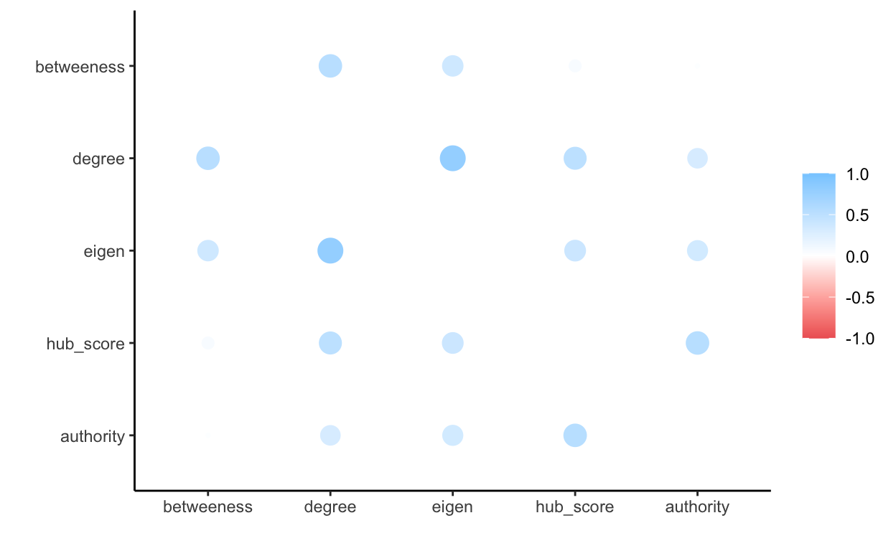

Assignment Description
Calculate closeness, betweenness and eigenvector centrality measures for your network data, and bonachic-power if possible. Compare these measures to basic degree centrality measures. Try to interpret the results. Are there any interesting patterns in the distribution of measures or correlations between them that provide insight into the measures?
You may also want to identify whether the same node(s) are more/less central using the different measures, and see if you can find any patterns in the results based on which nodes are high/low on each measures. Discuss (with any related evidence) whether or not the node(s) behavior is in line with or violates expectations based on the degree centrality measure, comparing across those measures using a data frame similar to that constructed in the syntax. Be sure to share your assignment with group members for comments.
Eigenvector Centrality
The eigenvector centrality determines how important the neighborhood of the nodes is in the network. The higher the eigenvalue centrality, the more important the neighbors of that node are with respect to other nodes in the network. (Jackson 08) The eigenvalues also take into account the proximity of the node to many other important nodes in the network.
AS Roma has the highest eigenvalue in the network. This can be an additional support to our previous speculation on how AS Roma might influential in the influx and outflow of football talent as they are well connected to the other influential nodes in our football transfer network.
temp <- igraph::centr_eigen(ig,directed=T)
transfer.nodes$eigen <- temp$vector
#arrange descending and return top 5 nodes
arrange(transfer.nodes, desc(eigen)) %>%
slice(1:5)
name degree indegree outdegree eigen
AS Roma AS Roma 78 39 39 1.0000000
Genoa CFC Genoa CFC 73 46 27 0.9612356
Inter Milan Inter Milan 68 32 36 0.8787351
ACF Fiorentina ACF Fiorentina 66 38 28 0.7988873
US Sassuolo US Sassuolo 70 35 35 0.7789739Derived and Reflected Centrality
We compute the derived and reflected Eigenvector centrality to better understand whether the influence is more observed in the neighborhood of the nodes or is it more observed on the strength of the node itself.
matrix <- as.matrix(as_adjacency_matrix(ig, attr = "weight"))
#square the adjacency matrix
matsq<-t(matrix) %*% matrix
#Calculate the proportion of reflected centrality.
transfer.nodes$rc<-diag(matsq)/rowSums(matsq)
#replace missing values with 0
transfer.nodes$rc<-ifelse(is.nan(transfer.nodes$rc),0,transfer.nodes$rc)
#Calculate received eigenvalue centrality
transfer.nodes$eigen.rc<-transfer.nodes$eigen*transfer.nodes$rc
#Calculate the proportion of derived centrality.
transfer.nodes$dc<-1-diag(matsq)/rowSums(matsq)
#replace missing values with 0
transfer.nodes$dc<-ifelse(is.nan(transfer.nodes$dc),1,transfer.nodes$dc)
#Calculate received eigenvalue centrality
transfer.nodes$eigen.dc<-transfer.nodes$eigen*transfer.nodes$dc
name degree indegree outdegree eigen
FC Barcelona FC Barcelona 59 21 38 0.2704215
Chelsea FC Chelsea FC 48 12 36 0.2449357
rc eigen.rc dc eigen.dc
FC Barcelona 0.2218696 0.05999830 0.7781304 0.2104232
Chelsea FC 0.2352494 0.05762098 0.7647506 0.1873148##cen <- eigen_centrality(ig, directed = TRUE)
#cen$vector
transfer.nodes%>%
select(-name) %>%
gather() %>%
ggplot(aes(value)) +
geom_histogram() +
facet_wrap(~key, scales = "free")
fashion(temp)
term outdegree degree indegree eigen.rc eigen.dc eigen
1 outdegree .94 .79 .67 .67 .69
2 degree .94 .95 .73 .79 .80
3 indegree .79 .95 .70 .82 .82
4 eigen.rc .67 .73 .70 .82 .86
5 eigen.dc .67 .79 .82 .82 1.00
6 eigen .69 .80 .82 .86 1.00 rplot(temp)

Betweeness Centrality
Betweeness centrality quantifies the number of times a node acts as a bridge along the shortest path between two other nodes.
transfer.nodes$betweeness <- igraph::betweenness(ig, directed=TRUE)
transfer.nodes%>%
arrange(desc(betweeness))%>%
slice(1:5)
name degree indegree outdegree
UC Sampdoria UC Sampdoria 57 32 25
Olympiacos Piraeus Olympiacos Piraeus 41 19 22
Genoa CFC Genoa CFC 73 46 27
ACF Fiorentina ACF Fiorentina 66 38 28
Hellas Verona Hellas Verona 39 27 12
eigen rc eigen.rc dc
UC Sampdoria 0.6156139 0.06250452 0.03847865 0.9374955
Olympiacos Piraeus 0.1548258 0.02184055 0.00338148 0.9781595
Genoa CFC 0.9612356 0.08798435 0.08457368 0.9120157
ACF Fiorentina 0.7988873 0.11743415 0.09381665 0.8825658
Hellas Verona 0.6603528 0.02847622 0.01880435 0.9715238
eigen.dc betweeness
UC Sampdoria 0.5771352 45262.42
Olympiacos Piraeus 0.1514443 43409.28
Genoa CFC 0.8766619 34603.48
ACF Fiorentina 0.7050706 31710.00
Hellas Verona 0.6415485 31489.50Network Constraint
transfer.nodes$constraint<-constraint(ig)
Authority
Authorities are those actors which get many incoming links from hubs, presumably because of their high quality relevant information. (Klien 16) In this case Juventus, Chelsea, Barcelona,PSG, Manchester United and Athleteco have the highest authority scores. This means that these clubs are attracting talent from the hubs like Real Madrid, which we will see includes Eden Hazards transfer in 2019
transfer.nodes$authority <- authority_score(ig)$vector
a <- transfer.nodes %>%
arrange(desc(authority))
head(a)
name degree indegree outdegree
Juventus FC Juventus FC 68 27 41
Chelsea FC Chelsea FC 48 12 36
FC Barcelona FC Barcelona 59 21 38
Paris Saint-Germain Paris Saint-Germain 37 17 20
Manchester United Manchester United 29 15 14
Atltico de Madrid Atltico de Madrid 48 26 22
eigen rc eigen.rc dc
Juventus FC 0.6770212 0.2150981 0.14562594 0.7849019
Chelsea FC 0.2449357 0.2352494 0.05762098 0.7647506
FC Barcelona 0.2704215 0.2218696 0.05999830 0.7781304
Paris Saint-Germain 0.3905048 0.2504831 0.09781486 0.7495169
Manchester United 0.1991738 0.2315679 0.04612226 0.7684321
Atltico de Madrid 0.3488429 0.1835874 0.06404317 0.8164126
eigen.dc betweeness constraint authority
Juventus FC 0.5313953 20394.667 0.10137186 1.0000000
Chelsea FC 0.1873148 470.000 0.10431587 0.7752539
FC Barcelona 0.2104232 4600.083 0.09625534 0.7566895
Paris Saint-Germain 0.2926900 1106.000 0.11810230 0.6491154
Manchester United 0.1530515 1222.500 0.09350633 0.5523492
Atltico de Madrid 0.2847998 1422.662 0.09802569 0.5507481Hubs
Many Ties to Peripheral Actors
name degree indegree outdegree
Aston Villa Aston Villa 35 27 8
Inter Milan Inter Milan 68 32 36
Borussia Dortmund Borussia Dortmund 45 18 27
ACF Fiorentina ACF Fiorentina 66 38 28
Real Madrid Real Madrid 46 17 29
RB Leipzig RB Leipzig 44 26 18
eigen rc eigen.rc dc eigen.dc
Aston Villa 0.2139009 0.1837553 0.03930541 0.8162447 0.1745954
Inter Milan 0.8787351 0.2193920 0.19278741 0.7806080 0.6859477
Borussia Dortmund 0.2370659 0.1480322 0.03509339 0.8519678 0.2019725
ACF Fiorentina 0.7988873 0.1174342 0.09381665 0.8825658 0.7050706
Real Madrid 0.2296944 0.2975292 0.06834078 0.7024708 0.1613536
RB Leipzig 0.3082591 0.1717242 0.05293556 0.8282758 0.2553235
betweeness constraint authority hub_score
Aston Villa 788.000 0.11333984 0.11093521 0.2347654
Inter Milan 2799.590 0.09623411 0.26367856 0.7339420
Borussia Dortmund 2073.000 0.06401961 0.14776045 0.5191494
ACF Fiorentina 31709.998 0.11085545 0.06147522 0.4296561
Real Madrid 4185.762 0.10787227 0.39259852 1.0000000
RB Leipzig 2936.417 0.09094430 0.10029228 0.3521672Consider Real Madrid a hub given that their hub_score is 1. We can confirm this by looking at higher eigenvector derived centrality and lower reflected centrality.
Bridges
A few ties to central actors =
bridges(ig)
+ 238/4386 edges from 2d317e1 (vertex names):
[1] Maccabi Haifa ->Levski Sofia
[2] SC Farense ->Vancouver Whitecaps FC
[3] Moreirense FC ->Al-Batin FC
[4] Grenoble Foot 38 ->FC Famalico
[5] CA Fnix ->FC Famalico
[6] Maccabi Netanya ->Hapoel Beer Sheva
[7] Ironi Kiryat Shmona->Hapoel Beer Sheva
[8] Hapoel Haifa ->Hapoel Beer Sheva
[9] FC Basel 1893 U18 ->Juventus Primavera
[10] Amiens SC U19 ->Manchester United Youth
+ ... omitted several edges name degree indegree outdegree eigen rc
Maccabi Haifa Maccabi Haifa 1 0 1 5.035081e-18 0
eigen.rc dc eigen.dc betweeness constraint
Maccabi Haifa 0 1 5.035081e-18 0 1
authority hub_score
Maccabi Haifa 0 0We test the understanding whether these teams actually serve as bridges in the network. By looking at the derived and reflected centrality scores, we see that the the reflected centrality for Maccabi Haifa is low while the derived centrality is high, thereby making it a bridge.
Correlations for Centrality Measures
head(transfer.nodes)
name degree indegree outdegree
Aston Villa Aston Villa 35 27 8
Inter Milan Inter Milan 68 32 36
Borussia Dortmund Borussia Dortmund 45 18 27
ACF Fiorentina ACF Fiorentina 66 38 28
Real Madrid Real Madrid 46 17 29
RB Leipzig RB Leipzig 44 26 18
eigen rc eigen.rc dc eigen.dc
Aston Villa 0.2139009 0.1837553 0.03930541 0.8162447 0.1745954
Inter Milan 0.8787351 0.2193920 0.19278741 0.7806080 0.6859477
Borussia Dortmund 0.2370659 0.1480322 0.03509339 0.8519678 0.2019725
ACF Fiorentina 0.7988873 0.1174342 0.09381665 0.8825658 0.7050706
Real Madrid 0.2296944 0.2975292 0.06834078 0.7024708 0.1613536
RB Leipzig 0.3082591 0.1717242 0.05293556 0.8282758 0.2553235
betweeness constraint authority hub_score
Aston Villa 788.000 0.11333984 0.11093521 0.2347654
Inter Milan 2799.590 0.09623411 0.26367856 0.7339420
Borussia Dortmund 2073.000 0.06401961 0.14776045 0.5191494
ACF Fiorentina 31709.998 0.11085545 0.06147522 0.4296561
Real Madrid 4185.762 0.10787227 0.39259852 1.0000000
RB Leipzig 2936.417 0.09094430 0.10029228 0.3521672cor<-transfer.nodes %>%
select(degree,eigen,betweeness, authority, hub_score)%>%
correlate() %>%
rearrange()
rplot(cor)

Brokerage
tempo <-as.data.frame(brokerage(network, cl = get.vertex.attribute(network,"league"))$raw.nli)
head(tempo)
w_I w_O b_IO b_OI b_O t
Aston Villa 209 0 0 0 0 209
Inter Milan 925 0 0 0 0 925
Borussia Dortmund 416 0 0 0 0 416
ACF Fiorentina 897 0 0 0 0 897
Real Madrid 420 0 0 0 0 420
RB Leipzig 410 0 0 0 0 410transfer.nodes<-transfer.nodes %>%
mutate(broker.tot = tempo$t, # AS ROMA, AS Monaco, US Sassuolo, Genoa CFC, Atlanta BC
broker.coord = tempo$w_I,
broker.itin = tempo$w_O, # Aston Villa, Inter Milan, Borussia Dortmund, ACF florentina
broker.rep = tempo$b_IO, # # Aston Villa, Inter Milan, Borussia Dortmund, ACF florentina
broker.gate = tempo$b_OI,
broker.lia = tempo$b_O)
transfer.nodes %>%
arrange(desc(broker.tot))
name
AS Roma AS Roma
AS Monaco AS Monaco
US Sassuolo US Sassuolo
Genoa CFC Genoa CFC
Atalanta BC Atalanta BC
Inter Milan Inter Milan
SL Benfica SL Benfica
ACF Fiorentina ACF Fiorentina
Sporting CP Sporting CP
Juventus FC Juventus FC
FC Porto FC Porto
UC Sampdoria UC Sampdoria
Sevilla FC Sevilla FC
AC Milan AC Milan
FC Barcelona FC Barcelona
Brighton & Hove Albion Brighton & Hove Albion
Olympique Lyon Olympique Lyon
Villarreal CF Villarreal CF
LOSC Lille LOSC Lille
KRC Genk KRC Genk
VfB Stuttgart VfB Stuttgart
Club Brugge KV Club Brugge KV
RSC Anderlecht RSC Anderlecht
Udinese Calcio Udinese Calcio
SSC Napoli SSC Napoli
Stade Rennais FC Stade Rennais FC
Atltico de Madrid Atltico de Madrid
Eintracht Frankfurt Eintracht Frankfurt
West Ham United West Ham United
Sociedade Esportiva Palmeiras Sociedade Esportiva Palmeiras
Real Madrid Real Madrid
KAA Gent KAA Gent
Borussia Dortmund Borussia Dortmund
RB Leipzig RB Leipzig
OGC Nice OGC Nice
Torino FC Torino FC
Red Bull Salzburg Red Bull Salzburg
Clube de Regatas do Flamengo Clube de Regatas do Flamengo
Olympiacos Piraeus Olympiacos Piraeus
Wolverhampton Wanderers Wolverhampton Wanderers
Spartak Moscow Spartak Moscow
Watford FC Watford FC
CA Boca Juniors CA Boca Juniors
Ajax Amsterdam Ajax Amsterdam
Chelsea FC Chelsea FC
Clube Atltico Mineiro Clube Atltico Mineiro
Parma Calcio 1913 Parma Calcio 1913
Manchester City Manchester City
Valencia CF Valencia CF
Bologna FC 1909 Bologna FC 1909
TSG 1899 Hoffenheim TSG 1899 Hoffenheim
Cagliari Calcio Cagliari Calcio
FC Schalke 04 FC Schalke 04
Arsenal FC Arsenal FC
Galatasaray A.S. Galatasaray A.S.
Racing Club Racing Club
Standard Lige Standard Lige
Fenerbahce SK Fenerbahce SK
Club Atltico Independiente Club Atltico Independiente
Paris Saint-Germain Paris Saint-Germain
SS Lazio SS Lazio
PSV Eindhoven PSV Eindhoven
Hertha BSC Hertha BSC
GNK Dinamo Zagreb GNK Dinamo Zagreb
Hellas Verona Hellas Verona
West Bromwich Albion West Bromwich Albion
Red Star Belgrade Red Star Belgrade
Zenit St. Petersburg Zenit St. Petersburg
CA River Plate CA River Plate
Olympique Marseille Olympique Marseille
Celtic FC Celtic FC
Everton FC Everton FC
Brentford FC Brentford FC
VfL Wolfsburg VfL Wolfsburg
Southampton FC Southampton FC
FC Copenhagen FC Copenhagen
Celta de Vigo Celta de Vigo
Liverpool FC Liverpool FC
Grmio Foot-Ball Porto Alegrense Grmio Foot-Ball Porto Alegrense
Aston Villa Aston Villa
Real Betis Balompi Real Betis Balompi
Juventus U23 Juventus U23
FC Girondins Bordeaux FC Girondins Bordeaux
Bayer 04 Leverkusen Bayer 04 Leverkusen
1.FSV Mainz 05 1.FSV Mainz 05
FK Krasnodar FK Krasnodar
So Paulo Futebol Clube So Paulo Futebol Clube
Tottenham Hotspur Tottenham Hotspur
Manchester United Manchester United
Newcastle United Newcastle United
1. FC Kln 1. FC Kln
SC Freiburg SC Freiburg
FC Augsburg FC Augsburg
SC Braga SC Braga
CA San Lorenzo de Almagro CA San Lorenzo de Almagro
Dijon FCO Dijon FCO
AFC Bournemouth AFC Bournemouth
FC Toulouse FC Toulouse
Leicester City Leicester City
Lokomotiv Moscow Lokomotiv Moscow
Getafe CF Getafe CF
SV Werder Bremen SV Werder Bremen
Stade Reims Stade Reims
Stoke City Stoke City
CD Cruz Azul CD Cruz Azul
SPAL SPAL
Sport Club Corinthians Paulista Sport Club Corinthians Paulista
PAOK Thessaloniki PAOK Thessaloniki
Club Athletico Paranaense Club Athletico Paranaense
Fulham FC Fulham FC
FC Basel 1893 FC Basel 1893
Feyenoord Rotterdam Feyenoord Rotterdam
Norwich City Norwich City
Amiens SC Amiens SC
CSKA Moscow CSKA Moscow
Hamburger SV Hamburger SV
FC Midtjylland FC Midtjylland
Trabzonspor Trabzonspor
FC Nantes FC Nantes
Rubin Kazan Rubin Kazan
1.FC Union Berlin 1.FC Union Berlin
AS Saint-tienne AS Saint-tienne
CD Legans CD Legans
Huddersfield Town Huddersfield Town
AZ Alkmaar AZ Alkmaar
FC Metz FC Metz
Bayern Munich Bayern Munich
RCD Espanyol Barcelona RCD Espanyol Barcelona
RC Strasbourg Alsace RC Strasbourg Alsace
Hannover 96 Hannover 96
Shakhtar Donetsk Shakhtar Donetsk
RC Lens RC Lens
SK Slavia Prague SK Slavia Prague
CF Monterrey CF Monterrey
CF Amrica CF Amrica
Dynamo Kyiv Dynamo Kyiv
Besiktas JK Besiktas JK
Montpellier HSC Montpellier HSC
Swansea City Swansea City
Sport Club Internacional Sport Club Internacional
Club Tijuana Club Tijuana
FK Rostov FK Rostov
Nottingham Forest Nottingham Forest
Pyramids FC Pyramids FC
Nmes Olympique Nmes Olympique
Deportivo Alavs Deportivo Alavs
Levante UD Levante UD
Santos FC Santos FC
Empoli FC Empoli FC
Chievo Verona Chievo Verona
Cardiff City Cardiff City
Bristol City Bristol City
Club Atltico Talleres Club Atltico Talleres
Club Necaxa Club Necaxa
CA Vlez Sarsfield CA Vlez Sarsfield
BSC Young Boys BSC Young Boys
Atlanta United FC Atlanta United FC
UD Almera UD Almera
Leeds United Leeds United
SD Eibar SD Eibar
FC Lorient FC Lorient
Rapid Vienna Rapid Vienna
Borussia Mnchengladbach Borussia Mnchengladbach
ESTAC Troyes ESTAC Troyes
SM Caen SM Caen
Burnley FC Burnley FC
Middlesbrough FC Middlesbrough FC
Spezia Calcio Spezia Calcio
Santos Laguna Santos Laguna
Vitria Guimares SC Vitria Guimares SC
FC Barcelona B FC Barcelona B
AEK Athens AEK Athens
Al-Ahli Jeddah Al-Ahli Jeddah
Rayo Vallecano Rayo Vallecano
Stade Brestois 29 Stade Brestois 29
Deportivo de La Corua Deportivo de La Corua
SCO Angers SCO Angers
Crystal Palace Crystal Palace
Alanyaspor Alanyaspor
Manchester City U23 Manchester City U23
Tigres UANL Tigres UANL
Girona FC Girona FC
Benevento Calcio Benevento Calcio
Wigan Athletic Wigan Athletic
Ludogorets Razgrad Ludogorets Razgrad
Real Sociedad Real Sociedad
Fluminense Football Club Fluminense Football Club
FC Crotone FC Crotone
Fortuna Dsseldorf Fortuna Dsseldorf
SC Heerenveen SC Heerenveen
Sint-Truidense VV Sint-Truidense VV
Beijing Guoan Beijing Guoan
Brescia Calcio Brescia Calcio
Istanbul Basaksehir FK Istanbul Basaksehir FK
SD Huesca SD Huesca
Ferencvrosi TC Ferencvrosi TC
Defensa y Justicia Defensa y Justicia
CA Osasuna CA Osasuna
UNAM Pumas UNAM Pumas
Rangers FC Rangers FC
FC Dallas FC Dallas
RSC Charleroi RSC Charleroi
Al-Hilal Riyadh Al-Hilal Riyadh
Elche CF Elche CF
Birmingham City Birmingham City
1.FC Nuremberg 1.FC Nuremberg
US Lecce US Lecce
Guangzhou Evergrande Taobao Guangzhou Evergrande Taobao
CA Rosario Central CA Rosario Central
Red Bull Bragantino Red Bull Bragantino
Cruzeiro Esporte Clube Cruzeiro Esporte Clube
Kayserispor Kayserispor
Al-Ittihad Jeddah Al-Ittihad Jeddah
Dynamo Moscow Dynamo Moscow
New York City FC New York City FC
Legia Warszawa Legia Warszawa
Akhmat Grozny Akhmat Grozny
AC Sparta Prague AC Sparta Prague
Los Angeles FC Los Angeles FC
Venezia FC Venezia FC
AA Argentinos Juniors AA Argentinos Juniors
Vancouver Whitecaps FC Vancouver Whitecaps FC
Olimpia Asuncin Olimpia Asuncin
Queens Park Rangers Queens Park Rangers
Deportivo Guadalajara Deportivo Guadalajara
Real Valladolid CF Real Valladolid CF
Chicago Fire FC Chicago Fire FC
Granada CF Granada CF
Derby County Derby County
FC Groningen FC Groningen
Club Atltico Huracn Club Atltico Huracn
UD Las Palmas UD Las Palmas
Changchun Yatai Changchun Yatai
Inter Miami CF Inter Miami CF
NK Osijek NK Osijek
FK Partizan Belgrade FK Partizan Belgrade
Sheffield United Sheffield United
Orlando City SC Orlando City SC
Atlas Guadalajara Atlas Guadalajara
Club Estudiantes de La Plata Club Estudiantes de La Plata
Botafogo de Futebol e Regatas Botafogo de Futebol e Regatas
US Salernitana 1919 US Salernitana 1919
CA Colon CA Colon
New York Red Bulls New York Red Bulls
HNK Rijeka HNK Rijeka
Yeni Malatyaspor Yeni Malatyaspor
Royal Antwerp FC Royal Antwerp FC
Dinamo Moscow Dinamo Moscow
Reading FC Reading FC
Club Atltico Lans Club Atltico Lans
HNK Hajduk Split HNK Hajduk Split
Delfino Pescara 1936 Delfino Pescara 1936
FC Utrecht FC Utrecht
Lech Poznan Lech Poznan
Boavista FC Boavista FC
Portland Timbers Portland Timbers
Dalian Professional Dalian Professional
Juventus Primavera Juventus Primavera
El Ahly Cairo El Ahly Cairo
Cdiz CF Cdiz CF
Brndby IF Brndby IF
Jeonbuk Hyundai Motors Jeonbuk Hyundai Motors
Hapoel Beer Sheva Hapoel Beer Sheva
Deportivo Toluca Deportivo Toluca
FC Famalico FC Famalico
Colorado Rapids Colorado Rapids
Hebei China Fortune Hebei China Fortune
Al-Nassr Riad Al-Nassr Riad
Rio Ave FC Rio Ave FC
Aarhus GF Aarhus GF
Club Len FC Club Len FC
EA Guingamp EA Guingamp
Shenzhen FC Shenzhen FC
Toronto FC Toronto FC
Philadelphia Union Philadelphia Union
Gztepe Gztepe
Los Angeles Galaxy Los Angeles Galaxy
AC Le Havre AC Le Havre
FC Sion FC Sion
Preston North End Preston North End
CF Pachuca CF Pachuca
Frosinone Calcio Frosinone Calcio
Hebei FC Hebei FC
Charlotte FC Charlotte FC
Arsenal Tula Arsenal Tula
Portimonense SC Portimonense SC
CSD Colo Colo CSD Colo Colo
FC Lugano FC Lugano
Barnsley FC Barnsley FC
FC Empoli FC Empoli
D.C. United D.C. United
KV Oostende KV Oostende
Club de Regatas Vasco da Gama Club de Regatas Vasco da Gama
Nashville SC Nashville SC
Bursaspor Bursaspor
Arminia Bielefeld Arminia Bielefeld
RCD Mallorca RCD Mallorca
IFK Norrkping IFK Norrkping
Al-Shabab FC (Riyadh) Al-Shabab FC (Riyadh)
Konyaspor Konyaspor
CD Godoy Cruz Antonio Tomba CD Godoy Cruz Antonio Tomba
Sporting Gijn Sporting Gijn
Tianjin Tianhai (-2019) Tianjin Tianhai (-2019)
Shanghai Port Shanghai Port
Esporte Clube Bahia Esporte Clube Bahia
Willem II Tilburg Willem II Tilburg
Krylya Sovetov Samara Krylya Sovetov Samara
Al-Ettifaq Al-Ettifaq
Kasimpasa Kasimpasa
Houston Dynamo FC Houston Dynamo FC
FC Cincinnati FC Cincinnati
FC Astana FC Astana
Columbus Crew SC Columbus Crew SC
Jiangsu Suning Jiangsu Suning
FC Ingolstadt 04 FC Ingolstadt 04
Sharjah Cultural Sports Club Sharjah Cultural Sports Club
Jagiellonia Bialystok Jagiellonia Bialystok
Zamalek SC Zamalek SC
Urawa Red Diamonds Urawa Red Diamonds
Malm FF Malm FF
Sporting Kansas City Sporting Kansas City
Atltico Nacional Atltico Nacional
Liverpool FC U23 Liverpool FC U23
CD Santa Clara CD Santa Clara
Club Nacional Club Nacional
Club Atltico Unin Club Atltico Unin
Piast Gliwice Piast Gliwice
Minnesota United FC Minnesota United FC
SC Paderborn 07 SC Paderborn 07
Shandong Taishan Shandong Taishan
Deportivo Cali Deportivo Cali
PEC Zwolle PEC Zwolle
FC St. Pauli FC St. Pauli
Cercle Brugge Cercle Brugge
Caykur Rizespor Caykur Rizespor
Sheffield Wednesday Sheffield Wednesday
SG Dynamo Dresden SG Dynamo Dresden
Sunderland AFC Sunderland AFC
KAS Eupen KAS Eupen
Guizhou Hengfeng Guizhou Hengfeng
Blackburn Rovers Blackburn Rovers
New England Revolution New England Revolution
SK Sturm Graz SK Sturm Graz
Universitatea Craiova Universitatea Craiova
Oud-Heverlee Leuven Oud-Heverlee Leuven
Club Cerro Porteo Club Cerro Porteo
Club Libertad Asuncin Club Libertad Asuncin
Moreirense FC Moreirense FC
FC Zrich FC Zrich
1.FC Heidenheim 1846 1.FC Heidenheim 1846
Quertaro FC Quertaro FC
APOEL Nicosia APOEL Nicosia
Real Salt Lake City Real Salt Lake City
Al-Duhail SC Al-Duhail SC
Shanghai Greenland Shenhua Shanghai Greenland Shenhua
Shanghai SIPG Shanghai SIPG
FC Porto B FC Porto B
Kawasaki Frontale Kawasaki Frontale
Millonarios FC Millonarios FC
SL Benfica B SL Benfica B
Ipswich Town Ipswich Town
KV Kortrijk KV Kortrijk
Real Zaragoza Real Zaragoza
Hull City Hull City
Monarcas Morelia Monarcas Morelia
Karpaty Lviv (-2021) Karpaty Lviv (-2021)
AC Perugia Calcio AC Perugia Calcio
Club Atltico Belgrano Club Atltico Belgrano
Athletic Bilbao Athletic Bilbao
Al-Rayyan SC Al-Rayyan SC
CA Newell's Old Boys CA Newell's Old Boys
SpVgg Greuther Frth SpVgg Greuther Frth
Puebla FC Puebla FC
FC Bayern Munich II FC Bayern Munich II
SV Zulte Waregem SV Zulte Waregem
Columbus Crew Columbus Crew
Maccabi Tel Aviv Maccabi Tel Aviv
Belenenses SAD Belenenses SAD
Al Qadisiyah FC Al Qadisiyah FC
Luton Town Luton Town
Atltico de San Luis Atltico de San Luis
Peterborough United Peterborough United
Cear Sporting Club Cear Sporting Club
Holstein Kiel Holstein Kiel
CD Tenerife CD Tenerife
AS Monaco B AS Monaco B
Grasshopper Club Zurich Grasshopper Club Zurich
Budapest Honvd FC Budapest Honvd FC
Altay SK Altay SK
Aris Thessaloniki Aris Thessaloniki
Levski Sofia Levski Sofia
Al-Taawoun FC Al-Taawoun FC
Esperance Tunis Esperance Tunis
Shimizu S-Pulse Shimizu S-Pulse
Al-Ain FC Al-Ain FC
Henan Jianye Henan Jianye
Vitria Guimares SC B Vitria Guimares SC B
Ural Yekaterinburg Ural Yekaterinburg
Hokkaido Consadole Sapporo Hokkaido Consadole Sapporo
Pordenone Calcio Pordenone Calcio
LDU Quito LDU Quito
MOL Fehrvr FC MOL Fehrvr FC
Milan Primavera Milan Primavera
Fortaleza Esporte Clube Fortaleza Esporte Clube
Sivasspor Sivasspor
Odense Boldklub Odense Boldklub
Kashiwa Reysol Kashiwa Reysol
Beitar Jerusalem Beitar Jerusalem
Shanghai Shenhua Shanghai Shenhua
Aberdeen FC Aberdeen FC
Guangzhou City Guangzhou City
Yokohama FC Yokohama FC
Aalborg BK Aalborg BK
Beerschot V.A. Beerschot V.A.
CFR Cluj CFR Cluj
Club Universidad de Chile Club Universidad de Chile
AJ Auxerre AJ Auxerre
Al-Wasl Sports Club Al-Wasl Sports Club
Coventry City Coventry City
Club Atltico Tigre Club Atltico Tigre
Portsmouth FC Portsmouth FC
Waasland-Beveren Waasland-Beveren
Montevideo City Torque Montevideo City Torque
Tianjin Teda Tianjin Teda
Al-Faisaly Harmah Al-Faisaly Harmah
Gamba Osaka Gamba Osaka
CD Tondela CD Tondela
Virtus Entella Virtus Entella
US Palermo US Palermo
Millwall FC Millwall FC
Kashima Antlers Kashima Antlers
Chelsea FC U18 Chelsea FC U18
Liaoning FC Liaoning FC
Panathinaikos Athens Panathinaikos Athens
Royale Union Saint Gilloise Royale Union Saint Gilloise
Vissel Kobe Vissel Kobe
Rakow Czestochowa Rakow Czestochowa
Roma Primavera Roma Primavera
VfL Bochum VfL Bochum
Calcio Padova Calcio Padova
Oeste Futebol Clube (SP) Oeste Futebol Clube (SP)
Olympique de Marseille B Olympique de Marseille B
Junior FC Junior FC
FC Paos de Ferreira FC Paos de Ferreira
Johor Darul Ta'zim Johor Darul Ta'zim
Pescara Primavera Pescara Primavera
Albacete Balompi Albacete Balompi
SK Dnipro-1 SK Dnipro-1
Sampdoria Primavera Sampdoria Primavera
Yokohama F. Marinos Yokohama F. Marinos
Chelsea FC U23 Chelsea FC U23
FC Nordsjaelland FC Nordsjaelland
FC Porto U19 FC Porto U19
Pogon Szczecin Pogon Szczecin
Guangzhou FC Guangzhou FC
Leicester City U23 Leicester City U23
Hatayspor Hatayspor
KV Mechelen KV Mechelen
Atletico River Plate Montevideo Atletico River Plate Montevideo
CA Banfield CA Banfield
CA Pearol CA Pearol
Mazatln FC Mazatln FC
Sparta Rotterdam Sparta Rotterdam
FK Bod/Glimt FK Bod/Glimt
HNK Gorica HNK Gorica
SC Farense SC Farense
Vejle Boldklub Vejle Boldklub
Fatih Karagmrk Fatih Karagmrk
Hammarby IF Hammarby IF
Deportes Tolima Deportes Tolima
Maccabi Petah Tikva Maccabi Petah Tikva
NK Lokomotiva Zagreb NK Lokomotiva Zagreb
Sarpsborg 08 FF Sarpsborg 08 FF
Twente Enschede FC Twente Enschede FC
FC Erzgebirge Aue FC Erzgebirge Aue
CD Amrica de Cali CD Amrica de Cali
FC Lausanne-Sport FC Lausanne-Sport
FC Volendam FC Volendam
IF Elfsborg IF Elfsborg
GD Estoril Praia GD Estoril Praia
BK Hcken BK Hcken
Hibernian FC Hibernian FC
Raja Club Athletic Raja Club Athletic
Paradou AC Paradou AC
Danubio FC Danubio FC
Independiente del Valle Independiente del Valle
Shakhtar Donetsk U19 Shakhtar Donetsk U19
Envigado FC Envigado FC
FC Utrecht U21 FC Utrecht U21
CSKA-Sofia CSKA-Sofia
Stabk Fotball Stabk Fotball
MTK Budapest MTK Budapest
Real Madrid Castilla Real Madrid Castilla
Antalyaspor Antalyaspor
Dinamo Tbilisi Dinamo Tbilisi
FCSB FCSB
Unin Espaola Unin Espaola
Club Alianza Lima Club Alianza Lima
FC Nordsjaelland U19 FC Nordsjaelland U19
Slovan Bratislava Slovan Bratislava
VVV-Venlo VVV-Venlo
Djurgrdens IF Djurgrdens IF
Al-Jazira (Abu Dhabi) Al-Jazira (Abu Dhabi)
Gil Vicente FC Gil Vicente FC
Associao Atltica Ponte Preta Associao Atltica Ponte Preta
Borussia Dortmund II Borussia Dortmund II
Liverpool FC Montevideo Liverpool FC Montevideo
Lechia Gdansk Lechia Gdansk
Altinordu FK Altinordu FK
Wisla Krakw Wisla Krakw
MSK Zilina MSK Zilina
Sport Club do Recife Sport Club do Recife
Palermo FC Palermo FC
FK Cukaricki FK Cukaricki
Molde FK Molde FK
AIK Solna AIK Solna
AS Cittadella AS Cittadella
Vlerenga Fotball Vlerenga Fotball
Hrcules CF Hrcules CF
DAC Dunajska Streda DAC Dunajska Streda
Associao Chapecoense de Futebol Associao Chapecoense de Futebol
FC Sheriff Tiraspol FC Sheriff Tiraspol
FC Viktoria Plzen FC Viktoria Plzen
LASK LASK
Club Atltico Platense Club Atltico Platense
FC Sochaux-Montbliard FC Sochaux-Montbliard
FC Admira Wacker Mdling FC Admira Wacker Mdling
Club Atltico Atlanta Club Atltico Atlanta
Grnik Zabrze Grnik Zabrze
Atltico de Rafaela Atltico de Rafaela
Club Atltico Tucuman Club Atltico Tucuman
FC St. Gallen 1879 FC St. Gallen 1879
CD Feirense CD Feirense
FC Dinamo 1948 FC Dinamo 1948
Montevideo Wanderers Montevideo Wanderers
LKS Lodz LKS Lodz
Esteghlal FC Esteghlal FC
FK Orenburg FK Orenburg
Club Guaran Club Guaran
Wydad Casablanca Wydad Casablanca
NK Maribor NK Maribor
Deportes La Serena Deportes La Serena
Grenoble Foot 38 Grenoble Foot 38
AE Larisa AE Larisa
SK Dynamo Ceske Budejovice SK Dynamo Ceske Budejovice
Valenciennes FC Valenciennes FC
Pohang Steelers Pohang Steelers
Chamois Niortais FC Chamois Niortais FC
IFK Gteborg IFK Gteborg
Tombense Futebol Clube (MG) Tombense Futebol Clube (MG)
FC Slovan Liberec FC Slovan Liberec
Austria Vienna Austria Vienna
FK Radnik Surdulica FK Radnik Surdulica
FK TSC Backa Topola FK TSC Backa Topola
Atltico Clube Goianiense Atltico Clube Goianiense
FK Aktobe FK Aktobe
Clermont Foot 63 Clermont Foot 63
Ajax Amsterdam U21 Ajax Amsterdam U21
Coritiba Foot Ball Club Coritiba Foot Ball Club
Wolfsberger AC Wolfsberger AC
Trs Passos Atltico Clube Trs Passos Atltico Clube
Zaglebie Lubin Zaglebie Lubin
FC Paris Saint-Germain B FC Paris Saint-Germain B
FC Basel 1893 U18 FC Basel 1893 U18
CA Fnix CA Fnix
Heracles Almelo Heracles Almelo
FC Sochaux-Montbliard U19 FC Sochaux-Montbliard U19
NEC Nijmegen NEC Nijmegen
FK Ufa FK Ufa
Derby County U18 Derby County U18
FC Luzern FC Luzern
Motherwell FC Motherwell FC
Juventud de Las Piedras Juventud de Las Piedras
Asteras Tripolis Asteras Tripolis
Amiens SC U19 Amiens SC U19
Persepolis FC Persepolis FC
Oxford United Oxford United
GDSC Alvarenga Futebol SAD GDSC Alvarenga Futebol SAD
Apollon Limassol Apollon Limassol
Chongqing Liangjiang Athletic Chongqing Liangjiang Athletic
Wuhan FC Wuhan FC
Shanghai Shenhua U19 Shanghai Shenhua U19
Genclerbirligi Ankara Genclerbirligi Ankara
Helsingborgs IF Helsingborgs IF
Le Mans FC Le Mans FC
Valencia Mestalla Valencia Mestalla
SnderjyskE SnderjyskE
1.FC Magdeburg 1.FC Magdeburg
Hebei FC Reserves Hebei FC Reserves
Livingston FC Livingston FC
Charlton Athletic Charlton Athletic
HNK Sibenik HNK Sibenik
1.FC Kaiserslautern 1.FC Kaiserslautern
Cherno More Varna Cherno More Varna
Everton FC U23 Everton FC U23
AC Horsens AC Horsens
TP Mazembe TP Mazembe
NAC Breda NAC Breda
Mlaga CF Mlaga CF
LB Chteauroux LB Chteauroux
NK Istra 1961 U17 NK Istra 1961 U17
SpVgg Unterhaching SpVgg Unterhaching
Barcelona SC Guayaquil Barcelona SC Guayaquil
Royal Excel Mouscron Royal Excel Mouscron
Pakhtakor Tashkent Pakhtakor Tashkent
Meizhou Hakka Meizhou Hakka
Astra Giurgiu Astra Giurgiu
Paris FC Youth Paris FC Youth
Zenit 2 St. Petersburg Zenit 2 St. Petersburg
Serra Macaense Futebol Clube (RJ) Serra Macaense Futebol Clube (RJ)
Arsenal FC U18 Arsenal FC U18
Heart of Midlothian FC Heart of Midlothian FC
FC Viitorul Constanta FC Viitorul Constanta
Doncaster Rovers Doncaster Rovers
Silkeborg IF Silkeborg IF
FC Pro Vercelli 1892 FC Pro Vercelli 1892
Fortuna Sittard Fortuna Sittard
Instituto AC Crdoba Instituto AC Crdoba
Cosenza Calcio Cosenza Calcio
Shakhter Soligorsk Shakhter Soligorsk
Hammarby IF U19 Hammarby IF U19
Spartaks Jurmala Spartaks Jurmala
Desna Chernigiv Desna Chernigiv
Napoli Primavera Napoli Primavera
Randers FC Randers FC
Wrzburger Kickers Wrzburger Kickers
Esporte Clube Juventude Esporte Clube Juventude
AC Ajaccio AC Ajaccio
Hertha BSC U19 Hertha BSC U19
PFK Tambov PFK Tambov
Bristol Rovers Bristol Rovers
SK Sigma Olomouc B SK Sigma Olomouc B
GD Chaves GD Chaves
Lyngby BK Lyngby BK
CD Universidad Catlica CD Universidad Catlica
Esbjerg fB Esbjerg fB
CA River Plate II CA River Plate II
1.FC Slovacko 1.FC Slovacko
stersunds FK stersunds FK
Wellington Phoenix Wellington Phoenix
Rosenborg BK Rosenborg BK
FC Tokyo FC Tokyo
Club Deportivo Riestra Club Deportivo Riestra
FC Sion U21 FC Sion U21
Paris FC Paris FC
Gois Esporte Clube Gois Esporte Clube
Universidad San Martn de Porres Universidad San Martn de Porres
Club de Gimnasia y Esgrima La Plata Club de Gimnasia y Esgrima La Plata
AS Monaco U19 AS Monaco U19
FC Barcelona U18 FC Barcelona U18
FK Mlada Boleslav FK Mlada Boleslav
Tiburones Rojos de Veracruz Tiburones Rojos de Veracruz
CS Emelec CS Emelec
FC Thun FC Thun
West Bromwich Albion U18 West Bromwich Albion U18
SSD Palermo SSD Palermo
ADO Den Haag ADO Den Haag
Shaanxi Chang'an Athletic Shaanxi Chang'an Athletic
Club Atltico Newell's Old Boys II Club Atltico Newell's Old Boys II
Audax Italiano Audax Italiano
FC Nordsjaelland Youth FC Nordsjaelland Youth
Atltico de Madrid B Atltico de Madrid B
SV Sandhausen SV Sandhausen
FK Jablonec FK Jablonec
SSV Jahn Regensburg SSV Jahn Regensburg
Parma Primavera Parma Primavera
Empoli Primavera Empoli Primavera
Lyngby BK Youth Lyngby BK Youth
Albirex Niigata Albirex Niigata
Chongqing Dangdai Lifan Chongqing Dangdai Lifan
Shanghai Shenhua Reserves Shanghai Shenhua Reserves
Bologna Primavera Bologna Primavera
Tianjin Jinmen Tiger Reserves Tianjin Jinmen Tiger Reserves
NK Domzale U17 NK Domzale U17
Vitria Setbal FC Vitria Setbal FC
Crdoba CF Crdoba CF
Zorya Lugansk Zorya Lugansk
Arsenal FC U23 Arsenal FC U23
CD Atltico Huila CD Atltico Huila
Osmanlispor FK Osmanlispor FK
Cricima Esporte Clube Cricima Esporte Clube
Sporting CP U23 Sporting CP U23
AD So Caetano (SP) AD So Caetano (SP)
Rotherham United Rotherham United
Bnei Yehuda Tel Aviv Bnei Yehuda Tel Aviv
CD Palestino CD Palestino
Excelsior Rotterdam Excelsior Rotterdam
IF Brommapojkarna IF Brommapojkarna
Team Vaud U18 Team Vaud U18
CD O'Higgins CD O'Higgins
CD 1 de Agosto CD 1 de Agosto
Jbilo Iwata Jbilo Iwata
PSV Eindhoven U21 PSV Eindhoven U21
Leixes SC U23 Leixes SC U23
Red Star FC Red Star FC
Eintracht Braunschweig Eintracht Braunschweig
Ismaily SC Ismaily SC
Al-Shorta SC Al-Shorta SC
Cimarrones de Sonora Cimarrones de Sonora
Guayaquil City FC Guayaquil City FC
Club Atltico Aldosivi Club Atltico Aldosivi
Zhejiang Energy Greentown Zhejiang Energy Greentown
Fulham FC U18 Fulham FC U18
Ascoli Calcio Ascoli Calcio
Renaissance de Berkane Renaissance de Berkane
Gyeongnam FC Gyeongnam FC
CA Boston River CA Boston River
Cracovia Cracovia
Real SC Real SC
Wisla Plock Wisla Plock
SpVgg Unterhaching U19 SpVgg Unterhaching U19
Mamelodi Sundowns FC Mamelodi Sundowns FC
Huachipato FC Huachipato FC
Tema Youth SC Tema Youth SC
Extremadura UD (-2022) Extremadura UD (-2022)
Esporte Clube Vitria Esporte Clube Vitria
Venezia Primavera Venezia Primavera
Masr El Makasa Masr El Makasa
Beijing Renhe Beijing Renhe
Shijiazhuang Ever Bright Reserves Shijiazhuang Ever Bright Reserves
Montreal Impact Montreal Impact
Shanghai Shenxin Shanghai Shenxin
Arminia Bielefeld U19 Arminia Bielefeld U19
Sportivo Luqueo Sportivo Luqueo
Istanbulspor Istanbulspor
CD Lugo CD Lugo
Yanbian Funde Yanbian Funde
Sydney FC Sydney FC
SCG Muangthong United SCG Muangthong United
Slaven Belupo Koprivnica Slaven Belupo Koprivnica
Tottenham Hotspur U23 Tottenham Hotspur U23
FK Vozdovac FK Vozdovac
Defensor Sporting Club Defensor Sporting Club
Independiente Medelln Independiente Medelln
Regal Bukarest U19 Regal Bukarest U19
MSV Duisburg MSV Duisburg
FC Nantes U17 FC Nantes U17
RCD Mallorca U19 RCD Mallorca U19
Sevilla Atltico Sevilla Atltico
Asociacin Atltica Argentinos Juniors U20 Asociacin Atltica Argentinos Juniors U20
AS Trencin AS Trencin
Once Caldas Once Caldas
NK Olimpija Ljubljana NK Olimpija Ljubljana
Maccabi Netanya Maccabi Netanya
Club Nacional Asuncin Club Nacional Asuncin
Maccabi Haifa Maccabi Haifa
Independiente Santa Fe Independiente Santa Fe
Akhisarspor Akhisarspor
Stevenage FC Stevenage FC
Spezia Primavera Spezia Primavera
Ironi Kiryat Shmona Ironi Kiryat Shmona
Etoile Sportive du Sahel Etoile Sportive du Sahel
FUS Rabat FUS Rabat
Ulsan Hyundai Ulsan Hyundai
Daejeon Citizen Daejeon Citizen
1.FK Pribram 1.FK Pribram
CA Rentistas CA Rentistas
Hapoel Raanana Hapoel Raanana
Genoa Under 17 Genoa Under 17
Club Africain Tunis Club Africain Tunis
Royal Excel Mouscron U21 Royal Excel Mouscron U21
Jnkpings Sdra IF Jnkpings Sdra IF
Wadi Degla FC Wadi Degla FC
CF Monterrey II CF Monterrey II
Enppi SC Enppi SC
Lokomotiv Tashkent Lokomotiv Tashkent
BATE Borisov BATE Borisov
Melbourne City FC Melbourne City FC
FK Napredak Krusevac FK Napredak Krusevac
CA Central Crdoba (SdE) CA Central Crdoba (SdE)
Qadsia SC Qadsia SC
Hapoel Haifa Hapoel Haifa
Dinamo Batumi Dinamo Batumi
Sporting CP U19 Sporting CP U19
Al-Wahda FC Abu Dhabi Al-Wahda FC Abu Dhabi
Al-Arabi SC Al-Arabi SC
Austin FC Austin FC
Wuhan Three Towns Wuhan Three Towns
Adana Demirspor Adana Demirspor
Vitesse Arnhem Vitesse Arnhem
FC Sochi FC Sochi
Lommel SK Lommel SK
Nagoya Grampus Nagoya Grampus
San Jose Earthquakes San Jose Earthquakes
FC Baniyas FC Baniyas
AC Monza AC Monza
Hellas Verona Primavera Hellas Verona Primavera
CF Montral CF Montral
Al-Ittihad Kalba SC Al-Ittihad Kalba SC
Cuiab Esporte Clube (MT) Cuiab Esporte Clube (MT)
Pisa Sporting Club Pisa Sporting Club
Al-Hazem SC Al-Hazem SC
FC Shabab Al-Ahli Dubai FC Shabab Al-Ahli Dubai
FC Jurez FC Jurez
US Cremonese US Cremonese
Al-Raed Al-Raed
Metalist Kharkiv Metalist Kharkiv
FK Khimki FK Khimki
Al-Fayha FC Al-Fayha FC
Seattle Sounders FC Seattle Sounders FC
Brentford FC B Brentford FC B
Olympiacos Piraeus B Olympiacos Piraeus B
Pusks Akadmia FC Pusks Akadmia FC
Slask Wroclaw Slask Wroclaw
Tobol Kostanay Tobol Kostanay
Tianjin Jinmen Tiger Tianjin Jinmen Tiger
Al-Sadd SC Al-Sadd SC
Manchester United U18 Manchester United U18
Liverpool FC U18 Liverpool FC U18
MKE Ankaragc MKE Ankaragc
UD Almera B UD Almera B
Al-Ain Al-Ain
Al-Nasr (Dubai) Al-Nasr (Dubai)
Shenzhen FC Reserves Shenzhen FC Reserves
Al-Batin FC Al-Batin FC
AC Pisa 1909 AC Pisa 1909
Henan Songshan Longmen Henan Songshan Longmen
Damac FC Damac FC
Ajax U18 Ajax U18
Villarreal CF B Villarreal CF B
AKA Red Bull Salzburg U18 AKA Red Bull Salzburg U18
Lion City Sailors Lion City Sailors
Zhejiang FC Zhejiang FC
Tokushima Vortis Tokushima Vortis
Asociacin Atltica Argentinos Juniors II Asociacin Atltica Argentinos Juniors II
Leeds United U23 Leeds United U23
Fiorentina Primavera Fiorentina Primavera
Torino Primavera Torino Primavera
Al-Khor SC Al-Khor SC
Al-Gharafa SC Al-Gharafa SC
FC Emmen FC Emmen
Kairat Almaty Kairat Almaty
Samsunspor Samsunspor
Dundee United FC Dundee United FC
Real Sociedad B Real Sociedad B
Lazio U19 Lazio U19
Shandong Luneng Taishan Shandong Luneng Taishan
Qatar SC Qatar SC
Shijiazhuang Ever Bright Shijiazhuang Ever Bright
Ajax Amsterdam U17 Ajax Amsterdam U17
Spartak 2 Moscow Spartak 2 Moscow
West Ham United U23 West Ham United U23
Dalian Professional Reserve Dalian Professional Reserve
Beijing Guoan Reserves Beijing Guoan Reserves
Wuhan Zall Wuhan Zall
Gaziantep FK Gaziantep FK
Inter Milan Primavera Inter Milan Primavera
LOSC Lille B LOSC Lille B
Al-Wahda Mekka Al-Wahda Mekka
GNK Dinamo Zagreb II GNK Dinamo Zagreb II
Sassuolo Primavera Sassuolo Primavera
Dalian Yifang Dalian Yifang
Guangzhou R&F Guangzhou R&F
Genoa Primavera Genoa Primavera
Chicago Fire Chicago Fire
Zhejiang Greentown Zhejiang Greentown
Juventus Under 17 Juventus Under 17
Manchester United Youth Manchester United Youth
MOL Vidi FC MOL Vidi FC
Byksehir Belediye Erzurumspor Byksehir Belediye Erzurumspor
Ajman Club Ajman Club
Arka Gdynia Arka Gdynia
Kuwait SC Kuwait SC
Brighton & Hove Albion U23 Brighton & Hove Albion U23
CD Nacional CD Nacional
KSC Lokeren (- 2020) KSC Lokeren (- 2020)
SV Darmstadt 98 SV Darmstadt 98
degree indegree outdegree
AS Roma 78 39 39
AS Monaco 72 39 33
US Sassuolo 70 35 35
Genoa CFC 73 46 27
Atalanta BC 68 35 33
Inter Milan 68 32 36
SL Benfica 63 25 38
ACF Fiorentina 66 38 28
Sporting CP 63 24 39
Juventus FC 68 27 41
FC Porto 58 31 27
UC Sampdoria 57 32 25
Sevilla FC 58 36 22
AC Milan 60 38 22
FC Barcelona 59 21 38
Brighton & Hove Albion 51 30 21
Olympique Lyon 53 21 32
Villarreal CF 50 24 26
LOSC Lille 49 18 31
KRC Genk 47 28 19
VfB Stuttgart 47 26 21
Club Brugge KV 46 28 18
RSC Anderlecht 45 22 23
Udinese Calcio 46 23 23
SSC Napoli 48 20 28
Stade Rennais FC 45 23 22
Atltico de Madrid 48 26 22
Eintracht Frankfurt 47 30 17
West Ham United 44 25 19
Sociedade Esportiva Palmeiras 44 16 28
Real Madrid 46 17 29
KAA Gent 42 20 22
Borussia Dortmund 45 18 27
RB Leipzig 44 26 18
OGC Nice 42 22 20
Torino FC 43 26 17
Red Bull Salzburg 42 16 26
Clube de Regatas do Flamengo 42 21 21
Olympiacos Piraeus 41 19 22
Wolverhampton Wanderers 43 27 16
Spartak Moscow 41 23 18
Watford FC 41 20 21
CA Boca Juniors 40 18 22
Ajax Amsterdam 40 20 20
Chelsea FC 48 12 36
Clube Atltico Mineiro 39 21 18
Parma Calcio 1913 48 38 10
Manchester City 38 18 20
Valencia CF 39 21 18
Bologna FC 1909 40 25 15
TSG 1899 Hoffenheim 40 16 24
Cagliari Calcio 40 24 16
FC Schalke 04 39 15 24
Arsenal FC 38 21 17
Galatasaray A.S. 39 26 13
Racing Club 36 19 17
Standard Lige 36 19 17
Fenerbahce SK 38 27 11
Club Atltico Independiente 36 13 23
Paris Saint-Germain 37 17 20
SS Lazio 36 21 15
PSV Eindhoven 35 17 18
Hertha BSC 39 28 11
GNK Dinamo Zagreb 33 15 18
Hellas Verona 39 27 12
West Bromwich Albion 33 18 15
Red Star Belgrade 32 14 18
Zenit St. Petersburg 32 17 15
CA River Plate 32 14 18
Olympique Marseille 33 19 14
Celtic FC 32 20 12
Everton FC 33 17 16
Brentford FC 31 17 14
VfL Wolfsburg 33 22 11
Southampton FC 31 15 16
FC Copenhagen 31 18 13
Celta de Vigo 31 17 14
Liverpool FC 31 13 18
Grmio Foot-Ball Porto Alegrense 30 13 17
Aston Villa 35 27 8
Real Betis Balompi 31 13 18
Juventus U23 30 17 13
FC Girondins Bordeaux 30 14 16
Bayer 04 Leverkusen 32 22 10
1.FSV Mainz 05 29 15 14
FK Krasnodar 30 19 11
So Paulo Futebol Clube 28 14 14
Tottenham Hotspur 29 17 12
Manchester United 29 15 14
Newcastle United 31 22 9
1. FC Kln 28 14 14
SC Freiburg 29 18 11
FC Augsburg 29 18 11
SC Braga 30 10 20
CA San Lorenzo de Almagro 28 12 16
Dijon FCO 27 14 13
AFC Bournemouth 27 14 13
FC Toulouse 27 10 17
Leicester City 27 17 10
Lokomotiv Moscow 30 22 8
Getafe CF 28 19 9
SV Werder Bremen 28 16 12
Stade Reims 26 16 10
Stoke City 26 13 13
CD Cruz Azul 28 20 8
SPAL 30 16 14
Sport Club Corinthians Paulista 25 11 14
PAOK Thessaloniki 25 11 14
Club Athletico Paranaense 26 11 15
Fulham FC 33 27 6
FC Basel 1893 25 11 14
Feyenoord Rotterdam 24 13 11
Norwich City 29 22 7
Amiens SC 24 12 12
CSKA Moscow 25 14 11
Hamburger SV 24 11 13
FC Midtjylland 24 11 13
Trabzonspor 27 20 7
FC Nantes 24 12 12
Rubin Kazan 25 15 10
1.FC Union Berlin 25 16 9
AS Saint-tienne 23 12 11
CD Legans 23 14 9
Huddersfield Town 23 8 15
AZ Alkmaar 22 11 11
FC Metz 22 11 11
Bayern Munich 23 12 11
RCD Espanyol Barcelona 25 18 7
RC Strasbourg Alsace 23 15 8
Hannover 96 24 13 11
Shakhtar Donetsk 22 13 9
RC Lens 22 13 9
SK Slavia Prague 23 7 16
CF Monterrey 22 13 9
CF Amrica 22 14 8
Dynamo Kyiv 21 9 12
Besiktas JK 26 20 6
Montpellier HSC 21 11 10
Swansea City 23 7 16
Sport Club Internacional 21 8 13
Club Tijuana 21 11 10
FK Rostov 20 8 12
Nottingham Forest 23 17 6
Pyramids FC 21 14 7
Nmes Olympique 20 11 9
Deportivo Alavs 19 10 9
Levante UD 20 12 8
Santos FC 20 7 13
Empoli FC 20 10 10
Chievo Verona 21 8 13
Cardiff City 21 14 7
Bristol City 19 10 9
Club Atltico Talleres 21 6 15
Club Necaxa 19 7 12
CA Vlez Sarsfield 18 9 9
BSC Young Boys 18 8 10
Atlanta United FC 18 10 8
UD Almera 20 15 5
Leeds United 19 13 6
SD Eibar 18 11 7
FC Lorient 17 10 7
Rapid Vienna 17 6 11
Borussia Mnchengladbach 19 14 5
ESTAC Troyes 17 9 8
SM Caen 17 6 11
Burnley FC 18 12 6
Middlesbrough FC 16 7 9
Spezia Calcio 24 20 4
Santos Laguna 16 9 7
Vitria Guimares SC 17 5 12
FC Barcelona B 15 7 8
AEK Athens 17 12 5
Al-Ahli Jeddah 18 14 4
Rayo Vallecano 15 9 6
Stade Brestois 29 16 11 5
Deportivo de La Corua 17 5 12
SCO Angers 15 7 8
Crystal Palace 18 14 4
Alanyaspor 14 7 7
Manchester City U23 14 7 7
Tigres UANL 14 7 7
Girona FC 15 5 10
Benevento Calcio 18 12 6
Wigan Athletic 14 6 8
Ludogorets Razgrad 14 9 5
Real Sociedad 14 7 7
Fluminense Football Club 15 4 11
FC Crotone 14 8 6
Fortuna Dsseldorf 19 16 3
SC Heerenveen 13 6 7
Sint-Truidense VV 15 4 11
Beijing Guoan 14 10 4
Brescia Calcio 14 9 5
Istanbul Basaksehir FK 15 11 4
SD Huesca 13 7 6
Ferencvrosi TC 14 10 4
Defensa y Justicia 13 7 6
CA Osasuna 17 14 3
UNAM Pumas 14 5 9
Rangers FC 15 12 3
FC Dallas 13 4 9
RSC Charleroi 13 5 8
Al-Hilal Riyadh 16 13 3
Elche CF 12 6 6
Birmingham City 12 6 6
1.FC Nuremberg 12 7 5
US Lecce 13 9 4
Guangzhou Evergrande Taobao 15 12 3
CA Rosario Central 12 6 6
Red Bull Bragantino 20 18 2
Cruzeiro Esporte Clube 15 3 12
Kayserispor 13 9 4
Al-Ittihad Jeddah 21 19 2
Dynamo Moscow 13 9 4
New York City FC 12 8 4
Legia Warszawa 11 5 6
Akhmat Grozny 11 5 6
AC Sparta Prague 11 6 5
Los Angeles FC 12 8 4
Venezia FC 13 10 3
AA Argentinos Juniors 12 4 8
Vancouver Whitecaps FC 12 9 3
Olimpia Asuncin 11 4 7
Queens Park Rangers 11 4 7
Deportivo Guadalajara 14 10 4
Real Valladolid CF 12 9 3
Chicago Fire FC 12 9 3
Granada CF 14 11 3
Derby County 11 5 6
FC Groningen 11 3 8
Club Atltico Huracn 11 4 7
UD Las Palmas 12 3 9
Changchun Yatai 10 5 5
Inter Miami CF 11 8 3
NK Osijek 11 3 8
FK Partizan Belgrade 14 2 12
Sheffield United 15 13 2
Orlando City SC 10 7 3
Atlas Guadalajara 10 3 7
Club Estudiantes de La Plata 10 4 6
Botafogo de Futebol e Regatas 10 4 6
US Salernitana 1919 11 8 3
CA Colon 10 4 6
New York Red Bulls 9 5 4
HNK Rijeka 13 2 11
Yeni Malatyaspor 10 3 7
Royal Antwerp FC 20 19 1
Dinamo Moscow 10 7 3
Reading FC 9 4 5
Club Atltico Lans 10 4 6
HNK Hajduk Split 12 2 10
Delfino Pescara 1936 12 3 9
FC Utrecht 9 3 6
Lech Poznan 8 4 4
Boavista FC 8 4 4
Portland Timbers 10 8 2
Dalian Professional 10 8 2
Juventus Primavera 8 4 4
El Ahly Cairo 10 8 2
Cdiz CF 10 8 2
Brndby IF 10 2 8
Jeonbuk Hyundai Motors 8 3 5
Hapoel Beer Sheva 8 3 5
Deportivo Toluca 10 8 2
FC Famalico 8 3 5
Colorado Rapids 8 3 5
Hebei China Fortune 8 3 5
Al-Nassr Riad 15 14 1
Rio Ave FC 10 2 8
Aarhus GF 8 3 5
Club Len FC 9 7 2
EA Guingamp 9 2 7
Shenzhen FC 14 13 1
Toronto FC 7 4 3
Philadelphia Union 7 3 4
Gztepe 8 6 2
Los Angeles Galaxy 8 6 2
AC Le Havre 7 3 4
FC Sion 7 4 3
Preston North End 7 4 3
CF Pachuca 7 3 4
Frosinone Calcio 9 7 2
Hebei FC 7 4 3
Charlotte FC 13 12 1
Arsenal Tula 7 4 3
Portimonense SC 12 3 9
CSD Colo Colo 7 3 4
FC Lugano 7 3 4
Barnsley FC 8 2 6
FC Empoli 9 5 4
D.C. United 7 5 2
KV Oostende 7 3 4
Club de Regatas Vasco da Gama 7 2 5
Nashville SC 7 5 2
Bursaspor 8 2 6
Arminia Bielefeld 11 10 1
RCD Mallorca 11 10 1
IFK Norrkping 10 1 9
Al-Shabab FC (Riyadh) 10 9 1
Konyaspor 6 3 3
CD Godoy Cruz Antonio Tomba 8 2 6
Sporting Gijn 6 3 3
Tianjin Tianhai (-2019) 10 1 9
Shanghai Port 6 4 2
Esporte Clube Bahia 9 1 8
Willem II Tilburg 6 2 4
Krylya Sovetov Samara 8 2 6
Al-Ettifaq 6 4 2
Kasimpasa 6 2 4
Houston Dynamo FC 6 4 2
FC Cincinnati 9 8 1
FC Astana 6 4 2
Columbus Crew SC 6 3 3
Jiangsu Suning 6 4 2
FC Ingolstadt 04 6 3 3
Sharjah Cultural Sports Club 8 7 1
Jagiellonia Bialystok 6 2 4
Zamalek SC 6 3 3
Urawa Red Diamonds 8 7 1
Malm FF 5 2 3
Sporting Kansas City 5 2 3
Atltico Nacional 8 1 7
Liverpool FC U23 7 1 6
CD Santa Clara 7 1 6
Club Nacional 7 1 6
Club Atltico Unin 9 1 8
Piast Gliwice 5 2 3
Minnesota United FC 8 7 1
SC Paderborn 07 7 1 6
Shandong Taishan 5 2 3
Deportivo Cali 9 1 8
PEC Zwolle 7 1 6
FC St. Pauli 5 2 3
Cercle Brugge 8 7 1
Caykur Rizespor 7 6 1
Sheffield Wednesday 5 3 2
SG Dynamo Dresden 5 3 2
Sunderland AFC 8 1 7
KAS Eupen 6 4 2
Guizhou Hengfeng 5 2 3
Blackburn Rovers 5 3 2
New England Revolution 6 5 1
SK Sturm Graz 6 1 5
Universitatea Craiova 7 1 6
Oud-Heverlee Leuven 6 5 1
Club Cerro Porteo 6 1 5
Club Libertad Asuncin 6 5 1
Moreirense FC 6 1 5
FC Zrich 6 1 5
1.FC Heidenheim 1846 6 2 4
Quertaro FC 6 1 5
APOEL Nicosia 5 2 3
Real Salt Lake City 5 3 2
Al-Duhail SC 8 7 1
Shanghai Greenland Shenhua 6 5 1
Shanghai SIPG 5 3 2
FC Porto B 5 2 3
Kawasaki Frontale 5 1 4
Millonarios FC 5 1 4
SL Benfica B 5 1 4
Ipswich Town 5 1 4
KV Kortrijk 6 1 5
Real Zaragoza 5 1 4
Hull City 5 2 3
Monarcas Morelia 5 1 4
Karpaty Lviv (-2021) 5 1 4
AC Perugia Calcio 5 3 2
Club Atltico Belgrano 5 1 4
Athletic Bilbao 5 4 1
Al-Rayyan SC 5 4 1
CA Newell's Old Boys 4 1 3
SpVgg Greuther Frth 4 2 2
Puebla FC 4 2 2
FC Bayern Munich II 4 1 3
SV Zulte Waregem 4 2 2
Columbus Crew 4 3 1
Maccabi Tel Aviv 4 1 3
Belenenses SAD 4 1 3
Al Qadisiyah FC 4 1 3
Luton Town 4 1 3
Atltico de San Luis 4 3 1
Peterborough United 4 1 3
Cear Sporting Club 4 3 1
Holstein Kiel 4 1 3
CD Tenerife 4 1 3
AS Monaco B 4 1 3
Grasshopper Club Zurich 4 1 3
Budapest Honvd FC 4 2 2
Altay SK 4 3 1
Aris Thessaloniki 4 3 1
Levski Sofia 4 1 3
Al-Taawoun FC 4 3 1
Esperance Tunis 4 1 3
Shimizu S-Pulse 4 3 1
Al-Ain FC 5 4 1
Henan Jianye 4 3 1
Vitria Guimares SC B 4 2 2
Ural Yekaterinburg 4 3 1
Hokkaido Consadole Sapporo 3 1 2
Pordenone Calcio 3 1 2
LDU Quito 3 1 2
MOL Fehrvr FC 3 2 1
Milan Primavera 3 1 2
Fortaleza Esporte Clube 4 3 1
Sivasspor 3 1 2
Odense Boldklub 3 1 2
Kashiwa Reysol 4 3 1
Beitar Jerusalem 3 1 2
Shanghai Shenhua 3 2 1
Aberdeen FC 3 1 2
Guangzhou City 3 2 1
Yokohama FC 3 2 1
Aalborg BK 3 1 2
Beerschot V.A. 3 2 1
CFR Cluj 4 1 3
Club Universidad de Chile 3 1 2
AJ Auxerre 5 1 4
Al-Wasl Sports Club 3 2 1
Coventry City 3 1 2
Club Atltico Tigre 5 1 4
Portsmouth FC 3 1 2
Waasland-Beveren 3 1 2
Montevideo City Torque 3 2 1
Tianjin Teda 3 2 1
Al-Faisaly Harmah 4 3 1
Gamba Osaka 3 1 2
CD Tondela 3 1 2
Virtus Entella 3 2 1
US Palermo 3 1 2
Millwall FC 4 3 1
Kashima Antlers 3 2 1
Chelsea FC U18 3 2 1
Liaoning FC 3 1 2
Panathinaikos Athens 3 2 1
Royale Union Saint Gilloise 3 1 2
Vissel Kobe 2 1 1
Rakow Czestochowa 2 1 1
Roma Primavera 2 1 1
VfL Bochum 2 1 1
Calcio Padova 3 1 2
Oeste Futebol Clube (SP) 2 1 1
Olympique de Marseille B 2 1 1
Junior FC 5 1 4
FC Paos de Ferreira 2 1 1
Johor Darul Ta'zim 2 1 1
Pescara Primavera 3 1 2
Albacete Balompi 2 1 1
SK Dnipro-1 2 1 1
Sampdoria Primavera 2 1 1
Yokohama F. Marinos 2 1 1
Chelsea FC U23 9 0 9
FC Nordsjaelland 10 0 10
FC Porto U19 2 0 2
Pogon Szczecin 4 0 4
Guangzhou FC 2 0 2
Leicester City U23 1 0 1
Hatayspor 1 0 1
KV Mechelen 6 0 6
Atletico River Plate Montevideo 1 0 1
CA Banfield 6 0 6
CA Pearol 9 0 9
Mazatln FC 4 0 4
Sparta Rotterdam 5 0 5
FK Bod/Glimt 5 0 5
HNK Gorica 8 0 8
SC Farense 1 0 1
Vejle Boldklub 2 0 2
Fatih Karagmrk 2 0 2
Hammarby IF 4 0 4
Deportes Tolima 2 0 2
Maccabi Petah Tikva 2 0 2
NK Lokomotiva Zagreb 9 0 9
Sarpsborg 08 FF 1 0 1
Twente Enschede FC 2 0 2
FC Erzgebirge Aue 2 0 2
CD Amrica de Cali 2 0 2
FC Lausanne-Sport 4 0 4
FC Volendam 1 0 1
IF Elfsborg 2 0 2
GD Estoril Praia 7 0 7
BK Hcken 2 0 2
Hibernian FC 2 0 2
Raja Club Athletic 3 0 3
Paradou AC 3 0 3
Danubio FC 4 0 4
Independiente del Valle 9 0 9
Shakhtar Donetsk U19 1 0 1
Envigado FC 2 0 2
FC Utrecht U21 1 0 1
CSKA-Sofia 9 0 9
Stabk Fotball 4 0 4
MTK Budapest 2 0 2
Real Madrid Castilla 3 0 3
Antalyaspor 4 0 4
Dinamo Tbilisi 2 0 2
FCSB 4 0 4
Unin Espaola 1 0 1
Club Alianza Lima 1 0 1
FC Nordsjaelland U19 1 0 1
Slovan Bratislava 2 0 2
VVV-Venlo 3 0 3
Djurgrdens IF 8 0 8
Al-Jazira (Abu Dhabi) 2 0 2
Gil Vicente FC 1 0 1
Associao Atltica Ponte Preta 3 0 3
Borussia Dortmund II 1 0 1
Liverpool FC Montevideo 5 0 5
Lechia Gdansk 3 0 3
Altinordu FK 6 0 6
Wisla Krakw 3 0 3
MSK Zilina 4 0 4
Sport Club do Recife 5 0 5
Palermo FC 1 0 1
FK Cukaricki 8 0 8
Molde FK 4 0 4
AIK Solna 3 0 3
AS Cittadella 6 0 6
Vlerenga Fotball 4 0 4
Hrcules CF 1 0 1
DAC Dunajska Streda 3 0 3
Associao Chapecoense de Futebol 5 0 5
FC Sheriff Tiraspol 1 0 1
FC Viktoria Plzen 3 0 3
LASK 6 0 6
Club Atltico Platense 1 0 1
FC Sochaux-Montbliard 4 0 4
FC Admira Wacker Mdling 2 0 2
Club Atltico Atlanta 1 0 1
Grnik Zabrze 4 0 4
Atltico de Rafaela 3 0 3
Club Atltico Tucuman 4 0 4
FC St. Gallen 1879 5 0 5
CD Feirense 2 0 2
FC Dinamo 1948 1 0 1
Montevideo Wanderers 4 0 4
LKS Lodz 2 0 2
Esteghlal FC 3 0 3
FK Orenburg 3 0 3
Club Guaran 2 0 2
Wydad Casablanca 1 0 1
NK Maribor 2 0 2
Deportes La Serena 1 0 1
Grenoble Foot 38 1 0 1
AE Larisa 1 0 1
SK Dynamo Ceske Budejovice 1 0 1
Valenciennes FC 3 0 3
Pohang Steelers 2 0 2
Chamois Niortais FC 3 0 3
IFK Gteborg 2 0 2
Tombense Futebol Clube (MG) 2 0 2
FC Slovan Liberec 1 0 1
Austria Vienna 1 0 1
FK Radnik Surdulica 1 0 1
FK TSC Backa Topola 1 0 1
Atltico Clube Goianiense 2 0 2
FK Aktobe 1 0 1
Clermont Foot 63 4 0 4
Ajax Amsterdam U21 2 0 2
Coritiba Foot Ball Club 2 0 2
Wolfsberger AC 1 0 1
Trs Passos Atltico Clube 1 0 1
Zaglebie Lubin 4 0 4
FC Paris Saint-Germain B 1 0 1
FC Basel 1893 U18 1 0 1
CA Fnix 1 0 1
Heracles Almelo 7 0 7
FC Sochaux-Montbliard U19 1 0 1
NEC Nijmegen 4 0 4
FK Ufa 10 0 10
Derby County U18 1 0 1
FC Luzern 5 0 5
Motherwell FC 3 0 3
Juventud de Las Piedras 1 0 1
Asteras Tripolis 1 0 1
Amiens SC U19 2 0 2
Persepolis FC 2 0 2
Oxford United 3 0 3
GDSC Alvarenga Futebol SAD 2 0 2
Apollon Limassol 2 0 2
Chongqing Liangjiang Athletic 2 0 2
Wuhan FC 1 0 1
Shanghai Shenhua U19 1 0 1
Genclerbirligi Ankara 3 0 3
Helsingborgs IF 2 0 2
Le Mans FC 1 0 1
Valencia Mestalla 1 0 1
SnderjyskE 1 0 1
1.FC Magdeburg 1 0 1
Hebei FC Reserves 2 0 2
Livingston FC 1 0 1
Charlton Athletic 4 0 4
HNK Sibenik 1 0 1
1.FC Kaiserslautern 1 0 1
Cherno More Varna 1 0 1
Everton FC U23 2 0 2
AC Horsens 1 0 1
TP Mazembe 1 0 1
NAC Breda 1 0 1
Mlaga CF 9 0 9
LB Chteauroux 2 0 2
NK Istra 1961 U17 1 0 1
SpVgg Unterhaching 1 0 1
Barcelona SC Guayaquil 2 0 2
Royal Excel Mouscron 1 0 1
Pakhtakor Tashkent 1 0 1
Meizhou Hakka 2 0 2
Astra Giurgiu 1 0 1
Paris FC Youth 1 0 1
Zenit 2 St. Petersburg 1 0 1
Serra Macaense Futebol Clube (RJ) 1 0 1
Arsenal FC U18 1 0 1
Heart of Midlothian FC 1 0 1
FC Viitorul Constanta 7 0 7
Doncaster Rovers 2 0 2
Silkeborg IF 1 0 1
FC Pro Vercelli 1892 1 0 1
Fortuna Sittard 2 0 2
Instituto AC Crdoba 2 0 2
Cosenza Calcio 1 0 1
Shakhter Soligorsk 1 0 1
Hammarby IF U19 1 0 1
Spartaks Jurmala 1 0 1
Desna Chernigiv 1 0 1
Napoli Primavera 1 0 1
Randers FC 1 0 1
Wrzburger Kickers 1 0 1
Esporte Clube Juventude 1 0 1
AC Ajaccio 2 0 2
Hertha BSC U19 1 0 1
PFK Tambov 1 0 1
Bristol Rovers 1 0 1
SK Sigma Olomouc B 1 0 1
GD Chaves 3 0 3
Lyngby BK 1 0 1
CD Universidad Catlica 3 0 3
Esbjerg fB 2 0 2
CA River Plate II 1 0 1
1.FC Slovacko 1 0 1
stersunds FK 3 0 3
Wellington Phoenix 1 0 1
Rosenborg BK 1 0 1
FC Tokyo 1 0 1
Club Deportivo Riestra 1 0 1
FC Sion U21 1 0 1
Paris FC 1 0 1
Gois Esporte Clube 2 0 2
Universidad San Martn de Porres 1 0 1
Club de Gimnasia y Esgrima La Plata 2 0 2
AS Monaco U19 1 0 1
FC Barcelona U18 1 0 1
FK Mlada Boleslav 1 0 1
Tiburones Rojos de Veracruz 1 0 1
CS Emelec 2 0 2
FC Thun 2 0 2
West Bromwich Albion U18 1 0 1
SSD Palermo 1 0 1
ADO Den Haag 3 0 3
Shaanxi Chang'an Athletic 1 0 1
Club Atltico Newell's Old Boys II 2 0 2
Audax Italiano 1 0 1
FC Nordsjaelland Youth 1 0 1
Atltico de Madrid B 2 0 2
SV Sandhausen 1 0 1
FK Jablonec 1 0 1
SSV Jahn Regensburg 1 0 1
Parma Primavera 2 1 1
Empoli Primavera 1 0 1
Lyngby BK Youth 1 0 1
Albirex Niigata 1 0 1
Chongqing Dangdai Lifan 2 1 1
Shanghai Shenhua Reserves 3 0 3
Bologna Primavera 1 0 1
Tianjin Jinmen Tiger Reserves 1 0 1
NK Domzale U17 1 0 1
Vitria Setbal FC 1 0 1
Crdoba CF 3 0 3
Zorya Lugansk 2 0 2
Arsenal FC U23 3 0 3
CD Atltico Huila 1 0 1
Osmanlispor FK 4 0 4
Cricima Esporte Clube 1 0 1
Sporting CP U23 1 0 1
AD So Caetano (SP) 1 0 1
Rotherham United 1 0 1
Bnei Yehuda Tel Aviv 1 0 1
CD Palestino 1 0 1
Excelsior Rotterdam 1 0 1
IF Brommapojkarna 1 0 1
Team Vaud U18 1 0 1
CD O'Higgins 1 0 1
CD 1 de Agosto 1 0 1
Jbilo Iwata 1 0 1
PSV Eindhoven U21 1 0 1
Leixes SC U23 1 0 1
Red Star FC 1 0 1
Eintracht Braunschweig 2 0 2
Ismaily SC 2 0 2
Al-Shorta SC 1 0 1
Cimarrones de Sonora 1 0 1
Guayaquil City FC 1 0 1
Club Atltico Aldosivi 1 0 1
Zhejiang Energy Greentown 1 0 1
Fulham FC U18 1 0 1
Ascoli Calcio 1 0 1
Renaissance de Berkane 1 0 1
Gyeongnam FC 2 0 2
CA Boston River 2 0 2
Cracovia 1 0 1
Real SC 1 0 1
Wisla Plock 2 0 2
SpVgg Unterhaching U19 1 0 1
Mamelodi Sundowns FC 1 0 1
Huachipato FC 1 0 1
Tema Youth SC 1 0 1
Extremadura UD (-2022) 1 0 1
Esporte Clube Vitria 1 0 1
Venezia Primavera 1 0 1
Masr El Makasa 2 0 2
Beijing Renhe 1 0 1
Shijiazhuang Ever Bright Reserves 1 0 1
Montreal Impact 1 0 1
Shanghai Shenxin 1 0 1
Arminia Bielefeld U19 1 0 1
Sportivo Luqueo 1 0 1
Istanbulspor 1 0 1
CD Lugo 1 0 1
Yanbian Funde 1 0 1
Sydney FC 1 0 1
SCG Muangthong United 1 0 1
Slaven Belupo Koprivnica 1 0 1
Tottenham Hotspur U23 1 0 1
FK Vozdovac 1 0 1
Defensor Sporting Club 1 0 1
Independiente Medelln 1 0 1
Regal Bukarest U19 1 0 1
MSV Duisburg 1 0 1
FC Nantes U17 1 0 1
RCD Mallorca U19 1 0 1
Sevilla Atltico 1 0 1
Asociacin Atltica Argentinos Juniors U20 1 0 1
AS Trencin 1 0 1
Once Caldas 1 0 1
NK Olimpija Ljubljana 1 0 1
Maccabi Netanya 1 0 1
Club Nacional Asuncin 1 0 1
Maccabi Haifa 1 0 1
Independiente Santa Fe 2 0 2
Akhisarspor 1 0 1
Stevenage FC 1 0 1
Spezia Primavera 1 0 1
Ironi Kiryat Shmona 1 0 1
Etoile Sportive du Sahel 1 0 1
FUS Rabat 1 0 1
Ulsan Hyundai 1 0 1
Daejeon Citizen 1 0 1
1.FK Pribram 1 0 1
CA Rentistas 1 0 1
Hapoel Raanana 1 0 1
Genoa Under 17 1 0 1
Club Africain Tunis 1 0 1
Royal Excel Mouscron U21 1 0 1
Jnkpings Sdra IF 1 0 1
Wadi Degla FC 1 0 1
CF Monterrey II 1 0 1
Enppi SC 1 0 1
Lokomotiv Tashkent 1 0 1
BATE Borisov 1 0 1
Melbourne City FC 1 0 1
FK Napredak Krusevac 1 0 1
CA Central Crdoba (SdE) 1 0 1
Qadsia SC 1 0 1
Hapoel Haifa 1 0 1
Dinamo Batumi 1 1 0
Sporting CP U19 1 1 0
Al-Wahda FC Abu Dhabi 3 3 0
Al-Arabi SC 3 3 0
Austin FC 5 5 0
Wuhan Three Towns 3 3 0
Adana Demirspor 3 3 0
Vitesse Arnhem 4 4 0
FC Sochi 8 8 0
Lommel SK 6 6 0
Nagoya Grampus 2 2 0
San Jose Earthquakes 4 4 0
FC Baniyas 1 1 0
AC Monza 7 7 0
Hellas Verona Primavera 1 1 0
CF Montral 2 2 0
Al-Ittihad Kalba SC 2 2 0
Cuiab Esporte Clube (MT) 1 1 0
Pisa Sporting Club 2 2 0
Al-Hazem SC 2 2 0
FC Shabab Al-Ahli Dubai 4 4 0
FC Jurez 2 2 0
US Cremonese 2 2 0
Al-Raed 3 3 0
Metalist Kharkiv 1 1 0
FK Khimki 1 1 0
Al-Fayha FC 1 1 0
Seattle Sounders FC 4 4 0
Brentford FC B 1 1 0
Olympiacos Piraeus B 1 1 0
Pusks Akadmia FC 2 2 0
Slask Wroclaw 2 2 0
Tobol Kostanay 1 1 0
Tianjin Jinmen Tiger 3 3 0
Al-Sadd SC 2 2 0
Manchester United U18 1 1 0
Liverpool FC U18 1 1 0
MKE Ankaragc 2 2 0
UD Almera B 1 1 0
Al-Ain 1 1 0
Al-Nasr (Dubai) 4 4 0
Shenzhen FC Reserves 7 7 0
Al-Batin FC 1 1 0
AC Pisa 1909 3 3 0
Henan Songshan Longmen 2 2 0
Damac FC 1 1 0
Ajax U18 1 1 0
Villarreal CF B 1 1 0
AKA Red Bull Salzburg U18 1 1 0
Lion City Sailors 1 1 0
Zhejiang FC 1 1 0
Tokushima Vortis 1 1 0
Asociacin Atltica Argentinos Juniors II 1 1 0
Leeds United U23 1 1 0
Fiorentina Primavera 3 3 0
Torino Primavera 1 1 0
Al-Khor SC 1 1 0
Al-Gharafa SC 3 3 0
FC Emmen 1 1 0
Kairat Almaty 2 2 0
Samsunspor 1 1 0
Dundee United FC 1 1 0
Real Sociedad B 1 1 0
Lazio U19 1 1 0
Shandong Luneng Taishan 4 4 0
Qatar SC 2 2 0
Shijiazhuang Ever Bright 1 1 0
Ajax Amsterdam U17 1 1 0
Spartak 2 Moscow 1 1 0
West Ham United U23 1 1 0
Dalian Professional Reserve 2 2 0
Beijing Guoan Reserves 1 1 0
Wuhan Zall 2 2 0
Gaziantep FK 1 1 0
Inter Milan Primavera 4 4 0
LOSC Lille B 1 1 0
Al-Wahda Mekka 6 6 0
GNK Dinamo Zagreb II 1 1 0
Sassuolo Primavera 1 1 0
Dalian Yifang 3 3 0
Guangzhou R&F 6 6 0
Genoa Primavera 1 1 0
Chicago Fire 2 2 0
Zhejiang Greentown 2 2 0
Juventus Under 17 1 1 0
Manchester United Youth 1 1 0
MOL Vidi FC 1 1 0
Byksehir Belediye Erzurumspor 2 2 0
Ajman Club 1 1 0
Arka Gdynia 1 1 0
Kuwait SC 1 1 0
Brighton & Hove Albion U23 1 1 0
CD Nacional 1 1 0
KSC Lokeren (- 2020) 1 1 0
SV Darmstadt 98 1 1 0
eigen rc
AS Roma 1.000000e+00 0.1130985743
AS Monaco 3.837432e-01 0.1410819563
US Sassuolo 7.789739e-01 0.0487222711
Genoa CFC 9.612356e-01 0.0879843467
Atalanta BC 7.380989e-01 0.0801672290
Inter Milan 8.787351e-01 0.2193919607
SL Benfica 2.308760e-01 0.0952774597
ACF Fiorentina 7.988873e-01 0.1174341525
Sporting CP 2.121757e-01 0.0853551060
Juventus FC 6.770212e-01 0.2150980556
FC Porto 1.985062e-01 0.1330202607
UC Sampdoria 6.156139e-01 0.0625045237
Sevilla FC 5.337859e-01 0.0771943132
AC Milan 7.611737e-01 0.1259772387
FC Barcelona 2.704215e-01 0.2218695856
Brighton & Hove Albion 1.191690e-01 0.1120999023
Olympique Lyon 2.396670e-01 0.1223346203
Villarreal CF 2.558042e-01 0.0951563725
LOSC Lille 7.554311e-02 0.1937598369
KRC Genk 4.484732e-02 0.1637214624
VfB Stuttgart 1.872070e-01 0.0682512352
Club Brugge KV 2.097951e-01 0.0664253489
RSC Anderlecht 1.614641e-01 0.0677937614
Udinese Calcio 3.235318e-01 0.0638212121
SSC Napoli 4.156824e-01 0.1712629549
Stade Rennais FC 2.284923e-01 0.1361214899
Atltico de Madrid 3.488429e-01 0.1835874083
Eintracht Frankfurt 4.414686e-01 0.0469215186
West Ham United 2.013493e-01 0.1882180790
Sociedade Esportiva Palmeiras 1.829270e-01 0.0602094376
Real Madrid 2.296944e-01 0.2975291988
KAA Gent 6.053065e-02 0.0576468962
Borussia Dortmund 2.370659e-01 0.1480322222
RB Leipzig 3.082591e-01 0.1717242406
OGC Nice 1.859963e-01 0.0599013740
Torino FC 6.188304e-01 0.0452236277
Red Bull Salzburg 8.838186e-02 0.0529883600
Clube de Regatas do Flamengo 3.482146e-01 0.0643169983
Olympiacos Piraeus 1.548258e-01 0.0218405460
Wolverhampton Wanderers 3.154068e-01 0.1113890397
Spartak Moscow 1.439389e-01 0.0722945043
Watford FC 1.825306e-01 0.0870124073
CA Boca Juniors 8.917331e-02 0.0521983006
Ajax Amsterdam 1.454995e-01 0.1406290309
Chelsea FC 2.449357e-01 0.2352493749
Clube Atltico Mineiro 1.101964e-01 0.0300981645
Parma Calcio 1913 6.510898e-01 0.0964001179
Manchester City 1.501724e-01 0.2444985431
Valencia CF 3.102193e-01 0.0847212530
Bologna FC 1909 3.596180e-01 0.1013028238
TSG 1899 Hoffenheim 1.691399e-01 0.0539259124
Cagliari Calcio 5.608867e-01 0.0572146482
FC Schalke 04 1.269416e-01 0.0669368350
Arsenal FC 2.487847e-01 0.1871825529
Galatasaray A.S. 2.607454e-01 0.0939132897
Racing Club 1.901184e-02 0.1019231701
Standard Lige 2.330110e-01 0.0297871587
Fenerbahce SK 1.141936e-01 0.0574497347
Club Atltico Independiente 2.561302e-02 0.0675581598
Paris Saint-Germain 3.905048e-01 0.2504831037
SS Lazio 2.894716e-01 0.1264606356
PSV Eindhoven 1.387787e-01 0.0722626842
Hertha BSC 2.850800e-01 0.0849499783
GNK Dinamo Zagreb 2.911870e-02 0.0989103806
Hellas Verona 6.603528e-01 0.0284762209
West Bromwich Albion 1.396270e-01 0.0916527231
Red Star Belgrade 4.777426e-02 0.0572444379
Zenit St. Petersburg 8.730892e-02 0.1124069477
CA River Plate 2.108060e-02 0.0446630727
Olympique Marseille 4.170069e-01 0.0808880846
Celtic FC 7.975296e-02 0.0865219052
Everton FC 2.510777e-01 0.1663835003
Brentford FC 9.542664e-02 0.1341407152
VfL Wolfsburg 9.319434e-02 0.0850880325
Southampton FC 1.277396e-01 0.2109190491
FC Copenhagen 1.354650e-01 0.0671534134
Celta de Vigo 1.296861e-01 0.0409865164
Liverpool FC 1.923265e-01 0.2192150613
Grmio Foot-Ball Porto Alegrense 4.950614e-02 0.0569302430
Aston Villa 2.139009e-01 0.1837552840
Real Betis Balompi 1.675274e-01 0.0992745779
Juventus U23 2.620758e-01 0.0769878866
FC Girondins Bordeaux 1.078565e-01 0.0493417666
Bayer 04 Leverkusen 2.488740e-01 0.1469085503
1.FSV Mainz 05 9.779407e-02 0.0558816497
FK Krasnodar 6.806508e-02 0.1604286797
So Paulo Futebol Clube 7.896543e-02 0.0799555925
Tottenham Hotspur 2.738181e-01 0.1214367722
Manchester United 1.991738e-01 0.2315679151
Newcastle United 2.635433e-01 0.1486693946
1. FC Kln 1.111795e-01 0.0719928441
SC Freiburg 1.133394e-01 0.0657271801
FC Augsburg 9.666547e-02 0.1566010224
SC Braga 6.592682e-02 0.0386839920
CA San Lorenzo de Almagro 1.661306e-02 0.0700213269
Dijon FCO 6.354835e-02 0.0420768006
AFC Bournemouth 6.802863e-02 0.2068676529
FC Toulouse 4.511618e-02 0.0919191203
Leicester City 2.783041e-01 0.1365128726
Lokomotiv Moscow 1.471484e-01 0.0609042419
Getafe CF 2.442566e-01 0.0419768306
SV Werder Bremen 1.615243e-01 0.0627742134
Stade Reims 7.006160e-02 0.0995456975
Stoke City 7.744485e-02 0.1099542742
CD Cruz Azul 1.293295e-02 0.2288866604
SPAL 5.789345e-01 0.1057788009
Sport Club Corinthians Paulista 7.313999e-02 0.0524755113
PAOK Thessaloniki 2.704172e-02 0.0625920521
Club Athletico Paranaense 3.781073e-02 0.0500617165
Fulham FC 3.349537e-01 0.1444912858
FC Basel 1893 5.734201e-02 0.0360465535
Feyenoord Rotterdam 2.534903e-02 0.1331827414
Norwich City 1.705898e-01 0.1659336757
Amiens SC 5.570797e-02 0.0612144043
CSKA Moscow 4.136967e-02 0.1448171767
Hamburger SV 7.012238e-02 0.1095264093
FC Midtjylland 4.725588e-02 0.0479353557
Trabzonspor 9.896800e-02 0.0846283966
FC Nantes 1.753253e-01 0.0685579125
Rubin Kazan 5.392559e-02 0.1444328670
1.FC Union Berlin 8.531789e-02 0.0389170581
AS Saint-tienne 9.703016e-02 0.0457363082
CD Legans 6.988874e-02 0.0443468366
Huddersfield Town 4.124600e-02 0.0588149652
AZ Alkmaar 1.080034e-02 0.0350060746
FC Metz 5.910478e-02 0.0314240720
Bayern Munich 2.295420e-01 0.1752255296
RCD Espanyol Barcelona 1.702885e-01 0.0676333580
RC Strasbourg Alsace 7.436363e-02 0.0548067708
Hannover 96 1.171600e-01 0.0625442351
Shakhtar Donetsk 1.265437e-01 0.0598525768
RC Lens 5.738019e-02 0.0822086626
SK Slavia Prague 9.326537e-03 0.0766215169
CF Monterrey 4.174792e-02 0.1794996984
CF Amrica 6.225336e-02 0.0706344347
Dynamo Kyiv 1.893355e-02 0.1135952060
Besiktas JK 2.358203e-01 0.0315457237
Montpellier HSC 5.866146e-02 0.0648731234
Swansea City 1.883283e-02 0.0154816662
Sport Club Internacional 3.329959e-02 0.0327520645
Club Tijuana 8.233721e-02 0.0264615419
FK Rostov 7.913097e-03 0.1490478176
Nottingham Forest 8.632949e-02 0.0419772467
Pyramids FC 2.173259e-02 0.0977235329
Nmes Olympique 2.711469e-02 0.0535619598
Deportivo Alavs 4.883370e-02 0.0579045243
Levante UD 9.058080e-02 0.0324190934
Santos FC 4.450042e-02 0.0916820211
Empoli FC 1.802092e-01 0.0541940632
Chievo Verona 1.420308e-01 0.0311029002
Cardiff City 4.677613e-02 0.1545961445
Bristol City 4.835753e-02 0.0440328883
Club Atltico Talleres 8.282655e-03 0.0152901548
Club Necaxa 1.622918e-02 0.1175570931
CA Vlez Sarsfield 2.176052e-02 0.0242384009
BSC Young Boys 3.840170e-02 0.0164100961
Atlanta United FC 1.078779e-02 0.0970708672
UD Almera 1.273323e-01 0.1099944250
Leeds United 1.242799e-01 0.1122671012
SD Eibar 6.674945e-02 0.0398727140
FC Lorient 4.460712e-02 0.1285826593
Rapid Vienna 2.417233e-03 0.1004061056
Borussia Mnchengladbach 1.468965e-01 0.0921244706
ESTAC Troyes 5.086978e-02 0.0211991048
SM Caen 4.915182e-02 0.0317132269
Burnley FC 6.730554e-02 0.1094779401
Middlesbrough FC 6.294457e-03 0.1870371784
Spezia Calcio 5.540668e-01 0.0423677298
Santos Laguna 3.054062e-02 0.1403471252
Vitria Guimares SC 5.175462e-02 0.0043612943
FC Barcelona B 2.487057e-02 0.1522277228
AEK Athens 2.073526e-01 0.0123179712
Al-Ahli Jeddah 9.422633e-02 0.1291076130
Rayo Vallecano 3.304666e-02 0.0565626999
Stade Brestois 29 8.851725e-02 0.0347501969
Deportivo de La Corua 4.049266e-02 0.0372760040
SCO Angers 2.193526e-02 0.0588033144
Crystal Palace 1.055184e-01 0.1152023806
Alanyaspor 3.713355e-02 0.0115124163
Manchester City U23 6.932964e-04 0.3357258625
Tigres UANL 6.497754e-02 0.0659751478
Girona FC 2.964272e-02 0.0891596834
Benevento Calcio 4.094735e-01 0.0200971859
Wigan Athletic 5.643571e-03 0.2040443476
Ludogorets Razgrad 4.303659e-02 0.0348074877
Real Sociedad 1.030228e-01 0.0495211685
Fluminense Football Club 6.641066e-03 0.1508026593
FC Crotone 1.450444e-01 0.0146943927
Fortuna Dsseldorf 1.895398e-01 0.0336332986
SC Heerenveen 4.972844e-02 0.1064981949
Sint-Truidense VV 4.998996e-02 0.0268802943
Beijing Guoan 2.987855e-02 0.1467042598
Brescia Calcio 9.592508e-02 0.0386321374
Istanbul Basaksehir FK 4.431647e-02 0.0472370040
SD Huesca 2.886983e-02 0.0563054940
Ferencvrosi TC 2.112985e-02 0.0392612756
Defensa y Justicia 1.040159e-02 0.0259637194
CA Osasuna 1.333037e-01 0.0592256088
UNAM Pumas 3.399295e-03 0.1526926766
Rangers FC 6.290088e-02 0.0511580703
FC Dallas 1.835881e-03 0.1681627816
RSC Charleroi 2.120956e-02 0.0326251427
Al-Hilal Riyadh 1.174640e-01 0.0670323120
Elche CF 5.595162e-02 0.0730798198
Birmingham City 2.661195e-02 0.0588107986
1.FC Nuremberg 4.488400e-02 0.0236308570
US Lecce 2.730916e-01 0.0148153805
Guangzhou Evergrande Taobao 7.969469e-02 0.0811005818
CA Rosario Central 6.583191e-03 0.0550673484
Red Bull Bragantino 1.131785e-01 0.0830171726
Cruzeiro Esporte Clube 4.708470e-02 0.1234948874
Kayserispor 5.478462e-02 0.0080299627
Al-Ittihad Jeddah 8.584495e-02 0.1423300576
Dynamo Moscow 6.825539e-02 0.0779551196
New York City FC 1.733787e-02 0.1858478094
Legia Warszawa 7.711042e-03 0.0448460882
Akhmat Grozny 1.155022e-02 0.0319186557
AC Sparta Prague 5.048475e-02 0.0245036361
Los Angeles FC 1.609774e-02 0.0516267980
Venezia FC 3.913086e-02 0.1036531515
AA Argentinos Juniors 3.042860e-03 0.0213016175
Vancouver Whitecaps FC 2.249746e-02 0.1096504332
Olimpia Asuncin 2.692303e-03 0.1827862990
Queens Park Rangers 2.018622e-02 0.2254105757
Deportivo Guadalajara 8.394859e-03 0.3176065937
Real Valladolid CF 5.059656e-02 0.0298684695
Chicago Fire FC 2.300868e-02 0.0331238811
Granada CF 1.454962e-01 0.0386797545
Derby County 2.232923e-02 0.0857740586
FC Groningen 1.638599e-04 0.2810457516
Club Atltico Huracn 6.806783e-03 0.0562721087
UD Las Palmas 4.665588e-03 0.0293981634
Changchun Yatai 1.229052e-02 0.0588235294
Inter Miami CF 9.696758e-03 0.3309890307
NK Osijek 2.942997e-03 0.0889302373
FK Partizan Belgrade 6.413031e-02 0.0067659325
Sheffield United 4.249541e-02 0.2097657525
Orlando City SC 1.564678e-02 0.0883450811
Atlas Guadalajara 5.784998e-04 0.5174510659
Club Estudiantes de La Plata 9.983199e-04 0.0832336150
Botafogo de Futebol e Regatas 1.655028e-02 0.0566536573
US Salernitana 1919 1.263718e-01 0.1262331128
CA Colon 5.374092e-03 0.0262659960
New York Red Bulls 6.484322e-03 0.0606743140
HNK Rijeka 1.670144e-02 0.0099532835
Yeni Malatyaspor 3.819253e-03 0.0979241097
Royal Antwerp FC 8.474508e-02 0.0367924135
Dinamo Moscow 1.019144e-01 0.0622442087
Reading FC 7.199378e-02 0.0246143309
Club Atltico Lans 2.681851e-03 0.0127576301
HNK Hajduk Split 4.771613e-02 0.0023083425
Delfino Pescara 1936 1.079901e-01 0.0117883642
FC Utrecht 2.178567e-03 0.0153747598
Lech Poznan 1.788703e-02 0.0092243992
Boavista FC 1.272944e-02 0.0187678021
Portland Timbers 8.358643e-03 0.1405690996
Dalian Professional 2.355869e-02 0.1900287048
Juventus Primavera 3.864611e-03 0.9194159005
El Ahly Cairo 1.288286e-02 0.0910409059
Cdiz CF 4.252490e-02 0.0548438327
Brndby IF 7.103678e-03 0.0065662798
Jeonbuk Hyundai Motors 4.338755e-03 0.2481250593
Hapoel Beer Sheva 1.131947e-17 1.0000000000
Deportivo Toluca 1.560727e-02 0.0757016988
FC Famalico 1.391390e-02 0.0401561629
Colorado Rapids 5.127029e-03 0.0483583633
Hebei China Fortune 9.875131e-06 0.6458333333
Al-Nassr Riad 9.556971e-02 0.1137176956
Rio Ave FC 1.566256e-02 0.0047462647
Aarhus GF 5.695817e-03 0.0695581015
Club Len FC 2.239600e-02 0.2185667613
EA Guingamp 3.458057e-03 0.1086956522
Shenzhen FC 2.226395e-02 0.0805770198
Toronto FC 1.511535e-02 0.0713215645
Philadelphia Union 4.066842e-03 0.0690528254
Gztepe 5.565465e-03 0.0557526609
Los Angeles Galaxy 6.619199e-02 0.0356193554
AC Le Havre 9.571772e-04 0.1300029214
FC Sion 2.784349e-02 0.0763708911
Preston North End 1.622919e-17 0.2739726027
CF Pachuca 2.216358e-02 0.0571298567
Frosinone Calcio 2.577195e-01 0.0076315904
Hebei FC 4.950245e-03 0.1199724122
Charlotte FC 1.680584e-02 0.0920245301
Arsenal Tula 5.743035e-03 0.0238477058
Portimonense SC 2.774624e-02 0.0102693323
CSD Colo Colo 8.453394e-03 0.0274498342
FC Lugano 6.412622e-02 0.0789601634
Barnsley FC 6.426668e-18 0.0337171053
FC Empoli 1.564831e-01 0.0133044885
D.C. United 2.147341e-03 0.1776883453
KV Oostende 2.101180e-02 0.0079860767
Club de Regatas Vasco da Gama 3.550409e-03 0.0134506579
Nashville SC 1.782812e-02 0.1007353081
Bursaspor 1.588262e-02 0.0119885578
Arminia Bielefeld 8.911796e-02 0.0183919323
RCD Mallorca 9.381614e-02 0.0274587071
IFK Norrkping 1.213446e-02 0.0178882876
Al-Shabab FC (Riyadh) 2.963881e-02 0.0461918016
Konyaspor 1.244971e-02 0.0241202056
CD Godoy Cruz Antonio Tomba 8.204458e-18 0.1316452926
Sporting Gijn 1.952198e-02 0.0151686413
Tianjin Tianhai (-2019) 6.700312e-03 0.3247480403
Shanghai Port 7.992903e-03 0.0655823715
Esporte Clube Bahia 4.407832e-03 0.0159016986
Willem II Tilburg 8.363597e-03 0.0080287929
Krylya Sovetov Samara 1.116775e-02 0.0054264653
Al-Ettifaq 4.606180e-03 0.1163433800
Kasimpasa 9.908111e-03 0.0309945372
Houston Dynamo FC 1.553468e-03 0.6398763555
FC Cincinnati 1.030351e-02 0.1242971490
FC Astana 2.344355e-02 0.0172961094
Columbus Crew SC 5.509015e-03 0.2625028111
Jiangsu Suning 6.563133e-02 0.0246696470
FC Ingolstadt 04 7.933744e-03 0.0315909187
Sharjah Cultural Sports Club 5.331720e-02 0.0381690596
Jagiellonia Bialystok 1.006524e-03 0.0349369989
Zamalek SC 2.301700e-04 0.2730233505
Urawa Red Diamonds 3.335815e-02 0.0735167365
Malm FF 1.391390e-02 0.0055011552
Sporting Kansas City 5.059221e-04 0.2347266881
Atltico Nacional 2.515968e-03 0.0101010101
Liverpool FC U23 4.285230e-18 1.0000000000
CD Santa Clara 1.278692e-02 0.0004780591
Club Nacional 2.145972e-18 0.0892005205
Club Atltico Unin 1.145762e-03 0.0044212219
Piast Gliwice 6.616332e-03 0.0484027106
Minnesota United FC 2.914929e-02 0.0320105978
SC Paderborn 07 5.194786e-19 1.0000000000
Shandong Taishan 2.271830e-03 0.2392344498
Deportivo Cali 1.145762e-03 0.0140675241
PEC Zwolle 3.680033e-18 0.0804597701
FC St. Pauli 1.556409e-02 0.0173707615
Cercle Brugge 2.440399e-02 0.0489768250
Caykur Rizespor 4.634008e-03 0.0345193036
Sheffield Wednesday 4.375646e-03 0.0320842557
SG Dynamo Dresden 3.179082e-03 0.0104417807
Sunderland AFC 3.401137e-04 0.2230483271
KAS Eupen 1.851945e-02 0.0094462517
Guizhou Hengfeng 1.108261e-17 0.5851026801
Blackburn Rovers 1.654895e-02 0.0869338999
New England Revolution 1.803260e-02 0.1449452084
SK Sturm Graz 3.380223e-02 0.0008212068
Universitatea Craiova 2.833612e-18 0.1739130435
Oud-Heverlee Leuven 1.857684e-02 0.0124948709
Club Cerro Porteo 4.758907e-03 0.0136054422
Club Libertad Asuncin 3.194918e-03 0.1022517217
Moreirense FC 4.211818e-18 0.0966183575
FC Zrich 5.033253e-18 0.1011235955
1.FC Heidenheim 1846 1.047840e-02 0.0323101777
Quertaro FC 1.095438e-18 1.0000000000
APOEL Nicosia 6.350677e-03 0.0045404286
Real Salt Lake City 8.325462e-03 0.0320906147
Al-Duhail SC 8.651803e-02 0.1851505752
Shanghai Greenland Shenhua 6.171631e-02 0.0601015371
Shanghai SIPG 1.313663e-02 0.2240781190
FC Porto B 9.515701e-18 1.0000000000
Kawasaki Frontale 3.153436e-18 0.7500000000
Millonarios FC 2.867988e-04 0.3003905077
SL Benfica B 4.758907e-03 0.0952380952
Ipswich Town 8.414719e-03 0.0064387211
KV Kortrijk 4.394918e-18 0.0769230769
Real Zaragoza 1.428694e-02 0.0087387125
Hull City 1.213446e-02 0.0168343083
Monarcas Morelia 1.622535e-04 0.1111111111
Karpaty Lviv (-2021) 3.250691e-18 1.0000000000
AC Perugia Calcio 8.396056e-02 0.0085969500
Club Atltico Belgrano 3.526998e-18 1.0000000000
Athletic Bilbao 6.779399e-02 0.1155205324
Al-Rayyan SC 1.991844e-02 0.0578625916
CA Newell's Old Boys 1.543586e-03 0.0073383524
SpVgg Greuther Frth 1.258957e-02 0.0074620465
Puebla FC 4.962109e-03 0.1246805062
FC Bayern Munich II 3.065703e-03 0.0460829493
SV Zulte Waregem 1.051838e-02 0.0092548032
Columbus Crew 9.109373e-04 0.1327344886
Maccabi Tel Aviv 1.919425e-18 0.0862068966
Belenenses SAD 1.278692e-02 0.0007967651
Al Qadisiyah FC 2.456365e-18 0.2941176471
Luton Town 1.006524e-03 0.0476190476
Atltico de San Luis 2.336496e-03 0.0602499292
Peterborough United 3.481670e-18 1.0000000000
Cear Sporting Club 7.765112e-03 0.0112065993
Holstein Kiel 2.614781e-04 0.0452261307
CD Tenerife 2.702755e-03 0.0033542977
AS Monaco B 3.803152e-18 1.0000000000
Grasshopper Club Zurich 7.706124e-04 0.2000000000
Budapest Honvd FC 1.273405e-03 0.1125401929
Altay SK 6.476494e-03 0.0156513548
Aris Thessaloniki 3.239605e-02 0.0651395848
Levski Sofia 2.214893e-18 1.0000000000
Al-Taawoun FC 1.665177e-02 0.0447795849
Esperance Tunis 3.829785e-03 0.0051813472
Shimizu S-Pulse 6.307371e-03 0.0568002524
Al-Ain FC 9.689352e-03 0.3016858917
Henan Jianye 2.098540e-02 0.0345973506
Vitria Guimares SC B 9.875594e-18 0.5074074074
Ural Yekaterinburg 8.140882e-03 0.0162782844
Hokkaido Consadole Sapporo 3.406146e-18 1.0000000000
Pordenone Calcio 2.407269e-18 0.1273885350
LDU Quito 1.949787e-02 0.0061293288
MOL Fehrvr FC 8.767286e-03 0.0120106550
Milan Primavera 3.817513e-18 1.0000000000
Fortaleza Esporte Clube 4.819690e-03 0.0178639929
Sivasspor 3.973126e-03 0.0020177563
Odense Boldklub 1.312929e-04 0.0128865979
Kashiwa Reysol 1.202164e-02 0.0426136364
Beitar Jerusalem 1.866113e-18 0.2222222222
Shanghai Shenhua 4.962109e-03 0.1346873906
Aberdeen FC 3.790765e-03 0.0138674884
Guangzhou City 1.369134e-04 0.5897965202
Yokohama FC 7.109035e-03 0.0326344130
Aalborg BK 2.622346e-18 1.0000000000
Beerschot V.A. 4.481442e-18 0.1494768311
CFR Cluj 2.481284e-18 0.4705882353
Club Universidad de Chile 1.145762e-03 0.0030144695
AJ Auxerre 3.065703e-03 0.0092165899
Al-Wasl Sports Club 5.951419e-03 0.0177142750
Coventry City 3.388397e-18 0.1000000000
Club Atltico Tigre 1.001198e-03 0.0256140980
Portsmouth FC 1.975499e-18 0.5000000000
Waasland-Beveren 3.647922e-03 0.0018596002
Montevideo City Torque 8.785024e-18 0.2427184466
Tianjin Teda 1.383351e-02 0.0350135829
Al-Faisaly Harmah 6.813308e-03 0.0434445306
Gamba Osaka 2.718958e-03 0.0237107291
CD Tondela 1.278692e-02 0.0007170886
Virtus Entella 5.780992e-03 0.0774271426
US Palermo 5.295758e-02 0.0011690437
Millwall FC 1.189990e-02 0.0146455613
Kashima Antlers 5.694529e-03 0.0425930658
Chelsea FC U18 6.195660e-18 1.0000000000
Liaoning FC 3.145244e-18 0.0305206463
Panathinaikos Athens 1.543586e-03 0.0261685833
Royale Union Saint Gilloise 2.083356e-18 0.1123595506
Vissel Kobe 2.098540e-02 0.0095625149
Rakow Czestochowa 2.300198e-18 1.0000000000
Roma Primavera 3.458057e-03 0.1428571429
VfL Bochum 6.700312e-03 0.0033594625
Calcio Padova 3.710040e-02 0.0004760987
Oeste Futebol Clube (SP) 2.278690e-03 0.0076498088
Olympique de Marseille B 1.579418e-02 0.1568627451
Junior FC 1.102422e-02 0.0261324042
FC Paos de Ferreira 7.794133e-04 0.1038152089
Johor Darul Ta'zim 3.915445e-18 1.0000000000
Pescara Primavera 2.970208e-18 1.0000000000
Albacete Balompi 5.295758e-02 0.0046761749
SK Dnipro-1 2.781899e-18 0.0308529946
Sampdoria Primavera 2.329035e-04 0.0625000000
Yokohama F. Marinos 1.102422e-02 0.0087108014
Chelsea FC U23 5.035081e-18 0.0000000000
FC Nordsjaelland 5.035081e-18 0.0000000000
FC Porto U19 5.035081e-18 0.0000000000
Pogon Szczecin 5.035081e-18 0.0000000000
Guangzhou FC 5.035081e-18 0.0000000000
Leicester City U23 5.035081e-18 0.0000000000
Hatayspor 5.035081e-18 0.0000000000
KV Mechelen 5.035081e-18 0.0000000000
Atletico River Plate Montevideo 5.035081e-18 0.0000000000
CA Banfield 5.035081e-18 0.0000000000
CA Pearol 5.035081e-18 0.0000000000
Mazatln FC 5.035081e-18 0.0000000000
Sparta Rotterdam 5.035081e-18 0.0000000000
FK Bod/Glimt 5.035081e-18 0.0000000000
HNK Gorica 5.035081e-18 0.0000000000
SC Farense 5.035081e-18 0.0000000000
Vejle Boldklub 5.035081e-18 0.0000000000
Fatih Karagmrk 5.035081e-18 0.0000000000
Hammarby IF 5.035081e-18 0.0000000000
Deportes Tolima 5.035081e-18 0.0000000000
Maccabi Petah Tikva 5.035081e-18 0.0000000000
NK Lokomotiva Zagreb 5.035081e-18 0.0000000000
Sarpsborg 08 FF 5.035081e-18 0.0000000000
Twente Enschede FC 5.035081e-18 0.0000000000
FC Erzgebirge Aue 5.035081e-18 0.0000000000
CD Amrica de Cali 5.035081e-18 0.0000000000
FC Lausanne-Sport 5.035081e-18 0.0000000000
FC Volendam 5.035081e-18 0.0000000000
IF Elfsborg 5.035081e-18 0.0000000000
GD Estoril Praia 5.035081e-18 0.0000000000
BK Hcken 5.035081e-18 0.0000000000
Hibernian FC 5.035081e-18 0.0000000000
Raja Club Athletic 5.035081e-18 0.0000000000
Paradou AC 5.035081e-18 0.0000000000
Danubio FC 5.035081e-18 0.0000000000
Independiente del Valle 5.035081e-18 0.0000000000
Shakhtar Donetsk U19 5.035081e-18 0.0000000000
Envigado FC 5.035081e-18 0.0000000000
FC Utrecht U21 5.035081e-18 0.0000000000
CSKA-Sofia 5.035081e-18 0.0000000000
Stabk Fotball 5.035081e-18 0.0000000000
MTK Budapest 5.035081e-18 0.0000000000
Real Madrid Castilla 5.035081e-18 0.0000000000
Antalyaspor 5.035081e-18 0.0000000000
Dinamo Tbilisi 5.035081e-18 0.0000000000
FCSB 5.035081e-18 0.0000000000
Unin Espaola 5.035081e-18 0.0000000000
Club Alianza Lima 5.035081e-18 0.0000000000
FC Nordsjaelland U19 5.035081e-18 0.0000000000
Slovan Bratislava 5.035081e-18 0.0000000000
VVV-Venlo 5.035081e-18 0.0000000000
Djurgrdens IF 5.035081e-18 0.0000000000
Al-Jazira (Abu Dhabi) 5.035081e-18 0.0000000000
Gil Vicente FC 5.035081e-18 0.0000000000
Associao Atltica Ponte Preta 5.035081e-18 0.0000000000
Borussia Dortmund II 5.035081e-18 0.0000000000
Liverpool FC Montevideo 5.035081e-18 0.0000000000
Lechia Gdansk 5.035081e-18 0.0000000000
Altinordu FK 5.035081e-18 0.0000000000
Wisla Krakw 5.035081e-18 0.0000000000
MSK Zilina 5.035081e-18 0.0000000000
Sport Club do Recife 5.035081e-18 0.0000000000
Palermo FC 5.035081e-18 0.0000000000
FK Cukaricki 5.035081e-18 0.0000000000
Molde FK 5.035081e-18 0.0000000000
AIK Solna 5.035081e-18 0.0000000000
AS Cittadella 5.035081e-18 0.0000000000
Vlerenga Fotball 5.035081e-18 0.0000000000
Hrcules CF 5.035081e-18 0.0000000000
DAC Dunajska Streda 5.035081e-18 0.0000000000
Associao Chapecoense de Futebol 5.035081e-18 0.0000000000
FC Sheriff Tiraspol 5.035081e-18 0.0000000000
FC Viktoria Plzen 5.035081e-18 0.0000000000
LASK 5.035081e-18 0.0000000000
Club Atltico Platense 5.035081e-18 0.0000000000
FC Sochaux-Montbliard 5.035081e-18 0.0000000000
FC Admira Wacker Mdling 5.035081e-18 0.0000000000
Club Atltico Atlanta 5.035081e-18 0.0000000000
Grnik Zabrze 5.035081e-18 0.0000000000
Atltico de Rafaela 5.035081e-18 0.0000000000
Club Atltico Tucuman 5.035081e-18 0.0000000000
FC St. Gallen 1879 5.035081e-18 0.0000000000
CD Feirense 5.035081e-18 0.0000000000
FC Dinamo 1948 5.035081e-18 0.0000000000
Montevideo Wanderers 5.035081e-18 0.0000000000
LKS Lodz 5.035081e-18 0.0000000000
Esteghlal FC 5.035081e-18 0.0000000000
FK Orenburg 5.035081e-18 0.0000000000
Club Guaran 5.035081e-18 0.0000000000
Wydad Casablanca 5.035081e-18 0.0000000000
NK Maribor 5.035081e-18 0.0000000000
Deportes La Serena 5.035081e-18 0.0000000000
Grenoble Foot 38 5.035081e-18 0.0000000000
AE Larisa 5.035081e-18 0.0000000000
SK Dynamo Ceske Budejovice 5.035081e-18 0.0000000000
Valenciennes FC 5.035081e-18 0.0000000000
Pohang Steelers 5.035081e-18 0.0000000000
Chamois Niortais FC 5.035081e-18 0.0000000000
IFK Gteborg 5.035081e-18 0.0000000000
Tombense Futebol Clube (MG) 5.035081e-18 0.0000000000
FC Slovan Liberec 5.035081e-18 0.0000000000
Austria Vienna 5.035081e-18 0.0000000000
FK Radnik Surdulica 5.035081e-18 0.0000000000
FK TSC Backa Topola 5.035081e-18 0.0000000000
Atltico Clube Goianiense 5.035081e-18 0.0000000000
FK Aktobe 5.035081e-18 0.0000000000
Clermont Foot 63 5.035081e-18 0.0000000000
Ajax Amsterdam U21 5.035081e-18 0.0000000000
Coritiba Foot Ball Club 5.035081e-18 0.0000000000
Wolfsberger AC 5.035081e-18 0.0000000000
Trs Passos Atltico Clube 5.035081e-18 0.0000000000
Zaglebie Lubin 5.035081e-18 0.0000000000
FC Paris Saint-Germain B 5.035081e-18 0.0000000000
FC Basel 1893 U18 5.035081e-18 0.0000000000
CA Fnix 5.035081e-18 0.0000000000
Heracles Almelo 5.035081e-18 0.0000000000
FC Sochaux-Montbliard U19 5.035081e-18 0.0000000000
NEC Nijmegen 5.035081e-18 0.0000000000
FK Ufa 5.035081e-18 0.0000000000
Derby County U18 5.035081e-18 0.0000000000
FC Luzern 5.035081e-18 0.0000000000
Motherwell FC 5.035081e-18 0.0000000000
Juventud de Las Piedras 5.035081e-18 0.0000000000
Asteras Tripolis 5.035081e-18 0.0000000000
Amiens SC U19 5.035081e-18 0.0000000000
Persepolis FC 5.035081e-18 0.0000000000
Oxford United 5.035081e-18 0.0000000000
GDSC Alvarenga Futebol SAD 5.035081e-18 0.0000000000
Apollon Limassol 5.035081e-18 0.0000000000
Chongqing Liangjiang Athletic 5.035081e-18 0.0000000000
Wuhan FC 5.035081e-18 0.0000000000
Shanghai Shenhua U19 5.035081e-18 0.0000000000
Genclerbirligi Ankara 5.035081e-18 0.0000000000
Helsingborgs IF 5.035081e-18 0.0000000000
Le Mans FC 5.035081e-18 0.0000000000
Valencia Mestalla 5.035081e-18 0.0000000000
SnderjyskE 5.035081e-18 0.0000000000
1.FC Magdeburg 5.035081e-18 0.0000000000
Hebei FC Reserves 5.035081e-18 0.0000000000
Livingston FC 5.035081e-18 0.0000000000
Charlton Athletic 5.035081e-18 0.0000000000
HNK Sibenik 5.035081e-18 0.0000000000
1.FC Kaiserslautern 5.035081e-18 0.0000000000
Cherno More Varna 5.035081e-18 0.0000000000
Everton FC U23 5.035081e-18 0.0000000000
AC Horsens 5.035081e-18 0.0000000000
TP Mazembe 5.035081e-18 0.0000000000
NAC Breda 5.035081e-18 0.0000000000
Mlaga CF 5.035081e-18 0.0000000000
LB Chteauroux 5.035081e-18 0.0000000000
NK Istra 1961 U17 5.035081e-18 0.0000000000
SpVgg Unterhaching 5.035081e-18 0.0000000000
Barcelona SC Guayaquil 5.035081e-18 0.0000000000
Royal Excel Mouscron 5.035081e-18 0.0000000000
Pakhtakor Tashkent 5.035081e-18 0.0000000000
Meizhou Hakka 5.035081e-18 0.0000000000
Astra Giurgiu 5.035081e-18 0.0000000000
Paris FC Youth 5.035081e-18 0.0000000000
Zenit 2 St. Petersburg 5.035081e-18 0.0000000000
Serra Macaense Futebol Clube (RJ) 5.035081e-18 0.0000000000
Arsenal FC U18 5.035081e-18 0.0000000000
Heart of Midlothian FC 5.035081e-18 0.0000000000
FC Viitorul Constanta 5.035081e-18 0.0000000000
Doncaster Rovers 5.035081e-18 0.0000000000
Silkeborg IF 5.035081e-18 0.0000000000
FC Pro Vercelli 1892 5.035081e-18 0.0000000000
Fortuna Sittard 5.035081e-18 0.0000000000
Instituto AC Crdoba 5.035081e-18 0.0000000000
Cosenza Calcio 5.035081e-18 0.0000000000
Shakhter Soligorsk 5.035081e-18 0.0000000000
Hammarby IF U19 5.035081e-18 0.0000000000
Spartaks Jurmala 5.035081e-18 0.0000000000
Desna Chernigiv 5.035081e-18 0.0000000000
Napoli Primavera 5.035081e-18 0.0000000000
Randers FC 5.035081e-18 0.0000000000
Wrzburger Kickers 5.035081e-18 0.0000000000
Esporte Clube Juventude 5.035081e-18 0.0000000000
AC Ajaccio 5.035081e-18 0.0000000000
Hertha BSC U19 5.035081e-18 0.0000000000
PFK Tambov 5.035081e-18 0.0000000000
Bristol Rovers 5.035081e-18 0.0000000000
SK Sigma Olomouc B 5.035081e-18 0.0000000000
GD Chaves 5.035081e-18 0.0000000000
Lyngby BK 5.035081e-18 0.0000000000
CD Universidad Catlica 5.035081e-18 0.0000000000
Esbjerg fB 5.035081e-18 0.0000000000
CA River Plate II 5.035081e-18 0.0000000000
1.FC Slovacko 5.035081e-18 0.0000000000
stersunds FK 5.035081e-18 0.0000000000
Wellington Phoenix 5.035081e-18 0.0000000000
Rosenborg BK 5.035081e-18 0.0000000000
FC Tokyo 5.035081e-18 0.0000000000
Club Deportivo Riestra 5.035081e-18 0.0000000000
FC Sion U21 5.035081e-18 0.0000000000
Paris FC 5.035081e-18 0.0000000000
Gois Esporte Clube 5.035081e-18 0.0000000000
Universidad San Martn de Porres 5.035081e-18 0.0000000000
Club de Gimnasia y Esgrima La Plata 5.035081e-18 0.0000000000
AS Monaco U19 5.035081e-18 0.0000000000
FC Barcelona U18 5.035081e-18 0.0000000000
FK Mlada Boleslav 5.035081e-18 0.0000000000
Tiburones Rojos de Veracruz 5.035081e-18 0.0000000000
CS Emelec 5.035081e-18 0.0000000000
FC Thun 5.035081e-18 0.0000000000
West Bromwich Albion U18 5.035081e-18 0.0000000000
SSD Palermo 5.035081e-18 0.0000000000
ADO Den Haag 5.035081e-18 0.0000000000
Shaanxi Chang'an Athletic 5.035081e-18 0.0000000000
Club Atltico Newell's Old Boys II 5.035081e-18 0.0000000000
Audax Italiano 5.035081e-18 0.0000000000
FC Nordsjaelland Youth 5.035081e-18 0.0000000000
Atltico de Madrid B 5.035081e-18 0.0000000000
SV Sandhausen 5.035081e-18 0.0000000000
FK Jablonec 5.035081e-18 0.0000000000
SSV Jahn Regensburg 5.035081e-18 0.0000000000
Parma Primavera 5.520217e-18 0.7500000000
Empoli Primavera 5.035081e-18 0.0000000000
Lyngby BK Youth 5.035081e-18 0.0000000000
Albirex Niigata 5.035081e-18 0.0000000000
Chongqing Dangdai Lifan 7.406965e-04 0.0833333333
Shanghai Shenhua Reserves 5.035081e-18 0.0000000000
Bologna Primavera 5.035081e-18 0.0000000000
Tianjin Jinmen Tiger Reserves 5.035081e-18 0.0000000000
NK Domzale U17 5.035081e-18 0.0000000000
Vitria Setbal FC 5.035081e-18 0.0000000000
Crdoba CF 5.035081e-18 0.0000000000
Zorya Lugansk 5.035081e-18 0.0000000000
Arsenal FC U23 5.035081e-18 0.0000000000
CD Atltico Huila 5.035081e-18 0.0000000000
Osmanlispor FK 5.035081e-18 0.0000000000
Cricima Esporte Clube 5.035081e-18 0.0000000000
Sporting CP U23 5.035081e-18 0.0000000000
AD So Caetano (SP) 5.035081e-18 0.0000000000
Rotherham United 5.035081e-18 0.0000000000
Bnei Yehuda Tel Aviv 5.035081e-18 0.0000000000
CD Palestino 5.035081e-18 0.0000000000
Excelsior Rotterdam 5.035081e-18 0.0000000000
IF Brommapojkarna 5.035081e-18 0.0000000000
Team Vaud U18 5.035081e-18 0.0000000000
CD O'Higgins 5.035081e-18 0.0000000000
CD 1 de Agosto 5.035081e-18 0.0000000000
Jbilo Iwata 5.035081e-18 0.0000000000
PSV Eindhoven U21 5.035081e-18 0.0000000000
Leixes SC U23 5.035081e-18 0.0000000000
Red Star FC 5.035081e-18 0.0000000000
Eintracht Braunschweig 5.035081e-18 0.0000000000
Ismaily SC 5.035081e-18 0.0000000000
Al-Shorta SC 5.035081e-18 0.0000000000
Cimarrones de Sonora 5.035081e-18 0.0000000000
Guayaquil City FC 5.035081e-18 0.0000000000
Club Atltico Aldosivi 5.035081e-18 0.0000000000
Zhejiang Energy Greentown 5.035081e-18 0.0000000000
Fulham FC U18 5.035081e-18 0.0000000000
Ascoli Calcio 5.035081e-18 0.0000000000
Renaissance de Berkane 5.035081e-18 0.0000000000
Gyeongnam FC 5.035081e-18 0.0000000000
CA Boston River 5.035081e-18 0.0000000000
Cracovia 5.035081e-18 0.0000000000
Real SC 5.035081e-18 0.0000000000
Wisla Plock 5.035081e-18 0.0000000000
SpVgg Unterhaching U19 5.035081e-18 0.0000000000
Mamelodi Sundowns FC 5.035081e-18 0.0000000000
Huachipato FC 5.035081e-18 0.0000000000
Tema Youth SC 5.035081e-18 0.0000000000
Extremadura UD (-2022) 5.035081e-18 0.0000000000
Esporte Clube Vitria 5.035081e-18 0.0000000000
Venezia Primavera 5.035081e-18 0.0000000000
Masr El Makasa 5.035081e-18 0.0000000000
Beijing Renhe 5.035081e-18 0.0000000000
Shijiazhuang Ever Bright Reserves 5.035081e-18 0.0000000000
Montreal Impact 5.035081e-18 0.0000000000
Shanghai Shenxin 5.035081e-18 0.0000000000
Arminia Bielefeld U19 5.035081e-18 0.0000000000
Sportivo Luqueo 5.035081e-18 0.0000000000
Istanbulspor 5.035081e-18 0.0000000000
CD Lugo 5.035081e-18 0.0000000000
Yanbian Funde 5.035081e-18 0.0000000000
Sydney FC 5.035081e-18 0.0000000000
SCG Muangthong United 5.035081e-18 0.0000000000
Slaven Belupo Koprivnica 5.035081e-18 0.0000000000
Tottenham Hotspur U23 5.035081e-18 0.0000000000
FK Vozdovac 5.035081e-18 0.0000000000
Defensor Sporting Club 5.035081e-18 0.0000000000
Independiente Medelln 5.035081e-18 0.0000000000
Regal Bukarest U19 5.035081e-18 0.0000000000
MSV Duisburg 5.035081e-18 0.0000000000
FC Nantes U17 5.035081e-18 0.0000000000
RCD Mallorca U19 5.035081e-18 0.0000000000
Sevilla Atltico 5.035081e-18 0.0000000000
Asociacin Atltica Argentinos Juniors U20 5.035081e-18 0.0000000000
AS Trencin 5.035081e-18 0.0000000000
Once Caldas 5.035081e-18 0.0000000000
NK Olimpija Ljubljana 5.035081e-18 0.0000000000
Maccabi Netanya 5.035081e-18 0.0000000000
Club Nacional Asuncin 5.035081e-18 0.0000000000
Maccabi Haifa 5.035081e-18 0.0000000000
Independiente Santa Fe 5.035081e-18 0.0000000000
Akhisarspor 5.035081e-18 0.0000000000
Stevenage FC 5.035081e-18 0.0000000000
Spezia Primavera 5.035081e-18 0.0000000000
Ironi Kiryat Shmona 5.035081e-18 0.0000000000
Etoile Sportive du Sahel 5.035081e-18 0.0000000000
FUS Rabat 5.035081e-18 0.0000000000
Ulsan Hyundai 5.035081e-18 0.0000000000
Daejeon Citizen 5.035081e-18 0.0000000000
1.FK Pribram 5.035081e-18 0.0000000000
CA Rentistas 5.035081e-18 0.0000000000
Hapoel Raanana 5.035081e-18 0.0000000000
Genoa Under 17 5.035081e-18 0.0000000000
Club Africain Tunis 5.035081e-18 0.0000000000
Royal Excel Mouscron U21 5.035081e-18 0.0000000000
Jnkpings Sdra IF 5.035081e-18 0.0000000000
Wadi Degla FC 5.035081e-18 0.0000000000
CF Monterrey II 5.035081e-18 0.0000000000
Enppi SC 5.035081e-18 0.0000000000
Lokomotiv Tashkent 5.035081e-18 0.0000000000
BATE Borisov 5.035081e-18 0.0000000000
Melbourne City FC 5.035081e-18 0.0000000000
FK Napredak Krusevac 5.035081e-18 0.0000000000
CA Central Crdoba (SdE) 5.035081e-18 0.0000000000
Qadsia SC 5.035081e-18 0.0000000000
Hapoel Haifa 5.035081e-18 0.0000000000
Dinamo Batumi 3.249863e-03 0.1960784314
Sporting CP U19 2.118768e-18 0.5000000000
Al-Wahda FC Abu Dhabi 1.848041e-02 0.0251031020
Al-Arabi SC 1.786439e-03 0.4090127320
Austin FC 8.349358e-03 0.0786019784
Wuhan Three Towns 3.030119e-03 0.0615319736
Adana Demirspor 3.120536e-02 0.0116790327
Vitesse Arnhem 2.737498e-02 0.0544747082
FC Sochi 3.064127e-02 0.1623418104
Lommel SK 4.261320e-02 0.0426979785
Nagoya Grampus 3.236330e-03 0.0963855422
San Jose Earthquakes 1.681518e-02 0.0143703521
FC Baniyas 4.991600e-04 0.0584829522
AC Monza 1.154462e-01 0.1304277741
Hellas Verona Primavera 6.026570e-02 0.0064607413
CF Montral 2.461058e-03 0.2507326399
Al-Ittihad Kalba SC 4.037990e-04 0.4672711816
Cuiab Esporte Clube (MT) 2.098540e-02 0.0007171886
Pisa Sporting Club 5.254419e-18 0.3636363636
Al-Hazem SC 2.681849e-03 0.0222569662
FC Shabab Al-Ahli Dubai 1.105522e-17 0.3009872381
FC Jurez 2.678221e-03 0.0433862434
US Cremonese 2.505139e-02 0.0102460997
Al-Raed 2.051663e-02 0.0079404889
Metalist Kharkiv 4.758907e-03 0.0136054422
FK Khimki 6.881958e-03 0.0117681671
Al-Fayha FC 1.196311e-02 0.0008298755
Seattle Sounders FC 4.059765e-03 0.1128396473
Brentford FC B 3.761741e-18 0.0181818182
Olympiacos Piraeus B 3.187989e-18 1.0000000000
Pusks Akadmia FC 6.227291e-04 0.0114161992
Slask Wroclaw 6.865248e-04 0.0784313725
Tobol Kostanay 1.568320e-18 1.0000000000
Tianjin Jinmen Tiger 1.258172e-02 0.0170391625
Al-Sadd SC 2.474690e-02 0.0639751016
Manchester United U18 4.341377e-18 1.0000000000
Liverpool FC U18 1.799441e-18 1.0000000000
MKE Ankaragc 1.141044e-03 0.0148033781
UD Almera B 3.442221e-18 0.3333333333
Al-Ain 1.744521e-02 0.0058207218
Al-Nasr (Dubai) 1.108380e-02 0.1041366273
Shenzhen FC Reserves 2.251469e-17 0.8604651163
Al-Batin FC 3.189312e-18 0.1538461538
AC Pisa 1909 1.035407e-01 0.0254909049
Henan Songshan Longmen 2.098982e-03 0.2272727273
Damac FC 1.391390e-02 0.0046376812
Ajax U18 4.035936e-18 1.0000000000
Villarreal CF B 1.430687e-18 0.5000000000
AKA Red Bull Salzburg U18 2.967154e-18 1.0000000000
Lion City Sailors 9.439152e-04 0.0416666667
Zhejiang FC 3.238355e-18 0.2000000000
Tokushima Vortis 2.837593e-03 0.0250783699
Asociacin Atltica Argentinos Juniors II 3.941279e-18 0.2392384106
Leeds United U23 4.317008e-18 1.0000000000
Fiorentina Primavera 1.335723e-17 0.3636363636
Torino Primavera 5.275392e-18 1.0000000000
Al-Khor SC 1.952371e-03 1.0000000000
Al-Gharafa SC 2.287519e-02 0.0284228999
FC Emmen 4.281081e-04 0.0171990172
Kairat Almaty 2.593630e-03 0.0903577926
Samsunspor 2.879149e-03 0.0157894737
Dundee United FC 2.942997e-03 0.0127388535
Real Sociedad B 4.771507e-18 1.0000000000
Lazio U19 5.970365e-18 1.0000000000
Shandong Luneng Taishan 3.519284e-02 0.0899820036
Qatar SC 5.759575e-03 0.4347826087
Shijiazhuang Ever Bright 2.798543e-18 1.0000000000
Ajax Amsterdam U17 3.042375e-18 1.0000000000
Spartak 2 Moscow 6.026570e-02 0.0096911120
West Ham United U23 7.671488e-04 0.4285714286
Dalian Professional Reserve 5.951316e-07 0.2500000000
Beijing Guoan Reserves 3.402348e-18 1.0000000000
Wuhan Zall 4.243153e-02 0.0314738442
Gaziantep FK 6.141941e-03 0.1904761905
Inter Milan Primavera 5.792953e-02 0.0260440889
LOSC Lille B 3.032605e-18 1.0000000000
Al-Wahda Mekka 2.024886e-02 0.0549110488
GNK Dinamo Zagreb II 3.112667e-18 0.2483443709
Sassuolo Primavera 2.329035e-04 0.0625000000
Dalian Yifang 3.091410e-02 0.0895262781
Guangzhou R&F 3.551716e-02 0.0938775510
Genoa Primavera 4.150491e-18 1.0000000000
Chicago Fire 1.284757e-02 0.0101370231
Zhejiang Greentown 3.400203e-03 0.0216637782
Juventus Under 17 2.871944e-18 1.0000000000
Manchester United Youth 2.536242e-18 0.5000000000
MOL Vidi FC 1.754859e-03 0.0091996320
Byksehir Belediye Erzurumspor 5.971192e-04 0.0923566879
Ajman Club 2.486693e-18 0.1683114035
Arka Gdynia 6.508902e-04 0.0002237637
Kuwait SC 7.394550e-19 1.0000000000
Brighton & Hove Albion U23 3.615235e-18 1.0000000000
CD Nacional 4.526536e-18 1.0000000000
KSC Lokeren (- 2020) 3.864858e-03 0.0103686636
SV Darmstadt 98 1.028071e-02 0.0008467401
eigen.rc dc
AS Roma 1.130986e-01 0.8869014
AS Monaco 5.413924e-02 0.8589180
US Sassuolo 3.795338e-02 0.9512777
Genoa CFC 8.457368e-02 0.9120157
Atalanta BC 5.917134e-02 0.9198328
Inter Milan 1.927874e-01 0.7806080
SL Benfica 2.199728e-02 0.9047225
ACF Fiorentina 9.381665e-02 0.8825658
Sporting CP 1.811028e-02 0.9146449
Juventus FC 1.456259e-01 0.7849019
FC Porto 2.640534e-02 0.8669797
UC Sampdoria 3.847865e-02 0.9374955
Sevilla FC 4.120524e-02 0.9228057
AC Milan 9.589057e-02 0.8740228
FC Barcelona 5.999830e-02 0.7781304
Brighton & Hove Albion 1.335884e-02 0.8879001
Olympique Lyon 2.931957e-02 0.8776654
Villarreal CF 2.434140e-02 0.9048436
LOSC Lille 1.463722e-02 0.8062402
KRC Genk 7.342470e-03 0.8362785
VfB Stuttgart 1.277711e-02 0.9317488
Club Brugge KV 1.393571e-02 0.9335747
RSC Anderlecht 1.094626e-02 0.9322062
Udinese Calcio 2.064819e-02 0.9361788
SSC Napoli 7.119099e-02 0.8287370
Stade Rennais FC 3.110271e-02 0.8638785
Atltico de Madrid 6.404317e-02 0.8164126
Eintracht Frankfurt 2.071438e-02 0.9530785
West Ham United 3.789758e-02 0.8117819
Sociedade Esportiva Palmeiras 1.101393e-02 0.9397906
Real Madrid 6.834078e-02 0.7024708
KAA Gent 3.489404e-03 0.9423531
Borussia Dortmund 3.509339e-02 0.8519678
RB Leipzig 5.293556e-02 0.8282758
OGC Nice 1.114144e-02 0.9400986
Torino FC 2.798576e-02 0.9547764
Red Bull Salzburg 4.683210e-03 0.9470116
Clube de Regatas do Flamengo 2.239612e-02 0.9356830
Olympiacos Piraeus 3.381480e-03 0.9781595
Wolverhampton Wanderers 3.513286e-02 0.8886110
Spartak Moscow 1.040599e-02 0.9277055
Watford FC 1.588242e-02 0.9129876
CA Boca Juniors 4.654695e-03 0.9478017
Ajax Amsterdam 2.046145e-02 0.8593710
Chelsea FC 5.762098e-02 0.7647506
Clube Atltico Mineiro 3.316711e-03 0.9699018
Parma Calcio 1913 6.276513e-02 0.9035999
Manchester City 3.671694e-02 0.7555015
Valencia CF 2.628217e-02 0.9152787
Bologna FC 1909 3.643032e-02 0.8986972
TSG 1899 Hoffenheim 9.121025e-03 0.9460741
Cagliari Calcio 3.209093e-02 0.9427854
FC Schalke 04 8.497066e-03 0.9330632
Arsenal FC 4.656816e-02 0.8128174
Galatasaray A.S. 2.448746e-02 0.9060867
Racing Club 1.937747e-03 0.8980768
Standard Lige 6.940736e-03 0.9702128
Fenerbahce SK 6.560393e-03 0.9425503
Club Atltico Independiente 1.730368e-03 0.9324418
Paris Saint-Germain 9.781486e-02 0.7495169
SS Lazio 3.660676e-02 0.8735394
PSV Eindhoven 1.002852e-02 0.9277373
Hertha BSC 2.421754e-02 0.9150500
GNK Dinamo Zagreb 2.880141e-03 0.9010896
Hellas Verona 1.880435e-02 0.9715238
West Bromwich Albion 1.279720e-02 0.9083473
Red Star Belgrade 2.734810e-03 0.9427556
Zenit St. Petersburg 9.814130e-03 0.8875931
CA River Plate 9.415246e-04 0.9553369
Olympique Marseille 3.373089e-02 0.9191119
Celtic FC 6.900378e-03 0.9134781
Everton FC 4.177518e-02 0.8336165
Brentford FC 1.280060e-02 0.8658593
VfL Wolfsburg 7.929723e-03 0.9149120
Southampton FC 2.694272e-02 0.7890810
FC Copenhagen 9.096936e-03 0.9328466
Celta de Vigo 5.315381e-03 0.9590135
Liverpool FC 4.216088e-02 0.7807849
Grmio Foot-Ball Porto Alegrense 2.818397e-03 0.9430698
Aston Villa 3.930541e-02 0.8162447
Real Betis Balompi 1.663121e-02 0.9007254
Juventus U23 2.017666e-02 0.9230121
FC Girondins Bordeaux 5.321829e-03 0.9506582
Bayer 04 Leverkusen 3.656172e-02 0.8530914
1.FSV Mainz 05 5.464894e-03 0.9441184
FK Krasnodar 1.091959e-02 0.8395713
So Paulo Futebol Clube 6.313728e-03 0.9200444
Tottenham Hotspur 3.325158e-02 0.8785632
Manchester United 4.612226e-02 0.7684321
Newcastle United 3.918082e-02 0.8513306
1. FC Kln 8.004131e-03 0.9280072
SC Freiburg 7.449480e-03 0.9342728
FC Augsburg 1.513791e-02 0.8433990
SC Braga 2.550313e-03 0.9613160
CA San Lorenzo de Almagro 1.163269e-03 0.9299787
Dijon FCO 2.673911e-03 0.9579232
AFC Bournemouth 1.407292e-02 0.7931323
FC Toulouse 4.147039e-03 0.9080809
Leicester City 3.799209e-02 0.8634871
Lokomotiv Moscow 8.961964e-03 0.9390958
Getafe CF 1.025312e-02 0.9580232
SV Werder Bremen 1.013956e-02 0.9372258
Stade Reims 6.974331e-03 0.9004543
Stoke City 8.515392e-03 0.8900457
CD Cruz Azul 2.960180e-03 0.7711133
SPAL 6.123900e-02 0.8942212
Sport Club Corinthians Paulista 3.838058e-03 0.9475245
PAOK Thessaloniki 1.692597e-03 0.9374079
Club Athletico Paranaense 1.892870e-03 0.9499383
Fulham FC 4.839789e-02 0.8555087
FC Basel 1893 2.066982e-03 0.9639534
Feyenoord Rotterdam 3.376054e-03 0.8668173
Norwich City 2.830659e-02 0.8340663
Amiens SC 3.410130e-03 0.9387856
CSKA Moscow 5.991039e-03 0.8551828
Hamburger SV 7.680252e-03 0.8904736
FC Midtjylland 2.265227e-03 0.9520646
Trabzonspor 8.375503e-03 0.9153716
FC Nantes 1.201994e-02 0.9314421
Rubin Kazan 7.788627e-03 0.8555671
1.FC Union Berlin 3.320321e-03 0.9610829
AS Saint-tienne 4.437801e-03 0.9542637
CD Legans 3.099345e-03 0.9556532
Huddersfield Town 2.425882e-03 0.9411850
AZ Alkmaar 3.780776e-04 0.9649939
FC Metz 1.857313e-03 0.9685759
Bayern Munich 4.022162e-02 0.8247745
RCD Espanyol Barcelona 1.151718e-02 0.9323666
RC Strasbourg Alsace 4.075631e-03 0.9451932
Hannover 96 7.327684e-03 0.9374558
Shakhtar Donetsk 7.573964e-03 0.9401474
RC Lens 4.717148e-03 0.9177913
SK Slavia Prague 7.146134e-04 0.9233785
CF Monterrey 7.493740e-03 0.8205003
CF Amrica 4.397231e-03 0.9293656
Dynamo Kyiv 2.150761e-03 0.8864048
Besiktas JK 7.439122e-03 0.9684543
Montpellier HSC 3.805552e-03 0.9351269
Swansea City 2.915636e-04 0.9845183
Sport Club Internacional 1.090630e-03 0.9672479
Club Tijuana 2.178770e-03 0.9735385
FK Rostov 1.179430e-03 0.8509522
Nottingham Forest 3.623874e-03 0.9580228
Pyramids FC 2.123785e-03 0.9022765
Nmes Olympique 1.452316e-03 0.9464380
Deportivo Alavs 2.827692e-03 0.9420955
Levante UD 2.936547e-03 0.9675809
Santos FC 4.079888e-03 0.9083180
Empoli FC 9.766267e-03 0.9458059
Chievo Verona 4.417571e-03 0.9688971
Cardiff City 7.231409e-03 0.8454039
Bristol City 2.129322e-03 0.9559671
Club Atltico Talleres 1.266431e-04 0.9847098
Club Necaxa 1.907856e-03 0.8824429
CA Vlez Sarsfield 5.274402e-04 0.9757616
BSC Young Boys 6.301756e-04 0.9835899
Atlanta United FC 1.047180e-03 0.9029291
UD Almera 1.400584e-02 0.8900056
Leeds United 1.395255e-02 0.8877329
SD Eibar 2.661482e-03 0.9601273
FC Lorient 5.735702e-03 0.8714173
Rapid Vienna 2.427049e-04 0.8995939
Borussia Mnchengladbach 1.353276e-02 0.9078755
ESTAC Troyes 1.078394e-03 0.9788009
SM Caen 1.558763e-03 0.9682868
Burnley FC 7.368472e-03 0.8905221
Middlesbrough FC 1.177297e-03 0.8129628
Spezia Calcio 2.347455e-02 0.9576323
Santos Laguna 4.286289e-03 0.8596529
Vitria Guimares SC 2.257171e-04 0.9956387
FC Barcelona B 3.785991e-03 0.8477723
AEK Athens 2.554164e-03 0.9876820
Al-Ahli Jeddah 1.216534e-02 0.8708924
Rayo Vallecano 1.869208e-03 0.9434373
Stade Brestois 29 3.075992e-03 0.9652498
Deportivo de La Corua 1.509405e-03 0.9627240
SCO Angers 1.289866e-03 0.9411967
Crystal Palace 1.215597e-02 0.8847976
Alanyaspor 4.274968e-04 0.9884876
Manchester City U23 2.327575e-04 0.6642741
Tigres UANL 4.286903e-03 0.9340249
Girona FC 2.642936e-03 0.9108403
Benevento Calcio 8.229265e-03 0.9799028
Wigan Athletic 1.151539e-03 0.7959557
Ludogorets Razgrad 1.497996e-03 0.9651925
Real Sociedad 5.101808e-03 0.9504788
Fluminense Football Club 1.001490e-03 0.8491973
FC Crotone 2.131340e-03 0.9853056
Fortuna Dsseldorf 6.374849e-03 0.9663667
SC Heerenveen 5.295989e-03 0.8935018
Sint-Truidense VV 1.343745e-03 0.9731197
Beijing Guoan 4.383311e-03 0.8532957
Brescia Calcio 3.705791e-03 0.9613679
Istanbul Basaksehir FK 2.093377e-03 0.9527630
SD Huesca 1.625530e-03 0.9436945
Ferencvrosi TC 8.295848e-04 0.9607387
Defensa y Justicia 2.700640e-04 0.9740363
CA Osasuna 7.894994e-03 0.9407744
UNAM Pumas 5.190474e-04 0.8473073
Rangers FC 3.217888e-03 0.9488419
FC Dallas 3.087268e-04 0.8318372
RSC Charleroi 6.919649e-04 0.9673749
Al-Hilal Riyadh 7.873886e-03 0.9329677
Elche CF 4.088934e-03 0.9269202
Birmingham City 1.565070e-03 0.9411892
1.FC Nuremberg 1.060647e-03 0.9763691
US Lecce 4.045956e-03 0.9851846
Guangzhou Evergrande Taobao 6.463285e-03 0.9188994
CA Rosario Central 3.625189e-04 0.9449327
Red Bull Bragantino 9.395760e-03 0.9169828
Cruzeiro Esporte Clube 5.814720e-03 0.8765051
Kayserispor 4.399185e-04 0.9919700
Al-Ittihad Jeddah 1.221832e-02 0.8576699
Dynamo Moscow 5.320857e-03 0.9220449
New York City FC 3.222205e-03 0.8141522
Legia Warszawa 3.458101e-04 0.9551539
Akhmat Grozny 3.686676e-04 0.9680813
AC Sparta Prague 1.237060e-03 0.9754964
Los Angeles FC 8.310747e-04 0.9483732
Venezia FC 4.056037e-03 0.8963468
AA Argentinos Juniors 6.481784e-05 0.9786984
Vancouver Whitecaps FC 2.466856e-03 0.8903496
Olimpia Asuncin 4.921161e-04 0.8172137
Queens Park Rangers 4.550187e-03 0.7745894
Deportivo Guadalajara 2.666263e-03 0.6823934
Real Valladolid CF 1.511242e-03 0.9701315
Chicago Fire FC 7.621366e-04 0.9668761
Granada CF 5.627757e-03 0.9613202
Derby County 1.915269e-03 0.9142259
FC Groningen 4.605213e-05 0.7189542
Club Atltico Huracn 3.830320e-04 0.9437279
UD Las Palmas 1.371597e-04 0.9706018
Changchun Yatai 7.229715e-04 0.9411765
Inter Miami CF 3.209520e-03 0.6690110
NK Osijek 2.617214e-04 0.9110698
FK Partizan Belgrade 4.339013e-04 0.9932341
Sheffield United 8.914081e-03 0.7902342
Orlando City SC 1.382316e-03 0.9116549
Atlas Guadalajara 2.993453e-04 0.4825489
Club Estudiantes de La Plata 8.309378e-05 0.9167664
Botafogo de Futebol e Regatas 9.376339e-04 0.9433463
US Salernitana 1919 1.595230e-02 0.8737669
CA Colon 1.411559e-04 0.9737340
New York Red Bulls 3.934318e-04 0.9393257
HNK Rijeka 1.662341e-04 0.9900467
Yeni Malatyaspor 3.739970e-04 0.9020759
Royal Antwerp FC 3.117976e-03 0.9632076
Dinamo Moscow 6.343580e-03 0.9377558
Reading FC 1.772079e-03 0.9753857
Club Atltico Lans 3.421406e-05 0.9872424
HNK Hajduk Split 1.101452e-04 0.9976917
Delfino Pescara 1936 1.273027e-03 0.9882116
FC Utrecht 3.349495e-05 0.9846252
Lech Poznan 1.649971e-04 0.9907756
Boavista FC 2.389037e-04 0.9812322
Portland Timbers 1.174967e-03 0.8594309
Dalian Professional 4.476827e-03 0.8099713
Juventus Primavera 3.553185e-03 0.0805841
El Ahly Cairo 1.172867e-03 0.9089591
Cdiz CF 2.332229e-03 0.9451562
Brndby IF 4.664474e-05 0.9934337
Jeonbuk Hyundai Motors 1.076554e-03 0.7518749
Hapoel Beer Sheva 1.131947e-17 0.0000000
Deportivo Toluca 1.181497e-03 0.9242983
FC Famalico 5.587290e-04 0.9598438
Colorado Rapids 2.479347e-04 0.9516416
Hebei China Fortune 6.377689e-06 0.3541667
Al-Nassr Riad 1.086797e-02 0.8862823
Rio Ave FC 7.433867e-05 0.9952537
Aarhus GF 3.961902e-04 0.9304419
Club Len FC 4.895020e-03 0.7814332
EA Guingamp 3.758758e-04 0.8913043
Shenzhen FC 1.793963e-03 0.9194230
Toronto FC 1.078051e-03 0.9286784
Philadelphia Union 2.808269e-04 0.9309472
Gztepe 3.102895e-04 0.9442473
Los Angeles Galaxy 2.357716e-03 0.9643806
AC Le Havre 1.244358e-04 0.8699971
FC Sion 2.126432e-03 0.9236291
Preston North End 4.446353e-18 0.7260274
CF Pachuca 1.266202e-03 0.9428701
Frosinone Calcio 1.966810e-03 0.9923684
Hebei FC 5.938928e-04 0.8800276
Charlotte FC 1.546550e-03 0.9079755
Arsenal Tula 1.369582e-04 0.9761523
Portimonense SC 2.849354e-04 0.9897307
CSD Colo Colo 2.320443e-04 0.9725502
FC Lugano 5.063417e-03 0.9210398
Barnsley FC 2.166886e-19 0.9662829
FC Empoli 2.081928e-03 0.9866955
D.C. United 3.815574e-04 0.8223117
KV Oostende 1.678019e-04 0.9920139
Club de Regatas Vasco da Gama 4.775534e-05 0.9865493
Nashville SC 1.795921e-03 0.8992647
Bursaspor 1.904097e-04 0.9880114
Arminia Bielefeld 1.639052e-03 0.9816081
RCD Mallorca 2.576070e-03 0.9725413
IFK Norrkping 2.170646e-04 0.9821117
Al-Shabab FC (Riyadh) 1.369070e-03 0.9538082
Konyaspor 3.002897e-04 0.9758798
CD Godoy Cruz Antonio Tomba 1.080078e-18 0.8683547
Sporting Gijn 2.961218e-04 0.9848314
Tianjin Tianhai (-2019) 2.175913e-03 0.6752520
Shanghai Port 5.241936e-04 0.9344176
Esporte Clube Bahia 7.009202e-05 0.9840983
Willem II Tilburg 6.714959e-05 0.9919712
Krylya Sovetov Samara 6.060140e-05 0.9945735
Al-Ettifaq 5.358985e-04 0.8836566
Kasimpasa 3.070973e-04 0.9690055
Houston Dynamo FC 9.940272e-04 0.3601236
FC Cincinnati 1.280697e-03 0.8757029
FC Astana 4.054822e-04 0.9827039
Columbus Crew SC 1.446132e-03 0.7374972
Jiangsu Suning 1.619102e-03 0.9753304
FC Ingolstadt 04 2.506343e-04 0.9684091
Sharjah Cultural Sports Club 2.035067e-03 0.9618309
Jagiellonia Bialystok 3.516492e-05 0.9650630
Zamalek SC 6.284178e-05 0.7269766
Urawa Red Diamonds 2.452382e-03 0.9264833
Malm FF 7.654255e-05 0.9944988
Sporting Kansas City 1.187534e-04 0.7652733
Atltico Nacional 2.541382e-05 0.9898990
Liverpool FC U23 4.285230e-18 0.0000000
CD Santa Clara 6.112901e-06 0.9995219
Club Nacional 1.914218e-19 0.9107995
Club Atltico Unin 5.065666e-06 0.9955788
Piast Gliwice 3.202484e-04 0.9515973
Minnesota United FC 9.330863e-04 0.9679894
SC Paderborn 07 5.194786e-19 0.0000000
Shandong Taishan 5.435000e-04 0.7607656
Deportivo Cali 1.611803e-05 0.9859325
PEC Zwolle 2.960946e-19 0.9195402
FC St. Pauli 2.703601e-04 0.9826292
Cercle Brugge 1.195230e-03 0.9510232
Caykur Rizespor 1.599627e-04 0.9654807
Sheffield Wednesday 1.403894e-04 0.9679157
SG Dynamo Dresden 3.319528e-05 0.9895582
Sunderland AFC 7.586180e-05 0.7769517
KAS Eupen 1.749394e-04 0.9905537
Guizhou Hengfeng 6.484466e-18 0.4148973
Blackburn Rovers 1.438664e-03 0.9130661
New England Revolution 2.613739e-03 0.8550548
SK Sturm Graz 2.775862e-05 0.9991788
Universitatea Craiova 4.928022e-19 0.8260870
Oud-Heverlee Leuven 2.321152e-04 0.9875051
Club Cerro Porteo 6.474703e-05 0.9863946
Club Libertad Asuncin 3.266859e-04 0.8977483
Moreirense FC 4.069389e-19 0.9033816
FC Zrich 5.089806e-19 0.8988764
1.FC Heidenheim 1846 3.385590e-04 0.9676898
Quertaro FC 1.095438e-18 0.0000000
APOEL Nicosia 2.883480e-05 0.9954596
Real Salt Lake City 2.671692e-04 0.9679094
Al-Duhail SC 1.601886e-02 0.8148494
Shanghai Greenland Shenhua 3.709245e-03 0.9398985
Shanghai SIPG 2.943631e-03 0.7759219
FC Porto B 9.515701e-18 0.0000000
Kawasaki Frontale 2.365077e-18 0.2500000
Millonarios FC 8.615165e-05 0.6996095
SL Benfica B 4.532292e-04 0.9047619
Ipswich Town 5.418003e-05 0.9935613
KV Kortrijk 3.380706e-19 0.9230769
Real Zaragoza 1.248495e-04 0.9912613
Hull City 2.042752e-04 0.9831657
Monarcas Morelia 1.802817e-05 0.8888889
Karpaty Lviv (-2021) 3.250691e-18 0.0000000
AC Perugia Calcio 7.218047e-04 0.9914031
Club Atltico Belgrano 3.526998e-18 0.0000000
Athletic Bilbao 7.831598e-03 0.8844795
Al-Rayyan SC 1.152533e-03 0.9421374
CA Newell's Old Boys 1.132738e-05 0.9926616
SpVgg Greuther Frth 9.394396e-05 0.9925380
Puebla FC 6.186783e-04 0.8753195
FC Bayern Munich II 1.412766e-04 0.9539171
SV Zulte Waregem 9.734551e-05 0.9907452
Columbus Crew 1.209128e-04 0.8672655
Maccabi Tel Aviv 1.654677e-19 0.9137931
Belenenses SAD 1.018817e-05 0.9992032
Al Qadisiyah FC 7.224604e-19 0.7058824
Luton Town 4.792970e-05 0.9523810
Atltico de San Luis 1.407737e-04 0.9397501
Peterborough United 3.481670e-18 0.0000000
Cear Sporting Club 8.702050e-05 0.9887934
Holstein Kiel 1.182564e-05 0.9547739
CD Tenerife 9.065846e-06 0.9966457
AS Monaco B 3.803152e-18 0.0000000
Grasshopper Club Zurich 1.541225e-04 0.8000000
Budapest Honvd FC 1.433092e-04 0.8874598
Altay SK 1.013659e-04 0.9843486
Aris Thessaloniki 2.110265e-03 0.9348604
Levski Sofia 2.214893e-18 0.0000000
Al-Taawoun FC 7.456595e-04 0.9552204
Esperance Tunis 1.984345e-05 0.9948187
Shimizu S-Pulse 3.582602e-04 0.9431997
Al-Ain FC 2.923141e-03 0.6983141
Henan Jianye 7.260392e-04 0.9654026
Vitria Guimares SC B 5.010950e-18 0.4925926
Ural Yekaterinburg 1.325196e-04 0.9837217
Hokkaido Consadole Sapporo 3.406146e-18 0.0000000
Pordenone Calcio 3.066585e-19 0.8726115
LDU Quito 1.195088e-04 0.9938707
MOL Fehrvr FC 1.053008e-04 0.9879893
Milan Primavera 3.817513e-18 0.0000000
Fortaleza Esporte Clube 8.609891e-05 0.9821360
Sivasspor 8.016799e-06 0.9979822
Odense Boldklub 1.691919e-06 0.9871134
Kashiwa Reysol 5.122857e-04 0.9573864
Beitar Jerusalem 4.146919e-19 0.7777778
Shanghai Shenhua 6.683336e-04 0.8653126
Aberdeen FC 5.256840e-05 0.9861325
Guangzhou City 8.075106e-05 0.4102035
Yokohama FC 2.319992e-04 0.9673656
Aalborg BK 2.622346e-18 0.0000000
Beerschot V.A. 6.698717e-19 0.8505232
CFR Cluj 1.167663e-18 0.5294118
Club Universidad de Chile 3.453863e-06 0.9969855
AJ Auxerre 2.825532e-05 0.9907834
Al-Wasl Sports Club 1.054251e-04 0.9822857
Coventry City 3.388397e-19 0.9000000
Club Atltico Tigre 2.564478e-05 0.9743859
Portsmouth FC 9.877495e-19 0.5000000
Waasland-Beveren 6.783676e-06 0.9981404
Montevideo City Torque 2.132287e-18 0.7572816
Tianjin Teda 4.843607e-04 0.9649864
Al-Faisaly Harmah 2.960010e-04 0.9565555
Gamba Osaka 6.446847e-05 0.9762893
CD Tondela 9.169352e-06 0.9992829
Virtus Entella 4.476057e-04 0.9225729
US Palermo 6.190973e-05 0.9988310
Millwall FC 1.742807e-04 0.9853544
Kashima Antlers 2.425474e-04 0.9574069
Chelsea FC U18 6.195660e-18 0.0000000
Liaoning FC 9.599487e-20 0.9694794
Panathinaikos Athens 4.039347e-05 0.9738314
Royale Union Saint Gilloise 2.340850e-19 0.8876404
Vissel Kobe 2.006732e-04 0.9904375
Rakow Czestochowa 2.300198e-18 0.0000000
Roma Primavera 4.940081e-04 0.8571429
VfL Bochum 2.250945e-05 0.9966405
Calcio Padova 1.766345e-05 0.9995239
Oeste Futebol Clube (SP) 1.743154e-05 0.9923502
Olympique de Marseille B 2.477518e-03 0.8431373
Junior FC 2.880895e-04 0.9738676
FC Paos de Ferreira 8.091496e-05 0.8961848
Johor Darul Ta'zim 3.915445e-18 0.0000000
Pescara Primavera 2.970208e-18 0.0000000
Albacete Balompi 2.476389e-04 0.9953238
SK Dnipro-1 8.582993e-20 0.9691470
Sampdoria Primavera 1.455647e-05 0.9375000
Yokohama F. Marinos 9.602983e-05 0.9912892
Chelsea FC U23 0.000000e+00 1.0000000
FC Nordsjaelland 0.000000e+00 1.0000000
FC Porto U19 0.000000e+00 1.0000000
Pogon Szczecin 0.000000e+00 1.0000000
Guangzhou FC 0.000000e+00 1.0000000
Leicester City U23 0.000000e+00 1.0000000
Hatayspor 0.000000e+00 1.0000000
KV Mechelen 0.000000e+00 1.0000000
Atletico River Plate Montevideo 0.000000e+00 1.0000000
CA Banfield 0.000000e+00 1.0000000
CA Pearol 0.000000e+00 1.0000000
Mazatln FC 0.000000e+00 1.0000000
Sparta Rotterdam 0.000000e+00 1.0000000
FK Bod/Glimt 0.000000e+00 1.0000000
HNK Gorica 0.000000e+00 1.0000000
SC Farense 0.000000e+00 1.0000000
Vejle Boldklub 0.000000e+00 1.0000000
Fatih Karagmrk 0.000000e+00 1.0000000
Hammarby IF 0.000000e+00 1.0000000
Deportes Tolima 0.000000e+00 1.0000000
Maccabi Petah Tikva 0.000000e+00 1.0000000
NK Lokomotiva Zagreb 0.000000e+00 1.0000000
Sarpsborg 08 FF 0.000000e+00 1.0000000
Twente Enschede FC 0.000000e+00 1.0000000
FC Erzgebirge Aue 0.000000e+00 1.0000000
CD Amrica de Cali 0.000000e+00 1.0000000
FC Lausanne-Sport 0.000000e+00 1.0000000
FC Volendam 0.000000e+00 1.0000000
IF Elfsborg 0.000000e+00 1.0000000
GD Estoril Praia 0.000000e+00 1.0000000
BK Hcken 0.000000e+00 1.0000000
Hibernian FC 0.000000e+00 1.0000000
Raja Club Athletic 0.000000e+00 1.0000000
Paradou AC 0.000000e+00 1.0000000
Danubio FC 0.000000e+00 1.0000000
Independiente del Valle 0.000000e+00 1.0000000
Shakhtar Donetsk U19 0.000000e+00 1.0000000
Envigado FC 0.000000e+00 1.0000000
FC Utrecht U21 0.000000e+00 1.0000000
CSKA-Sofia 0.000000e+00 1.0000000
Stabk Fotball 0.000000e+00 1.0000000
MTK Budapest 0.000000e+00 1.0000000
Real Madrid Castilla 0.000000e+00 1.0000000
Antalyaspor 0.000000e+00 1.0000000
Dinamo Tbilisi 0.000000e+00 1.0000000
FCSB 0.000000e+00 1.0000000
Unin Espaola 0.000000e+00 1.0000000
Club Alianza Lima 0.000000e+00 1.0000000
FC Nordsjaelland U19 0.000000e+00 1.0000000
Slovan Bratislava 0.000000e+00 1.0000000
VVV-Venlo 0.000000e+00 1.0000000
Djurgrdens IF 0.000000e+00 1.0000000
Al-Jazira (Abu Dhabi) 0.000000e+00 1.0000000
Gil Vicente FC 0.000000e+00 1.0000000
Associao Atltica Ponte Preta 0.000000e+00 1.0000000
Borussia Dortmund II 0.000000e+00 1.0000000
Liverpool FC Montevideo 0.000000e+00 1.0000000
Lechia Gdansk 0.000000e+00 1.0000000
Altinordu FK 0.000000e+00 1.0000000
Wisla Krakw 0.000000e+00 1.0000000
MSK Zilina 0.000000e+00 1.0000000
Sport Club do Recife 0.000000e+00 1.0000000
Palermo FC 0.000000e+00 1.0000000
FK Cukaricki 0.000000e+00 1.0000000
Molde FK 0.000000e+00 1.0000000
AIK Solna 0.000000e+00 1.0000000
AS Cittadella 0.000000e+00 1.0000000
Vlerenga Fotball 0.000000e+00 1.0000000
Hrcules CF 0.000000e+00 1.0000000
DAC Dunajska Streda 0.000000e+00 1.0000000
Associao Chapecoense de Futebol 0.000000e+00 1.0000000
FC Sheriff Tiraspol 0.000000e+00 1.0000000
FC Viktoria Plzen 0.000000e+00 1.0000000
LASK 0.000000e+00 1.0000000
Club Atltico Platense 0.000000e+00 1.0000000
FC Sochaux-Montbliard 0.000000e+00 1.0000000
FC Admira Wacker Mdling 0.000000e+00 1.0000000
Club Atltico Atlanta 0.000000e+00 1.0000000
Grnik Zabrze 0.000000e+00 1.0000000
Atltico de Rafaela 0.000000e+00 1.0000000
Club Atltico Tucuman 0.000000e+00 1.0000000
FC St. Gallen 1879 0.000000e+00 1.0000000
CD Feirense 0.000000e+00 1.0000000
FC Dinamo 1948 0.000000e+00 1.0000000
Montevideo Wanderers 0.000000e+00 1.0000000
LKS Lodz 0.000000e+00 1.0000000
Esteghlal FC 0.000000e+00 1.0000000
FK Orenburg 0.000000e+00 1.0000000
Club Guaran 0.000000e+00 1.0000000
Wydad Casablanca 0.000000e+00 1.0000000
NK Maribor 0.000000e+00 1.0000000
Deportes La Serena 0.000000e+00 1.0000000
Grenoble Foot 38 0.000000e+00 1.0000000
AE Larisa 0.000000e+00 1.0000000
SK Dynamo Ceske Budejovice 0.000000e+00 1.0000000
Valenciennes FC 0.000000e+00 1.0000000
Pohang Steelers 0.000000e+00 1.0000000
Chamois Niortais FC 0.000000e+00 1.0000000
IFK Gteborg 0.000000e+00 1.0000000
Tombense Futebol Clube (MG) 0.000000e+00 1.0000000
FC Slovan Liberec 0.000000e+00 1.0000000
Austria Vienna 0.000000e+00 1.0000000
FK Radnik Surdulica 0.000000e+00 1.0000000
FK TSC Backa Topola 0.000000e+00 1.0000000
Atltico Clube Goianiense 0.000000e+00 1.0000000
FK Aktobe 0.000000e+00 1.0000000
Clermont Foot 63 0.000000e+00 1.0000000
Ajax Amsterdam U21 0.000000e+00 1.0000000
Coritiba Foot Ball Club 0.000000e+00 1.0000000
Wolfsberger AC 0.000000e+00 1.0000000
Trs Passos Atltico Clube 0.000000e+00 1.0000000
Zaglebie Lubin 0.000000e+00 1.0000000
FC Paris Saint-Germain B 0.000000e+00 1.0000000
FC Basel 1893 U18 0.000000e+00 1.0000000
CA Fnix 0.000000e+00 1.0000000
Heracles Almelo 0.000000e+00 1.0000000
FC Sochaux-Montbliard U19 0.000000e+00 1.0000000
NEC Nijmegen 0.000000e+00 1.0000000
FK Ufa 0.000000e+00 1.0000000
Derby County U18 0.000000e+00 1.0000000
FC Luzern 0.000000e+00 1.0000000
Motherwell FC 0.000000e+00 1.0000000
Juventud de Las Piedras 0.000000e+00 1.0000000
Asteras Tripolis 0.000000e+00 1.0000000
Amiens SC U19 0.000000e+00 1.0000000
Persepolis FC 0.000000e+00 1.0000000
Oxford United 0.000000e+00 1.0000000
GDSC Alvarenga Futebol SAD 0.000000e+00 1.0000000
Apollon Limassol 0.000000e+00 1.0000000
Chongqing Liangjiang Athletic 0.000000e+00 1.0000000
Wuhan FC 0.000000e+00 1.0000000
Shanghai Shenhua U19 0.000000e+00 1.0000000
Genclerbirligi Ankara 0.000000e+00 1.0000000
Helsingborgs IF 0.000000e+00 1.0000000
Le Mans FC 0.000000e+00 1.0000000
Valencia Mestalla 0.000000e+00 1.0000000
SnderjyskE 0.000000e+00 1.0000000
1.FC Magdeburg 0.000000e+00 1.0000000
Hebei FC Reserves 0.000000e+00 1.0000000
Livingston FC 0.000000e+00 1.0000000
Charlton Athletic 0.000000e+00 1.0000000
HNK Sibenik 0.000000e+00 1.0000000
1.FC Kaiserslautern 0.000000e+00 1.0000000
Cherno More Varna 0.000000e+00 1.0000000
Everton FC U23 0.000000e+00 1.0000000
AC Horsens 0.000000e+00 1.0000000
TP Mazembe 0.000000e+00 1.0000000
NAC Breda 0.000000e+00 1.0000000
Mlaga CF 0.000000e+00 1.0000000
LB Chteauroux 0.000000e+00 1.0000000
NK Istra 1961 U17 0.000000e+00 1.0000000
SpVgg Unterhaching 0.000000e+00 1.0000000
Barcelona SC Guayaquil 0.000000e+00 1.0000000
Royal Excel Mouscron 0.000000e+00 1.0000000
Pakhtakor Tashkent 0.000000e+00 1.0000000
Meizhou Hakka 0.000000e+00 1.0000000
Astra Giurgiu 0.000000e+00 1.0000000
Paris FC Youth 0.000000e+00 1.0000000
Zenit 2 St. Petersburg 0.000000e+00 1.0000000
Serra Macaense Futebol Clube (RJ) 0.000000e+00 1.0000000
Arsenal FC U18 0.000000e+00 1.0000000
Heart of Midlothian FC 0.000000e+00 1.0000000
FC Viitorul Constanta 0.000000e+00 1.0000000
Doncaster Rovers 0.000000e+00 1.0000000
Silkeborg IF 0.000000e+00 1.0000000
FC Pro Vercelli 1892 0.000000e+00 1.0000000
Fortuna Sittard 0.000000e+00 1.0000000
Instituto AC Crdoba 0.000000e+00 1.0000000
Cosenza Calcio 0.000000e+00 1.0000000
Shakhter Soligorsk 0.000000e+00 1.0000000
Hammarby IF U19 0.000000e+00 1.0000000
Spartaks Jurmala 0.000000e+00 1.0000000
Desna Chernigiv 0.000000e+00 1.0000000
Napoli Primavera 0.000000e+00 1.0000000
Randers FC 0.000000e+00 1.0000000
Wrzburger Kickers 0.000000e+00 1.0000000
Esporte Clube Juventude 0.000000e+00 1.0000000
AC Ajaccio 0.000000e+00 1.0000000
Hertha BSC U19 0.000000e+00 1.0000000
PFK Tambov 0.000000e+00 1.0000000
Bristol Rovers 0.000000e+00 1.0000000
SK Sigma Olomouc B 0.000000e+00 1.0000000
GD Chaves 0.000000e+00 1.0000000
Lyngby BK 0.000000e+00 1.0000000
CD Universidad Catlica 0.000000e+00 1.0000000
Esbjerg fB 0.000000e+00 1.0000000
CA River Plate II 0.000000e+00 1.0000000
1.FC Slovacko 0.000000e+00 1.0000000
stersunds FK 0.000000e+00 1.0000000
Wellington Phoenix 0.000000e+00 1.0000000
Rosenborg BK 0.000000e+00 1.0000000
FC Tokyo 0.000000e+00 1.0000000
Club Deportivo Riestra 0.000000e+00 1.0000000
FC Sion U21 0.000000e+00 1.0000000
Paris FC 0.000000e+00 1.0000000
Gois Esporte Clube 0.000000e+00 1.0000000
Universidad San Martn de Porres 0.000000e+00 1.0000000
Club de Gimnasia y Esgrima La Plata 0.000000e+00 1.0000000
AS Monaco U19 0.000000e+00 1.0000000
FC Barcelona U18 0.000000e+00 1.0000000
FK Mlada Boleslav 0.000000e+00 1.0000000
Tiburones Rojos de Veracruz 0.000000e+00 1.0000000
CS Emelec 0.000000e+00 1.0000000
FC Thun 0.000000e+00 1.0000000
West Bromwich Albion U18 0.000000e+00 1.0000000
SSD Palermo 0.000000e+00 1.0000000
ADO Den Haag 0.000000e+00 1.0000000
Shaanxi Chang'an Athletic 0.000000e+00 1.0000000
Club Atltico Newell's Old Boys II 0.000000e+00 1.0000000
Audax Italiano 0.000000e+00 1.0000000
FC Nordsjaelland Youth 0.000000e+00 1.0000000
Atltico de Madrid B 0.000000e+00 1.0000000
SV Sandhausen 0.000000e+00 1.0000000
FK Jablonec 0.000000e+00 1.0000000
SSV Jahn Regensburg 0.000000e+00 1.0000000
Parma Primavera 4.140163e-18 0.2500000
Empoli Primavera 0.000000e+00 1.0000000
Lyngby BK Youth 0.000000e+00 1.0000000
Albirex Niigata 0.000000e+00 1.0000000
Chongqing Dangdai Lifan 6.172471e-05 0.9166667
Shanghai Shenhua Reserves 0.000000e+00 1.0000000
Bologna Primavera 0.000000e+00 1.0000000
Tianjin Jinmen Tiger Reserves 0.000000e+00 1.0000000
NK Domzale U17 0.000000e+00 1.0000000
Vitria Setbal FC 0.000000e+00 1.0000000
Crdoba CF 0.000000e+00 1.0000000
Zorya Lugansk 0.000000e+00 1.0000000
Arsenal FC U23 0.000000e+00 1.0000000
CD Atltico Huila 0.000000e+00 1.0000000
Osmanlispor FK 0.000000e+00 1.0000000
Cricima Esporte Clube 0.000000e+00 1.0000000
Sporting CP U23 0.000000e+00 1.0000000
AD So Caetano (SP) 0.000000e+00 1.0000000
Rotherham United 0.000000e+00 1.0000000
Bnei Yehuda Tel Aviv 0.000000e+00 1.0000000
CD Palestino 0.000000e+00 1.0000000
Excelsior Rotterdam 0.000000e+00 1.0000000
IF Brommapojkarna 0.000000e+00 1.0000000
Team Vaud U18 0.000000e+00 1.0000000
CD O'Higgins 0.000000e+00 1.0000000
CD 1 de Agosto 0.000000e+00 1.0000000
Jbilo Iwata 0.000000e+00 1.0000000
PSV Eindhoven U21 0.000000e+00 1.0000000
Leixes SC U23 0.000000e+00 1.0000000
Red Star FC 0.000000e+00 1.0000000
Eintracht Braunschweig 0.000000e+00 1.0000000
Ismaily SC 0.000000e+00 1.0000000
Al-Shorta SC 0.000000e+00 1.0000000
Cimarrones de Sonora 0.000000e+00 1.0000000
Guayaquil City FC 0.000000e+00 1.0000000
Club Atltico Aldosivi 0.000000e+00 1.0000000
Zhejiang Energy Greentown 0.000000e+00 1.0000000
Fulham FC U18 0.000000e+00 1.0000000
Ascoli Calcio 0.000000e+00 1.0000000
Renaissance de Berkane 0.000000e+00 1.0000000
Gyeongnam FC 0.000000e+00 1.0000000
CA Boston River 0.000000e+00 1.0000000
Cracovia 0.000000e+00 1.0000000
Real SC 0.000000e+00 1.0000000
Wisla Plock 0.000000e+00 1.0000000
SpVgg Unterhaching U19 0.000000e+00 1.0000000
Mamelodi Sundowns FC 0.000000e+00 1.0000000
Huachipato FC 0.000000e+00 1.0000000
Tema Youth SC 0.000000e+00 1.0000000
Extremadura UD (-2022) 0.000000e+00 1.0000000
Esporte Clube Vitria 0.000000e+00 1.0000000
Venezia Primavera 0.000000e+00 1.0000000
Masr El Makasa 0.000000e+00 1.0000000
Beijing Renhe 0.000000e+00 1.0000000
Shijiazhuang Ever Bright Reserves 0.000000e+00 1.0000000
Montreal Impact 0.000000e+00 1.0000000
Shanghai Shenxin 0.000000e+00 1.0000000
Arminia Bielefeld U19 0.000000e+00 1.0000000
Sportivo Luqueo 0.000000e+00 1.0000000
Istanbulspor 0.000000e+00 1.0000000
CD Lugo 0.000000e+00 1.0000000
Yanbian Funde 0.000000e+00 1.0000000
Sydney FC 0.000000e+00 1.0000000
SCG Muangthong United 0.000000e+00 1.0000000
Slaven Belupo Koprivnica 0.000000e+00 1.0000000
Tottenham Hotspur U23 0.000000e+00 1.0000000
FK Vozdovac 0.000000e+00 1.0000000
Defensor Sporting Club 0.000000e+00 1.0000000
Independiente Medelln 0.000000e+00 1.0000000
Regal Bukarest U19 0.000000e+00 1.0000000
MSV Duisburg 0.000000e+00 1.0000000
FC Nantes U17 0.000000e+00 1.0000000
RCD Mallorca U19 0.000000e+00 1.0000000
Sevilla Atltico 0.000000e+00 1.0000000
Asociacin Atltica Argentinos Juniors U20 0.000000e+00 1.0000000
AS Trencin 0.000000e+00 1.0000000
Once Caldas 0.000000e+00 1.0000000
NK Olimpija Ljubljana 0.000000e+00 1.0000000
Maccabi Netanya 0.000000e+00 1.0000000
Club Nacional Asuncin 0.000000e+00 1.0000000
Maccabi Haifa 0.000000e+00 1.0000000
Independiente Santa Fe 0.000000e+00 1.0000000
Akhisarspor 0.000000e+00 1.0000000
Stevenage FC 0.000000e+00 1.0000000
Spezia Primavera 0.000000e+00 1.0000000
Ironi Kiryat Shmona 0.000000e+00 1.0000000
Etoile Sportive du Sahel 0.000000e+00 1.0000000
FUS Rabat 0.000000e+00 1.0000000
Ulsan Hyundai 0.000000e+00 1.0000000
Daejeon Citizen 0.000000e+00 1.0000000
1.FK Pribram 0.000000e+00 1.0000000
CA Rentistas 0.000000e+00 1.0000000
Hapoel Raanana 0.000000e+00 1.0000000
Genoa Under 17 0.000000e+00 1.0000000
Club Africain Tunis 0.000000e+00 1.0000000
Royal Excel Mouscron U21 0.000000e+00 1.0000000
Jnkpings Sdra IF 0.000000e+00 1.0000000
Wadi Degla FC 0.000000e+00 1.0000000
CF Monterrey II 0.000000e+00 1.0000000
Enppi SC 0.000000e+00 1.0000000
Lokomotiv Tashkent 0.000000e+00 1.0000000
BATE Borisov 0.000000e+00 1.0000000
Melbourne City FC 0.000000e+00 1.0000000
FK Napredak Krusevac 0.000000e+00 1.0000000
CA Central Crdoba (SdE) 0.000000e+00 1.0000000
Qadsia SC 0.000000e+00 1.0000000
Hapoel Haifa 0.000000e+00 1.0000000
Dinamo Batumi 6.372281e-04 0.8039216
Sporting CP U19 1.059384e-18 0.5000000
Al-Wahda FC Abu Dhabi 4.639156e-04 0.9748969
Al-Arabi SC 7.306764e-04 0.5909873
Austin FC 6.562761e-04 0.9213980
Wuhan Three Towns 1.864492e-04 0.9384680
Adana Demirspor 3.644484e-04 0.9883210
Vitesse Arnhem 1.491244e-03 0.9455253
FC Sochi 4.974359e-03 0.8376582
Lommel SK 1.819497e-03 0.9573020
Nagoya Grampus 3.119355e-04 0.9036145
San Jose Earthquakes 2.416401e-04 0.9856296
FC Baniyas 2.919235e-05 0.9415170
AC Monza 1.505739e-02 0.8695722
Hellas Verona Primavera 3.893611e-04 0.9935393
CF Montral 6.170676e-04 0.7492674
Al-Ittihad Kalba SC 1.886836e-04 0.5327288
Cuiab Esporte Clube (MT) 1.505049e-05 0.9992828
Pisa Sporting Club 1.910698e-18 0.6363636
Al-Hazem SC 5.968982e-05 0.9777430
FC Shabab Al-Ahli Dubai 3.327480e-18 0.6990128
FC Jurez 1.161980e-04 0.9566138
US Cremonese 2.566790e-04 0.9897539
Al-Raed 1.629121e-04 0.9920595
Metalist Kharkiv 6.474703e-05 0.9863946
FK Khimki 8.098803e-05 0.9882318
Al-Fayha FC 9.927894e-06 0.9991701
Seattle Sounders FC 4.581024e-04 0.8871604
Brentford FC B 6.839528e-20 0.9818182
Olympiacos Piraeus B 3.187989e-18 0.0000000
Pusks Akadmia FC 7.109200e-06 0.9885838
Slask Wroclaw 5.384508e-05 0.9215686
Tobol Kostanay 1.568320e-18 0.0000000
Tianjin Jinmen Tiger 2.143820e-04 0.9829608
Al-Sadd SC 1.583186e-03 0.9360249
Manchester United U18 4.341377e-18 0.0000000
Liverpool FC U18 1.799441e-18 0.0000000
MKE Ankaragc 1.689130e-05 0.9851966
UD Almera B 1.147407e-18 0.6666667
Al-Ain 1.015437e-04 0.9941793
Al-Nasr (Dubai) 1.154230e-03 0.8958634
Shenzhen FC Reserves 1.937311e-17 0.1395349
Al-Batin FC 4.906634e-19 0.8461538
AC Pisa 1909 2.639347e-03 0.9745091
Henan Songshan Longmen 4.770413e-04 0.7727273
Damac FC 6.452825e-05 0.9953623
Ajax U18 4.035936e-18 0.0000000
Villarreal CF B 7.153433e-19 0.5000000
AKA Red Bull Salzburg U18 2.967154e-18 0.0000000
Lion City Sailors 3.932980e-05 0.9583333
Zhejiang FC 6.476709e-19 0.8000000
Tokushima Vortis 7.116220e-05 0.9749216
Asociacin Atltica Argentinos Juniors II 9.429054e-19 0.7607616
Leeds United U23 4.317008e-18 0.0000000
Fiorentina Primavera 4.857175e-18 0.6363636
Torino Primavera 5.275392e-18 0.0000000
Al-Khor SC 1.952371e-03 0.0000000
Al-Gharafa SC 6.501792e-04 0.9715771
FC Emmen 7.363039e-06 0.9828010
Kairat Almaty 2.343547e-04 0.9096422
Samsunspor 4.546025e-05 0.9842105
Dundee United FC 3.749041e-05 0.9872611
Real Sociedad B 4.771507e-18 0.0000000
Lazio U19 5.970365e-18 0.0000000
Shandong Luneng Taishan 3.166722e-03 0.9100180
Qatar SC 2.504163e-03 0.5652174
Shijiazhuang Ever Bright 2.798543e-18 0.0000000
Ajax Amsterdam U17 3.042375e-18 0.0000000
Spartak 2 Moscow 5.840416e-04 0.9903089
West Ham United U23 3.287781e-04 0.5714286
Dalian Professional Reserve 1.487829e-07 0.7500000
Beijing Guoan Reserves 3.402348e-18 0.0000000
Wuhan Zall 1.335484e-03 0.9685262
Gaziantep FK 1.169894e-03 0.8095238
Inter Milan Primavera 1.508722e-03 0.9739559
LOSC Lille B 3.032605e-18 0.0000000
Al-Wahda Mekka 1.111886e-03 0.9450890
GNK Dinamo Zagreb II 7.730132e-19 0.7516556
Sassuolo Primavera 1.455647e-05 0.9375000
Dalian Yifang 2.767625e-03 0.9104737
Guangzhou R&F 3.334264e-03 0.9061224
Genoa Primavera 4.150491e-18 0.0000000
Chicago Fire 1.302362e-04 0.9898630
Zhejiang Greentown 7.366125e-05 0.9783362
Juventus Under 17 2.871944e-18 0.0000000
Manchester United Youth 1.268121e-18 0.5000000
MOL Vidi FC 1.614405e-05 0.9908004
Byksehir Belediye Erzurumspor 5.514795e-05 0.9076433
Ajman Club 4.185388e-19 0.8316886
Arka Gdynia 1.456456e-07 0.9997762
Kuwait SC 7.394550e-19 0.0000000
Brighton & Hove Albion U23 3.615235e-18 0.0000000
CD Nacional 4.526536e-18 0.0000000
KSC Lokeren (- 2020) 4.007341e-05 0.9896313
SV Darmstadt 98 8.705090e-06 0.9991533
eigen.dc betweeness
AS Roma 8.869014e-01 20233.50000
AS Monaco 3.296040e-01 920.00000
US Sassuolo 7.410205e-01 19581.79048
Genoa CFC 8.766619e-01 34603.48333
Atalanta BC 6.789275e-01 17953.23333
Inter Milan 6.859477e-01 2799.59048
SL Benfica 2.088787e-01 9303.83333
ACF Fiorentina 7.050706e-01 31709.99762
Sporting CP 1.940654e-01 15777.08095
Juventus FC 5.313953e-01 20394.66667
FC Porto 1.721008e-01 7339.59524
UC Sampdoria 5.771352e-01 45262.41667
Sevilla FC 4.925807e-01 2208.00000
AC Milan 6.652832e-01 12066.25000
FC Barcelona 2.104232e-01 4600.08333
Brighton & Hove Albion 1.058102e-01 8217.16667
Olympique Lyon 2.103474e-01 5360.32857
Villarreal CF 2.314628e-01 2908.59524
LOSC Lille 6.090589e-02 5069.16667
KRC Genk 3.750486e-02 8446.16667
VfB Stuttgart 1.744299e-01 23253.70000
Club Brugge KV 1.958594e-01 5735.33333
RSC Anderlecht 1.505179e-01 19978.08333
Udinese Calcio 3.028836e-01 15773.90000
SSC Napoli 3.444914e-01 4629.00000
Stade Rennais FC 1.973896e-01 2102.16667
Atltico de Madrid 2.847998e-01 1422.66190
Eintracht Frankfurt 4.207542e-01 7586.08333
West Ham United 1.634517e-01 3703.83333
Sociedade Esportiva Palmeiras 1.719131e-01 6968.50000
Real Madrid 1.613536e-01 4185.76190
KAA Gent 5.704124e-02 10423.33333
Borussia Dortmund 2.019725e-01 2073.00000
RB Leipzig 2.553235e-01 2936.41667
OGC Nice 1.748549e-01 157.50000
Torino FC 5.908447e-01 4883.58333
Red Bull Salzburg 8.369865e-02 3338.00000
Clube de Regatas do Flamengo 3.258185e-01 5084.16667
Olympiacos Piraeus 1.514443e-01 43409.28333
Wolverhampton Wanderers 2.802740e-01 4280.83333
Spartak Moscow 1.335329e-01 15301.58333
Watford FC 1.666481e-01 7147.66667
CA Boca Juniors 8.451861e-02 28266.00000
Ajax Amsterdam 1.250380e-01 5906.66667
Chelsea FC 1.873148e-01 470.00000
Clube Atltico Mineiro 1.068797e-01 5325.66667
Parma Calcio 1913 5.883246e-01 5859.73333
Manchester City 1.134555e-01 495.00000
Valencia CF 2.839371e-01 8252.50000
Bologna FC 1909 3.231877e-01 10022.66667
TSG 1899 Hoffenheim 1.600189e-01 16464.50000
Cagliari Calcio 5.287958e-01 20958.96667
FC Schalke 04 1.184445e-01 17318.50000
Arsenal FC 2.022166e-01 4447.16667
Galatasaray A.S. 2.362580e-01 22641.25000
Racing Club 1.707409e-02 25348.70000
Standard Lige 2.260703e-01 6927.50000
Fenerbahce SK 1.076332e-01 15424.83333
Club Atltico Independiente 2.388265e-02 16409.66667
Paris Saint-Germain 2.926900e-01 1106.00000
SS Lazio 2.528648e-01 22572.21429
PSV Eindhoven 1.287502e-01 13655.00000
Hertha BSC 2.608624e-01 6082.66667
GNK Dinamo Zagreb 2.623856e-02 4899.16667
Hellas Verona 6.415485e-01 31489.50000
West Bromwich Albion 1.268298e-01 6240.16667
Red Star Belgrade 4.503945e-02 22707.58333
Zenit St. Petersburg 7.749479e-02 3404.16667
CA River Plate 2.013908e-02 7753.66667
Olympique Marseille 3.832760e-01 9502.58333
Celtic FC 7.285258e-02 2956.66667
Everton FC 2.093025e-01 1342.00000
Brentford FC 8.262604e-02 2590.00000
VfL Wolfsburg 8.526461e-02 550.00000
Southampton FC 1.007969e-01 1.00000
FC Copenhagen 1.263681e-01 3120.66667
Celta de Vigo 1.243707e-01 19152.16667
Liverpool FC 1.501657e-01 4653.25000
Grmio Foot-Ball Porto Alegrense 4.668775e-02 2366.33333
Aston Villa 1.745954e-01 788.00000
Real Betis Balompi 1.508961e-01 3603.83333
Juventus U23 2.418991e-01 4303.00000
FC Girondins Bordeaux 1.025347e-01 1379.33333
Bayer 04 Leverkusen 2.123123e-01 1130.50000
1.FSV Mainz 05 9.232918e-02 6709.08333
FK Krasnodar 5.714549e-02 9185.66667
So Paulo Futebol Clube 7.265170e-02 6597.82619
Tottenham Hotspur 2.405665e-01 10.50000
Manchester United 1.530515e-01 1222.50000
Newcastle United 2.243625e-01 2757.75000
1. FC Kln 1.031754e-01 12595.16667
SC Freiburg 1.058899e-01 8834.83333
FC Augsburg 8.152756e-02 9348.50000
SC Braga 6.337651e-02 31167.79524
CA San Lorenzo de Almagro 1.544979e-02 14881.50000
Dijon FCO 6.087444e-02 3706.83333
AFC Bournemouth 5.395570e-02 3841.00000
FC Toulouse 4.096914e-02 5088.50000
Leicester City 2.403120e-01 0.00000
Lokomotiv Moscow 1.381865e-01 6189.33333
Getafe CF 2.340035e-01 1926.33333
SV Werder Bremen 1.513847e-01 6152.66667
Stade Reims 6.308727e-02 2377.83333
Stoke City 6.892945e-02 1582.66667
CD Cruz Azul 9.972771e-03 5400.50000
SPAL 5.176955e-01 1581.66667
Sport Club Corinthians Paulista 6.930193e-02 12053.83333
PAOK Thessaloniki 2.534912e-02 9165.33333
Club Athletico Paranaense 3.591786e-02 5496.33333
Fulham FC 2.865558e-01 5576.00000
FC Basel 1893 5.527503e-02 2553.00000
Feyenoord Rotterdam 2.197298e-02 7213.83333
Norwich City 1.422832e-01 1585.25000
Amiens SC 5.229784e-02 2472.00000
CSKA Moscow 3.537863e-02 12347.50000
Hamburger SV 6.244212e-02 6956.00000
FC Midtjylland 4.499065e-02 2875.83333
Trabzonspor 9.059249e-02 10430.06667
FC Nantes 1.633054e-01 1730.00000
Rubin Kazan 4.613696e-02 13504.83333
1.FC Union Berlin 8.199757e-02 14559.66667
AS Saint-tienne 9.259236e-02 1547.50000
CD Legans 6.678940e-02 4764.33333
Huddersfield Town 3.882012e-02 1864.83333
AZ Alkmaar 1.042227e-02 3811.83333
FC Metz 5.724747e-02 5642.83333
Bayern Munich 1.893204e-01 12186.66667
RCD Espanyol Barcelona 1.587713e-01 1570.50000
RC Strasbourg Alsace 7.028800e-02 9679.33333
Hannover 96 1.098323e-01 15684.91667
Shakhtar Donetsk 1.189697e-01 739.33333
RC Lens 5.266304e-02 3022.83333
SK Slavia Prague 8.611924e-03 2454.66667
CF Monterrey 3.425418e-02 5540.83333
CF Amrica 5.785613e-02 3523.16667
Dynamo Kyiv 1.678279e-02 2625.33333
Besiktas JK 2.283812e-01 6667.50000
Montpellier HSC 5.485591e-02 278.50000
Swansea City 1.854127e-02 3436.66667
Sport Club Internacional 3.220896e-02 7159.56667
Club Tijuana 8.015844e-02 6814.66667
FK Rostov 6.733667e-03 1960.00000
Nottingham Forest 8.270561e-02 4276.00000
Pyramids FC 1.960880e-02 2471.33333
Nmes Olympique 2.566238e-02 3376.50000
Deportivo Alavs 4.600601e-02 3355.16667
Levante UD 8.764425e-02 1490.25000
Santos FC 4.042053e-02 4554.33333
Empoli FC 1.704429e-01 1782.16667
Chievo Verona 1.376133e-01 7125.50000
Cardiff City 3.954472e-02 1188.50000
Bristol City 4.622821e-02 794.50000
Club Atltico Talleres 8.156012e-03 11528.36667
Club Necaxa 1.432133e-02 4167.50000
CA Vlez Sarsfield 2.123308e-02 1030.00000
BSC Young Boys 3.777153e-02 2501.75000
Atlanta United FC 9.740613e-03 1228.00000
UD Almera 1.133264e-01 5311.91667
Leeds United 1.103274e-01 49.00000
SD Eibar 6.408796e-02 4881.58333
FC Lorient 3.887142e-02 1575.00000
Rapid Vienna 2.174528e-03 4323.66667
Borussia Mnchengladbach 1.333637e-01 1123.50000
ESTAC Troyes 4.979138e-02 1611.50000
SM Caen 4.759306e-02 1670.33333
Burnley FC 5.993707e-02 3.00000
Middlesbrough FC 5.117160e-03 3350.50000
Spezia Calcio 5.305923e-01 10604.50000
Santos Laguna 2.625434e-02 448.50000
Vitria Guimares SC 5.152890e-02 2531.00000
FC Barcelona B 2.108458e-02 948.33333
AEK Athens 2.047985e-01 5715.08333
Al-Ahli Jeddah 8.206100e-02 375.33333
Rayo Vallecano 3.117745e-02 862.00000
Stade Brestois 29 8.544126e-02 84.00000
Deportivo de La Corua 3.898326e-02 5288.16667
SCO Angers 2.064539e-02 3959.66667
Crystal Palace 9.336242e-02 585.00000
Alanyaspor 3.670605e-02 17180.17857
Manchester City U23 4.605389e-04 1413.00000
Tigres UANL 6.069064e-02 42.00000
Girona FC 2.699978e-02 4577.66667
Benevento Calcio 4.012442e-01 8001.25000
Wigan Athletic 4.492032e-03 3262.50000
Ludogorets Razgrad 4.153859e-02 2907.16667
Real Sociedad 9.792097e-02 542.50000
Fluminense Football Club 5.639575e-03 4031.66667
FC Crotone 1.429131e-01 1821.50000
Fortuna Dsseldorf 1.831650e-01 12183.66667
SC Heerenveen 4.443245e-02 247.00000
Sint-Truidense VV 4.864622e-02 14135.08333
Beijing Guoan 2.549524e-02 2816.00000
Brescia Calcio 9.221929e-02 3856.00000
Istanbul Basaksehir FK 4.222309e-02 264.00000
SD Huesca 2.724430e-02 3196.50000
Ferencvrosi TC 2.030026e-02 2828.33333
Defensa y Justicia 1.013153e-02 1598.50000
CA Osasuna 1.254087e-01 5335.42857
UNAM Pumas 2.880247e-03 1125.00000
Rangers FC 5.968299e-02 1304.00000
FC Dallas 1.527154e-03 9442.33333
RSC Charleroi 2.051759e-02 743.33333
Al-Hilal Riyadh 1.095902e-01 5288.50000
Elche CF 5.186268e-02 484.00000
Birmingham City 2.504688e-02 1255.00000
1.FC Nuremberg 4.382335e-02 11685.16667
US Lecce 2.690456e-01 6144.83333
Guangzhou Evergrande Taobao 7.323140e-02 2139.21429
CA Rosario Central 6.220672e-03 9242.50000
Red Bull Bragantino 1.037827e-01 542.50000
Cruzeiro Esporte Clube 4.126998e-02 2044.00000
Kayserispor 5.434471e-02 3668.66667
Al-Ittihad Jeddah 7.362664e-02 3569.00000
Dynamo Moscow 6.293453e-02 5080.00000
New York City FC 1.411567e-02 12802.16667
Legia Warszawa 7.365232e-03 2666.63333
Akhmat Grozny 1.118155e-02 1128.00000
AC Sparta Prague 4.924769e-02 3619.00000
Los Angeles FC 1.526666e-02 3756.00000
Venezia FC 3.507483e-02 2572.50000
AA Argentinos Juniors 2.978042e-03 25035.66667
Vancouver Whitecaps FC 2.003061e-02 1275.00000
Olimpia Asuncin 2.200187e-03 2109.00000
Queens Park Rangers 1.563603e-02 2197.50000
Deportivo Guadalajara 5.728597e-03 723.00000
Real Valladolid CF 4.908532e-02 471.00000
Chicago Fire FC 2.224654e-02 929.50000
Granada CF 1.398684e-01 967.00000
Derby County 2.041396e-02 128.33333
FC Groningen 1.178078e-04 2086.33333
Club Atltico Huracn 6.423751e-03 5069.00000
UD Las Palmas 4.528428e-03 10437.83333
Changchun Yatai 1.156754e-02 2766.16667
Inter Miami CF 6.487237e-03 2793.00000
NK Osijek 2.681276e-03 77.33333
FK Partizan Belgrade 6.369641e-02 3076.50000
Sheffield United 3.358133e-02 0.00000
Orlando City SC 1.426447e-02 3559.50000
Atlas Guadalajara 2.791545e-04 471.00000
Club Estudiantes de La Plata 9.152261e-04 1732.86667
Botafogo de Futebol e Regatas 1.561265e-02 1092.00000
US Salernitana 1919 1.104195e-01 166.50000
CA Colon 5.232936e-03 1036.00000
New York Red Bulls 6.090890e-03 6843.50000
HNK Rijeka 1.653520e-02 2547.03333
Yeni Malatyaspor 3.445256e-03 9802.00000
Royal Antwerp FC 8.162711e-02 3796.50000
Dinamo Moscow 9.557080e-02 3312.91667
Reading FC 7.022170e-02 1462.00000
Club Atltico Lans 2.647637e-03 1203.00000
HNK Hajduk Split 4.760599e-02 6244.63333
Delfino Pescara 1936 1.067171e-01 138.00000
FC Utrecht 2.145072e-03 1697.00000
Lech Poznan 1.772203e-02 828.50000
Boavista FC 1.249054e-02 2500.00000
Portland Timbers 7.183676e-03 503.00000
Dalian Professional 1.908186e-02 1908.00000
Juventus Primavera 3.114262e-04 2864.00000
El Ahly Cairo 1.170999e-02 3250.00000
Cdiz CF 4.019267e-02 5.00000
Brndby IF 7.057033e-03 1448.00000
Jeonbuk Hyundai Motors 3.262202e-03 1208.00000
Hapoel Beer Sheva 0.000000e+00 1419.00000
Deportivo Toluca 1.442578e-02 14.50000
FC Famalico 1.335518e-02 967.50000
Colorado Rapids 4.879094e-03 7564.50000
Hebei China Fortune 3.497442e-06 1249.00000
Al-Nassr Riad 8.470174e-02 732.00000
Rio Ave FC 1.558822e-02 3166.16667
Aarhus GF 5.299627e-03 2093.33333
Club Len FC 1.750098e-02 517.00000
EA Guingamp 3.082181e-03 11.00000
Shenzhen FC 2.046998e-02 5097.00000
Toronto FC 1.403730e-02 3705.50000
Philadelphia Union 3.786015e-03 781.50000
Gztepe 5.255175e-03 1500.50000
Los Angeles Galaxy 6.383427e-02 686.00000
AC Le Havre 8.327414e-04 311.16667
FC Sion 2.571706e-02 9.50000
Preston North End 1.178284e-17 1454.25000
CF Pachuca 2.089738e-02 0.00000
Frosinone Calcio 2.557527e-01 36.33333
Hebei FC 4.356352e-03 3170.50000
Charlotte FC 1.525929e-02 2656.00000
Arsenal Tula 5.606077e-03 1989.00000
Portimonense SC 2.746131e-02 635.42857
CSD Colo Colo 8.221349e-03 4172.50000
FC Lugano 5.906280e-02 6269.50000
Barnsley FC 6.209979e-18 494.00000
FC Empoli 1.544012e-01 126.75000
D.C. United 1.765783e-03 8490.00000
KV Oostende 2.084400e-02 2096.00000
Club de Regatas Vasco da Gama 3.502654e-03 383.00000
Nashville SC 1.603220e-02 1088.00000
Bursaspor 1.569221e-02 1235.00000
Arminia Bielefeld 8.747891e-02 1916.50000
RCD Mallorca 9.124007e-02 0.00000
IFK Norrkping 1.191739e-02 2.00000
Al-Shabab FC (Riyadh) 2.826974e-02 728.00000
Konyaspor 1.214942e-02 137.83333
CD Godoy Cruz Antonio Tomba 7.124380e-18 284.00000
Sporting Gijn 1.922585e-02 149.00000
Tianjin Tianhai (-2019) 4.524399e-03 0.00000
Shanghai Port 7.468710e-03 916.50000
Esporte Clube Bahia 4.337740e-03 2603.00000
Willem II Tilburg 8.296447e-03 2259.83333
Krylya Sovetov Samara 1.110715e-02 4481.00000
Al-Ettifaq 4.070281e-03 3113.00000
Kasimpasa 9.601014e-03 763.00000
Houston Dynamo FC 5.594404e-04 2436.00000
FC Cincinnati 9.022816e-03 4950.16667
FC Astana 2.303807e-02 567.50000
Columbus Crew SC 4.062883e-03 3444.00000
Jiangsu Suning 6.401223e-02 432.83333
FC Ingolstadt 04 7.683110e-03 113.00000
Sharjah Cultural Sports Club 5.128213e-02 0.00000
Jagiellonia Bialystok 9.713588e-04 726.00000
Zamalek SC 1.673282e-04 867.00000
Urawa Red Diamonds 3.090576e-02 2460.00000
Malm FF 1.383736e-02 238.00000
Sporting Kansas City 3.871686e-04 8.00000
Atltico Nacional 2.490554e-03 3426.50000
Liverpool FC U23 0.000000e+00 474.00000
CD Santa Clara 1.278080e-02 379.00000
Club Nacional 1.954550e-18 123.00000
Club Atltico Unin 1.140696e-03 3595.00000
Piast Gliwice 6.296084e-03 1204.50000
Minnesota United FC 2.821621e-02 219.00000
SC Paderborn 07 0.000000e+00 472.00000
Shandong Taishan 1.728330e-03 2214.00000
Deportivo Cali 1.129643e-03 3064.50000
PEC Zwolle 3.383939e-18 437.00000
FC St. Pauli 1.529373e-02 1862.00000
Cercle Brugge 2.320876e-02 74.00000
Caykur Rizespor 4.474045e-03 40.00000
Sheffield Wednesday 4.235257e-03 222.00000
SG Dynamo Dresden 3.145887e-03 579.50000
Sunderland AFC 2.642519e-04 0.00000
KAS Eupen 1.834451e-02 1321.75000
Guizhou Hengfeng 4.598146e-18 13.00000
Blackburn Rovers 1.511028e-02 31.00000
New England Revolution 1.541886e-02 24.00000
SK Sturm Graz 3.377447e-02 3430.00000
Universitatea Craiova 2.340810e-18 8.00000
Oud-Heverlee Leuven 1.834472e-02 0.00000
Club Cerro Porteo 4.694160e-03 1269.54762
Club Libertad Asuncin 2.868232e-03 0.00000
Moreirense FC 3.804879e-18 12.00000
FC Zrich 4.524272e-18 415.00000
1.FC Heidenheim 1846 1.013984e-02 0.00000
Quertaro FC 0.000000e+00 472.00000
APOEL Nicosia 6.321842e-03 4792.33333
Real Salt Lake City 8.058293e-03 3476.50000
Al-Duhail SC 7.049917e-02 941.00000
Shanghai Greenland Shenhua 5.800706e-02 470.00000
Shanghai SIPG 1.019300e-02 21.00000
FC Porto B 0.000000e+00 944.00000
Kawasaki Frontale 7.883590e-19 82.00000
Millonarios FC 2.006472e-04 46.00000
SL Benfica B 4.305678e-03 728.00000
Ipswich Town 8.360539e-03 3256.00000
KV Kortrijk 4.056847e-18 441.66667
Real Zaragoza 1.416209e-02 0.00000
Hull City 1.193018e-02 395.00000
Monarcas Morelia 1.442253e-04 2.00000
Karpaty Lviv (-2021) 0.000000e+00 472.00000
AC Perugia Calcio 8.323875e-02 133.50000
Club Atltico Belgrano 0.000000e+00 473.00000
Athletic Bilbao 5.996239e-02 0.00000
Al-Rayyan SC 1.876591e-02 0.00000
CA Newell's Old Boys 1.532259e-03 2225.00000
SpVgg Greuther Frth 1.249563e-02 106.00000
Puebla FC 4.343431e-03 3.50000
FC Bayern Munich II 2.924426e-03 246.50000
SV Zulte Waregem 1.042103e-02 155.50000
Columbus Crew 7.900245e-04 3776.50000
Maccabi Tel Aviv 1.753957e-18 8.00000
Belenenses SAD 1.277673e-02 1189.00000
Al Qadisiyah FC 1.733905e-18 929.00000
Luton Town 9.585941e-04 0.00000
Atltico de San Luis 2.195722e-03 3270.50000
Peterborough United 0.000000e+00 472.00000
Cear Sporting Club 7.678091e-03 626.33333
Holstein Kiel 2.496525e-04 932.00000
CD Tenerife 2.693689e-03 446.33333
AS Monaco B 0.000000e+00 1416.00000
Grasshopper Club Zurich 6.164899e-04 391.16667
Budapest Honvd FC 1.130096e-03 1139.83333
Altay SK 6.375128e-03 4799.82857
Aris Thessaloniki 3.028579e-02 730.00000
Levski Sofia 0.000000e+00 473.00000
Al-Taawoun FC 1.590611e-02 0.00000
Esperance Tunis 3.809942e-03 646.00000
Shimizu S-Pulse 5.949110e-03 117.50000
Al-Ain FC 6.766211e-03 472.00000
Henan Jianye 2.025936e-02 472.00000
Vitria Guimares SC B 4.864644e-18 473.00000
Ural Yekaterinburg 8.008363e-03 0.00000
Hokkaido Consadole Sapporo 0.000000e+00 474.00000
Pordenone Calcio 2.100610e-18 1.00000
LDU Quito 1.937836e-02 150.00000
MOL Fehrvr FC 8.661985e-03 32.00000
Milan Primavera 0.000000e+00 472.00000
Fortaleza Esporte Clube 4.733591e-03 847.33333
Sivasspor 3.965109e-03 0.00000
Odense Boldklub 1.296010e-04 218.50000
Kashiwa Reysol 1.150935e-02 470.00000
Beitar Jerusalem 1.451422e-18 4.00000
Shanghai Shenhua 4.293776e-03 74.00000
Aberdeen FC 3.738197e-03 407.00000
Guangzhou City 5.616236e-05 7.00000
Yokohama FC 6.877036e-03 30.66667
Aalborg BK 0.000000e+00 472.00000
Beerschot V.A. 3.811570e-18 1046.33333
CFR Cluj 1.313621e-18 464.00000
Club Universidad de Chile 1.142308e-03 193.00000
AJ Auxerre 3.037447e-03 2.00000
Al-Wasl Sports Club 5.845994e-03 0.00000
Coventry City 3.049557e-18 2.00000
Club Atltico Tigre 9.755530e-04 163.50000
Portsmouth FC 9.877495e-19 30.50000
Waasland-Beveren 3.641138e-03 19.00000
Montevideo City Torque 6.652736e-18 121.00000
Tianjin Teda 1.334915e-02 473.00000
Al-Faisaly Harmah 6.517307e-03 49.00000
Gamba Osaka 2.654489e-03 2187.00000
CD Tondela 1.277775e-02 221.00000
Virtus Entella 5.333386e-03 254.00000
US Palermo 5.289567e-02 0.00000
Millwall FC 1.172562e-02 0.00000
Kashima Antlers 5.451981e-03 0.00000
Chelsea FC U18 0.000000e+00 946.00000
Liaoning FC 3.049249e-18 14.00000
Panathinaikos Athens 1.503193e-03 434.50000
Royale Union Saint Gilloise 1.849271e-18 1.00000
Vissel Kobe 2.078472e-02 0.00000
Rakow Czestochowa 0.000000e+00 472.00000
Roma Primavera 2.964049e-03 0.00000
VfL Bochum 6.677803e-03 729.00000
Calcio Padova 3.708274e-02 0.00000
Oeste Futebol Clube (SP) 2.261258e-03 815.00000
Olympique de Marseille B 1.331666e-02 0.00000
Junior FC 1.073613e-02 0.00000
FC Paos de Ferreira 6.984984e-04 0.00000
Johor Darul Ta'zim 0.000000e+00 472.00000
Pescara Primavera 0.000000e+00 472.00000
Albacete Balompi 5.270994e-02 70.90000
SK Dnipro-1 2.696069e-18 2.00000
Sampdoria Primavera 2.183470e-04 684.00000
Yokohama F. Marinos 1.092819e-02 0.00000
Chelsea FC U23 5.035081e-18 0.00000
FC Nordsjaelland 5.035081e-18 0.00000
FC Porto U19 5.035081e-18 0.00000
Pogon Szczecin 5.035081e-18 0.00000
Guangzhou FC 5.035081e-18 0.00000
Leicester City U23 5.035081e-18 0.00000
Hatayspor 5.035081e-18 0.00000
KV Mechelen 5.035081e-18 0.00000
Atletico River Plate Montevideo 5.035081e-18 0.00000
CA Banfield 5.035081e-18 0.00000
CA Pearol 5.035081e-18 0.00000
Mazatln FC 5.035081e-18 0.00000
Sparta Rotterdam 5.035081e-18 0.00000
FK Bod/Glimt 5.035081e-18 0.00000
HNK Gorica 5.035081e-18 0.00000
SC Farense 5.035081e-18 0.00000
Vejle Boldklub 5.035081e-18 0.00000
Fatih Karagmrk 5.035081e-18 0.00000
Hammarby IF 5.035081e-18 0.00000
Deportes Tolima 5.035081e-18 0.00000
Maccabi Petah Tikva 5.035081e-18 0.00000
NK Lokomotiva Zagreb 5.035081e-18 0.00000
Sarpsborg 08 FF 5.035081e-18 0.00000
Twente Enschede FC 5.035081e-18 0.00000
FC Erzgebirge Aue 5.035081e-18 0.00000
CD Amrica de Cali 5.035081e-18 0.00000
FC Lausanne-Sport 5.035081e-18 0.00000
FC Volendam 5.035081e-18 0.00000
IF Elfsborg 5.035081e-18 0.00000
GD Estoril Praia 5.035081e-18 0.00000
BK Hcken 5.035081e-18 0.00000
Hibernian FC 5.035081e-18 0.00000
Raja Club Athletic 5.035081e-18 0.00000
Paradou AC 5.035081e-18 0.00000
Danubio FC 5.035081e-18 0.00000
Independiente del Valle 5.035081e-18 0.00000
Shakhtar Donetsk U19 5.035081e-18 0.00000
Envigado FC 5.035081e-18 0.00000
FC Utrecht U21 5.035081e-18 0.00000
CSKA-Sofia 5.035081e-18 0.00000
Stabk Fotball 5.035081e-18 0.00000
MTK Budapest 5.035081e-18 0.00000
Real Madrid Castilla 5.035081e-18 0.00000
Antalyaspor 5.035081e-18 0.00000
Dinamo Tbilisi 5.035081e-18 0.00000
FCSB 5.035081e-18 0.00000
Unin Espaola 5.035081e-18 0.00000
Club Alianza Lima 5.035081e-18 0.00000
FC Nordsjaelland U19 5.035081e-18 0.00000
Slovan Bratislava 5.035081e-18 0.00000
VVV-Venlo 5.035081e-18 0.00000
Djurgrdens IF 5.035081e-18 0.00000
Al-Jazira (Abu Dhabi) 5.035081e-18 0.00000
Gil Vicente FC 5.035081e-18 0.00000
Associao Atltica Ponte Preta 5.035081e-18 0.00000
Borussia Dortmund II 5.035081e-18 0.00000
Liverpool FC Montevideo 5.035081e-18 0.00000
Lechia Gdansk 5.035081e-18 0.00000
Altinordu FK 5.035081e-18 0.00000
Wisla Krakw 5.035081e-18 0.00000
MSK Zilina 5.035081e-18 0.00000
Sport Club do Recife 5.035081e-18 0.00000
Palermo FC 5.035081e-18 0.00000
FK Cukaricki 5.035081e-18 0.00000
Molde FK 5.035081e-18 0.00000
AIK Solna 5.035081e-18 0.00000
AS Cittadella 5.035081e-18 0.00000
Vlerenga Fotball 5.035081e-18 0.00000
Hrcules CF 5.035081e-18 0.00000
DAC Dunajska Streda 5.035081e-18 0.00000
Associao Chapecoense de Futebol 5.035081e-18 0.00000
FC Sheriff Tiraspol 5.035081e-18 0.00000
FC Viktoria Plzen 5.035081e-18 0.00000
LASK 5.035081e-18 0.00000
Club Atltico Platense 5.035081e-18 0.00000
FC Sochaux-Montbliard 5.035081e-18 0.00000
FC Admira Wacker Mdling 5.035081e-18 0.00000
Club Atltico Atlanta 5.035081e-18 0.00000
Grnik Zabrze 5.035081e-18 0.00000
Atltico de Rafaela 5.035081e-18 0.00000
Club Atltico Tucuman 5.035081e-18 0.00000
FC St. Gallen 1879 5.035081e-18 0.00000
CD Feirense 5.035081e-18 0.00000
FC Dinamo 1948 5.035081e-18 0.00000
Montevideo Wanderers 5.035081e-18 0.00000
LKS Lodz 5.035081e-18 0.00000
Esteghlal FC 5.035081e-18 0.00000
FK Orenburg 5.035081e-18 0.00000
Club Guaran 5.035081e-18 0.00000
Wydad Casablanca 5.035081e-18 0.00000
NK Maribor 5.035081e-18 0.00000
Deportes La Serena 5.035081e-18 0.00000
Grenoble Foot 38 5.035081e-18 0.00000
AE Larisa 5.035081e-18 0.00000
SK Dynamo Ceske Budejovice 5.035081e-18 0.00000
Valenciennes FC 5.035081e-18 0.00000
Pohang Steelers 5.035081e-18 0.00000
Chamois Niortais FC 5.035081e-18 0.00000
IFK Gteborg 5.035081e-18 0.00000
Tombense Futebol Clube (MG) 5.035081e-18 0.00000
FC Slovan Liberec 5.035081e-18 0.00000
Austria Vienna 5.035081e-18 0.00000
FK Radnik Surdulica 5.035081e-18 0.00000
FK TSC Backa Topola 5.035081e-18 0.00000
Atltico Clube Goianiense 5.035081e-18 0.00000
FK Aktobe 5.035081e-18 0.00000
Clermont Foot 63 5.035081e-18 0.00000
Ajax Amsterdam U21 5.035081e-18 0.00000
Coritiba Foot Ball Club 5.035081e-18 0.00000
Wolfsberger AC 5.035081e-18 0.00000
Trs Passos Atltico Clube 5.035081e-18 0.00000
Zaglebie Lubin 5.035081e-18 0.00000
FC Paris Saint-Germain B 5.035081e-18 0.00000
FC Basel 1893 U18 5.035081e-18 0.00000
CA Fnix 5.035081e-18 0.00000
Heracles Almelo 5.035081e-18 0.00000
FC Sochaux-Montbliard U19 5.035081e-18 0.00000
NEC Nijmegen 5.035081e-18 0.00000
FK Ufa 5.035081e-18 0.00000
Derby County U18 5.035081e-18 0.00000
FC Luzern 5.035081e-18 0.00000
Motherwell FC 5.035081e-18 0.00000
Juventud de Las Piedras 5.035081e-18 0.00000
Asteras Tripolis 5.035081e-18 0.00000
Amiens SC U19 5.035081e-18 0.00000
Persepolis FC 5.035081e-18 0.00000
Oxford United 5.035081e-18 0.00000
GDSC Alvarenga Futebol SAD 5.035081e-18 0.00000
Apollon Limassol 5.035081e-18 0.00000
Chongqing Liangjiang Athletic 5.035081e-18 0.00000
Wuhan FC 5.035081e-18 0.00000
Shanghai Shenhua U19 5.035081e-18 0.00000
Genclerbirligi Ankara 5.035081e-18 0.00000
Helsingborgs IF 5.035081e-18 0.00000
Le Mans FC 5.035081e-18 0.00000
Valencia Mestalla 5.035081e-18 0.00000
SnderjyskE 5.035081e-18 0.00000
1.FC Magdeburg 5.035081e-18 0.00000
Hebei FC Reserves 5.035081e-18 0.00000
Livingston FC 5.035081e-18 0.00000
Charlton Athletic 5.035081e-18 0.00000
HNK Sibenik 5.035081e-18 0.00000
1.FC Kaiserslautern 5.035081e-18 0.00000
Cherno More Varna 5.035081e-18 0.00000
Everton FC U23 5.035081e-18 0.00000
AC Horsens 5.035081e-18 0.00000
TP Mazembe 5.035081e-18 0.00000
NAC Breda 5.035081e-18 0.00000
Mlaga CF 5.035081e-18 0.00000
LB Chteauroux 5.035081e-18 0.00000
NK Istra 1961 U17 5.035081e-18 0.00000
SpVgg Unterhaching 5.035081e-18 0.00000
Barcelona SC Guayaquil 5.035081e-18 0.00000
Royal Excel Mouscron 5.035081e-18 0.00000
Pakhtakor Tashkent 5.035081e-18 0.00000
Meizhou Hakka 5.035081e-18 0.00000
Astra Giurgiu 5.035081e-18 0.00000
Paris FC Youth 5.035081e-18 0.00000
Zenit 2 St. Petersburg 5.035081e-18 0.00000
Serra Macaense Futebol Clube (RJ) 5.035081e-18 0.00000
Arsenal FC U18 5.035081e-18 0.00000
Heart of Midlothian FC 5.035081e-18 0.00000
FC Viitorul Constanta 5.035081e-18 0.00000
Doncaster Rovers 5.035081e-18 0.00000
Silkeborg IF 5.035081e-18 0.00000
FC Pro Vercelli 1892 5.035081e-18 0.00000
Fortuna Sittard 5.035081e-18 0.00000
Instituto AC Crdoba 5.035081e-18 0.00000
Cosenza Calcio 5.035081e-18 0.00000
Shakhter Soligorsk 5.035081e-18 0.00000
Hammarby IF U19 5.035081e-18 0.00000
Spartaks Jurmala 5.035081e-18 0.00000
Desna Chernigiv 5.035081e-18 0.00000
Napoli Primavera 5.035081e-18 0.00000
Randers FC 5.035081e-18 0.00000
Wrzburger Kickers 5.035081e-18 0.00000
Esporte Clube Juventude 5.035081e-18 0.00000
AC Ajaccio 5.035081e-18 0.00000
Hertha BSC U19 5.035081e-18 0.00000
PFK Tambov 5.035081e-18 0.00000
Bristol Rovers 5.035081e-18 0.00000
SK Sigma Olomouc B 5.035081e-18 0.00000
GD Chaves 5.035081e-18 0.00000
Lyngby BK 5.035081e-18 0.00000
CD Universidad Catlica 5.035081e-18 0.00000
Esbjerg fB 5.035081e-18 0.00000
CA River Plate II 5.035081e-18 0.00000
1.FC Slovacko 5.035081e-18 0.00000
stersunds FK 5.035081e-18 0.00000
Wellington Phoenix 5.035081e-18 0.00000
Rosenborg BK 5.035081e-18 0.00000
FC Tokyo 5.035081e-18 0.00000
Club Deportivo Riestra 5.035081e-18 0.00000
FC Sion U21 5.035081e-18 0.00000
Paris FC 5.035081e-18 0.00000
Gois Esporte Clube 5.035081e-18 0.00000
Universidad San Martn de Porres 5.035081e-18 0.00000
Club de Gimnasia y Esgrima La Plata 5.035081e-18 0.00000
AS Monaco U19 5.035081e-18 0.00000
FC Barcelona U18 5.035081e-18 0.00000
FK Mlada Boleslav 5.035081e-18 0.00000
Tiburones Rojos de Veracruz 5.035081e-18 0.00000
CS Emelec 5.035081e-18 0.00000
FC Thun 5.035081e-18 0.00000
West Bromwich Albion U18 5.035081e-18 0.00000
SSD Palermo 5.035081e-18 0.00000
ADO Den Haag 5.035081e-18 0.00000
Shaanxi Chang'an Athletic 5.035081e-18 0.00000
Club Atltico Newell's Old Boys II 5.035081e-18 0.00000
Audax Italiano 5.035081e-18 0.00000
FC Nordsjaelland Youth 5.035081e-18 0.00000
Atltico de Madrid B 5.035081e-18 0.00000
SV Sandhausen 5.035081e-18 0.00000
FK Jablonec 5.035081e-18 0.00000
SSV Jahn Regensburg 5.035081e-18 0.00000
Parma Primavera 1.380054e-18 0.00000
Empoli Primavera 5.035081e-18 0.00000
Lyngby BK Youth 5.035081e-18 0.00000
Albirex Niigata 5.035081e-18 0.00000
Chongqing Dangdai Lifan 6.789718e-04 724.00000
Shanghai Shenhua Reserves 5.035081e-18 0.00000
Bologna Primavera 5.035081e-18 0.00000
Tianjin Jinmen Tiger Reserves 5.035081e-18 0.00000
NK Domzale U17 5.035081e-18 0.00000
Vitria Setbal FC 5.035081e-18 0.00000
Crdoba CF 5.035081e-18 0.00000
Zorya Lugansk 5.035081e-18 0.00000
Arsenal FC U23 5.035081e-18 0.00000
CD Atltico Huila 5.035081e-18 0.00000
Osmanlispor FK 5.035081e-18 0.00000
Cricima Esporte Clube 5.035081e-18 0.00000
Sporting CP U23 5.035081e-18 0.00000
AD So Caetano (SP) 5.035081e-18 0.00000
Rotherham United 5.035081e-18 0.00000
Bnei Yehuda Tel Aviv 5.035081e-18 0.00000
CD Palestino 5.035081e-18 0.00000
Excelsior Rotterdam 5.035081e-18 0.00000
IF Brommapojkarna 5.035081e-18 0.00000
Team Vaud U18 5.035081e-18 0.00000
CD O'Higgins 5.035081e-18 0.00000
CD 1 de Agosto 5.035081e-18 0.00000
Jbilo Iwata 5.035081e-18 0.00000
PSV Eindhoven U21 5.035081e-18 0.00000
Leixes SC U23 5.035081e-18 0.00000
Red Star FC 5.035081e-18 0.00000
Eintracht Braunschweig 5.035081e-18 0.00000
Ismaily SC 5.035081e-18 0.00000
Al-Shorta SC 5.035081e-18 0.00000
Cimarrones de Sonora 5.035081e-18 0.00000
Guayaquil City FC 5.035081e-18 0.00000
Club Atltico Aldosivi 5.035081e-18 0.00000
Zhejiang Energy Greentown 5.035081e-18 0.00000
Fulham FC U18 5.035081e-18 0.00000
Ascoli Calcio 5.035081e-18 0.00000
Renaissance de Berkane 5.035081e-18 0.00000
Gyeongnam FC 5.035081e-18 0.00000
CA Boston River 5.035081e-18 0.00000
Cracovia 5.035081e-18 0.00000
Real SC 5.035081e-18 0.00000
Wisla Plock 5.035081e-18 0.00000
SpVgg Unterhaching U19 5.035081e-18 0.00000
Mamelodi Sundowns FC 5.035081e-18 0.00000
Huachipato FC 5.035081e-18 0.00000
Tema Youth SC 5.035081e-18 0.00000
Extremadura UD (-2022) 5.035081e-18 0.00000
Esporte Clube Vitria 5.035081e-18 0.00000
Venezia Primavera 5.035081e-18 0.00000
Masr El Makasa 5.035081e-18 0.00000
Beijing Renhe 5.035081e-18 0.00000
Shijiazhuang Ever Bright Reserves 5.035081e-18 0.00000
Montreal Impact 5.035081e-18 0.00000
Shanghai Shenxin 5.035081e-18 0.00000
Arminia Bielefeld U19 5.035081e-18 0.00000
Sportivo Luqueo 5.035081e-18 0.00000
Istanbulspor 5.035081e-18 0.00000
CD Lugo 5.035081e-18 0.00000
Yanbian Funde 5.035081e-18 0.00000
Sydney FC 5.035081e-18 0.00000
SCG Muangthong United 5.035081e-18 0.00000
Slaven Belupo Koprivnica 5.035081e-18 0.00000
Tottenham Hotspur U23 5.035081e-18 0.00000
FK Vozdovac 5.035081e-18 0.00000
Defensor Sporting Club 5.035081e-18 0.00000
Independiente Medelln 5.035081e-18 0.00000
Regal Bukarest U19 5.035081e-18 0.00000
MSV Duisburg 5.035081e-18 0.00000
FC Nantes U17 5.035081e-18 0.00000
RCD Mallorca U19 5.035081e-18 0.00000
Sevilla Atltico 5.035081e-18 0.00000
Asociacin Atltica Argentinos Juniors U20 5.035081e-18 0.00000
AS Trencin 5.035081e-18 0.00000
Once Caldas 5.035081e-18 0.00000
NK Olimpija Ljubljana 5.035081e-18 0.00000
Maccabi Netanya 5.035081e-18 0.00000
Club Nacional Asuncin 5.035081e-18 0.00000
Maccabi Haifa 5.035081e-18 0.00000
Independiente Santa Fe 5.035081e-18 0.00000
Akhisarspor 5.035081e-18 0.00000
Stevenage FC 5.035081e-18 0.00000
Spezia Primavera 5.035081e-18 0.00000
Ironi Kiryat Shmona 5.035081e-18 0.00000
Etoile Sportive du Sahel 5.035081e-18 0.00000
FUS Rabat 5.035081e-18 0.00000
Ulsan Hyundai 5.035081e-18 0.00000
Daejeon Citizen 5.035081e-18 0.00000
1.FK Pribram 5.035081e-18 0.00000
CA Rentistas 5.035081e-18 0.00000
Hapoel Raanana 5.035081e-18 0.00000
Genoa Under 17 5.035081e-18 0.00000
Club Africain Tunis 5.035081e-18 0.00000
Royal Excel Mouscron U21 5.035081e-18 0.00000
Jnkpings Sdra IF 5.035081e-18 0.00000
Wadi Degla FC 5.035081e-18 0.00000
CF Monterrey II 5.035081e-18 0.00000
Enppi SC 5.035081e-18 0.00000
Lokomotiv Tashkent 5.035081e-18 0.00000
BATE Borisov 5.035081e-18 0.00000
Melbourne City FC 5.035081e-18 0.00000
FK Napredak Krusevac 5.035081e-18 0.00000
CA Central Crdoba (SdE) 5.035081e-18 0.00000
Qadsia SC 5.035081e-18 0.00000
Hapoel Haifa 5.035081e-18 0.00000
Dinamo Batumi 2.612635e-03 0.00000
Sporting CP U19 1.059384e-18 0.00000
Al-Wahda FC Abu Dhabi 1.801649e-02 0.00000
Al-Arabi SC 1.055763e-03 0.00000
Austin FC 7.693082e-03 0.00000
Wuhan Three Towns 2.843670e-03 0.00000
Adana Demirspor 3.084091e-02 0.00000
Vitesse Arnhem 2.588373e-02 0.00000
FC Sochi 2.566691e-02 0.00000
Lommel SK 4.079370e-02 0.00000
Nagoya Grampus 2.924395e-03 0.00000
San Jose Earthquakes 1.657354e-02 0.00000
FC Baniyas 4.699676e-04 0.00000
AC Monza 1.003888e-01 0.00000
Hellas Verona Primavera 5.987634e-02 0.00000
CF Montral 1.843991e-03 0.00000
Al-Ittihad Kalba SC 2.151154e-04 0.00000
Cuiab Esporte Clube (MT) 2.097035e-02 0.00000
Pisa Sporting Club 3.343721e-18 0.00000
Al-Hazem SC 2.622159e-03 0.00000
FC Shabab Al-Ahli Dubai 7.727741e-18 0.00000
FC Jurez 2.562023e-03 0.00000
US Cremonese 2.479471e-02 0.00000
Al-Raed 2.035372e-02 0.00000
Metalist Kharkiv 4.694160e-03 0.00000
FK Khimki 6.800970e-03 0.00000
Al-Fayha FC 1.195318e-02 0.00000
Seattle Sounders FC 3.601663e-03 0.00000
Brentford FC B 3.693345e-18 0.00000
Olympiacos Piraeus B 0.000000e+00 0.00000
Pusks Akadmia FC 6.156199e-04 0.00000
Slask Wroclaw 6.326797e-04 0.00000
Tobol Kostanay 0.000000e+00 0.00000
Tianjin Jinmen Tiger 1.236734e-02 0.00000
Al-Sadd SC 2.316372e-02 0.00000
Manchester United U18 0.000000e+00 0.00000
Liverpool FC U18 0.000000e+00 0.00000
MKE Ankaragc 1.124152e-03 0.00000
UD Almera B 2.294814e-18 0.00000
Al-Ain 1.734366e-02 0.00000
Al-Nasr (Dubai) 9.929572e-03 0.00000
Shenzhen FC Reserves 3.141585e-18 0.00000
Al-Batin FC 2.698649e-18 0.00000
AC Pisa 1909 1.009014e-01 0.00000
Henan Songshan Longmen 1.621940e-03 0.00000
Damac FC 1.384938e-02 0.00000
Ajax U18 0.000000e+00 0.00000
Villarreal CF B 7.153433e-19 0.00000
AKA Red Bull Salzburg U18 0.000000e+00 0.00000
Lion City Sailors 9.045854e-04 0.00000
Zhejiang FC 2.590684e-18 0.00000
Tokushima Vortis 2.766430e-03 0.00000
Asociacin Atltica Argentinos Juniors II 2.998374e-18 0.00000
Leeds United U23 0.000000e+00 0.00000
Fiorentina Primavera 8.500056e-18 0.00000
Torino Primavera 0.000000e+00 0.00000
Al-Khor SC 0.000000e+00 0.00000
Al-Gharafa SC 2.222501e-02 0.00000
FC Emmen 4.207451e-04 0.00000
Kairat Almaty 2.359275e-03 0.00000
Samsunspor 2.833689e-03 0.00000
Dundee United FC 2.905507e-03 0.00000
Real Sociedad B 0.000000e+00 0.00000
Lazio U19 0.000000e+00 0.00000
Shandong Luneng Taishan 3.202612e-02 0.00000
Qatar SC 3.255412e-03 0.00000
Shijiazhuang Ever Bright 0.000000e+00 0.00000
Ajax Amsterdam U17 0.000000e+00 0.00000
Spartak 2 Moscow 5.968166e-02 0.00000
West Ham United U23 4.383708e-04 0.00000
Dalian Professional Reserve 4.463487e-07 0.00000
Beijing Guoan Reserves 0.000000e+00 0.00000
Wuhan Zall 4.109605e-02 0.00000
Gaziantep FK 4.972048e-03 0.00000
Inter Milan Primavera 5.642081e-02 0.00000
LOSC Lille B 0.000000e+00 0.00000
Al-Wahda Mekka 1.913697e-02 0.00000
GNK Dinamo Zagreb II 2.339653e-18 0.00000
Sassuolo Primavera 2.183470e-04 0.00000
Dalian Yifang 2.814648e-02 0.00000
Guangzhou R&F 3.218290e-02 0.00000
Genoa Primavera 0.000000e+00 0.00000
Chicago Fire 1.271734e-02 0.00000
Zhejiang Greentown 3.326542e-03 0.00000
Juventus Under 17 0.000000e+00 0.00000
Manchester United Youth 1.268121e-18 0.00000
MOL Vidi FC 1.738715e-03 0.00000
Byksehir Belediye Erzurumspor 5.419713e-04 0.00000
Ajman Club 2.068154e-18 0.00000
Arka Gdynia 6.507446e-04 0.00000
Kuwait SC 0.000000e+00 0.00000
Brighton & Hove Albion U23 0.000000e+00 0.00000
CD Nacional 0.000000e+00 0.00000
KSC Lokeren (- 2020) 3.824784e-03 0.00000
SV Darmstadt 98 1.027201e-02 0.00000
constraint authority
AS Roma 0.08300089 3.603443e-01
AS Monaco 0.08225681 2.386720e-01
US Sassuolo 0.11463128 1.001784e-01
Genoa CFC 0.18038532 1.525313e-01
Atalanta BC 0.09975728 1.513361e-01
Inter Milan 0.09623411 2.636786e-01
SL Benfica 0.09884182 1.211357e-01
ACF Fiorentina 0.11085545 6.147522e-02
Sporting CP 0.07500533 3.627868e-02
Juventus FC 0.10137186 1.000000e+00
FC Porto 0.07919738 1.945950e-02
UC Sampdoria 0.08933990 7.394686e-02
Sevilla FC 0.06241627 2.166867e-01
AC Milan 0.10417468 3.736780e-01
FC Barcelona 0.09625534 7.566895e-01
Brighton & Hove Albion 0.07120161 5.528377e-02
Olympique Lyon 0.06857349 8.046626e-02
Villarreal CF 0.05567064 8.293195e-02
LOSC Lille 0.09758776 1.918183e-02
KRC Genk 0.06171554 8.337811e-04
VfB Stuttgart 0.08529103 2.237779e-02
Club Brugge KV 0.07076415 2.067129e-02
RSC Anderlecht 0.06856117 6.898069e-03
Udinese Calcio 0.09996159 4.129156e-02
SSC Napoli 0.08281068 2.064802e-01
Stade Rennais FC 0.06006740 3.899549e-02
Atltico de Madrid 0.09802569 5.507481e-01
Eintracht Frankfurt 0.11519923 7.231510e-02
West Ham United 0.06431153 1.139838e-01
Sociedade Esportiva Palmeiras 0.06228992 9.662558e-03
Real Madrid 0.10787227 3.925985e-01
KAA Gent 0.07925953 2.030631e-03
Borussia Dortmund 0.06401961 1.477605e-01
RB Leipzig 0.09094430 1.002923e-01
OGC Nice 0.06717612 8.617701e-02
Torino FC 0.08271248 9.725595e-02
Red Bull Salzburg 0.08893843 2.259159e-02
Clube de Regatas do Flamengo 0.12942304 6.640173e-02
Olympiacos Piraeus 0.12756893 1.663738e-02
Wolverhampton Wanderers 0.08329109 2.758189e-01
Spartak Moscow 0.08120544 3.118074e-02
Watford FC 0.11408604 3.996925e-02
CA Boca Juniors 0.07763402 1.340301e-02
Ajax Amsterdam 0.11014082 2.200318e-02
Chelsea FC 0.10431587 7.752539e-01
Clube Atltico Mineiro 0.06408258 1.091575e-02
Parma Calcio 1913 0.09007443 6.588995e-02
Manchester City 0.11514900 5.111528e-01
Valencia CF 0.11207906 1.883535e-01
Bologna FC 1909 0.08813880 3.274657e-02
TSG 1899 Hoffenheim 0.12986790 2.854602e-02
Cagliari Calcio 0.15496972 6.283460e-02
FC Schalke 04 0.10139857 4.691548e-02
Arsenal FC 0.09090555 4.011459e-01
Galatasaray A.S. 0.07525895 9.270839e-03
Racing Club 0.14405385 1.269662e-04
Standard Lige 0.10344918 2.180557e-02
Fenerbahce SK 0.06850402 8.533789e-03
Club Atltico Independiente 0.10817164 6.938609e-04
Paris Saint-Germain 0.11810230 6.491154e-01
SS Lazio 0.09672912 3.216575e-02
PSV Eindhoven 0.08628546 1.604026e-02
Hertha BSC 0.06837299 7.193388e-02
GNK Dinamo Zagreb 0.13204824 2.078753e-03
Hellas Verona 0.16750548 2.313945e-02
West Bromwich Albion 0.07743246 1.012837e-02
Red Star Belgrade 0.09097062 6.656381e-04
Zenit St. Petersburg 0.09492121 7.873869e-02
CA River Plate 0.09965044 2.992583e-03
Olympique Marseille 0.07605605 6.533375e-02
Celtic FC 0.08255692 3.803455e-03
Everton FC 0.09535052 2.146950e-01
Brentford FC 0.10562871 6.555399e-03
VfL Wolfsburg 0.05643017 3.578872e-02
Southampton FC 0.07761049 2.359881e-02
FC Copenhagen 0.06678735 4.910649e-03
Celta de Vigo 0.10199965 2.588921e-02
Liverpool FC 0.12236941 2.731625e-01
Grmio Foot-Ball Porto Alegrense 0.12103091 7.828472e-04
Aston Villa 0.11333984 1.109352e-01
Real Betis Balompi 0.10501508 4.798906e-02
Juventus U23 0.07262724 8.926337e-03
FC Girondins Bordeaux 0.12620443 8.310189e-03
Bayer 04 Leverkusen 0.09901335 5.622111e-02
1.FSV Mainz 05 0.08954496 1.596945e-02
FK Krasnodar 0.08056112 8.607003e-03
So Paulo Futebol Clube 0.08126081 1.834371e-03
Tottenham Hotspur 0.08972472 2.706061e-01
Manchester United 0.09350633 5.523492e-01
Newcastle United 0.08344813 1.007266e-01
1. FC Kln 0.10664316 3.922329e-03
SC Freiburg 0.08822483 7.509813e-03
FC Augsburg 0.08818703 3.823519e-03
SC Braga 0.12517077 5.562359e-03
CA San Lorenzo de Almagro 0.09483073 1.489772e-04
Dijon FCO 0.10450062 2.813617e-03
AFC Bournemouth 0.09802323 9.086992e-03
FC Toulouse 0.09870016 2.865242e-03
Leicester City 0.08388689 1.876452e-01
Lokomotiv Moscow 0.09309185 2.436988e-02
Getafe CF 0.09569884 4.297928e-02
SV Werder Bremen 0.14494104 1.568536e-02
Stade Reims 0.07564608 2.118473e-03
Stoke City 0.14014862 7.179953e-03
CD Cruz Azul 0.08354424 4.543457e-04
SPAL 0.17110141 2.964723e-02
Sport Club Corinthians Paulista 0.10870103 2.942051e-03
PAOK Thessaloniki 0.11531913 6.255491e-04
Club Athletico Paranaense 0.12813552 5.480346e-04
Fulham FC 0.10096913 3.447865e-02
FC Basel 1893 0.08799755 5.004136e-03
Feyenoord Rotterdam 0.10592629 4.192363e-04
Norwich City 0.13031092 7.354321e-03
Amiens SC 0.11700469 1.171323e-03
CSKA Moscow 0.13035923 8.855572e-03
Hamburger SV 0.10612766 2.218764e-04
FC Midtjylland 0.07864917 9.989966e-04
Trabzonspor 0.14451807 1.754970e-03
FC Nantes 0.09282023 1.123216e-02
Rubin Kazan 0.11818286 6.197698e-04
1.FC Union Berlin 0.10026109 1.268747e-03
AS Saint-tienne 0.14291596 6.641669e-03
CD Legans 0.13457431 9.492182e-03
Huddersfield Town 0.12342169 1.806430e-02
AZ Alkmaar 0.11590230 4.490672e-03
FC Metz 0.10568829 8.403251e-03
Bayern Munich 0.14333358 3.115242e-01
RCD Espanyol Barcelona 0.12848864 3.921510e-02
RC Strasbourg Alsace 0.22510111 4.949662e-03
Hannover 96 0.13111337 1.481772e-03
Shakhtar Donetsk 0.17967308 8.610055e-02
RC Lens 0.11886900 4.235908e-03
SK Slavia Prague 0.15612291 1.215301e-04
CF Monterrey 0.10931248 3.506637e-03
CF Amrica 0.09842440 1.093803e-02
Dynamo Kyiv 0.14826291 1.892560e-03
Besiktas JK 0.10224603 8.612263e-03
Montpellier HSC 0.10478288 3.559914e-03
Swansea City 0.11965986 3.604601e-03
Sport Club Internacional 0.16967904 1.071546e-03
Club Tijuana 0.08760135 2.816275e-03
FK Rostov 0.12138416 2.577874e-04
Nottingham Forest 0.12338841 2.455293e-02
Pyramids FC 0.10458303 1.415268e-03
Nmes Olympique 0.09910944 9.575849e-04
Deportivo Alavs 0.13715444 1.129821e-03
Levante UD 0.13495160 2.415744e-02
Santos FC 0.32046992 7.695060e-04
Empoli FC 0.18772490 6.643162e-03
Chievo Verona 0.13092852 1.846829e-03
Cardiff City 0.09937604 3.250365e-03
Bristol City 0.12027880 1.226615e-02
Club Atltico Talleres 0.09935328 2.003282e-04
Club Necaxa 0.18292310 7.461738e-05
CA Vlez Sarsfield 0.15573873 5.843437e-04
BSC Young Boys 0.10776192 2.185843e-03
Atlanta United FC 0.14829271 1.173110e-02
UD Almera 0.15489761 4.244496e-03
Leeds United 0.10703673 8.637373e-02
SD Eibar 0.14094260 6.678144e-03
FC Lorient 0.10439380 2.857625e-03
Rapid Vienna 0.09610000 7.215017e-06
Borussia Mnchengladbach 0.11704107 2.190411e-02
ESTAC Troyes 0.10018685 7.259924e-03
SM Caen 0.10099046 6.251459e-04
Burnley FC 0.12836048 1.682624e-02
Middlesbrough FC 0.12544729 2.378996e-04
Spezia Calcio 0.17565111 3.194416e-03
Santos Laguna 0.12493071 2.396414e-04
Vitria Guimares SC 0.23745137 3.012396e-03
FC Barcelona B 0.12731057 1.763997e-04
AEK Athens 0.12277557 1.191194e-03
Al-Ahli Jeddah 0.09481893 5.998253e-03
Rayo Vallecano 0.14824812 2.721157e-03
Stade Brestois 29 0.20880100 6.288269e-03
Deportivo de La Corua 0.12449338 3.396114e-03
SCO Angers 0.15609040 3.311065e-03
Crystal Palace 0.14249369 2.073608e-02
Alanyaspor 0.22440805 2.002100e-03
Manchester City U23 0.08999847 2.402950e-04
Tigres UANL 0.11111874 8.950473e-03
Girona FC 0.16224573 5.679474e-04
Benevento Calcio 0.22512037 1.654137e-02
Wigan Athletic 0.11996007 6.228565e-05
Ludogorets Razgrad 0.11084911 5.961366e-04
Real Sociedad 0.19225629 1.487021e-02
Fluminense Football Club 0.13795333 1.543881e-05
FC Crotone 0.12812490 8.094908e-04
Fortuna Dsseldorf 0.21611138 3.465858e-03
SC Heerenveen 0.16365230 1.187001e-04
Sint-Truidense VV 0.13662208 1.747946e-04
Beijing Guoan 0.16833330 1.262600e-03
Brescia Calcio 0.22635462 1.864662e-03
Istanbul Basaksehir FK 0.12724901 8.388155e-04
SD Huesca 0.16526952 4.834187e-04
Ferencvrosi TC 0.10586923 5.826749e-04
Defensa y Justicia 0.32722500 5.589336e-05
CA Osasuna 0.14461152 5.269580e-03
UNAM Pumas 0.14825303 7.609062e-06
Rangers FC 0.14001225 2.816792e-03
FC Dallas 0.23633339 1.532049e-05
RSC Charleroi 0.20548066 6.146368e-04
Al-Hilal Riyadh 0.17101331 2.634090e-02
Elche CF 0.15111524 5.117018e-04
Birmingham City 0.24827994 1.965500e-03
1.FC Nuremberg 0.18527911 1.691659e-03
US Lecce 0.17073380 1.054685e-03
Guangzhou Evergrande Taobao 0.31128340 1.009076e-01
CA Rosario Central 0.16502279 4.484382e-05
Red Bull Bragantino 0.16431800 5.050947e-03
Cruzeiro Esporte Clube 0.18223143 2.220227e-04
Kayserispor 0.14084442 5.114999e-03
Al-Ittihad Jeddah 0.08443344 2.862855e-03
Dynamo Moscow 0.18753887 2.671252e-03
New York City FC 0.17939527 2.805490e-04
Legia Warszawa 0.15704460 5.270079e-05
Akhmat Grozny 0.13960877 7.519796e-05
AC Sparta Prague 0.23190035 2.139768e-03
Los Angeles FC 0.18823352 6.730057e-03
Venezia FC 0.16414707 2.914507e-03
AA Argentinos Juniors 0.31512269 4.434436e-05
Vancouver Whitecaps FC 0.16158545 4.479960e-04
Olimpia Asuncin 0.16052319 3.929323e-04
Queens Park Rangers 0.28299514 5.221547e-05
Deportivo Guadalajara 0.18310611 1.077839e-04
Real Valladolid CF 0.15917325 8.586140e-03
Chicago Fire FC 0.12381925 5.460429e-03
Granada CF 0.13450820 1.568811e-02
Derby County 0.18299103 1.367584e-03
FC Groningen 0.13031183 8.215534e-07
Club Atltico Huracn 0.27141268 4.031505e-05
UD Las Palmas 0.39398460 7.673940e-05
Changchun Yatai 0.14594891 1.487714e-04
Inter Miami CF 0.20564669 8.747474e-06
NK Osijek 0.12224540 1.058881e-04
FK Partizan Belgrade 0.24651909 1.257393e-03
Sheffield United 0.15569635 1.650566e-02
Orlando City SC 0.20332435 3.763111e-04
Atlas Guadalajara 0.15271837 5.575032e-07
Club Estudiantes de La Plata 0.22538626 3.347180e-05
Botafogo de Futebol e Regatas 0.22074673 4.385931e-04
US Salernitana 1919 0.37389599 3.411828e-04
CA Colon 0.19110393 5.479254e-05
New York Red Bulls 0.19087292 5.454304e-04
HNK Rijeka 0.12468519 1.068394e-04
Yeni Malatyaspor 0.21634409 1.630054e-05
Royal Antwerp FC 0.08465116 2.655691e-03
Dinamo Moscow 0.29248150 2.689794e-02
Reading FC 0.16653199 1.368194e-02
Club Atltico Lans 0.26639012 1.507042e-05
HNK Hajduk Split 0.16844628 1.255974e-03
Delfino Pescara 1936 0.25287499 5.555442e-03
FC Utrecht 0.32923133 9.004075e-05
Lech Poznan 0.30265399 6.897693e-04
Boavista FC 0.19376512 4.800521e-03
Portland Timbers 0.19001148 2.197805e-04
Dalian Professional 0.24925791 1.203770e-03
Juventus Primavera 0.21123829 1.763019e-07
El Ahly Cairo 0.18798502 2.705589e-04
Cdiz CF 0.17227965 3.893207e-04
Brndby IF 0.24779422 3.004218e-05
Jeonbuk Hyundai Motors 0.18482128 2.571625e-06
Hapoel Beer Sheva 0.19131207 0.000000e+00
Deportivo Toluca 0.19122863 2.237463e-04
FC Famalico 0.32797574 1.250391e-03
Colorado Rapids 0.18988552 3.933989e-06
Hebei China Fortune 0.17511250 1.229765e-05
Al-Nassr Riad 0.11894314 2.153880e-02
Rio Ave FC 0.20278648 6.541895e-04
Aarhus GF 0.27617253 1.035656e-05
Club Len FC 0.17109008 1.029077e-04
EA Guingamp 0.22624241 3.055358e-05
Shenzhen FC 0.11774421 3.925719e-03
Toronto FC 0.33883369 1.664289e-03
Philadelphia Union 0.24076792 6.786834e-05
Gztepe 0.17556040 2.499439e-05
Los Angeles Galaxy 0.23002712 6.803496e-03
AC Le Havre 0.38684860 2.542236e-06
FC Sion 0.28111754 2.095941e-04
Preston North End 0.25294902 1.025516e-06
CF Pachuca 0.20587413 6.247071e-03
Frosinone Calcio 0.27511475 1.978392e-03
Hebei FC 0.20198310 8.693415e-06
Charlotte FC 0.14198090 5.595019e-05
Arsenal Tula 0.23220584 2.280474e-04
Portimonense SC 0.40574454 1.976824e-03
CSD Colo Colo 0.22058988 5.955804e-05
FC Lugano 0.28950405 1.387641e-04
Barnsley FC 0.22516137 2.940823e-05
FC Empoli 0.35226967 2.723862e-03
D.C. United 0.25884386 2.113019e-05
KV Oostende 0.26008362 2.264325e-04
Club de Regatas Vasco da Gama 0.33607443 2.726697e-05
Nashville SC 0.30900258 6.504528e-04
Bursaspor 0.23229852 6.676027e-05
Arminia Bielefeld 0.18738101 5.499864e-04
RCD Mallorca 0.19366707 3.365752e-03
IFK Norrkping 0.15627998 6.470370e-05
Al-Shabab FC (Riyadh) 0.16574620 1.625588e-03
Konyaspor 0.27082923 5.875254e-05
CD Godoy Cruz Antonio Tomba 0.19210295 5.887227e-06
Sporting Gijn 0.23544734 4.601087e-03
Tianjin Tianhai (-2019) 0.36083567 9.497010e-04
Shanghai Port 0.22253403 9.912599e-04
Esporte Clube Bahia 0.17278130 2.662724e-05
Willem II Tilburg 0.25479357 8.078948e-05
Krylya Sovetov Samara 0.38970912 5.755813e-05
Al-Ettifaq 0.28517980 7.854596e-05
Kasimpasa 0.35638031 3.039876e-04
Houston Dynamo FC 0.24964711 1.609497e-06
FC Cincinnati 0.28786425 2.088903e-04
FC Astana 0.26315476 1.941862e-04
Columbus Crew SC 0.39594438 2.898999e-05
Jiangsu Suning 0.26367188 1.006234e-02
FC Ingolstadt 04 0.25276403 1.182269e-04
Sharjah Cultural Sports Club 0.22633745 4.368421e-03
Jagiellonia Bialystok 0.31262983 2.786042e-06
Zamalek SC 0.37874237 3.515497e-07
Urawa Red Diamonds 0.19143876 1.693060e-04
Malm FF 0.30795848 6.268439e-04
Sporting Kansas City 0.33273668 3.182080e-05
Atltico Nacional 0.25293498 1.309533e-08
Liverpool FC U23 0.40185950 0.000000e+00
CD Santa Clara 0.31062960 7.654959e-05
Club Nacional 0.20591977 1.451987e-07
Club Atltico Unin 0.21947508 1.456444e-05
Piast Gliwice 0.23555556 3.314238e-05
Minnesota United FC 0.18199024 1.420388e-03
SC Paderborn 07 0.26667096 0.000000e+00
Shandong Taishan 0.31866372 2.345621e-06
Deportivo Cali 0.19157393 4.634140e-05
PEC Zwolle 0.17399210 2.543363e-08
FC St. Pauli 0.31292867 5.306334e-06
Cercle Brugge 0.16689915 2.732878e-04
Caykur Rizespor 0.39967550 1.044338e-04
Sheffield Wednesday 0.44507983 8.369391e-06
SG Dynamo Dresden 0.38160538 1.982895e-05
Sunderland AFC 0.16777962 9.773694e-06
KAS Eupen 0.29240222 6.545803e-04
Guizhou Hengfeng 0.24268335 7.981190e-10
Blackburn Rovers 0.50598614 9.856791e-04
New England Revolution 0.22448980 3.195681e-04
SK Sturm Graz 0.31617803 5.786000e-06
Universitatea Craiova 0.22126084 2.593561e-06
Oud-Heverlee Leuven 0.34211090 1.696329e-04
Club Cerro Porteo 0.24740770 1.087361e-05
Club Libertad Asuncin 0.27128457 1.088146e-04
Moreirense FC 0.31632653 1.085318e-05
FC Zrich 0.22678720 1.974881e-06
1.FC Heidenheim 1846 0.32734886 3.365458e-04
Quertaro FC 0.28880709 0.000000e+00
APOEL Nicosia 0.41800169 4.583600e-05
Real Salt Lake City 0.46797573 1.867719e-04
Al-Duhail SC 0.26605433 1.537854e-02
Shanghai Greenland Shenhua 0.27499416 1.019592e-02
Shanghai SIPG 0.45059804 8.166189e-04
FC Porto B 0.75619835 0.000000e+00
Kawasaki Frontale 0.30651794 1.513079e-10
Millonarios FC 0.26118626 8.980114e-08
SL Benfica B 0.48742655 7.611529e-05
Ipswich Town 0.34396227 2.810617e-05
KV Kortrijk 0.42695466 1.652279e-06
Real Zaragoza 0.25066762 3.874271e-03
Hull City 0.73468743 3.257016e-05
Monarcas Morelia 0.24000000 3.104737e-06
Karpaty Lviv (-2021) 0.29808709 0.000000e+00
AC Perugia Calcio 0.66637951 5.884041e-03
Club Atltico Belgrano 0.34131109 0.000000e+00
Athletic Bilbao 0.47929802 6.817902e-03
Al-Rayyan SC 0.28315567 2.807480e-03
CA Newell's Old Boys 0.53214686 2.037684e-07
SpVgg Greuther Frth 0.47652191 1.373195e-04
Puebla FC 0.28812063 1.142314e-06
FC Bayern Munich II 0.27824140 1.168673e-05
SV Zulte Waregem 0.56956345 1.636523e-04
Columbus Crew 0.38647052 1.333972e-06
Maccabi Tel Aviv 0.34000000 1.750003e-06
Belenenses SAD 0.40828402 1.275827e-04
Al Qadisiyah FC 0.39813191 3.990587e-10
Luton Town 0.40264650 3.472080e-06
Atltico de San Luis 0.51491783 4.386538e-06
Peterborough United 0.36069106 0.000000e+00
Cear Sporting Club 0.37409599 1.481799e-05
Holstein Kiel 0.41650391 5.277445e-07
CD Tenerife 0.38664770 2.773003e-05
AS Monaco B 0.33593750 0.000000e+00
Grasshopper Club Zurich 0.46180556 5.826276e-07
Budapest Honvd FC 0.40760331 4.231322e-07
Altay SK 0.50100755 6.521117e-04
Aris Thessaloniki 0.42345780 2.600439e-04
Levski Sofia 0.26530612 0.000000e+00
Al-Taawoun FC 0.44168962 2.466855e-04
Esperance Tunis 0.38615126 3.842732e-06
Shimizu S-Pulse 0.27777778 2.270823e-05
Al-Ain FC 0.27602572 1.065072e-04
Henan Jianye 0.32231405 2.552421e-03
Vitria Guimares SC B 0.53555556 7.419178e-07
Ural Yekaterinburg 0.73222400 8.575732e-05
Hokkaido Consadole Sapporo 0.38888889 0.000000e+00
Pordenone Calcio 0.55555556 3.777234e-05
LDU Quito 0.37500000 4.289693e-04
MOL Fehrvr FC 0.52133195 3.252793e-04
Milan Primavera 0.42857143 0.000000e+00
Fortaleza Esporte Clube 0.30885858 1.406049e-04
Sivasspor 0.47928994 6.261965e-05
Odense Boldklub 0.47392290 1.030879e-06
Kashiwa Reysol 0.45142948 7.170800e-05
Beitar Jerusalem 0.34693878 6.029035e-07
Shanghai Shenhua 0.38888889 1.066255e-06
Aberdeen FC 0.47803393 6.460492e-06
Guangzhou City 0.37500000 3.957152e-08
Yokohama FC 0.37500000 9.300945e-05
Aalborg BK 0.43801653 0.000000e+00
Beerschot V.A. 0.33884298 5.279445e-06
CFR Cluj 0.43687357 1.293410e-15
Club Universidad de Chile 0.64181355 9.930300e-06
AJ Auxerre 0.51959585 2.337346e-06
Al-Wasl Sports Club 0.60204817 3.072614e-05
Coventry City 0.42857143 1.292084e-05
Club Atltico Tigre 0.26433112 3.386892e-06
Portsmouth FC 0.43812502 9.796237e-12
Waasland-Beveren 0.48510439 7.190740e-06
Montevideo City Torque 0.35802469 9.623790e-06
Tianjin Teda 0.40740741 3.273071e-03
Al-Faisaly Harmah 0.28631690 6.770489e-04
Gamba Osaka 0.36000000 9.333866e-05
CD Tondela 0.53523046 1.148244e-04
Virtus Entella 0.40102264 1.352209e-04
US Palermo 0.48803330 9.128682e-04
Millwall FC 0.67915194 3.120168e-04
Kashima Antlers 0.38888889 1.982816e-04
Chelsea FC U18 0.38888889 0.000000e+00
Liaoning FC 0.37081518 5.300417e-06
Panathinaikos Athens 0.46740129 1.503587e-06
Royale Union Saint Gilloise 0.60655076 2.194313e-06
Vissel Kobe 0.59183673 1.017934e-03
Rakow Czestochowa 0.76218787 0.000000e+00
Roma Primavera 0.62500000 4.471192e-05
VfL Bochum 0.50295858 9.824493e-06
Calcio Padova 0.52492795 2.988025e-05
Oeste Futebol Clube (SP) 0.52231981 1.006541e-04
Olympique de Marseille B 0.93032370 1.216761e-04
Junior FC 0.28624464 2.124923e-04
FC Paos de Ferreira 0.50000000 4.174430e-06
Johor Darul Ta'zim 0.68185703 0.000000e+00
Pescara Primavera 0.72222222 0.000000e+00
Albacete Balompi 0.50000000 3.651473e-03
SK Dnipro-1 0.94641295 5.099234e-07
Sampdoria Primavera 0.68000000 2.141652e-07
Yokohama F. Marinos 0.50000000 7.083076e-05
Chelsea FC U23 0.24099174 0.000000e+00
FC Nordsjaelland 0.17870641 0.000000e+00
FC Porto U19 0.50000000 0.000000e+00
Pogon Szczecin 0.41637361 0.000000e+00
Guangzhou FC 0.68000000 0.000000e+00
Leicester City U23 1.00000000 0.000000e+00
Hatayspor 1.00000000 0.000000e+00
KV Mechelen 0.26362470 0.000000e+00
Atletico River Plate Montevideo 1.00000000 0.000000e+00
CA Banfield 0.32694445 0.000000e+00
CA Pearol 0.17760065 0.000000e+00
Mazatln FC 0.50699036 0.000000e+00
Sparta Rotterdam 0.29678639 0.000000e+00
FK Bod/Glimt 0.22491349 0.000000e+00
HNK Gorica 0.28974792 0.000000e+00
SC Farense 1.00000000 0.000000e+00
Vejle Boldklub 0.68000000 0.000000e+00
Fatih Karagmrk 0.62500000 0.000000e+00
Hammarby IF 0.34432815 0.000000e+00
Deportes Tolima 0.62500000 0.000000e+00
Maccabi Petah Tikva 0.52000000 0.000000e+00
NK Lokomotiva Zagreb 0.32039159 0.000000e+00
Sarpsborg 08 FF 1.00000000 0.000000e+00
Twente Enschede FC 0.55427474 0.000000e+00
FC Erzgebirge Aue 0.58388839 0.000000e+00
CD Amrica de Cali 0.50000000 0.000000e+00
FC Lausanne-Sport 0.41738349 0.000000e+00
FC Volendam 1.00000000 0.000000e+00
IF Elfsborg 0.52000000 0.000000e+00
GD Estoril Praia 0.21877800 0.000000e+00
BK Hcken 0.79238754 0.000000e+00
Hibernian FC 0.50000000 0.000000e+00
Raja Club Athletic 0.46646251 0.000000e+00
Paradou AC 0.49975669 0.000000e+00
Danubio FC 0.28395062 0.000000e+00
Independiente del Valle 0.15176775 0.000000e+00
Shakhtar Donetsk U19 1.00000000 0.000000e+00
Envigado FC 0.62500000 0.000000e+00
FC Utrecht U21 1.00000000 0.000000e+00
CSKA-Sofia 0.17718336 0.000000e+00
Stabk Fotball 0.28125000 0.000000e+00
MTK Budapest 0.62500000 0.000000e+00
Real Madrid Castilla 0.43379703 0.000000e+00
Antalyaspor 0.27777778 0.000000e+00
Dinamo Tbilisi 0.50328707 0.000000e+00
FCSB 0.43764172 0.000000e+00
Unin Espaola 1.00000000 0.000000e+00
Club Alianza Lima 1.00000000 0.000000e+00
FC Nordsjaelland U19 1.00000000 0.000000e+00
Slovan Bratislava 0.62500000 0.000000e+00
VVV-Venlo 0.42925089 0.000000e+00
Djurgrdens IF 0.19083480 0.000000e+00
Al-Jazira (Abu Dhabi) 0.65432099 0.000000e+00
Gil Vicente FC 1.00000000 0.000000e+00
Associao Atltica Ponte Preta 0.38761600 0.000000e+00
Borussia Dortmund II 1.00000000 0.000000e+00
Liverpool FC Montevideo 0.28974379 0.000000e+00
Lechia Gdansk 0.56735231 0.000000e+00
Altinordu FK 0.45401879 0.000000e+00
Wisla Krakw 0.43709305 0.000000e+00
MSK Zilina 0.31392091 0.000000e+00
Sport Club do Recife 0.27575442 0.000000e+00
Palermo FC 1.00000000 0.000000e+00
FK Cukaricki 0.18475030 0.000000e+00
Molde FK 0.51742714 0.000000e+00
AIK Solna 0.42857143 0.000000e+00
AS Cittadella 0.38825057 0.000000e+00
Vlerenga Fotball 0.33333333 0.000000e+00
Hrcules CF 1.00000000 0.000000e+00
DAC Dunajska Streda 0.37500000 0.000000e+00
Associao Chapecoense de Futebol 0.30120125 0.000000e+00
FC Sheriff Tiraspol 1.00000000 0.000000e+00
FC Viktoria Plzen 0.44207044 0.000000e+00
LASK 0.27129765 0.000000e+00
Club Atltico Platense 1.00000000 0.000000e+00
FC Sochaux-Montbliard 0.36556927 0.000000e+00
FC Admira Wacker Mdling 0.51020408 0.000000e+00
Club Atltico Atlanta 1.00000000 0.000000e+00
Grnik Zabrze 0.42946746 0.000000e+00
Atltico de Rafaela 0.38148135 0.000000e+00
Club Atltico Tucuman 0.44435863 0.000000e+00
FC St. Gallen 1879 0.33494046 0.000000e+00
CD Feirense 0.78125000 0.000000e+00
FC Dinamo 1948 1.00000000 0.000000e+00
Montevideo Wanderers 0.28538901 0.000000e+00
LKS Lodz 1.00000000 0.000000e+00
Esteghlal FC 0.40924191 0.000000e+00
FK Orenburg 0.81928076 0.000000e+00
Club Guaran 0.53125000 0.000000e+00
Wydad Casablanca 1.00000000 0.000000e+00
NK Maribor 0.62500000 0.000000e+00
Deportes La Serena 1.00000000 0.000000e+00
Grenoble Foot 38 1.00000000 0.000000e+00
AE Larisa 1.00000000 0.000000e+00
SK Dynamo Ceske Budejovice 1.00000000 0.000000e+00
Valenciennes FC 0.46875000 0.000000e+00
Pohang Steelers 1.00000000 0.000000e+00
Chamois Niortais FC 0.36000000 0.000000e+00
IFK Gteborg 0.66617322 0.000000e+00
Tombense Futebol Clube (MG) 0.80246914 0.000000e+00
FC Slovan Liberec 1.00000000 0.000000e+00
Austria Vienna 1.00000000 0.000000e+00
FK Radnik Surdulica 1.00000000 0.000000e+00
FK TSC Backa Topola 1.00000000 0.000000e+00
Atltico Clube Goianiense 0.72222222 0.000000e+00
FK Aktobe 1.00000000 0.000000e+00
Clermont Foot 63 0.41333333 0.000000e+00
Ajax Amsterdam U21 0.55555556 0.000000e+00
Coritiba Foot Ball Club 0.62500000 0.000000e+00
Wolfsberger AC 1.00000000 0.000000e+00
Trs Passos Atltico Clube 1.00000000 0.000000e+00
Zaglebie Lubin 0.39225638 0.000000e+00
FC Paris Saint-Germain B 1.00000000 0.000000e+00
FC Basel 1893 U18 1.00000000 0.000000e+00
CA Fnix 1.00000000 0.000000e+00
Heracles Almelo 0.22760437 0.000000e+00
FC Sochaux-Montbliard U19 1.00000000 0.000000e+00
NEC Nijmegen 0.32887293 0.000000e+00
FK Ufa 0.20750348 0.000000e+00
Derby County U18 1.00000000 0.000000e+00
FC Luzern 0.28578248 0.000000e+00
Motherwell FC 0.75510204 0.000000e+00
Juventud de Las Piedras 1.00000000 0.000000e+00
Asteras Tripolis 1.00000000 0.000000e+00
Amiens SC U19 0.50000000 0.000000e+00
Persepolis FC 0.54081633 0.000000e+00
Oxford United 0.36931050 0.000000e+00
GDSC Alvarenga Futebol SAD 0.83471074 0.000000e+00
Apollon Limassol 0.95895675 0.000000e+00
Chongqing Liangjiang Athletic 1.00000000 0.000000e+00
Wuhan FC 1.00000000 0.000000e+00
Shanghai Shenhua U19 1.00000000 0.000000e+00
Genclerbirligi Ankara 0.50000000 0.000000e+00
Helsingborgs IF 1.00000000 0.000000e+00
Le Mans FC 1.00000000 0.000000e+00
Valencia Mestalla 1.00000000 0.000000e+00
SnderjyskE 1.00000000 0.000000e+00
1.FC Magdeburg 1.00000000 0.000000e+00
Hebei FC Reserves 1.00000000 0.000000e+00
Livingston FC 1.00000000 0.000000e+00
Charlton Athletic 0.26530612 0.000000e+00
HNK Sibenik 1.00000000 0.000000e+00
1.FC Kaiserslautern 1.00000000 0.000000e+00
Cherno More Varna 1.00000000 0.000000e+00
Everton FC U23 0.50000000 0.000000e+00
AC Horsens 1.00000000 0.000000e+00
TP Mazembe 1.00000000 0.000000e+00
NAC Breda 1.00000000 0.000000e+00
Mlaga CF 0.21596700 0.000000e+00
LB Chteauroux 0.50000000 0.000000e+00
NK Istra 1961 U17 1.00000000 0.000000e+00
SpVgg Unterhaching 1.00000000 0.000000e+00
Barcelona SC Guayaquil 0.50000000 0.000000e+00
Royal Excel Mouscron 1.00000000 0.000000e+00
Pakhtakor Tashkent 1.00000000 0.000000e+00
Meizhou Hakka 0.68000000 0.000000e+00
Astra Giurgiu 1.00000000 0.000000e+00
Paris FC Youth 1.00000000 0.000000e+00
Zenit 2 St. Petersburg 1.00000000 0.000000e+00
Serra Macaense Futebol Clube (RJ) 1.00000000 0.000000e+00
Arsenal FC U18 1.00000000 0.000000e+00
Heart of Midlothian FC 1.00000000 0.000000e+00
FC Viitorul Constanta 0.23117369 0.000000e+00
Doncaster Rovers 0.50000000 0.000000e+00
Silkeborg IF 1.00000000 0.000000e+00
FC Pro Vercelli 1892 1.00000000 0.000000e+00
Fortuna Sittard 0.50000000 0.000000e+00
Instituto AC Crdoba 0.50000000 0.000000e+00
Cosenza Calcio 1.00000000 0.000000e+00
Shakhter Soligorsk 1.00000000 0.000000e+00
Hammarby IF U19 1.00000000 0.000000e+00
Spartaks Jurmala 1.00000000 0.000000e+00
Desna Chernigiv 1.00000000 0.000000e+00
Napoli Primavera 1.00000000 0.000000e+00
Randers FC 1.00000000 0.000000e+00
Wrzburger Kickers 1.00000000 0.000000e+00
Esporte Clube Juventude 1.00000000 0.000000e+00
AC Ajaccio 0.55555556 0.000000e+00
Hertha BSC U19 1.00000000 0.000000e+00
PFK Tambov 1.00000000 0.000000e+00
Bristol Rovers 1.00000000 0.000000e+00
SK Sigma Olomouc B 1.00000000 0.000000e+00
GD Chaves 0.40625000 0.000000e+00
Lyngby BK 1.00000000 0.000000e+00
CD Universidad Catlica 0.42857143 0.000000e+00
Esbjerg fB 0.55555556 0.000000e+00
CA River Plate II 1.00000000 0.000000e+00
1.FC Slovacko 1.00000000 0.000000e+00
stersunds FK 0.42857143 0.000000e+00
Wellington Phoenix 1.00000000 0.000000e+00
Rosenborg BK 1.00000000 0.000000e+00
FC Tokyo 1.00000000 0.000000e+00
Club Deportivo Riestra 1.00000000 0.000000e+00
FC Sion U21 1.00000000 0.000000e+00
Paris FC 1.00000000 0.000000e+00
Gois Esporte Clube 0.51388889 0.000000e+00
Universidad San Martn de Porres 1.00000000 0.000000e+00
Club de Gimnasia y Esgrima La Plata 0.75510204 0.000000e+00
AS Monaco U19 1.00000000 0.000000e+00
FC Barcelona U18 1.00000000 0.000000e+00
FK Mlada Boleslav 1.00000000 0.000000e+00
Tiburones Rojos de Veracruz 1.00000000 0.000000e+00
CS Emelec 0.64122856 0.000000e+00
FC Thun 1.00000000 0.000000e+00
West Bromwich Albion U18 1.00000000 0.000000e+00
SSD Palermo 1.00000000 0.000000e+00
ADO Den Haag 0.41358025 0.000000e+00
Shaanxi Chang'an Athletic 1.00000000 0.000000e+00
Club Atltico Newell's Old Boys II 0.68650061 0.000000e+00
Audax Italiano 1.00000000 0.000000e+00
FC Nordsjaelland Youth 1.00000000 0.000000e+00
Atltico de Madrid B 0.59860382 0.000000e+00
SV Sandhausen 1.00000000 0.000000e+00
FK Jablonec 1.00000000 0.000000e+00
SSV Jahn Regensburg 1.00000000 0.000000e+00
Parma Primavera 1.00000000 1.888394e-06
Empoli Primavera 1.00000000 0.000000e+00
Lyngby BK Youth 1.00000000 0.000000e+00
Albirex Niigata 1.00000000 0.000000e+00
Chongqing Dangdai Lifan 0.72688335 2.445392e-06
Shanghai Shenhua Reserves 0.52000000 0.000000e+00
Bologna Primavera 1.00000000 0.000000e+00
Tianjin Jinmen Tiger Reserves 1.00000000 0.000000e+00
NK Domzale U17 1.00000000 0.000000e+00
Vitria Setbal FC 1.00000000 0.000000e+00
Crdoba CF 0.59183673 0.000000e+00
Zorya Lugansk 0.68000000 0.000000e+00
Arsenal FC U23 0.37500000 0.000000e+00
CD Atltico Huila 1.00000000 0.000000e+00
Osmanlispor FK 0.50138504 0.000000e+00
Cricima Esporte Clube 1.00000000 0.000000e+00
Sporting CP U23 1.00000000 0.000000e+00
AD So Caetano (SP) 1.00000000 0.000000e+00
Rotherham United 1.00000000 0.000000e+00
Bnei Yehuda Tel Aviv 1.00000000 0.000000e+00
CD Palestino 1.00000000 0.000000e+00
Excelsior Rotterdam 1.00000000 0.000000e+00
IF Brommapojkarna 1.00000000 0.000000e+00
Team Vaud U18 1.00000000 0.000000e+00
CD O'Higgins 1.00000000 0.000000e+00
CD 1 de Agosto 1.00000000 0.000000e+00
Jbilo Iwata 1.00000000 0.000000e+00
PSV Eindhoven U21 1.00000000 0.000000e+00
Leixes SC U23 1.00000000 0.000000e+00
Red Star FC 1.00000000 0.000000e+00
Eintracht Braunschweig 1.00000000 0.000000e+00
Ismaily SC 1.00000000 0.000000e+00
Al-Shorta SC 1.00000000 0.000000e+00
Cimarrones de Sonora 1.00000000 0.000000e+00
Guayaquil City FC 1.00000000 0.000000e+00
Club Atltico Aldosivi 1.00000000 0.000000e+00
Zhejiang Energy Greentown 1.00000000 0.000000e+00
Fulham FC U18 1.00000000 0.000000e+00
Ascoli Calcio 1.00000000 0.000000e+00
Renaissance de Berkane 1.00000000 0.000000e+00
Gyeongnam FC 0.75730831 0.000000e+00
CA Boston River 0.55555556 0.000000e+00
Cracovia 1.00000000 0.000000e+00
Real SC 1.00000000 0.000000e+00
Wisla Plock 0.62500000 0.000000e+00
SpVgg Unterhaching U19 1.00000000 0.000000e+00
Mamelodi Sundowns FC 1.00000000 0.000000e+00
Huachipato FC 1.00000000 0.000000e+00
Tema Youth SC 1.00000000 0.000000e+00
Extremadura UD (-2022) 1.00000000 0.000000e+00
Esporte Clube Vitria 1.00000000 0.000000e+00
Venezia Primavera 1.00000000 0.000000e+00
Masr El Makasa 0.50000000 0.000000e+00
Beijing Renhe 1.00000000 0.000000e+00
Shijiazhuang Ever Bright Reserves 1.00000000 0.000000e+00
Montreal Impact 1.00000000 0.000000e+00
Shanghai Shenxin 1.00000000 0.000000e+00
Arminia Bielefeld U19 1.00000000 0.000000e+00
Sportivo Luqueo 1.00000000 0.000000e+00
Istanbulspor 1.00000000 0.000000e+00
CD Lugo 1.00000000 0.000000e+00
Yanbian Funde 1.00000000 0.000000e+00
Sydney FC 1.00000000 0.000000e+00
SCG Muangthong United 1.00000000 0.000000e+00
Slaven Belupo Koprivnica 1.00000000 0.000000e+00
Tottenham Hotspur U23 1.00000000 0.000000e+00
FK Vozdovac 1.00000000 0.000000e+00
Defensor Sporting Club 1.00000000 0.000000e+00
Independiente Medelln 1.00000000 0.000000e+00
Regal Bukarest U19 1.00000000 0.000000e+00
MSV Duisburg 1.00000000 0.000000e+00
FC Nantes U17 1.00000000 0.000000e+00
RCD Mallorca U19 1.00000000 0.000000e+00
Sevilla Atltico 1.00000000 0.000000e+00
Asociacin Atltica Argentinos Juniors U20 1.00000000 0.000000e+00
AS Trencin 1.00000000 0.000000e+00
Once Caldas 1.00000000 0.000000e+00
NK Olimpija Ljubljana 1.00000000 0.000000e+00
Maccabi Netanya 1.00000000 0.000000e+00
Club Nacional Asuncin 1.00000000 0.000000e+00
Maccabi Haifa 1.00000000 0.000000e+00
Independiente Santa Fe 0.57487001 0.000000e+00
Akhisarspor 1.00000000 0.000000e+00
Stevenage FC 1.00000000 0.000000e+00
Spezia Primavera 1.00000000 0.000000e+00
Ironi Kiryat Shmona 1.00000000 0.000000e+00
Etoile Sportive du Sahel 1.00000000 0.000000e+00
FUS Rabat 1.00000000 0.000000e+00
Ulsan Hyundai 1.00000000 0.000000e+00
Daejeon Citizen 1.00000000 0.000000e+00
1.FK Pribram 1.00000000 0.000000e+00
CA Rentistas 1.00000000 0.000000e+00
Hapoel Raanana 1.00000000 0.000000e+00
Genoa Under 17 1.00000000 0.000000e+00
Club Africain Tunis 1.00000000 0.000000e+00
Royal Excel Mouscron U21 1.00000000 0.000000e+00
Jnkpings Sdra IF 1.00000000 0.000000e+00
Wadi Degla FC 1.00000000 0.000000e+00
CF Monterrey II 1.00000000 0.000000e+00
Enppi SC 1.00000000 0.000000e+00
Lokomotiv Tashkent 1.00000000 0.000000e+00
BATE Borisov 1.00000000 0.000000e+00
Melbourne City FC 1.00000000 0.000000e+00
FK Napredak Krusevac 1.00000000 0.000000e+00
CA Central Crdoba (SdE) 1.00000000 0.000000e+00
Qadsia SC 1.00000000 0.000000e+00
Hapoel Haifa 1.00000000 0.000000e+00
Dinamo Batumi 1.00000000 9.915232e-05
Sporting CP U19 1.00000000 8.585356e-10
Al-Wahda FC Abu Dhabi 0.38888889 8.639492e-04
Al-Arabi SC 0.59821818 6.769117e-05
Austin FC 0.31944444 1.604270e-03
Wuhan Three Towns 0.51360000 1.840505e-04
Adana Demirspor 0.58721678 2.397031e-05
Vitesse Arnhem 0.28000000 2.953375e-05
FC Sochi 0.55021042 3.446376e-03
Lommel SK 0.22222222 1.558105e-03
Nagoya Grampus 0.55555556 1.313823e-05
San Jose Earthquakes 0.35995495 5.181334e-04
FC Baniyas 1.00000000 6.660167e-05
AC Monza 0.22302252 3.734884e-04
Hellas Verona Primavera 1.00000000 1.257313e-03
CF Montral 0.50618794 6.194651e-08
Al-Ittihad Kalba SC 0.74649163 1.453352e-07
Cuiab Esporte Clube (MT) 1.00000000 7.634504e-05
Pisa Sporting Club 0.50000000 2.122324e-07
Al-Hazem SC 0.50328707 1.655765e-04
FC Shabab Al-Ahli Dubai 0.27777778 1.206610e-07
FC Jurez 0.50617284 1.594274e-06
US Cremonese 0.65432099 1.297593e-04
Al-Raed 0.60650888 3.061070e-04
Metalist Kharkiv 1.00000000 1.087361e-05
FK Khimki 1.00000000 3.276339e-05
Al-Fayha FC 1.00000000 2.373015e-04
Seattle Sounders FC 0.37190083 6.540132e-04
Brentford FC B 1.00000000 1.771832e-05
Olympiacos Piraeus B 1.00000000 0.000000e+00
Pusks Akadmia FC 0.58000000 2.903814e-05
Slask Wroclaw 1.00000000 9.596513e-08
Tobol Kostanay 1.00000000 0.000000e+00
Tianjin Jinmen Tiger 0.73907571 4.746120e-03
Al-Sadd SC 0.76767129 8.897761e-04
Manchester United U18 1.00000000 0.000000e+00
Liverpool FC U18 1.00000000 0.000000e+00
MKE Ankaragc 0.50560554 2.488644e-05
UD Almera B 1.00000000 1.008854e-07
Al-Ain 1.00000000 6.800027e-05
Al-Nasr (Dubai) 0.26530612 6.382380e-05
Shenzhen FC Reserves 0.21893491 2.353676e-10
Al-Batin FC 1.00000000 1.650193e-05
AC Pisa 1909 0.84551036 1.904772e-04
Henan Songshan Longmen 0.60982039 4.448559e-06
Damac FC 1.00000000 2.500376e-03
Ajax U18 1.00000000 0.000000e+00
Villarreal CF B 1.00000000 3.659054e-08
AKA Red Bull Salzburg U18 1.00000000 0.000000e+00
Lion City Sailors 1.00000000 1.897287e-05
Zhejiang FC 1.00000000 1.500024e-07
Tokushima Vortis 1.00000000 1.165820e-05
Asociacin Atltica Argentinos Juniors II 1.00000000 2.169663e-10
Leeds United U23 1.00000000 0.000000e+00
Fiorentina Primavera 0.37500000 1.296842e-06
Torino Primavera 1.00000000 0.000000e+00
Al-Khor SC 1.00000000 0.000000e+00
Al-Gharafa SC 0.48400967 1.914419e-03
FC Emmen 1.00000000 4.327372e-06
Kairat Almaty 0.51557093 1.564035e-06
Samsunspor 1.00000000 1.792191e-05
Dundee United FC 1.00000000 2.443861e-05
Real Sociedad B 1.00000000 0.000000e+00
Lazio U19 1.00000000 0.000000e+00
Shandong Luneng Taishan 0.43141815 3.192728e-03
Qatar SC 0.50000000 9.390723e-08
Shijiazhuang Ever Bright 1.00000000 0.000000e+00
Ajax Amsterdam U17 1.00000000 0.000000e+00
Spartak 2 Moscow 1.00000000 1.885970e-03
West Ham United U23 1.00000000 3.502873e-06
Dalian Professional Reserve 0.50000000 4.105133e-06
Beijing Guoan Reserves 1.00000000 0.000000e+00
Wuhan Zall 0.59493520 2.283107e-03
Gaziantep FK 1.00000000 1.848127e-07
Inter Milan Primavera 0.28000000 1.037956e-03
LOSC Lille B 1.00000000 0.000000e+00
Al-Wahda Mekka 0.20673079 1.204436e-03
GNK Dinamo Zagreb II 1.00000000 2.252245e-10
Sassuolo Primavera 1.00000000 2.141652e-07
Dalian Yifang 0.48209366 1.318934e-02
Guangzhou R&F 0.20383945 1.048081e-03
Genoa Primavera 1.00000000 0.000000e+00
Chicago Fire 0.57561728 2.808419e-04
Zhejiang Greentown 0.55555556 7.771215e-05
Juventus Under 17 1.00000000 0.000000e+00
Manchester United Youth 1.00000000 6.736703e-12
MOL Vidi FC 1.00000000 9.246587e-05
Byksehir Belediye Erzurumspor 0.59183673 4.702930e-06
Ajman Club 1.00000000 2.661164e-09
Arka Gdynia 1.00000000 2.918894e-06
Kuwait SC 1.00000000 0.000000e+00
Brighton & Hove Albion U23 1.00000000 0.000000e+00
CD Nacional 1.00000000 0.000000e+00
KSC Lokeren (- 2020) 1.00000000 3.923876e-05
SV Darmstadt 98 1.00000000 1.562018e-05
hub_score broker.tot
AS Roma 2.527186e-01 1286
AS Monaco 6.582977e-01 1157
US Sassuolo 1.704004e-01 1026
Genoa CFC 4.153337e-01 1015
Atalanta BC 3.371393e-01 966
Inter Milan 7.339420e-01 925
SL Benfica 5.025727e-01 905
ACF Fiorentina 4.296561e-01 897
Sporting CP 2.564397e-01 891
Juventus FC 5.912871e-01 879
FC Porto 3.815787e-01 802
UC Sampdoria 1.429975e-01 698
Sevilla FC 2.846475e-01 689
AC Milan 2.379642e-01 678
FC Barcelona 5.920389e-01 677
Brighton & Hove Albion 9.775777e-02 599
Olympique Lyon 2.789629e-01 593
Villarreal CF 1.016220e-01 568
LOSC Lille 3.607409e-01 539
KRC Genk 2.786853e-02 514
VfB Stuttgart 6.665448e-02 504
Club Brugge KV 3.894799e-02 485
RSC Anderlecht 5.866016e-02 484
Udinese Calcio 1.724447e-01 482
SSC Napoli 2.608135e-01 482
Stade Rennais FC 1.415576e-01 477
Atltico de Madrid 8.353403e-01 470
Eintracht Frankfurt 1.450052e-01 456
West Ham United 1.300537e-02 442
Sociedade Esportiva Palmeiras 2.847381e-02 421
Real Madrid 1.000000e+00 420
KAA Gent 1.445331e-02 419
Borussia Dortmund 5.191494e-01 416
RB Leipzig 3.521672e-01 410
OGC Nice 1.890728e-02 402
Torino FC 1.783282e-02 397
Red Bull Salzburg 1.004301e-01 396
Clube de Regatas do Flamengo 2.046036e-01 395
Olympiacos Piraeus 4.267767e-02 392
Wolverhampton Wanderers 1.028736e-01 386
Spartak Moscow 2.175564e-02 384
Watford FC 6.835372e-02 382
CA Boca Juniors 2.202561e-02 379
Ajax Amsterdam 8.919763e-01 377
Chelsea FC 5.136938e-01 363
Clube Atltico Mineiro 3.738923e-02 354
Parma Calcio 1913 9.610371e-03 339
Manchester City 4.398447e-01 338
Valencia CF 3.583152e-01 333
Bologna FC 1909 6.338052e-02 331
TSG 1899 Hoffenheim 4.266264e-02 329
Cagliari Calcio 4.651918e-02 327
FC Schalke 04 1.924175e-01 322
Arsenal FC 5.316423e-02 317
Galatasaray A.S. 5.590985e-03 316
Racing Club 2.661306e-02 303
Standard Lige 2.179813e-02 301
Fenerbahce SK 1.646351e-02 290
Club Atltico Independiente 3.033868e-04 286
Paris Saint-Germain 9.855163e-02 283
SS Lazio 5.467191e-02 282
PSV Eindhoven 1.573242e-01 281
Hertha BSC 8.254453e-02 271
GNK Dinamo Zagreb 3.717107e-02 262
Hellas Verona 6.173317e-02 255
West Bromwich Albion 1.948038e-02 248
Red Star Belgrade 1.200761e-02 245
Zenit St. Petersburg 1.027996e-01 242
CA River Plate 5.495912e-02 234
Olympique Marseille 3.432324e-02 234
Celtic FC 5.314409e-02 232
Everton FC 1.405339e-01 231
Brentford FC 3.769751e-02 231
VfL Wolfsburg 1.750474e-03 226
Southampton FC 5.556831e-02 221
FC Copenhagen 1.910626e-02 219
Celta de Vigo 5.185358e-02 215
Liverpool FC 2.256421e-02 211
Grmio Foot-Ball Porto Alegrense 1.310678e-01 210
Aston Villa 2.347654e-01 209
Real Betis Balompi 2.129790e-01 207
Juventus U23 6.114189e-03 207
FC Girondins Bordeaux 1.735623e-01 201
Bayer 04 Leverkusen 3.374455e-01 195
1.FSV Mainz 05 4.555529e-02 192
FK Krasnodar 1.477982e-03 188
So Paulo Futebol Clube 4.371168e-03 188
Tottenham Hotspur 8.242063e-02 184
Manchester United 1.152224e-01 183
Newcastle United 2.812271e-02 181
1. FC Kln 1.316475e-02 179
SC Freiburg 3.064358e-02 178
FC Augsburg 5.841674e-03 177
SC Braga 1.006918e-01 175
CA San Lorenzo de Almagro 1.361523e-03 175
Dijon FCO 6.179078e-03 172
AFC Bournemouth 1.284727e-01 166
FC Toulouse 1.876097e-02 162
Leicester City 4.703468e-01 160
Lokomotiv Moscow 8.931340e-03 156
Getafe CF 5.415355e-03 155
SV Werder Bremen 1.724768e-02 154
Stade Reims 2.328216e-02 152
Stoke City 1.843504e-02 151
CD Cruz Azul 8.390558e-04 146
SPAL 2.025811e-02 146
Sport Club Corinthians Paulista 1.216374e-02 146
PAOK Thessaloniki 8.160494e-04 145
Club Athletico Paranaense 5.619823e-02 143
Fulham FC 2.942056e-02 142
FC Basel 1893 1.846133e-02 142
Feyenoord Rotterdam 1.630519e-03 142
Norwich City 6.279276e-02 140
Amiens SC 6.886298e-03 140
CSKA Moscow 4.484061e-02 138
Hamburger SV 1.067319e-02 137
FC Midtjylland 1.007766e-03 136
Trabzonspor 4.007383e-03 136
FC Nantes 2.062807e-02 133
Rubin Kazan 4.982376e-03 131
1.FC Union Berlin 3.230876e-03 127
AS Saint-tienne 7.788576e-02 126
CD Legans 7.400117e-02 120
Huddersfield Town 3.031098e-03 116
AZ Alkmaar 4.693555e-02 115
FC Metz 1.734056e-02 114
Bayern Munich 2.631400e-01 114
RCD Espanyol Barcelona 6.970176e-02 114
RC Strasbourg Alsace 4.708817e-02 111
Hannover 96 4.663803e-03 111
Shakhtar Donetsk 1.288046e-01 110
RC Lens 2.995682e-03 109
SK Slavia Prague 1.664852e-02 109
CF Monterrey 2.105717e-05 109
CF Amrica 5.791784e-03 107
Dynamo Kyiv 1.956982e-02 105
Besiktas JK 1.537498e-03 105
Montpellier HSC 3.271781e-02 102
Swansea City 6.339135e-02 101
Sport Club Internacional 1.084598e-02 100
Club Tijuana 1.425693e-04 96
FK Rostov 7.304806e-03 92
Nottingham Forest 6.950534e-03 92
Pyramids FC 2.874262e-04 92
Nmes Olympique 8.252936e-04 91
Deportivo Alavs 2.046722e-02 89
Levante UD 3.347628e-03 89
Santos FC 7.712689e-02 87
Empoli FC 4.904963e-02 87
Chievo Verona 9.479795e-03 87
Cardiff City 1.547503e-03 86
Bristol City 6.833339e-03 85
Club Atltico Talleres 1.338686e-02 80
Club Necaxa 4.039607e-04 78
CA Vlez Sarsfield 6.528042e-03 76
BSC Young Boys 1.032234e-02 76
Atlanta United FC 1.065730e-02 74
UD Almera 1.248268e-02 71
Leeds United 1.386188e-02 70
SD Eibar 2.655987e-02 67
FC Lorient 1.925427e-02 65
Rapid Vienna 3.118603e-03 65
Borussia Mnchengladbach 4.775552e-02 64
ESTAC Troyes 4.698038e-03 64
SM Caen 9.327465e-03 63
Burnley FC 1.573152e-02 60
Middlesbrough FC 2.679358e-02 60
Spezia Calcio 2.093988e-03 60
Santos Laguna 1.800428e-03 59
Vitria Guimares SC 6.438668e-03 57
FC Barcelona B 8.864826e-03 55
AEK Athens 1.652939e-04 54
Al-Ahli Jeddah 1.199119e-04 54
Rayo Vallecano 3.618095e-03 53
Stade Brestois 29 8.392830e-03 52
Deportivo de La Corua 3.985784e-03 52
SCO Angers 2.909039e-02 50
Crystal Palace 1.243659e-01 50
Alanyaspor 3.679228e-03 49
Manchester City U23 2.963418e-03 48
Tigres UANL 1.831566e-04 48
Girona FC 2.720526e-02 48
Benevento Calcio 2.672490e-03 46
Wigan Athletic 1.309668e-03 46
Ludogorets Razgrad 4.322963e-05 45
Real Sociedad 5.812451e-02 45
Fluminense Football Club 9.347947e-03 44
FC Crotone 3.614265e-03 44
Fortuna Dsseldorf 2.571066e-03 43
SC Heerenveen 1.681830e-03 42
Sint-Truidense VV 1.290925e-03 42
Beijing Guoan 8.733620e-04 40
Brescia Calcio 2.452199e-02 39
Istanbul Basaksehir FK 3.333947e-04 39
SD Huesca 1.856477e-03 38
Ferencvrosi TC 2.429972e-04 38
Defensa y Justicia 1.270347e-03 38
CA Osasuna 1.629997e-03 38
UNAM Pumas 5.294313e-03 37
Rangers FC 1.154268e-02 36
FC Dallas 8.846104e-03 35
RSC Charleroi 4.672593e-03 35
Al-Hilal Riyadh 4.240351e-03 35
Elche CF 7.090702e-03 34
Birmingham City 1.737364e-02 34
1.FC Nuremberg 1.957483e-03 33
US Lecce 1.181651e-04 33
Guangzhou Evergrande Taobao 4.352319e-04 33
CA Rosario Central 2.052365e-04 32
Red Bull Bragantino 4.138314e-03 31
Cruzeiro Esporte Clube 4.686568e-03 31
Kayserispor 5.464335e-04 31
Al-Ittihad Jeddah 1.013795e-04 31
Dynamo Moscow 1.248491e-03 30
New York City FC 9.191195e-05 30
Legia Warszawa 1.633865e-03 30
Akhmat Grozny 7.297066e-04 30
AC Sparta Prague 1.779529e-03 30
Los Angeles FC 1.138303e-04 29
Venezia FC 7.423780e-04 29
AA Argentinos Juniors 2.755249e-03 27
Vancouver Whitecaps FC 1.199098e-02 27
Olimpia Asuncin 6.240487e-04 27
Queens Park Rangers 1.779935e-03 27
Deportivo Guadalajara 1.595418e-03 27
Real Valladolid CF 8.078475e-03 26
Chicago Fire FC 3.413109e-05 26
Granada CF 1.626988e-03 26
Derby County 1.250307e-03 25
FC Groningen 3.003287e-03 24
Club Atltico Huracn 1.393260e-03 24
UD Las Palmas 4.960288e-02 24
Changchun Yatai 9.830421e-04 24
Inter Miami CF 1.165230e-04 23
NK Osijek 2.440999e-03 23
FK Partizan Belgrade 3.505309e-02 22
Sheffield United 4.351577e-02 21
Orlando City SC 3.164549e-04 21
Atlas Guadalajara 3.585796e-04 21
Club Estudiantes de La Plata 1.909302e-05 21
Botafogo de Futebol e Regatas 2.851702e-04 21
US Salernitana 1919 2.223334e-03 21
CA Colon 1.415780e-03 20
New York Red Bulls 1.181878e-03 20
HNK Rijeka 1.395768e-03 20
Yeni Malatyaspor 1.413185e-04 20
Royal Antwerp FC 8.885698e-05 19
Dinamo Moscow 1.857357e-04 19
Reading FC 1.033749e-03 18
Club Atltico Lans 3.116349e-03 18
HNK Hajduk Split 1.308599e-02 18
Delfino Pescara 1936 8.357438e-03 17
FC Utrecht 1.657644e-03 16
Lech Poznan 2.395342e-03 16
Boavista FC 4.693824e-04 16
Portland Timbers 2.609729e-06 16
Dalian Professional 5.711953e-02 16
Juventus Primavera 8.609394e-05 16
El Ahly Cairo 1.976563e-05 16
Cdiz CF 3.658245e-03 16
Brndby IF 4.970267e-03 15
Jeonbuk Hyundai Motors 2.357246e-04 15
Hapoel Beer Sheva 1.211829e-04 15
Deportivo Toluca 4.200069e-04 15
FC Famalico 1.909184e-03 14
Colorado Rapids 1.577035e-03 14
Hebei China Fortune 8.250956e-04 14
Al-Nassr Riad 3.606095e-10 14
Rio Ave FC 7.627051e-03 13
Aarhus GF 9.644442e-05 13
Club Len FC 1.364766e-04 13
EA Guingamp 1.873209e-03 13
Shenzhen FC 1.622826e-07 13
Toronto FC 2.880066e-04 12
Philadelphia Union 4.715569e-04 12
Gztepe 5.410807e-06 12
Los Angeles Galaxy 4.645220e-05 12
AC Le Havre 4.753106e-03 12
FC Sion 1.084925e-02 12
Preston North End 1.542568e-03 12
CF Pachuca 4.303462e-04 11
Frosinone Calcio 1.920111e-02 11
Hebei FC 4.158662e-05 11
Charlotte FC 2.740650e-06 11
Arsenal Tula 3.720221e-04 11
Portimonense SC 3.887784e-03 11
CSD Colo Colo 7.001833e-05 11
FC Lugano 7.081612e-05 11
Barnsley FC 1.863029e-04 11
FC Empoli 7.985140e-03 10
D.C. United 8.246447e-04 10
KV Oostende 3.468528e-04 10
Club de Regatas Vasco da Gama 4.044983e-03 10
Nashville SC 9.797406e-08 10
Bursaspor 6.356486e-04 10
Arminia Bielefeld 7.131833e-09 10
RCD Mallorca 1.618842e-04 9
IFK Norrkping 7.527121e-04 9
Al-Shabab FC (Riyadh) 2.023015e-04 9
Konyaspor 7.751878e-04 9
CD Godoy Cruz Antonio Tomba 2.768202e-04 9
Sporting Gijn 4.423179e-04 9
Tianjin Tianhai (-2019) 2.449550e-02 9
Shanghai Port 3.783768e-04 8
Esporte Clube Bahia 3.078873e-04 8
Willem II Tilburg 7.178409e-05 8
Krylya Sovetov Samara 1.298448e-03 8
Al-Ettifaq 2.201113e-05 8
Kasimpasa 4.726169e-03 8
Houston Dynamo FC 5.087835e-05 8
FC Cincinnati 1.809638e-06 8
FC Astana 1.484712e-05 8
Columbus Crew SC 1.178122e-02 8
Jiangsu Suning 4.463609e-03 8
FC Ingolstadt 04 2.586853e-03 8
Sharjah Cultural Sports Club 1.099355e-04 7
Jagiellonia Bialystok 6.433826e-05 7
Zamalek SC 5.733950e-05 7
Urawa Red Diamonds 1.801467e-08 7
Malm FF 5.358191e-04 6
Sporting Kansas City 7.198733e-05 6
Atltico Nacional 5.483251e-03 6
Liverpool FC U23 1.138207e-02 6
CD Santa Clara 6.411361e-04 6
Club Nacional 9.570465e-04 6
Club Atltico Unin 7.020391e-05 6
Piast Gliwice 2.974844e-04 6
Minnesota United FC 1.068548e-05 6
SC Paderborn 07 8.364414e-04 6
Shandong Taishan 1.523359e-05 6
Deportivo Cali 2.407210e-04 6
PEC Zwolle 5.194149e-03 6
FC St. Pauli 3.347760e-05 6
Cercle Brugge 1.759541e-06 6
Caykur Rizespor 1.638515e-04 6
Sheffield Wednesday 3.098005e-04 6
SG Dynamo Dresden 4.886318e-05 6
Sunderland AFC 7.568727e-03 6
KAS Eupen 5.636499e-05 6
Guizhou Hengfeng 3.373773e-05 6
Blackburn Rovers 1.616076e-03 5
New England Revolution 4.762746e-04 5
SK Sturm Graz 3.592235e-03 5
Universitatea Craiova 2.506772e-03 5
Oud-Heverlee Leuven 5.595947e-05 5
Club Cerro Porteo 1.996257e-05 5
Club Libertad Asuncin 1.854172e-08 5
Moreirense FC 3.316869e-03 5
FC Zrich 2.327587e-03 5
1.FC Heidenheim 1846 1.346684e-04 5
Quertaro FC 7.584374e-05 5
APOEL Nicosia 1.175377e-04 5
Real Salt Lake City 5.367614e-05 5
Al-Duhail SC 8.967089e-04 5
Shanghai Greenland Shenhua 2.545268e-02 5
Shanghai SIPG 2.238636e-03 5
FC Porto B 7.447604e-05 4
Kawasaki Frontale 6.630142e-04 4
Millonarios FC 6.846983e-05 4
SL Benfica B 3.609985e-05 4
Ipswich Town 2.287504e-04 4
KV Kortrijk 1.122963e-03 4
Real Zaragoza 3.120813e-03 4
Hull City 9.230853e-03 4
Monarcas Morelia 2.260266e-05 4
Karpaty Lviv (-2021) 5.796751e-05 4
AC Perugia Calcio 1.937804e-02 4
Club Atltico Belgrano 2.366414e-03 4
Athletic Bilbao 2.381620e-01 4
Al-Rayyan SC 4.962623e-04 4
CA Newell's Old Boys 2.558084e-06 3
SpVgg Greuther Frth 1.848232e-04 3
Puebla FC 1.037077e-05 3
FC Bayern Munich II 6.766059e-05 3
SV Zulte Waregem 3.800792e-05 3
Columbus Crew 4.124149e-09 3
Maccabi Tel Aviv 4.265684e-05 3
Belenenses SAD 2.342150e-04 3
Al Qadisiyah FC 2.352821e-04 3
Luton Town 4.464142e-03 3
Atltico de San Luis 1.628081e-07 3
Peterborough United 2.114099e-04 3
Cear Sporting Club 3.571623e-07 3
Holstein Kiel 1.065449e-05 3
CD Tenerife 1.747913e-03 3
AS Monaco B 4.124557e-04 3
Grasshopper Club Zurich 4.696437e-04 3
Budapest Honvd FC 1.826875e-06 3
Altay SK 3.089957e-04 3
Aris Thessaloniki 0.000000e+00 3
Levski Sofia 9.966419e-08 3
Al-Taawoun FC 4.135519e-04 3
Esperance Tunis 1.088644e-04 3
Shimizu S-Pulse 2.770613e-08 3
Al-Ain FC 4.155855e-06 3
Henan Jianye 8.216846e-06 3
Vitria Guimares SC B 0.000000e+00 2
Ural Yekaterinburg 1.511808e-03 2
Hokkaido Consadole Sapporo 2.027515e-08 2
Pordenone Calcio 5.736878e-06 2
LDU Quito 4.465493e-07 2
MOL Fehrvr FC 2.118325e-03 2
Milan Primavera 3.291269e-04 2
Fortaleza Esporte Clube 4.114804e-06 2
Sivasspor 1.055702e-05 2
Odense Boldklub 8.328812e-04 2
Kashiwa Reysol 3.543275e-04 2
Beitar Jerusalem 9.515108e-06 2
Shanghai Shenhua 1.248473e-05 2
Aberdeen FC 2.979498e-04 2
Guangzhou City 4.901750e-07 2
Yokohama FC 1.196644e-05 2
Aalborg BK 6.133154e-05 2
Beerschot V.A. 5.848317e-06 2
CFR Cluj 1.604207e-07 2
Club Universidad de Chile 4.829916e-05 2
AJ Auxerre 1.973350e-02 2
Al-Wasl Sports Club 2.044972e-06 2
Coventry City 1.129721e-04 2
Club Atltico Tigre 1.771500e-03 2
Portsmouth FC 6.373582e-04 2
Waasland-Beveren 1.940878e-04 2
Montevideo City Torque 5.843858e-08 2
Tianjin Teda 9.696934e-06 2
Al-Faisaly Harmah 2.198710e-05 2
Gamba Osaka 6.382648e-05 2
CD Tondela 1.513686e-04 2
Virtus Entella 3.427771e-05 2
US Palermo 3.302417e-04 2
Millwall FC 6.394849e-06 2
Kashima Antlers 3.300815e-05 2
Chelsea FC U18 0.000000e+00 2
Liaoning FC 7.842262e-05 2
Panathinaikos Athens 9.303375e-04 2
Royale Union Saint Gilloise 1.495303e-03 1
Vissel Kobe 7.302757e-05 1
Rakow Czestochowa 4.337659e-04 1
Roma Primavera 1.777140e-04 1
VfL Bochum 1.953338e-10 1
Calcio Padova 1.331789e-03 1
Oeste Futebol Clube (SP) 4.191719e-05 1
Olympique de Marseille B 2.209785e-05 1
Junior FC 7.940534e-04 1
FC Paos de Ferreira 1.277772e-04 1
Johor Darul Ta'zim 4.796047e-07 1
Pescara Primavera 2.530434e-04 1
Albacete Balompi 1.354772e-06 1
SK Dnipro-1 4.360533e-05 1
Sampdoria Primavera 1.371109e-04 1
Yokohama F. Marinos 6.501460e-07 1
Chelsea FC U23 7.122726e-03 0
FC Nordsjaelland 6.086701e-03 0
FC Porto U19 3.137540e-08 0
Pogon Szczecin 2.852581e-03 0
Guangzhou FC 6.617498e-04 0
Leicester City U23 7.144119e-04 0
Hatayspor 1.039754e-06 0
KV Mechelen 9.791531e-03 0
Atletico River Plate Montevideo 3.012168e-04 0
CA Banfield 6.329020e-05 0
CA Pearol 1.796391e-02 0
Mazatln FC 4.205200e-05 0
Sparta Rotterdam 1.600875e-03 0
FK Bod/Glimt 6.005902e-03 0
HNK Gorica 2.601734e-05 0
SC Farense 6.021168e-07 0
Vejle Boldklub 3.448060e-04 0
Fatih Karagmrk 8.874296e-05 0
Hammarby IF 3.263732e-04 0
Deportes Tolima 9.590634e-06 0
Maccabi Petah Tikva 2.042212e-03 0
NK Lokomotiva Zagreb 6.765079e-03 0
Sarpsborg 08 FF 4.389385e-05 0
Twente Enschede FC 2.288345e-04 0
FC Erzgebirge Aue 5.545734e-04 0
CD Amrica de Cali 2.861937e-05 0
FC Lausanne-Sport 8.821087e-04 0
FC Volendam 4.122930e-04 0
IF Elfsborg 5.788221e-05 0
GD Estoril Praia 4.362956e-03 0
BK Hcken 4.830945e-06 0
Hibernian FC 1.285795e-03 0
Raja Club Athletic 5.218201e-05 0
Paradou AC 1.328425e-03 0
Danubio FC 1.351857e-05 0
Independiente del Valle 1.305361e-03 0
Shakhtar Donetsk U19 2.807457e-04 0
Envigado FC 4.814219e-04 0
FC Utrecht U21 3.772468e-04 0
CSKA-Sofia 1.003506e-03 0
Stabk Fotball 8.445397e-04 0
MTK Budapest 1.800850e-05 0
Real Madrid Castilla 3.782935e-04 0
Antalyaspor 1.792706e-04 0
Dinamo Tbilisi 6.250538e-04 0
FCSB 3.452269e-03 0
Unin Espaola 8.229609e-06 0
Club Alianza Lima 1.845497e-06 0
FC Nordsjaelland U19 4.317854e-04 0
Slovan Bratislava 8.617242e-04 0
VVV-Venlo 2.921218e-05 0
Djurgrdens IF 2.481387e-04 0
Al-Jazira (Abu Dhabi) 8.032330e-05 0
Gil Vicente FC 6.047233e-04 0
Associao Atltica Ponte Preta 6.447956e-04 0
Borussia Dortmund II 0.000000e+00 0
Liverpool FC Montevideo 9.460218e-05 0
Lechia Gdansk 5.007647e-04 0
Altinordu FK 1.148134e-04 0
Wisla Krakw 1.990767e-06 0
MSK Zilina 7.646898e-04 0
Sport Club do Recife 1.692317e-05 0
Palermo FC 1.629972e-09 0
FK Cukaricki 7.034973e-04 0
Molde FK 8.223965e-04 0
AIK Solna 1.322519e-04 0
AS Cittadella 7.592197e-03 0
Vlerenga Fotball 8.317426e-04 0
Hrcules CF 1.354772e-06 0
DAC Dunajska Streda 4.135065e-05 0
Associao Chapecoense de Futebol 1.205812e-03 0
FC Sheriff Tiraspol 5.928605e-08 0
FC Viktoria Plzen 4.949322e-04 0
LASK 5.499700e-04 0
Club Atltico Platense 2.016788e-06 0
FC Sochaux-Montbliard 4.743354e-03 0
FC Admira Wacker Mdling 8.595294e-05 0
Club Atltico Atlanta 1.862481e-07 0
Grnik Zabrze 9.527085e-04 0
Atltico de Rafaela 3.017992e-07 0
Club Atltico Tucuman 5.683534e-07 0
FC St. Gallen 1879 4.936330e-05 0
CD Feirense 1.932152e-04 0
FC Dinamo 1948 0.000000e+00 0
Montevideo Wanderers 8.703453e-05 0
LKS Lodz 4.297047e-07 0
Esteghlal FC 3.484631e-06 0
FK Orenburg 1.157336e-05 0
Club Guaran 4.326354e-05 0
Wydad Casablanca 5.434719e-06 0
NK Maribor 6.430403e-04 0
Deportes La Serena 2.104488e-06 0
Grenoble Foot 38 4.801582e-06 0
AE Larisa 0.000000e+00 0
SK Dynamo Ceske Budejovice 2.237509e-06 0
Valenciennes FC 1.498710e-04 0
Pohang Steelers 1.950353e-08 0
Chamois Niortais FC 4.895930e-05 0
IFK Gteborg 1.980334e-05 0
Tombense Futebol Clube (MG) 5.978652e-04 0
FC Slovan Liberec 3.733466e-07 0
Austria Vienna 1.478388e-06 0
FK Radnik Surdulica 0.000000e+00 0
FK TSC Backa Topola 5.686993e-10 0
Atltico Clube Goianiense 2.300583e-06 0
FK Aktobe 0.000000e+00 0
Clermont Foot 63 2.021049e-04 0
Ajax Amsterdam U21 6.218162e-04 0
Coritiba Foot Ball Club 5.537416e-06 0
Wolfsberger AC 1.318853e-04 0
Trs Passos Atltico Clube 2.007087e-03 0
Zaglebie Lubin 1.859163e-03 0
FC Paris Saint-Germain B 4.714241e-04 0
FC Basel 1893 U18 2.708043e-09 0
CA Fnix 1.920633e-05 0
Heracles Almelo 2.443967e-03 0
FC Sochaux-Montbliard U19 0.000000e+00 0
NEC Nijmegen 2.024716e-03 0
FK Ufa 1.304851e-03 0
Derby County U18 0.000000e+00 0
FC Luzern 2.122305e-03 0
Motherwell FC 8.775815e-05 0
Juventud de Las Piedras 4.200276e-05 0
Asteras Tripolis 1.923458e-04 0
Amiens SC U19 1.354073e-09 0
Persepolis FC 6.515734e-06 0
Oxford United 7.571055e-05 0
GDSC Alvarenga Futebol SAD 6.740717e-07 0
Apollon Limassol 1.379140e-12 0
Chongqing Liangjiang Athletic 4.160704e-05 0
Wuhan FC 1.807637e-12 0
Shanghai Shenhua U19 1.807637e-12 0
Genclerbirligi Ankara 5.561939e-03 0
Helsingborgs IF 3.959682e-06 0
Le Mans FC 2.194693e-05 0
Valencia Mestalla 3.259828e-05 0
SnderjyskE 4.666833e-07 0
1.FC Magdeburg 4.872069e-06 0
Hebei FC Reserves 3.615273e-12 0
Livingston FC 4.010215e-07 0
Charlton Athletic 1.219425e-04 0
HNK Sibenik 1.596509e-05 0
1.FC Kaiserslautern 4.317854e-04 0
Cherno More Varna 1.643369e-05 0
Everton FC U23 1.674851e-05 0
AC Horsens 0.000000e+00 0
TP Mazembe 1.674696e-04 0
NAC Breda 4.245865e-04 0
Mlaga CF 4.046616e-03 0
LB Chteauroux 7.354657e-06 0
NK Istra 1961 U17 0.000000e+00 0
SpVgg Unterhaching 1.735063e-04 0
Barcelona SC Guayaquil 9.243329e-07 0
Royal Excel Mouscron 1.019803e-05 0
Pakhtakor Tashkent 8.271038e-05 0
Meizhou Hakka 6.030063e-05 0
Astra Giurgiu 1.964193e-05 0
Paris FC Youth 0.000000e+00 0
Zenit 2 St. Petersburg 5.254302e-07 0
Serra Macaense Futebol Clube (RJ) 2.104488e-06 0
Arsenal FC U18 0.000000e+00 0
Heart of Midlothian FC 1.257489e-04 0
FC Viitorul Constanta 5.213028e-04 0
Doncaster Rovers 3.938085e-09 0
Silkeborg IF 4.377050e-04 0
FC Pro Vercelli 1892 3.427771e-05 0
Fortuna Sittard 6.107852e-06 0
Instituto AC Crdoba 8.593835e-05 0
Cosenza Calcio 3.487988e-07 0
Shakhter Soligorsk 9.358191e-05 0
Hammarby IF U19 0.000000e+00 0
Spartaks Jurmala 5.857301e-04 0
Desna Chernigiv 6.712226e-07 0
Napoli Primavera 0.000000e+00 0
Randers FC 3.938048e-09 0
Wrzburger Kickers 3.836212e-06 0
Esporte Clube Juventude 3.710485e-05 0
AC Ajaccio 2.460901e-04 0
Hertha BSC U19 1.925644e-04 0
PFK Tambov 2.627151e-07 0
Bristol Rovers 0.000000e+00 0
SK Sigma Olomouc B 4.666833e-07 0
GD Chaves 1.639358e-04 0
Lyngby BK 1.468256e-05 0
CD Universidad Catlica 7.643276e-05 0
Esbjerg fB 4.528276e-04 0
CA River Plate II 1.609756e-07 0
1.FC Slovacko 1.156779e-05 0
stersunds FK 3.309440e-04 0
Wellington Phoenix 6.712226e-07 0
Rosenborg BK 3.677188e-06 0
FC Tokyo 7.919363e-07 0
Club Deportivo Riestra 0.000000e+00 0
FC Sion U21 5.416087e-09 0
Paris FC 6.874573e-04 0
Gois Esporte Clube 1.812082e-03 0
Universidad San Martn de Porres 9.425998e-05 0
Club de Gimnasia y Esgrima La Plata 3.091121e-04 0
AS Monaco U19 0.000000e+00 0
FC Barcelona U18 0.000000e+00 0
FK Mlada Boleslav 3.098695e-04 0
Tiburones Rojos de Veracruz 8.723585e-06 0
CS Emelec 1.240454e-05 0
FC Thun 2.518134e-05 0
West Bromwich Albion U18 3.690993e-06 0
SSD Palermo 8.995914e-06 0
ADO Den Haag 3.775013e-05 0
Shaanxi Chang'an Athletic 0.000000e+00 0
Club Atltico Newell's Old Boys II 2.570174e-06 0
Audax Italiano 6.422545e-09 0
FC Nordsjaelland Youth 0.000000e+00 0
Atltico de Madrid B 5.061996e-04 0
SV Sandhausen 2.577965e-04 0
FK Jablonec 8.216846e-06 0
SSV Jahn Regensburg 1.096186e-04 0
Parma Primavera 0.000000e+00 0
Empoli Primavera 6.855543e-05 0
Lyngby BK Youth 1.735063e-04 0
Albirex Niigata 1.300292e-06 0
Chongqing Dangdai Lifan 7.830601e-05 0
Shanghai Shenhua Reserves 3.153067e-08 0
Bologna Primavera 6.855543e-05 0
Tianjin Jinmen Tiger Reserves 0.000000e+00 0
NK Domzale U17 1.735063e-04 0
Vitria Setbal FC 9.303375e-04 0
Crdoba CF 1.857555e-04 0
Zorya Lugansk 1.207536e-02 0
Arsenal FC U23 4.869646e-05 0
CD Atltico Huila 1.171460e-03 0
Osmanlispor FK 4.434577e-06 0
Cricima Esporte Clube 5.928605e-08 0
Sporting CP U23 7.563129e-06 0
AD So Caetano (SP) 2.057402e-06 0
Rotherham United 2.496322e-05 0
Bnei Yehuda Tel Aviv 2.921103e-05 0
CD Palestino 3.489434e-06 0
Excelsior Rotterdam 2.514979e-04 0
IF Brommapojkarna 8.995914e-06 0
Team Vaud U18 1.735063e-04 0
CD O'Higgins 5.730712e-07 0
CD 1 de Agosto 0.000000e+00 0
Jbilo Iwata 1.453511e-05 0
PSV Eindhoven U21 3.448894e-05 0
Leixes SC U23 1.473190e-04 0
Red Star FC 3.801405e-05 0
Eintracht Braunschweig 5.846483e-06 0
Ismaily SC 2.240956e-09 0
Al-Shorta SC 5.905459e-05 0
Cimarrones de Sonora 1.346571e-05 0
Guayaquil City FC 0.000000e+00 0
Club Atltico Aldosivi 2.664471e-06 0
Zhejiang Energy Greentown 4.622554e-06 0
Fulham FC U18 0.000000e+00 0
Ascoli Calcio 2.688045e-02 0
Renaissance de Berkane 2.833426e-07 0
Gyeongnam FC 3.877279e-04 0
CA Boston River 3.327960e-04 0
Cracovia 2.342920e-03 0
Real SC 3.171589e-03 0
Wisla Plock 1.743710e-03 0
SpVgg Unterhaching U19 2.602595e-04 0
Mamelodi Sundowns FC 6.368798e-04 0
Huachipato FC 8.864858e-06 0
Tema Youth SC 9.605320e-06 0
Extremadura UD (-2022) 5.569077e-06 0
Esporte Clube Vitria 3.288557e-04 0
Venezia Primavera 0.000000e+00 0
Masr El Makasa 1.168743e-05 0
Beijing Renhe 9.696934e-06 0
Shijiazhuang Ever Bright Reserves 1.807637e-12 0
Montreal Impact 3.017771e-06 0
Shanghai Shenxin 1.960292e-05 0
Arminia Bielefeld U19 1.718643e-04 0
Sportivo Luqueo 2.514979e-04 0
Istanbulspor 1.473190e-04 0
CD Lugo 7.290119e-05 0
Yanbian Funde 3.015003e-05 0
Sydney FC 5.712916e-07 0
SCG Muangthong United 0.000000e+00 0
Slaven Belupo Koprivnica 2.163333e-05 0
Tottenham Hotspur U23 1.682264e-04 0
FK Vozdovac 3.069690e-04 0
Defensor Sporting Club 5.328941e-06 0
Independiente Medelln 7.903448e-07 0
Regal Bukarest U19 0.000000e+00 0
MSV Duisburg 5.767634e-05 0
FC Nantes U17 0.000000e+00 0
RCD Mallorca U19 9.959917e-09 0
Sevilla Atltico 0.000000e+00 0
Asociacin Atltica Argentinos Juniors U20 4.229817e-03 0
AS Trencin 2.268230e-07 0
Once Caldas 3.219789e-06 0
NK Olimpija Ljubljana 1.226475e-04 0
Maccabi Netanya 0.000000e+00 0
Club Nacional Asuncin 2.693142e-05 0
Maccabi Haifa 0.000000e+00 0
Independiente Santa Fe 4.881723e-07 0
Akhisarspor 1.424025e-05 0
Stevenage FC 1.534845e-04 0
Spezia Primavera 3.985816e-06 0
Ironi Kiryat Shmona 0.000000e+00 0
Etoile Sportive du Sahel 0.000000e+00 0
FUS Rabat 1.080447e-05 0
Ulsan Hyundai 7.982546e-06 0
Daejeon Citizen 1.720334e-06 0
1.FK Pribram 4.666833e-07 0
CA Rentistas 4.191719e-05 0
Hapoel Raanana 8.393780e-06 0
Genoa Under 17 3.985816e-06 0
Club Africain Tunis 1.585623e-04 0
Royal Excel Mouscron U21 4.979959e-09 0
Jnkpings Sdra IF 0.000000e+00 0
Wadi Degla FC 1.038964e-06 0
CF Monterrey II 1.744717e-06 0
Enppi SC 1.038964e-06 0
Lokomotiv Tashkent 0.000000e+00 0
BATE Borisov 2.556093e-06 0
Melbourne City FC 1.746945e-03 0
FK Napredak Krusevac 8.946327e-07 0
CA Central Crdoba (SdE) 0.000000e+00 0
Qadsia SC 6.645843e-07 0
Hapoel Haifa 0.000000e+00 0
Dinamo Batumi 0.000000e+00 0
Sporting CP U19 0.000000e+00 0
Al-Wahda FC Abu Dhabi 0.000000e+00 0
Al-Arabi SC 0.000000e+00 0
Austin FC 0.000000e+00 0
Wuhan Three Towns 0.000000e+00 0
Adana Demirspor 0.000000e+00 0
Vitesse Arnhem 0.000000e+00 0
FC Sochi 0.000000e+00 0
Lommel SK 0.000000e+00 0
Nagoya Grampus 0.000000e+00 0
San Jose Earthquakes 0.000000e+00 0
FC Baniyas 0.000000e+00 0
AC Monza 0.000000e+00 0
Hellas Verona Primavera 0.000000e+00 0
CF Montral 0.000000e+00 0
Al-Ittihad Kalba SC 0.000000e+00 0
Cuiab Esporte Clube (MT) 0.000000e+00 0
Pisa Sporting Club 0.000000e+00 0
Al-Hazem SC 0.000000e+00 0
FC Shabab Al-Ahli Dubai 0.000000e+00 0
FC Jurez 0.000000e+00 0
US Cremonese 0.000000e+00 0
Al-Raed 0.000000e+00 0
Metalist Kharkiv 0.000000e+00 0
FK Khimki 0.000000e+00 0
Al-Fayha FC 0.000000e+00 0
Seattle Sounders FC 0.000000e+00 0
Brentford FC B 0.000000e+00 0
Olympiacos Piraeus B 0.000000e+00 0
Pusks Akadmia FC 0.000000e+00 0
Slask Wroclaw 0.000000e+00 0
Tobol Kostanay 0.000000e+00 0
Tianjin Jinmen Tiger 0.000000e+00 0
Al-Sadd SC 0.000000e+00 0
Manchester United U18 0.000000e+00 0
Liverpool FC U18 0.000000e+00 0
MKE Ankaragc 0.000000e+00 0
UD Almera B 0.000000e+00 0
Al-Ain 0.000000e+00 0
Al-Nasr (Dubai) 0.000000e+00 0
Shenzhen FC Reserves 0.000000e+00 0
Al-Batin FC 0.000000e+00 0
AC Pisa 1909 0.000000e+00 0
Henan Songshan Longmen 0.000000e+00 0
Damac FC 0.000000e+00 0
Ajax U18 0.000000e+00 0
Villarreal CF B 0.000000e+00 0
AKA Red Bull Salzburg U18 0.000000e+00 0
Lion City Sailors 0.000000e+00 0
Zhejiang FC 0.000000e+00 0
Tokushima Vortis 0.000000e+00 0
Asociacin Atltica Argentinos Juniors II 0.000000e+00 0
Leeds United U23 0.000000e+00 0
Fiorentina Primavera 0.000000e+00 0
Torino Primavera 0.000000e+00 0
Al-Khor SC 0.000000e+00 0
Al-Gharafa SC 0.000000e+00 0
FC Emmen 0.000000e+00 0
Kairat Almaty 0.000000e+00 0
Samsunspor 0.000000e+00 0
Dundee United FC 0.000000e+00 0
Real Sociedad B 0.000000e+00 0
Lazio U19 0.000000e+00 0
Shandong Luneng Taishan 0.000000e+00 0
Qatar SC 0.000000e+00 0
Shijiazhuang Ever Bright 0.000000e+00 0
Ajax Amsterdam U17 0.000000e+00 0
Spartak 2 Moscow 0.000000e+00 0
West Ham United U23 0.000000e+00 0
Dalian Professional Reserve 0.000000e+00 0
Beijing Guoan Reserves 0.000000e+00 0
Wuhan Zall 0.000000e+00 0
Gaziantep FK 0.000000e+00 0
Inter Milan Primavera 0.000000e+00 0
LOSC Lille B 0.000000e+00 0
Al-Wahda Mekka 0.000000e+00 0
GNK Dinamo Zagreb II 0.000000e+00 0
Sassuolo Primavera 0.000000e+00 0
Dalian Yifang 0.000000e+00 0
Guangzhou R&F 0.000000e+00 0
Genoa Primavera 0.000000e+00 0
Chicago Fire 0.000000e+00 0
Zhejiang Greentown 0.000000e+00 0
Juventus Under 17 0.000000e+00 0
Manchester United Youth 0.000000e+00 0
MOL Vidi FC 0.000000e+00 0
Byksehir Belediye Erzurumspor 0.000000e+00 0
Ajman Club 0.000000e+00 0
Arka Gdynia 0.000000e+00 0
Kuwait SC 0.000000e+00 0
Brighton & Hove Albion U23 0.000000e+00 0
CD Nacional 0.000000e+00 0
KSC Lokeren (- 2020) 0.000000e+00 0
SV Darmstadt 98 0.000000e+00 0
broker.coord broker.itin
AS Roma 1286 0
AS Monaco 1157 0
US Sassuolo 1026 0
Genoa CFC 1015 0
Atalanta BC 966 0
Inter Milan 925 0
SL Benfica 905 0
ACF Fiorentina 897 0
Sporting CP 891 0
Juventus FC 879 0
FC Porto 802 0
UC Sampdoria 698 0
Sevilla FC 689 0
AC Milan 678 0
FC Barcelona 677 0
Brighton & Hove Albion 599 0
Olympique Lyon 593 0
Villarreal CF 568 0
LOSC Lille 539 0
KRC Genk 514 0
VfB Stuttgart 504 0
Club Brugge KV 485 0
RSC Anderlecht 484 0
Udinese Calcio 482 0
SSC Napoli 482 0
Stade Rennais FC 477 0
Atltico de Madrid 470 0
Eintracht Frankfurt 456 0
West Ham United 442 0
Sociedade Esportiva Palmeiras 421 0
Real Madrid 420 0
KAA Gent 419 0
Borussia Dortmund 416 0
RB Leipzig 410 0
OGC Nice 402 0
Torino FC 397 0
Red Bull Salzburg 396 0
Clube de Regatas do Flamengo 395 0
Olympiacos Piraeus 392 0
Wolverhampton Wanderers 386 0
Spartak Moscow 384 0
Watford FC 382 0
CA Boca Juniors 379 0
Ajax Amsterdam 377 0
Chelsea FC 363 0
Clube Atltico Mineiro 354 0
Parma Calcio 1913 339 0
Manchester City 338 0
Valencia CF 333 0
Bologna FC 1909 331 0
TSG 1899 Hoffenheim 329 0
Cagliari Calcio 327 0
FC Schalke 04 322 0
Arsenal FC 317 0
Galatasaray A.S. 316 0
Racing Club 303 0
Standard Lige 301 0
Fenerbahce SK 290 0
Club Atltico Independiente 286 0
Paris Saint-Germain 283 0
SS Lazio 282 0
PSV Eindhoven 281 0
Hertha BSC 271 0
GNK Dinamo Zagreb 262 0
Hellas Verona 255 0
West Bromwich Albion 248 0
Red Star Belgrade 245 0
Zenit St. Petersburg 242 0
CA River Plate 234 0
Olympique Marseille 234 0
Celtic FC 232 0
Everton FC 231 0
Brentford FC 231 0
VfL Wolfsburg 226 0
Southampton FC 221 0
FC Copenhagen 219 0
Celta de Vigo 215 0
Liverpool FC 211 0
Grmio Foot-Ball Porto Alegrense 210 0
Aston Villa 209 0
Real Betis Balompi 207 0
Juventus U23 207 0
FC Girondins Bordeaux 201 0
Bayer 04 Leverkusen 195 0
1.FSV Mainz 05 192 0
FK Krasnodar 188 0
So Paulo Futebol Clube 188 0
Tottenham Hotspur 184 0
Manchester United 183 0
Newcastle United 181 0
1. FC Kln 179 0
SC Freiburg 178 0
FC Augsburg 177 0
SC Braga 175 0
CA San Lorenzo de Almagro 175 0
Dijon FCO 172 0
AFC Bournemouth 166 0
FC Toulouse 162 0
Leicester City 160 0
Lokomotiv Moscow 156 0
Getafe CF 155 0
SV Werder Bremen 154 0
Stade Reims 152 0
Stoke City 151 0
CD Cruz Azul 146 0
SPAL 146 0
Sport Club Corinthians Paulista 146 0
PAOK Thessaloniki 145 0
Club Athletico Paranaense 143 0
Fulham FC 142 0
FC Basel 1893 142 0
Feyenoord Rotterdam 142 0
Norwich City 140 0
Amiens SC 140 0
CSKA Moscow 138 0
Hamburger SV 137 0
FC Midtjylland 136 0
Trabzonspor 136 0
FC Nantes 133 0
Rubin Kazan 131 0
1.FC Union Berlin 127 0
AS Saint-tienne 126 0
CD Legans 120 0
Huddersfield Town 116 0
AZ Alkmaar 115 0
FC Metz 114 0
Bayern Munich 114 0
RCD Espanyol Barcelona 114 0
RC Strasbourg Alsace 111 0
Hannover 96 111 0
Shakhtar Donetsk 110 0
RC Lens 109 0
SK Slavia Prague 109 0
CF Monterrey 109 0
CF Amrica 107 0
Dynamo Kyiv 105 0
Besiktas JK 105 0
Montpellier HSC 102 0
Swansea City 101 0
Sport Club Internacional 100 0
Club Tijuana 96 0
FK Rostov 92 0
Nottingham Forest 92 0
Pyramids FC 92 0
Nmes Olympique 91 0
Deportivo Alavs 89 0
Levante UD 89 0
Santos FC 87 0
Empoli FC 87 0
Chievo Verona 87 0
Cardiff City 86 0
Bristol City 85 0
Club Atltico Talleres 80 0
Club Necaxa 78 0
CA Vlez Sarsfield 76 0
BSC Young Boys 76 0
Atlanta United FC 74 0
UD Almera 71 0
Leeds United 70 0
SD Eibar 67 0
FC Lorient 65 0
Rapid Vienna 65 0
Borussia Mnchengladbach 64 0
ESTAC Troyes 64 0
SM Caen 63 0
Burnley FC 60 0
Middlesbrough FC 60 0
Spezia Calcio 60 0
Santos Laguna 59 0
Vitria Guimares SC 57 0
FC Barcelona B 55 0
AEK Athens 54 0
Al-Ahli Jeddah 54 0
Rayo Vallecano 53 0
Stade Brestois 29 52 0
Deportivo de La Corua 52 0
SCO Angers 50 0
Crystal Palace 50 0
Alanyaspor 49 0
Manchester City U23 48 0
Tigres UANL 48 0
Girona FC 48 0
Benevento Calcio 46 0
Wigan Athletic 46 0
Ludogorets Razgrad 45 0
Real Sociedad 45 0
Fluminense Football Club 44 0
FC Crotone 44 0
Fortuna Dsseldorf 43 0
SC Heerenveen 42 0
Sint-Truidense VV 42 0
Beijing Guoan 40 0
Brescia Calcio 39 0
Istanbul Basaksehir FK 39 0
SD Huesca 38 0
Ferencvrosi TC 38 0
Defensa y Justicia 38 0
CA Osasuna 38 0
UNAM Pumas 37 0
Rangers FC 36 0
FC Dallas 35 0
RSC Charleroi 35 0
Al-Hilal Riyadh 35 0
Elche CF 34 0
Birmingham City 34 0
1.FC Nuremberg 33 0
US Lecce 33 0
Guangzhou Evergrande Taobao 33 0
CA Rosario Central 32 0
Red Bull Bragantino 31 0
Cruzeiro Esporte Clube 31 0
Kayserispor 31 0
Al-Ittihad Jeddah 31 0
Dynamo Moscow 30 0
New York City FC 30 0
Legia Warszawa 30 0
Akhmat Grozny 30 0
AC Sparta Prague 30 0
Los Angeles FC 29 0
Venezia FC 29 0
AA Argentinos Juniors 27 0
Vancouver Whitecaps FC 27 0
Olimpia Asuncin 27 0
Queens Park Rangers 27 0
Deportivo Guadalajara 27 0
Real Valladolid CF 26 0
Chicago Fire FC 26 0
Granada CF 26 0
Derby County 25 0
FC Groningen 24 0
Club Atltico Huracn 24 0
UD Las Palmas 24 0
Changchun Yatai 24 0
Inter Miami CF 23 0
NK Osijek 23 0
FK Partizan Belgrade 22 0
Sheffield United 21 0
Orlando City SC 21 0
Atlas Guadalajara 21 0
Club Estudiantes de La Plata 21 0
Botafogo de Futebol e Regatas 21 0
US Salernitana 1919 21 0
CA Colon 20 0
New York Red Bulls 20 0
HNK Rijeka 20 0
Yeni Malatyaspor 20 0
Royal Antwerp FC 19 0
Dinamo Moscow 19 0
Reading FC 18 0
Club Atltico Lans 18 0
HNK Hajduk Split 18 0
Delfino Pescara 1936 17 0
FC Utrecht 16 0
Lech Poznan 16 0
Boavista FC 16 0
Portland Timbers 16 0
Dalian Professional 16 0
Juventus Primavera 16 0
El Ahly Cairo 16 0
Cdiz CF 16 0
Brndby IF 15 0
Jeonbuk Hyundai Motors 15 0
Hapoel Beer Sheva 15 0
Deportivo Toluca 15 0
FC Famalico 14 0
Colorado Rapids 14 0
Hebei China Fortune 14 0
Al-Nassr Riad 14 0
Rio Ave FC 13 0
Aarhus GF 13 0
Club Len FC 13 0
EA Guingamp 13 0
Shenzhen FC 13 0
Toronto FC 12 0
Philadelphia Union 12 0
Gztepe 12 0
Los Angeles Galaxy 12 0
AC Le Havre 12 0
FC Sion 12 0
Preston North End 12 0
CF Pachuca 11 0
Frosinone Calcio 11 0
Hebei FC 11 0
Charlotte FC 11 0
Arsenal Tula 11 0
Portimonense SC 11 0
CSD Colo Colo 11 0
FC Lugano 11 0
Barnsley FC 11 0
FC Empoli 10 0
D.C. United 10 0
KV Oostende 10 0
Club de Regatas Vasco da Gama 10 0
Nashville SC 10 0
Bursaspor 10 0
Arminia Bielefeld 10 0
RCD Mallorca 9 0
IFK Norrkping 9 0
Al-Shabab FC (Riyadh) 9 0
Konyaspor 9 0
CD Godoy Cruz Antonio Tomba 9 0
Sporting Gijn 9 0
Tianjin Tianhai (-2019) 9 0
Shanghai Port 8 0
Esporte Clube Bahia 8 0
Willem II Tilburg 8 0
Krylya Sovetov Samara 8 0
Al-Ettifaq 8 0
Kasimpasa 8 0
Houston Dynamo FC 8 0
FC Cincinnati 8 0
FC Astana 8 0
Columbus Crew SC 8 0
Jiangsu Suning 8 0
FC Ingolstadt 04 8 0
Sharjah Cultural Sports Club 7 0
Jagiellonia Bialystok 7 0
Zamalek SC 7 0
Urawa Red Diamonds 7 0
Malm FF 6 0
Sporting Kansas City 6 0
Atltico Nacional 6 0
Liverpool FC U23 6 0
CD Santa Clara 6 0
Club Nacional 6 0
Club Atltico Unin 6 0
Piast Gliwice 6 0
Minnesota United FC 6 0
SC Paderborn 07 6 0
Shandong Taishan 6 0
Deportivo Cali 6 0
PEC Zwolle 6 0
FC St. Pauli 6 0
Cercle Brugge 6 0
Caykur Rizespor 6 0
Sheffield Wednesday 6 0
SG Dynamo Dresden 6 0
Sunderland AFC 6 0
KAS Eupen 6 0
Guizhou Hengfeng 6 0
Blackburn Rovers 5 0
New England Revolution 5 0
SK Sturm Graz 5 0
Universitatea Craiova 5 0
Oud-Heverlee Leuven 5 0
Club Cerro Porteo 5 0
Club Libertad Asuncin 5 0
Moreirense FC 5 0
FC Zrich 5 0
1.FC Heidenheim 1846 5 0
Quertaro FC 5 0
APOEL Nicosia 5 0
Real Salt Lake City 5 0
Al-Duhail SC 5 0
Shanghai Greenland Shenhua 5 0
Shanghai SIPG 5 0
FC Porto B 4 0
Kawasaki Frontale 4 0
Millonarios FC 4 0
SL Benfica B 4 0
Ipswich Town 4 0
KV Kortrijk 4 0
Real Zaragoza 4 0
Hull City 4 0
Monarcas Morelia 4 0
Karpaty Lviv (-2021) 4 0
AC Perugia Calcio 4 0
Club Atltico Belgrano 4 0
Athletic Bilbao 4 0
Al-Rayyan SC 4 0
CA Newell's Old Boys 3 0
SpVgg Greuther Frth 3 0
Puebla FC 3 0
FC Bayern Munich II 3 0
SV Zulte Waregem 3 0
Columbus Crew 3 0
Maccabi Tel Aviv 3 0
Belenenses SAD 3 0
Al Qadisiyah FC 3 0
Luton Town 3 0
Atltico de San Luis 3 0
Peterborough United 3 0
Cear Sporting Club 3 0
Holstein Kiel 3 0
CD Tenerife 3 0
AS Monaco B 3 0
Grasshopper Club Zurich 3 0
Budapest Honvd FC 3 0
Altay SK 3 0
Aris Thessaloniki 3 0
Levski Sofia 3 0
Al-Taawoun FC 3 0
Esperance Tunis 3 0
Shimizu S-Pulse 3 0
Al-Ain FC 3 0
Henan Jianye 3 0
Vitria Guimares SC B 2 0
Ural Yekaterinburg 2 0
Hokkaido Consadole Sapporo 2 0
Pordenone Calcio 2 0
LDU Quito 2 0
MOL Fehrvr FC 2 0
Milan Primavera 2 0
Fortaleza Esporte Clube 2 0
Sivasspor 2 0
Odense Boldklub 2 0
Kashiwa Reysol 2 0
Beitar Jerusalem 2 0
Shanghai Shenhua 2 0
Aberdeen FC 2 0
Guangzhou City 2 0
Yokohama FC 2 0
Aalborg BK 2 0
Beerschot V.A. 2 0
CFR Cluj 2 0
Club Universidad de Chile 2 0
AJ Auxerre 2 0
Al-Wasl Sports Club 2 0
Coventry City 2 0
Club Atltico Tigre 2 0
Portsmouth FC 2 0
Waasland-Beveren 2 0
Montevideo City Torque 2 0
Tianjin Teda 2 0
Al-Faisaly Harmah 2 0
Gamba Osaka 2 0
CD Tondela 2 0
Virtus Entella 2 0
US Palermo 2 0
Millwall FC 2 0
Kashima Antlers 2 0
Chelsea FC U18 2 0
Liaoning FC 2 0
Panathinaikos Athens 2 0
Royale Union Saint Gilloise 1 0
Vissel Kobe 1 0
Rakow Czestochowa 1 0
Roma Primavera 1 0
VfL Bochum 1 0
Calcio Padova 1 0
Oeste Futebol Clube (SP) 1 0
Olympique de Marseille B 1 0
Junior FC 1 0
FC Paos de Ferreira 1 0
Johor Darul Ta'zim 1 0
Pescara Primavera 1 0
Albacete Balompi 1 0
SK Dnipro-1 1 0
Sampdoria Primavera 1 0
Yokohama F. Marinos 1 0
Chelsea FC U23 0 0
FC Nordsjaelland 0 0
FC Porto U19 0 0
Pogon Szczecin 0 0
Guangzhou FC 0 0
Leicester City U23 0 0
Hatayspor 0 0
KV Mechelen 0 0
Atletico River Plate Montevideo 0 0
CA Banfield 0 0
CA Pearol 0 0
Mazatln FC 0 0
Sparta Rotterdam 0 0
FK Bod/Glimt 0 0
HNK Gorica 0 0
SC Farense 0 0
Vejle Boldklub 0 0
Fatih Karagmrk 0 0
Hammarby IF 0 0
Deportes Tolima 0 0
Maccabi Petah Tikva 0 0
NK Lokomotiva Zagreb 0 0
Sarpsborg 08 FF 0 0
Twente Enschede FC 0 0
FC Erzgebirge Aue 0 0
CD Amrica de Cali 0 0
FC Lausanne-Sport 0 0
FC Volendam 0 0
IF Elfsborg 0 0
GD Estoril Praia 0 0
BK Hcken 0 0
Hibernian FC 0 0
Raja Club Athletic 0 0
Paradou AC 0 0
Danubio FC 0 0
Independiente del Valle 0 0
Shakhtar Donetsk U19 0 0
Envigado FC 0 0
FC Utrecht U21 0 0
CSKA-Sofia 0 0
Stabk Fotball 0 0
MTK Budapest 0 0
Real Madrid Castilla 0 0
Antalyaspor 0 0
Dinamo Tbilisi 0 0
FCSB 0 0
Unin Espaola 0 0
Club Alianza Lima 0 0
FC Nordsjaelland U19 0 0
Slovan Bratislava 0 0
VVV-Venlo 0 0
Djurgrdens IF 0 0
Al-Jazira (Abu Dhabi) 0 0
Gil Vicente FC 0 0
Associao Atltica Ponte Preta 0 0
Borussia Dortmund II 0 0
Liverpool FC Montevideo 0 0
Lechia Gdansk 0 0
Altinordu FK 0 0
Wisla Krakw 0 0
MSK Zilina 0 0
Sport Club do Recife 0 0
Palermo FC 0 0
FK Cukaricki 0 0
Molde FK 0 0
AIK Solna 0 0
AS Cittadella 0 0
Vlerenga Fotball 0 0
Hrcules CF 0 0
DAC Dunajska Streda 0 0
Associao Chapecoense de Futebol 0 0
FC Sheriff Tiraspol 0 0
FC Viktoria Plzen 0 0
LASK 0 0
Club Atltico Platense 0 0
FC Sochaux-Montbliard 0 0
FC Admira Wacker Mdling 0 0
Club Atltico Atlanta 0 0
Grnik Zabrze 0 0
Atltico de Rafaela 0 0
Club Atltico Tucuman 0 0
FC St. Gallen 1879 0 0
CD Feirense 0 0
FC Dinamo 1948 0 0
Montevideo Wanderers 0 0
LKS Lodz 0 0
Esteghlal FC 0 0
FK Orenburg 0 0
Club Guaran 0 0
Wydad Casablanca 0 0
NK Maribor 0 0
Deportes La Serena 0 0
Grenoble Foot 38 0 0
AE Larisa 0 0
SK Dynamo Ceske Budejovice 0 0
Valenciennes FC 0 0
Pohang Steelers 0 0
Chamois Niortais FC 0 0
IFK Gteborg 0 0
Tombense Futebol Clube (MG) 0 0
FC Slovan Liberec 0 0
Austria Vienna 0 0
FK Radnik Surdulica 0 0
FK TSC Backa Topola 0 0
Atltico Clube Goianiense 0 0
FK Aktobe 0 0
Clermont Foot 63 0 0
Ajax Amsterdam U21 0 0
Coritiba Foot Ball Club 0 0
Wolfsberger AC 0 0
Trs Passos Atltico Clube 0 0
Zaglebie Lubin 0 0
FC Paris Saint-Germain B 0 0
FC Basel 1893 U18 0 0
CA Fnix 0 0
Heracles Almelo 0 0
FC Sochaux-Montbliard U19 0 0
NEC Nijmegen 0 0
FK Ufa 0 0
Derby County U18 0 0
FC Luzern 0 0
Motherwell FC 0 0
Juventud de Las Piedras 0 0
Asteras Tripolis 0 0
Amiens SC U19 0 0
Persepolis FC 0 0
Oxford United 0 0
GDSC Alvarenga Futebol SAD 0 0
Apollon Limassol 0 0
Chongqing Liangjiang Athletic 0 0
Wuhan FC 0 0
Shanghai Shenhua U19 0 0
Genclerbirligi Ankara 0 0
Helsingborgs IF 0 0
Le Mans FC 0 0
Valencia Mestalla 0 0
SnderjyskE 0 0
1.FC Magdeburg 0 0
Hebei FC Reserves 0 0
Livingston FC 0 0
Charlton Athletic 0 0
HNK Sibenik 0 0
1.FC Kaiserslautern 0 0
Cherno More Varna 0 0
Everton FC U23 0 0
AC Horsens 0 0
TP Mazembe 0 0
NAC Breda 0 0
Mlaga CF 0 0
LB Chteauroux 0 0
NK Istra 1961 U17 0 0
SpVgg Unterhaching 0 0
Barcelona SC Guayaquil 0 0
Royal Excel Mouscron 0 0
Pakhtakor Tashkent 0 0
Meizhou Hakka 0 0
Astra Giurgiu 0 0
Paris FC Youth 0 0
Zenit 2 St. Petersburg 0 0
Serra Macaense Futebol Clube (RJ) 0 0
Arsenal FC U18 0 0
Heart of Midlothian FC 0 0
FC Viitorul Constanta 0 0
Doncaster Rovers 0 0
Silkeborg IF 0 0
FC Pro Vercelli 1892 0 0
Fortuna Sittard 0 0
Instituto AC Crdoba 0 0
Cosenza Calcio 0 0
Shakhter Soligorsk 0 0
Hammarby IF U19 0 0
Spartaks Jurmala 0 0
Desna Chernigiv 0 0
Napoli Primavera 0 0
Randers FC 0 0
Wrzburger Kickers 0 0
Esporte Clube Juventude 0 0
AC Ajaccio 0 0
Hertha BSC U19 0 0
PFK Tambov 0 0
Bristol Rovers 0 0
SK Sigma Olomouc B 0 0
GD Chaves 0 0
Lyngby BK 0 0
CD Universidad Catlica 0 0
Esbjerg fB 0 0
CA River Plate II 0 0
1.FC Slovacko 0 0
stersunds FK 0 0
Wellington Phoenix 0 0
Rosenborg BK 0 0
FC Tokyo 0 0
Club Deportivo Riestra 0 0
FC Sion U21 0 0
Paris FC 0 0
Gois Esporte Clube 0 0
Universidad San Martn de Porres 0 0
Club de Gimnasia y Esgrima La Plata 0 0
AS Monaco U19 0 0
FC Barcelona U18 0 0
FK Mlada Boleslav 0 0
Tiburones Rojos de Veracruz 0 0
CS Emelec 0 0
FC Thun 0 0
West Bromwich Albion U18 0 0
SSD Palermo 0 0
ADO Den Haag 0 0
Shaanxi Chang'an Athletic 0 0
Club Atltico Newell's Old Boys II 0 0
Audax Italiano 0 0
FC Nordsjaelland Youth 0 0
Atltico de Madrid B 0 0
SV Sandhausen 0 0
FK Jablonec 0 0
SSV Jahn Regensburg 0 0
Parma Primavera 0 0
Empoli Primavera 0 0
Lyngby BK Youth 0 0
Albirex Niigata 0 0
Chongqing Dangdai Lifan 0 0
Shanghai Shenhua Reserves 0 0
Bologna Primavera 0 0
Tianjin Jinmen Tiger Reserves 0 0
NK Domzale U17 0 0
Vitria Setbal FC 0 0
Crdoba CF 0 0
Zorya Lugansk 0 0
Arsenal FC U23 0 0
CD Atltico Huila 0 0
Osmanlispor FK 0 0
Cricima Esporte Clube 0 0
Sporting CP U23 0 0
AD So Caetano (SP) 0 0
Rotherham United 0 0
Bnei Yehuda Tel Aviv 0 0
CD Palestino 0 0
Excelsior Rotterdam 0 0
IF Brommapojkarna 0 0
Team Vaud U18 0 0
CD O'Higgins 0 0
CD 1 de Agosto 0 0
Jbilo Iwata 0 0
PSV Eindhoven U21 0 0
Leixes SC U23 0 0
Red Star FC 0 0
Eintracht Braunschweig 0 0
Ismaily SC 0 0
Al-Shorta SC 0 0
Cimarrones de Sonora 0 0
Guayaquil City FC 0 0
Club Atltico Aldosivi 0 0
Zhejiang Energy Greentown 0 0
Fulham FC U18 0 0
Ascoli Calcio 0 0
Renaissance de Berkane 0 0
Gyeongnam FC 0 0
CA Boston River 0 0
Cracovia 0 0
Real SC 0 0
Wisla Plock 0 0
SpVgg Unterhaching U19 0 0
Mamelodi Sundowns FC 0 0
Huachipato FC 0 0
Tema Youth SC 0 0
Extremadura UD (-2022) 0 0
Esporte Clube Vitria 0 0
Venezia Primavera 0 0
Masr El Makasa 0 0
Beijing Renhe 0 0
Shijiazhuang Ever Bright Reserves 0 0
Montreal Impact 0 0
Shanghai Shenxin 0 0
Arminia Bielefeld U19 0 0
Sportivo Luqueo 0 0
Istanbulspor 0 0
CD Lugo 0 0
Yanbian Funde 0 0
Sydney FC 0 0
SCG Muangthong United 0 0
Slaven Belupo Koprivnica 0 0
Tottenham Hotspur U23 0 0
FK Vozdovac 0 0
Defensor Sporting Club 0 0
Independiente Medelln 0 0
Regal Bukarest U19 0 0
MSV Duisburg 0 0
FC Nantes U17 0 0
RCD Mallorca U19 0 0
Sevilla Atltico 0 0
Asociacin Atltica Argentinos Juniors U20 0 0
AS Trencin 0 0
Once Caldas 0 0
NK Olimpija Ljubljana 0 0
Maccabi Netanya 0 0
Club Nacional Asuncin 0 0
Maccabi Haifa 0 0
Independiente Santa Fe 0 0
Akhisarspor 0 0
Stevenage FC 0 0
Spezia Primavera 0 0
Ironi Kiryat Shmona 0 0
Etoile Sportive du Sahel 0 0
FUS Rabat 0 0
Ulsan Hyundai 0 0
Daejeon Citizen 0 0
1.FK Pribram 0 0
CA Rentistas 0 0
Hapoel Raanana 0 0
Genoa Under 17 0 0
Club Africain Tunis 0 0
Royal Excel Mouscron U21 0 0
Jnkpings Sdra IF 0 0
Wadi Degla FC 0 0
CF Monterrey II 0 0
Enppi SC 0 0
Lokomotiv Tashkent 0 0
BATE Borisov 0 0
Melbourne City FC 0 0
FK Napredak Krusevac 0 0
CA Central Crdoba (SdE) 0 0
Qadsia SC 0 0
Hapoel Haifa 0 0
Dinamo Batumi 0 0
Sporting CP U19 0 0
Al-Wahda FC Abu Dhabi 0 0
Al-Arabi SC 0 0
Austin FC 0 0
Wuhan Three Towns 0 0
Adana Demirspor 0 0
Vitesse Arnhem 0 0
FC Sochi 0 0
Lommel SK 0 0
Nagoya Grampus 0 0
San Jose Earthquakes 0 0
FC Baniyas 0 0
AC Monza 0 0
Hellas Verona Primavera 0 0
CF Montral 0 0
Al-Ittihad Kalba SC 0 0
Cuiab Esporte Clube (MT) 0 0
Pisa Sporting Club 0 0
Al-Hazem SC 0 0
FC Shabab Al-Ahli Dubai 0 0
FC Jurez 0 0
US Cremonese 0 0
Al-Raed 0 0
Metalist Kharkiv 0 0
FK Khimki 0 0
Al-Fayha FC 0 0
Seattle Sounders FC 0 0
Brentford FC B 0 0
Olympiacos Piraeus B 0 0
Pusks Akadmia FC 0 0
Slask Wroclaw 0 0
Tobol Kostanay 0 0
Tianjin Jinmen Tiger 0 0
Al-Sadd SC 0 0
Manchester United U18 0 0
Liverpool FC U18 0 0
MKE Ankaragc 0 0
UD Almera B 0 0
Al-Ain 0 0
Al-Nasr (Dubai) 0 0
Shenzhen FC Reserves 0 0
Al-Batin FC 0 0
AC Pisa 1909 0 0
Henan Songshan Longmen 0 0
Damac FC 0 0
Ajax U18 0 0
Villarreal CF B 0 0
AKA Red Bull Salzburg U18 0 0
Lion City Sailors 0 0
Zhejiang FC 0 0
Tokushima Vortis 0 0
Asociacin Atltica Argentinos Juniors II 0 0
Leeds United U23 0 0
Fiorentina Primavera 0 0
Torino Primavera 0 0
Al-Khor SC 0 0
Al-Gharafa SC 0 0
FC Emmen 0 0
Kairat Almaty 0 0
Samsunspor 0 0
Dundee United FC 0 0
Real Sociedad B 0 0
Lazio U19 0 0
Shandong Luneng Taishan 0 0
Qatar SC 0 0
Shijiazhuang Ever Bright 0 0
Ajax Amsterdam U17 0 0
Spartak 2 Moscow 0 0
West Ham United U23 0 0
Dalian Professional Reserve 0 0
Beijing Guoan Reserves 0 0
Wuhan Zall 0 0
Gaziantep FK 0 0
Inter Milan Primavera 0 0
LOSC Lille B 0 0
Al-Wahda Mekka 0 0
GNK Dinamo Zagreb II 0 0
Sassuolo Primavera 0 0
Dalian Yifang 0 0
Guangzhou R&F 0 0
Genoa Primavera 0 0
Chicago Fire 0 0
Zhejiang Greentown 0 0
Juventus Under 17 0 0
Manchester United Youth 0 0
MOL Vidi FC 0 0
Byksehir Belediye Erzurumspor 0 0
Ajman Club 0 0
Arka Gdynia 0 0
Kuwait SC 0 0
Brighton & Hove Albion U23 0 0
CD Nacional 0 0
KSC Lokeren (- 2020) 0 0
SV Darmstadt 98 0 0
broker.rep broker.gate
AS Roma 0 0
AS Monaco 0 0
US Sassuolo 0 0
Genoa CFC 0 0
Atalanta BC 0 0
Inter Milan 0 0
SL Benfica 0 0
ACF Fiorentina 0 0
Sporting CP 0 0
Juventus FC 0 0
FC Porto 0 0
UC Sampdoria 0 0
Sevilla FC 0 0
AC Milan 0 0
FC Barcelona 0 0
Brighton & Hove Albion 0 0
Olympique Lyon 0 0
Villarreal CF 0 0
LOSC Lille 0 0
KRC Genk 0 0
VfB Stuttgart 0 0
Club Brugge KV 0 0
RSC Anderlecht 0 0
Udinese Calcio 0 0
SSC Napoli 0 0
Stade Rennais FC 0 0
Atltico de Madrid 0 0
Eintracht Frankfurt 0 0
West Ham United 0 0
Sociedade Esportiva Palmeiras 0 0
Real Madrid 0 0
KAA Gent 0 0
Borussia Dortmund 0 0
RB Leipzig 0 0
OGC Nice 0 0
Torino FC 0 0
Red Bull Salzburg 0 0
Clube de Regatas do Flamengo 0 0
Olympiacos Piraeus 0 0
Wolverhampton Wanderers 0 0
Spartak Moscow 0 0
Watford FC 0 0
CA Boca Juniors 0 0
Ajax Amsterdam 0 0
Chelsea FC 0 0
Clube Atltico Mineiro 0 0
Parma Calcio 1913 0 0
Manchester City 0 0
Valencia CF 0 0
Bologna FC 1909 0 0
TSG 1899 Hoffenheim 0 0
Cagliari Calcio 0 0
FC Schalke 04 0 0
Arsenal FC 0 0
Galatasaray A.S. 0 0
Racing Club 0 0
Standard Lige 0 0
Fenerbahce SK 0 0
Club Atltico Independiente 0 0
Paris Saint-Germain 0 0
SS Lazio 0 0
PSV Eindhoven 0 0
Hertha BSC 0 0
GNK Dinamo Zagreb 0 0
Hellas Verona 0 0
West Bromwich Albion 0 0
Red Star Belgrade 0 0
Zenit St. Petersburg 0 0
CA River Plate 0 0
Olympique Marseille 0 0
Celtic FC 0 0
Everton FC 0 0
Brentford FC 0 0
VfL Wolfsburg 0 0
Southampton FC 0 0
FC Copenhagen 0 0
Celta de Vigo 0 0
Liverpool FC 0 0
Grmio Foot-Ball Porto Alegrense 0 0
Aston Villa 0 0
Real Betis Balompi 0 0
Juventus U23 0 0
FC Girondins Bordeaux 0 0
Bayer 04 Leverkusen 0 0
1.FSV Mainz 05 0 0
FK Krasnodar 0 0
So Paulo Futebol Clube 0 0
Tottenham Hotspur 0 0
Manchester United 0 0
Newcastle United 0 0
1. FC Kln 0 0
SC Freiburg 0 0
FC Augsburg 0 0
SC Braga 0 0
CA San Lorenzo de Almagro 0 0
Dijon FCO 0 0
AFC Bournemouth 0 0
FC Toulouse 0 0
Leicester City 0 0
Lokomotiv Moscow 0 0
Getafe CF 0 0
SV Werder Bremen 0 0
Stade Reims 0 0
Stoke City 0 0
CD Cruz Azul 0 0
SPAL 0 0
Sport Club Corinthians Paulista 0 0
PAOK Thessaloniki 0 0
Club Athletico Paranaense 0 0
Fulham FC 0 0
FC Basel 1893 0 0
Feyenoord Rotterdam 0 0
Norwich City 0 0
Amiens SC 0 0
CSKA Moscow 0 0
Hamburger SV 0 0
FC Midtjylland 0 0
Trabzonspor 0 0
FC Nantes 0 0
Rubin Kazan 0 0
1.FC Union Berlin 0 0
AS Saint-tienne 0 0
CD Legans 0 0
Huddersfield Town 0 0
AZ Alkmaar 0 0
FC Metz 0 0
Bayern Munich 0 0
RCD Espanyol Barcelona 0 0
RC Strasbourg Alsace 0 0
Hannover 96 0 0
Shakhtar Donetsk 0 0
RC Lens 0 0
SK Slavia Prague 0 0
CF Monterrey 0 0
CF Amrica 0 0
Dynamo Kyiv 0 0
Besiktas JK 0 0
Montpellier HSC 0 0
Swansea City 0 0
Sport Club Internacional 0 0
Club Tijuana 0 0
FK Rostov 0 0
Nottingham Forest 0 0
Pyramids FC 0 0
Nmes Olympique 0 0
Deportivo Alavs 0 0
Levante UD 0 0
Santos FC 0 0
Empoli FC 0 0
Chievo Verona 0 0
Cardiff City 0 0
Bristol City 0 0
Club Atltico Talleres 0 0
Club Necaxa 0 0
CA Vlez Sarsfield 0 0
BSC Young Boys 0 0
Atlanta United FC 0 0
UD Almera 0 0
Leeds United 0 0
SD Eibar 0 0
FC Lorient 0 0
Rapid Vienna 0 0
Borussia Mnchengladbach 0 0
ESTAC Troyes 0 0
SM Caen 0 0
Burnley FC 0 0
Middlesbrough FC 0 0
Spezia Calcio 0 0
Santos Laguna 0 0
Vitria Guimares SC 0 0
FC Barcelona B 0 0
AEK Athens 0 0
Al-Ahli Jeddah 0 0
Rayo Vallecano 0 0
Stade Brestois 29 0 0
Deportivo de La Corua 0 0
SCO Angers 0 0
Crystal Palace 0 0
Alanyaspor 0 0
Manchester City U23 0 0
Tigres UANL 0 0
Girona FC 0 0
Benevento Calcio 0 0
Wigan Athletic 0 0
Ludogorets Razgrad 0 0
Real Sociedad 0 0
Fluminense Football Club 0 0
FC Crotone 0 0
Fortuna Dsseldorf 0 0
SC Heerenveen 0 0
Sint-Truidense VV 0 0
Beijing Guoan 0 0
Brescia Calcio 0 0
Istanbul Basaksehir FK 0 0
SD Huesca 0 0
Ferencvrosi TC 0 0
Defensa y Justicia 0 0
CA Osasuna 0 0
UNAM Pumas 0 0
Rangers FC 0 0
FC Dallas 0 0
RSC Charleroi 0 0
Al-Hilal Riyadh 0 0
Elche CF 0 0
Birmingham City 0 0
1.FC Nuremberg 0 0
US Lecce 0 0
Guangzhou Evergrande Taobao 0 0
CA Rosario Central 0 0
Red Bull Bragantino 0 0
Cruzeiro Esporte Clube 0 0
Kayserispor 0 0
Al-Ittihad Jeddah 0 0
Dynamo Moscow 0 0
New York City FC 0 0
Legia Warszawa 0 0
Akhmat Grozny 0 0
AC Sparta Prague 0 0
Los Angeles FC 0 0
Venezia FC 0 0
AA Argentinos Juniors 0 0
Vancouver Whitecaps FC 0 0
Olimpia Asuncin 0 0
Queens Park Rangers 0 0
Deportivo Guadalajara 0 0
Real Valladolid CF 0 0
Chicago Fire FC 0 0
Granada CF 0 0
Derby County 0 0
FC Groningen 0 0
Club Atltico Huracn 0 0
UD Las Palmas 0 0
Changchun Yatai 0 0
Inter Miami CF 0 0
NK Osijek 0 0
FK Partizan Belgrade 0 0
Sheffield United 0 0
Orlando City SC 0 0
Atlas Guadalajara 0 0
Club Estudiantes de La Plata 0 0
Botafogo de Futebol e Regatas 0 0
US Salernitana 1919 0 0
CA Colon 0 0
New York Red Bulls 0 0
HNK Rijeka 0 0
Yeni Malatyaspor 0 0
Royal Antwerp FC 0 0
Dinamo Moscow 0 0
Reading FC 0 0
Club Atltico Lans 0 0
HNK Hajduk Split 0 0
Delfino Pescara 1936 0 0
FC Utrecht 0 0
Lech Poznan 0 0
Boavista FC 0 0
Portland Timbers 0 0
Dalian Professional 0 0
Juventus Primavera 0 0
El Ahly Cairo 0 0
Cdiz CF 0 0
Brndby IF 0 0
Jeonbuk Hyundai Motors 0 0
Hapoel Beer Sheva 0 0
Deportivo Toluca 0 0
FC Famalico 0 0
Colorado Rapids 0 0
Hebei China Fortune 0 0
Al-Nassr Riad 0 0
Rio Ave FC 0 0
Aarhus GF 0 0
Club Len FC 0 0
EA Guingamp 0 0
Shenzhen FC 0 0
Toronto FC 0 0
Philadelphia Union 0 0
Gztepe 0 0
Los Angeles Galaxy 0 0
AC Le Havre 0 0
FC Sion 0 0
Preston North End 0 0
CF Pachuca 0 0
Frosinone Calcio 0 0
Hebei FC 0 0
Charlotte FC 0 0
Arsenal Tula 0 0
Portimonense SC 0 0
CSD Colo Colo 0 0
FC Lugano 0 0
Barnsley FC 0 0
FC Empoli 0 0
D.C. United 0 0
KV Oostende 0 0
Club de Regatas Vasco da Gama 0 0
Nashville SC 0 0
Bursaspor 0 0
Arminia Bielefeld 0 0
RCD Mallorca 0 0
IFK Norrkping 0 0
Al-Shabab FC (Riyadh) 0 0
Konyaspor 0 0
CD Godoy Cruz Antonio Tomba 0 0
Sporting Gijn 0 0
Tianjin Tianhai (-2019) 0 0
Shanghai Port 0 0
Esporte Clube Bahia 0 0
Willem II Tilburg 0 0
Krylya Sovetov Samara 0 0
Al-Ettifaq 0 0
Kasimpasa 0 0
Houston Dynamo FC 0 0
FC Cincinnati 0 0
FC Astana 0 0
Columbus Crew SC 0 0
Jiangsu Suning 0 0
FC Ingolstadt 04 0 0
Sharjah Cultural Sports Club 0 0
Jagiellonia Bialystok 0 0
Zamalek SC 0 0
Urawa Red Diamonds 0 0
Malm FF 0 0
Sporting Kansas City 0 0
Atltico Nacional 0 0
Liverpool FC U23 0 0
CD Santa Clara 0 0
Club Nacional 0 0
Club Atltico Unin 0 0
Piast Gliwice 0 0
Minnesota United FC 0 0
SC Paderborn 07 0 0
Shandong Taishan 0 0
Deportivo Cali 0 0
PEC Zwolle 0 0
FC St. Pauli 0 0
Cercle Brugge 0 0
Caykur Rizespor 0 0
Sheffield Wednesday 0 0
SG Dynamo Dresden 0 0
Sunderland AFC 0 0
KAS Eupen 0 0
Guizhou Hengfeng 0 0
Blackburn Rovers 0 0
New England Revolution 0 0
SK Sturm Graz 0 0
Universitatea Craiova 0 0
Oud-Heverlee Leuven 0 0
Club Cerro Porteo 0 0
Club Libertad Asuncin 0 0
Moreirense FC 0 0
FC Zrich 0 0
1.FC Heidenheim 1846 0 0
Quertaro FC 0 0
APOEL Nicosia 0 0
Real Salt Lake City 0 0
Al-Duhail SC 0 0
Shanghai Greenland Shenhua 0 0
Shanghai SIPG 0 0
FC Porto B 0 0
Kawasaki Frontale 0 0
Millonarios FC 0 0
SL Benfica B 0 0
Ipswich Town 0 0
KV Kortrijk 0 0
Real Zaragoza 0 0
Hull City 0 0
Monarcas Morelia 0 0
Karpaty Lviv (-2021) 0 0
AC Perugia Calcio 0 0
Club Atltico Belgrano 0 0
Athletic Bilbao 0 0
Al-Rayyan SC 0 0
CA Newell's Old Boys 0 0
SpVgg Greuther Frth 0 0
Puebla FC 0 0
FC Bayern Munich II 0 0
SV Zulte Waregem 0 0
Columbus Crew 0 0
Maccabi Tel Aviv 0 0
Belenenses SAD 0 0
Al Qadisiyah FC 0 0
Luton Town 0 0
Atltico de San Luis 0 0
Peterborough United 0 0
Cear Sporting Club 0 0
Holstein Kiel 0 0
CD Tenerife 0 0
AS Monaco B 0 0
Grasshopper Club Zurich 0 0
Budapest Honvd FC 0 0
Altay SK 0 0
Aris Thessaloniki 0 0
Levski Sofia 0 0
Al-Taawoun FC 0 0
Esperance Tunis 0 0
Shimizu S-Pulse 0 0
Al-Ain FC 0 0
Henan Jianye 0 0
Vitria Guimares SC B 0 0
Ural Yekaterinburg 0 0
Hokkaido Consadole Sapporo 0 0
Pordenone Calcio 0 0
LDU Quito 0 0
MOL Fehrvr FC 0 0
Milan Primavera 0 0
Fortaleza Esporte Clube 0 0
Sivasspor 0 0
Odense Boldklub 0 0
Kashiwa Reysol 0 0
Beitar Jerusalem 0 0
Shanghai Shenhua 0 0
Aberdeen FC 0 0
Guangzhou City 0 0
Yokohama FC 0 0
Aalborg BK 0 0
Beerschot V.A. 0 0
CFR Cluj 0 0
Club Universidad de Chile 0 0
AJ Auxerre 0 0
Al-Wasl Sports Club 0 0
Coventry City 0 0
Club Atltico Tigre 0 0
Portsmouth FC 0 0
Waasland-Beveren 0 0
Montevideo City Torque 0 0
Tianjin Teda 0 0
Al-Faisaly Harmah 0 0
Gamba Osaka 0 0
CD Tondela 0 0
Virtus Entella 0 0
US Palermo 0 0
Millwall FC 0 0
Kashima Antlers 0 0
Chelsea FC U18 0 0
Liaoning FC 0 0
Panathinaikos Athens 0 0
Royale Union Saint Gilloise 0 0
Vissel Kobe 0 0
Rakow Czestochowa 0 0
Roma Primavera 0 0
VfL Bochum 0 0
Calcio Padova 0 0
Oeste Futebol Clube (SP) 0 0
Olympique de Marseille B 0 0
Junior FC 0 0
FC Paos de Ferreira 0 0
Johor Darul Ta'zim 0 0
Pescara Primavera 0 0
Albacete Balompi 0 0
SK Dnipro-1 0 0
Sampdoria Primavera 0 0
Yokohama F. Marinos 0 0
Chelsea FC U23 0 0
FC Nordsjaelland 0 0
FC Porto U19 0 0
Pogon Szczecin 0 0
Guangzhou FC 0 0
Leicester City U23 0 0
Hatayspor 0 0
KV Mechelen 0 0
Atletico River Plate Montevideo 0 0
CA Banfield 0 0
CA Pearol 0 0
Mazatln FC 0 0
Sparta Rotterdam 0 0
FK Bod/Glimt 0 0
HNK Gorica 0 0
SC Farense 0 0
Vejle Boldklub 0 0
Fatih Karagmrk 0 0
Hammarby IF 0 0
Deportes Tolima 0 0
Maccabi Petah Tikva 0 0
NK Lokomotiva Zagreb 0 0
Sarpsborg 08 FF 0 0
Twente Enschede FC 0 0
FC Erzgebirge Aue 0 0
CD Amrica de Cali 0 0
FC Lausanne-Sport 0 0
FC Volendam 0 0
IF Elfsborg 0 0
GD Estoril Praia 0 0
BK Hcken 0 0
Hibernian FC 0 0
Raja Club Athletic 0 0
Paradou AC 0 0
Danubio FC 0 0
Independiente del Valle 0 0
Shakhtar Donetsk U19 0 0
Envigado FC 0 0
FC Utrecht U21 0 0
CSKA-Sofia 0 0
Stabk Fotball 0 0
MTK Budapest 0 0
Real Madrid Castilla 0 0
Antalyaspor 0 0
Dinamo Tbilisi 0 0
FCSB 0 0
Unin Espaola 0 0
Club Alianza Lima 0 0
FC Nordsjaelland U19 0 0
Slovan Bratislava 0 0
VVV-Venlo 0 0
Djurgrdens IF 0 0
Al-Jazira (Abu Dhabi) 0 0
Gil Vicente FC 0 0
Associao Atltica Ponte Preta 0 0
Borussia Dortmund II 0 0
Liverpool FC Montevideo 0 0
Lechia Gdansk 0 0
Altinordu FK 0 0
Wisla Krakw 0 0
MSK Zilina 0 0
Sport Club do Recife 0 0
Palermo FC 0 0
FK Cukaricki 0 0
Molde FK 0 0
AIK Solna 0 0
AS Cittadella 0 0
Vlerenga Fotball 0 0
Hrcules CF 0 0
DAC Dunajska Streda 0 0
Associao Chapecoense de Futebol 0 0
FC Sheriff Tiraspol 0 0
FC Viktoria Plzen 0 0
LASK 0 0
Club Atltico Platense 0 0
FC Sochaux-Montbliard 0 0
FC Admira Wacker Mdling 0 0
Club Atltico Atlanta 0 0
Grnik Zabrze 0 0
Atltico de Rafaela 0 0
Club Atltico Tucuman 0 0
FC St. Gallen 1879 0 0
CD Feirense 0 0
FC Dinamo 1948 0 0
Montevideo Wanderers 0 0
LKS Lodz 0 0
Esteghlal FC 0 0
FK Orenburg 0 0
Club Guaran 0 0
Wydad Casablanca 0 0
NK Maribor 0 0
Deportes La Serena 0 0
Grenoble Foot 38 0 0
AE Larisa 0 0
SK Dynamo Ceske Budejovice 0 0
Valenciennes FC 0 0
Pohang Steelers 0 0
Chamois Niortais FC 0 0
IFK Gteborg 0 0
Tombense Futebol Clube (MG) 0 0
FC Slovan Liberec 0 0
Austria Vienna 0 0
FK Radnik Surdulica 0 0
FK TSC Backa Topola 0 0
Atltico Clube Goianiense 0 0
FK Aktobe 0 0
Clermont Foot 63 0 0
Ajax Amsterdam U21 0 0
Coritiba Foot Ball Club 0 0
Wolfsberger AC 0 0
Trs Passos Atltico Clube 0 0
Zaglebie Lubin 0 0
FC Paris Saint-Germain B 0 0
FC Basel 1893 U18 0 0
CA Fnix 0 0
Heracles Almelo 0 0
FC Sochaux-Montbliard U19 0 0
NEC Nijmegen 0 0
FK Ufa 0 0
Derby County U18 0 0
FC Luzern 0 0
Motherwell FC 0 0
Juventud de Las Piedras 0 0
Asteras Tripolis 0 0
Amiens SC U19 0 0
Persepolis FC 0 0
Oxford United 0 0
GDSC Alvarenga Futebol SAD 0 0
Apollon Limassol 0 0
Chongqing Liangjiang Athletic 0 0
Wuhan FC 0 0
Shanghai Shenhua U19 0 0
Genclerbirligi Ankara 0 0
Helsingborgs IF 0 0
Le Mans FC 0 0
Valencia Mestalla 0 0
SnderjyskE 0 0
1.FC Magdeburg 0 0
Hebei FC Reserves 0 0
Livingston FC 0 0
Charlton Athletic 0 0
HNK Sibenik 0 0
1.FC Kaiserslautern 0 0
Cherno More Varna 0 0
Everton FC U23 0 0
AC Horsens 0 0
TP Mazembe 0 0
NAC Breda 0 0
Mlaga CF 0 0
LB Chteauroux 0 0
NK Istra 1961 U17 0 0
SpVgg Unterhaching 0 0
Barcelona SC Guayaquil 0 0
Royal Excel Mouscron 0 0
Pakhtakor Tashkent 0 0
Meizhou Hakka 0 0
Astra Giurgiu 0 0
Paris FC Youth 0 0
Zenit 2 St. Petersburg 0 0
Serra Macaense Futebol Clube (RJ) 0 0
Arsenal FC U18 0 0
Heart of Midlothian FC 0 0
FC Viitorul Constanta 0 0
Doncaster Rovers 0 0
Silkeborg IF 0 0
FC Pro Vercelli 1892 0 0
Fortuna Sittard 0 0
Instituto AC Crdoba 0 0
Cosenza Calcio 0 0
Shakhter Soligorsk 0 0
Hammarby IF U19 0 0
Spartaks Jurmala 0 0
Desna Chernigiv 0 0
Napoli Primavera 0 0
Randers FC 0 0
Wrzburger Kickers 0 0
Esporte Clube Juventude 0 0
AC Ajaccio 0 0
Hertha BSC U19 0 0
PFK Tambov 0 0
Bristol Rovers 0 0
SK Sigma Olomouc B 0 0
GD Chaves 0 0
Lyngby BK 0 0
CD Universidad Catlica 0 0
Esbjerg fB 0 0
CA River Plate II 0 0
1.FC Slovacko 0 0
stersunds FK 0 0
Wellington Phoenix 0 0
Rosenborg BK 0 0
FC Tokyo 0 0
Club Deportivo Riestra 0 0
FC Sion U21 0 0
Paris FC 0 0
Gois Esporte Clube 0 0
Universidad San Martn de Porres 0 0
Club de Gimnasia y Esgrima La Plata 0 0
AS Monaco U19 0 0
FC Barcelona U18 0 0
FK Mlada Boleslav 0 0
Tiburones Rojos de Veracruz 0 0
CS Emelec 0 0
FC Thun 0 0
West Bromwich Albion U18 0 0
SSD Palermo 0 0
ADO Den Haag 0 0
Shaanxi Chang'an Athletic 0 0
Club Atltico Newell's Old Boys II 0 0
Audax Italiano 0 0
FC Nordsjaelland Youth 0 0
Atltico de Madrid B 0 0
SV Sandhausen 0 0
FK Jablonec 0 0
SSV Jahn Regensburg 0 0
Parma Primavera 0 0
Empoli Primavera 0 0
Lyngby BK Youth 0 0
Albirex Niigata 0 0
Chongqing Dangdai Lifan 0 0
Shanghai Shenhua Reserves 0 0
Bologna Primavera 0 0
Tianjin Jinmen Tiger Reserves 0 0
NK Domzale U17 0 0
Vitria Setbal FC 0 0
Crdoba CF 0 0
Zorya Lugansk 0 0
Arsenal FC U23 0 0
CD Atltico Huila 0 0
Osmanlispor FK 0 0
Cricima Esporte Clube 0 0
Sporting CP U23 0 0
AD So Caetano (SP) 0 0
Rotherham United 0 0
Bnei Yehuda Tel Aviv 0 0
CD Palestino 0 0
Excelsior Rotterdam 0 0
IF Brommapojkarna 0 0
Team Vaud U18 0 0
CD O'Higgins 0 0
CD 1 de Agosto 0 0
Jbilo Iwata 0 0
PSV Eindhoven U21 0 0
Leixes SC U23 0 0
Red Star FC 0 0
Eintracht Braunschweig 0 0
Ismaily SC 0 0
Al-Shorta SC 0 0
Cimarrones de Sonora 0 0
Guayaquil City FC 0 0
Club Atltico Aldosivi 0 0
Zhejiang Energy Greentown 0 0
Fulham FC U18 0 0
Ascoli Calcio 0 0
Renaissance de Berkane 0 0
Gyeongnam FC 0 0
CA Boston River 0 0
Cracovia 0 0
Real SC 0 0
Wisla Plock 0 0
SpVgg Unterhaching U19 0 0
Mamelodi Sundowns FC 0 0
Huachipato FC 0 0
Tema Youth SC 0 0
Extremadura UD (-2022) 0 0
Esporte Clube Vitria 0 0
Venezia Primavera 0 0
Masr El Makasa 0 0
Beijing Renhe 0 0
Shijiazhuang Ever Bright Reserves 0 0
Montreal Impact 0 0
Shanghai Shenxin 0 0
Arminia Bielefeld U19 0 0
Sportivo Luqueo 0 0
Istanbulspor 0 0
CD Lugo 0 0
Yanbian Funde 0 0
Sydney FC 0 0
SCG Muangthong United 0 0
Slaven Belupo Koprivnica 0 0
Tottenham Hotspur U23 0 0
FK Vozdovac 0 0
Defensor Sporting Club 0 0
Independiente Medelln 0 0
Regal Bukarest U19 0 0
MSV Duisburg 0 0
FC Nantes U17 0 0
RCD Mallorca U19 0 0
Sevilla Atltico 0 0
Asociacin Atltica Argentinos Juniors U20 0 0
AS Trencin 0 0
Once Caldas 0 0
NK Olimpija Ljubljana 0 0
Maccabi Netanya 0 0
Club Nacional Asuncin 0 0
Maccabi Haifa 0 0
Independiente Santa Fe 0 0
Akhisarspor 0 0
Stevenage FC 0 0
Spezia Primavera 0 0
Ironi Kiryat Shmona 0 0
Etoile Sportive du Sahel 0 0
FUS Rabat 0 0
Ulsan Hyundai 0 0
Daejeon Citizen 0 0
1.FK Pribram 0 0
CA Rentistas 0 0
Hapoel Raanana 0 0
Genoa Under 17 0 0
Club Africain Tunis 0 0
Royal Excel Mouscron U21 0 0
Jnkpings Sdra IF 0 0
Wadi Degla FC 0 0
CF Monterrey II 0 0
Enppi SC 0 0
Lokomotiv Tashkent 0 0
BATE Borisov 0 0
Melbourne City FC 0 0
FK Napredak Krusevac 0 0
CA Central Crdoba (SdE) 0 0
Qadsia SC 0 0
Hapoel Haifa 0 0
Dinamo Batumi 0 0
Sporting CP U19 0 0
Al-Wahda FC Abu Dhabi 0 0
Al-Arabi SC 0 0
Austin FC 0 0
Wuhan Three Towns 0 0
Adana Demirspor 0 0
Vitesse Arnhem 0 0
FC Sochi 0 0
Lommel SK 0 0
Nagoya Grampus 0 0
San Jose Earthquakes 0 0
FC Baniyas 0 0
AC Monza 0 0
Hellas Verona Primavera 0 0
CF Montral 0 0
Al-Ittihad Kalba SC 0 0
Cuiab Esporte Clube (MT) 0 0
Pisa Sporting Club 0 0
Al-Hazem SC 0 0
FC Shabab Al-Ahli Dubai 0 0
FC Jurez 0 0
US Cremonese 0 0
Al-Raed 0 0
Metalist Kharkiv 0 0
FK Khimki 0 0
Al-Fayha FC 0 0
Seattle Sounders FC 0 0
Brentford FC B 0 0
Olympiacos Piraeus B 0 0
Pusks Akadmia FC 0 0
Slask Wroclaw 0 0
Tobol Kostanay 0 0
Tianjin Jinmen Tiger 0 0
Al-Sadd SC 0 0
Manchester United U18 0 0
Liverpool FC U18 0 0
MKE Ankaragc 0 0
UD Almera B 0 0
Al-Ain 0 0
Al-Nasr (Dubai) 0 0
Shenzhen FC Reserves 0 0
Al-Batin FC 0 0
AC Pisa 1909 0 0
Henan Songshan Longmen 0 0
Damac FC 0 0
Ajax U18 0 0
Villarreal CF B 0 0
AKA Red Bull Salzburg U18 0 0
Lion City Sailors 0 0
Zhejiang FC 0 0
Tokushima Vortis 0 0
Asociacin Atltica Argentinos Juniors II 0 0
Leeds United U23 0 0
Fiorentina Primavera 0 0
Torino Primavera 0 0
Al-Khor SC 0 0
Al-Gharafa SC 0 0
FC Emmen 0 0
Kairat Almaty 0 0
Samsunspor 0 0
Dundee United FC 0 0
Real Sociedad B 0 0
Lazio U19 0 0
Shandong Luneng Taishan 0 0
Qatar SC 0 0
Shijiazhuang Ever Bright 0 0
Ajax Amsterdam U17 0 0
Spartak 2 Moscow 0 0
West Ham United U23 0 0
Dalian Professional Reserve 0 0
Beijing Guoan Reserves 0 0
Wuhan Zall 0 0
Gaziantep FK 0 0
Inter Milan Primavera 0 0
LOSC Lille B 0 0
Al-Wahda Mekka 0 0
GNK Dinamo Zagreb II 0 0
Sassuolo Primavera 0 0
Dalian Yifang 0 0
Guangzhou R&F 0 0
Genoa Primavera 0 0
Chicago Fire 0 0
Zhejiang Greentown 0 0
Juventus Under 17 0 0
Manchester United Youth 0 0
MOL Vidi FC 0 0
Byksehir Belediye Erzurumspor 0 0
Ajman Club 0 0
Arka Gdynia 0 0
Kuwait SC 0 0
Brighton & Hove Albion U23 0 0
CD Nacional 0 0
KSC Lokeren (- 2020) 0 0
SV Darmstadt 98 0 0
broker.lia
AS Roma 0
AS Monaco 0
US Sassuolo 0
Genoa CFC 0
Atalanta BC 0
Inter Milan 0
SL Benfica 0
ACF Fiorentina 0
Sporting CP 0
Juventus FC 0
FC Porto 0
UC Sampdoria 0
Sevilla FC 0
AC Milan 0
FC Barcelona 0
Brighton & Hove Albion 0
Olympique Lyon 0
Villarreal CF 0
LOSC Lille 0
KRC Genk 0
VfB Stuttgart 0
Club Brugge KV 0
RSC Anderlecht 0
Udinese Calcio 0
SSC Napoli 0
Stade Rennais FC 0
Atltico de Madrid 0
Eintracht Frankfurt 0
West Ham United 0
Sociedade Esportiva Palmeiras 0
Real Madrid 0
KAA Gent 0
Borussia Dortmund 0
RB Leipzig 0
OGC Nice 0
Torino FC 0
Red Bull Salzburg 0
Clube de Regatas do Flamengo 0
Olympiacos Piraeus 0
Wolverhampton Wanderers 0
Spartak Moscow 0
Watford FC 0
CA Boca Juniors 0
Ajax Amsterdam 0
Chelsea FC 0
Clube Atltico Mineiro 0
Parma Calcio 1913 0
Manchester City 0
Valencia CF 0
Bologna FC 1909 0
TSG 1899 Hoffenheim 0
Cagliari Calcio 0
FC Schalke 04 0
Arsenal FC 0
Galatasaray A.S. 0
Racing Club 0
Standard Lige 0
Fenerbahce SK 0
Club Atltico Independiente 0
Paris Saint-Germain 0
SS Lazio 0
PSV Eindhoven 0
Hertha BSC 0
GNK Dinamo Zagreb 0
Hellas Verona 0
West Bromwich Albion 0
Red Star Belgrade 0
Zenit St. Petersburg 0
CA River Plate 0
Olympique Marseille 0
Celtic FC 0
Everton FC 0
Brentford FC 0
VfL Wolfsburg 0
Southampton FC 0
FC Copenhagen 0
Celta de Vigo 0
Liverpool FC 0
Grmio Foot-Ball Porto Alegrense 0
Aston Villa 0
Real Betis Balompi 0
Juventus U23 0
FC Girondins Bordeaux 0
Bayer 04 Leverkusen 0
1.FSV Mainz 05 0
FK Krasnodar 0
So Paulo Futebol Clube 0
Tottenham Hotspur 0
Manchester United 0
Newcastle United 0
1. FC Kln 0
SC Freiburg 0
FC Augsburg 0
SC Braga 0
CA San Lorenzo de Almagro 0
Dijon FCO 0
AFC Bournemouth 0
FC Toulouse 0
Leicester City 0
Lokomotiv Moscow 0
Getafe CF 0
SV Werder Bremen 0
Stade Reims 0
Stoke City 0
CD Cruz Azul 0
SPAL 0
Sport Club Corinthians Paulista 0
PAOK Thessaloniki 0
Club Athletico Paranaense 0
Fulham FC 0
FC Basel 1893 0
Feyenoord Rotterdam 0
Norwich City 0
Amiens SC 0
CSKA Moscow 0
Hamburger SV 0
FC Midtjylland 0
Trabzonspor 0
FC Nantes 0
Rubin Kazan 0
1.FC Union Berlin 0
AS Saint-tienne 0
CD Legans 0
Huddersfield Town 0
AZ Alkmaar 0
FC Metz 0
Bayern Munich 0
RCD Espanyol Barcelona 0
RC Strasbourg Alsace 0
Hannover 96 0
Shakhtar Donetsk 0
RC Lens 0
SK Slavia Prague 0
CF Monterrey 0
CF Amrica 0
Dynamo Kyiv 0
Besiktas JK 0
Montpellier HSC 0
Swansea City 0
Sport Club Internacional 0
Club Tijuana 0
FK Rostov 0
Nottingham Forest 0
Pyramids FC 0
Nmes Olympique 0
Deportivo Alavs 0
Levante UD 0
Santos FC 0
Empoli FC 0
Chievo Verona 0
Cardiff City 0
Bristol City 0
Club Atltico Talleres 0
Club Necaxa 0
CA Vlez Sarsfield 0
BSC Young Boys 0
Atlanta United FC 0
UD Almera 0
Leeds United 0
SD Eibar 0
FC Lorient 0
Rapid Vienna 0
Borussia Mnchengladbach 0
ESTAC Troyes 0
SM Caen 0
Burnley FC 0
Middlesbrough FC 0
Spezia Calcio 0
Santos Laguna 0
Vitria Guimares SC 0
FC Barcelona B 0
AEK Athens 0
Al-Ahli Jeddah 0
Rayo Vallecano 0
Stade Brestois 29 0
Deportivo de La Corua 0
SCO Angers 0
Crystal Palace 0
Alanyaspor 0
Manchester City U23 0
Tigres UANL 0
Girona FC 0
Benevento Calcio 0
Wigan Athletic 0
Ludogorets Razgrad 0
Real Sociedad 0
Fluminense Football Club 0
FC Crotone 0
Fortuna Dsseldorf 0
SC Heerenveen 0
Sint-Truidense VV 0
Beijing Guoan 0
Brescia Calcio 0
Istanbul Basaksehir FK 0
SD Huesca 0
Ferencvrosi TC 0
Defensa y Justicia 0
CA Osasuna 0
UNAM Pumas 0
Rangers FC 0
FC Dallas 0
RSC Charleroi 0
Al-Hilal Riyadh 0
Elche CF 0
Birmingham City 0
1.FC Nuremberg 0
US Lecce 0
Guangzhou Evergrande Taobao 0
CA Rosario Central 0
Red Bull Bragantino 0
Cruzeiro Esporte Clube 0
Kayserispor 0
Al-Ittihad Jeddah 0
Dynamo Moscow 0
New York City FC 0
Legia Warszawa 0
Akhmat Grozny 0
AC Sparta Prague 0
Los Angeles FC 0
Venezia FC 0
AA Argentinos Juniors 0
Vancouver Whitecaps FC 0
Olimpia Asuncin 0
Queens Park Rangers 0
Deportivo Guadalajara 0
Real Valladolid CF 0
Chicago Fire FC 0
Granada CF 0
Derby County 0
FC Groningen 0
Club Atltico Huracn 0
UD Las Palmas 0
Changchun Yatai 0
Inter Miami CF 0
NK Osijek 0
FK Partizan Belgrade 0
Sheffield United 0
Orlando City SC 0
Atlas Guadalajara 0
Club Estudiantes de La Plata 0
Botafogo de Futebol e Regatas 0
US Salernitana 1919 0
CA Colon 0
New York Red Bulls 0
HNK Rijeka 0
Yeni Malatyaspor 0
Royal Antwerp FC 0
Dinamo Moscow 0
Reading FC 0
Club Atltico Lans 0
HNK Hajduk Split 0
Delfino Pescara 1936 0
FC Utrecht 0
Lech Poznan 0
Boavista FC 0
Portland Timbers 0
Dalian Professional 0
Juventus Primavera 0
El Ahly Cairo 0
Cdiz CF 0
Brndby IF 0
Jeonbuk Hyundai Motors 0
Hapoel Beer Sheva 0
Deportivo Toluca 0
FC Famalico 0
Colorado Rapids 0
Hebei China Fortune 0
Al-Nassr Riad 0
Rio Ave FC 0
Aarhus GF 0
Club Len FC 0
EA Guingamp 0
Shenzhen FC 0
Toronto FC 0
Philadelphia Union 0
Gztepe 0
Los Angeles Galaxy 0
AC Le Havre 0
FC Sion 0
Preston North End 0
CF Pachuca 0
Frosinone Calcio 0
Hebei FC 0
Charlotte FC 0
Arsenal Tula 0
Portimonense SC 0
CSD Colo Colo 0
FC Lugano 0
Barnsley FC 0
FC Empoli 0
D.C. United 0
KV Oostende 0
Club de Regatas Vasco da Gama 0
Nashville SC 0
Bursaspor 0
Arminia Bielefeld 0
RCD Mallorca 0
IFK Norrkping 0
Al-Shabab FC (Riyadh) 0
Konyaspor 0
CD Godoy Cruz Antonio Tomba 0
Sporting Gijn 0
Tianjin Tianhai (-2019) 0
Shanghai Port 0
Esporte Clube Bahia 0
Willem II Tilburg 0
Krylya Sovetov Samara 0
Al-Ettifaq 0
Kasimpasa 0
Houston Dynamo FC 0
FC Cincinnati 0
FC Astana 0
Columbus Crew SC 0
Jiangsu Suning 0
FC Ingolstadt 04 0
Sharjah Cultural Sports Club 0
Jagiellonia Bialystok 0
Zamalek SC 0
Urawa Red Diamonds 0
Malm FF 0
Sporting Kansas City 0
Atltico Nacional 0
Liverpool FC U23 0
CD Santa Clara 0
Club Nacional 0
Club Atltico Unin 0
Piast Gliwice 0
Minnesota United FC 0
SC Paderborn 07 0
Shandong Taishan 0
Deportivo Cali 0
PEC Zwolle 0
FC St. Pauli 0
Cercle Brugge 0
Caykur Rizespor 0
Sheffield Wednesday 0
SG Dynamo Dresden 0
Sunderland AFC 0
KAS Eupen 0
Guizhou Hengfeng 0
Blackburn Rovers 0
New England Revolution 0
SK Sturm Graz 0
Universitatea Craiova 0
Oud-Heverlee Leuven 0
Club Cerro Porteo 0
Club Libertad Asuncin 0
Moreirense FC 0
FC Zrich 0
1.FC Heidenheim 1846 0
Quertaro FC 0
APOEL Nicosia 0
Real Salt Lake City 0
Al-Duhail SC 0
Shanghai Greenland Shenhua 0
Shanghai SIPG 0
FC Porto B 0
Kawasaki Frontale 0
Millonarios FC 0
SL Benfica B 0
Ipswich Town 0
KV Kortrijk 0
Real Zaragoza 0
Hull City 0
Monarcas Morelia 0
Karpaty Lviv (-2021) 0
AC Perugia Calcio 0
Club Atltico Belgrano 0
Athletic Bilbao 0
Al-Rayyan SC 0
CA Newell's Old Boys 0
SpVgg Greuther Frth 0
Puebla FC 0
FC Bayern Munich II 0
SV Zulte Waregem 0
Columbus Crew 0
Maccabi Tel Aviv 0
Belenenses SAD 0
Al Qadisiyah FC 0
Luton Town 0
Atltico de San Luis 0
Peterborough United 0
Cear Sporting Club 0
Holstein Kiel 0
CD Tenerife 0
AS Monaco B 0
Grasshopper Club Zurich 0
Budapest Honvd FC 0
Altay SK 0
Aris Thessaloniki 0
Levski Sofia 0
Al-Taawoun FC 0
Esperance Tunis 0
Shimizu S-Pulse 0
Al-Ain FC 0
Henan Jianye 0
Vitria Guimares SC B 0
Ural Yekaterinburg 0
Hokkaido Consadole Sapporo 0
Pordenone Calcio 0
LDU Quito 0
MOL Fehrvr FC 0
Milan Primavera 0
Fortaleza Esporte Clube 0
Sivasspor 0
Odense Boldklub 0
Kashiwa Reysol 0
Beitar Jerusalem 0
Shanghai Shenhua 0
Aberdeen FC 0
Guangzhou City 0
Yokohama FC 0
Aalborg BK 0
Beerschot V.A. 0
CFR Cluj 0
Club Universidad de Chile 0
AJ Auxerre 0
Al-Wasl Sports Club 0
Coventry City 0
Club Atltico Tigre 0
Portsmouth FC 0
Waasland-Beveren 0
Montevideo City Torque 0
Tianjin Teda 0
Al-Faisaly Harmah 0
Gamba Osaka 0
CD Tondela 0
Virtus Entella 0
US Palermo 0
Millwall FC 0
Kashima Antlers 0
Chelsea FC U18 0
Liaoning FC 0
Panathinaikos Athens 0
Royale Union Saint Gilloise 0
Vissel Kobe 0
Rakow Czestochowa 0
Roma Primavera 0
VfL Bochum 0
Calcio Padova 0
Oeste Futebol Clube (SP) 0
Olympique de Marseille B 0
Junior FC 0
FC Paos de Ferreira 0
Johor Darul Ta'zim 0
Pescara Primavera 0
Albacete Balompi 0
SK Dnipro-1 0
Sampdoria Primavera 0
Yokohama F. Marinos 0
Chelsea FC U23 0
FC Nordsjaelland 0
FC Porto U19 0
Pogon Szczecin 0
Guangzhou FC 0
Leicester City U23 0
Hatayspor 0
KV Mechelen 0
Atletico River Plate Montevideo 0
CA Banfield 0
CA Pearol 0
Mazatln FC 0
Sparta Rotterdam 0
FK Bod/Glimt 0
HNK Gorica 0
SC Farense 0
Vejle Boldklub 0
Fatih Karagmrk 0
Hammarby IF 0
Deportes Tolima 0
Maccabi Petah Tikva 0
NK Lokomotiva Zagreb 0
Sarpsborg 08 FF 0
Twente Enschede FC 0
FC Erzgebirge Aue 0
CD Amrica de Cali 0
FC Lausanne-Sport 0
FC Volendam 0
IF Elfsborg 0
GD Estoril Praia 0
BK Hcken 0
Hibernian FC 0
Raja Club Athletic 0
Paradou AC 0
Danubio FC 0
Independiente del Valle 0
Shakhtar Donetsk U19 0
Envigado FC 0
FC Utrecht U21 0
CSKA-Sofia 0
Stabk Fotball 0
MTK Budapest 0
Real Madrid Castilla 0
Antalyaspor 0
Dinamo Tbilisi 0
FCSB 0
Unin Espaola 0
Club Alianza Lima 0
FC Nordsjaelland U19 0
Slovan Bratislava 0
VVV-Venlo 0
Djurgrdens IF 0
Al-Jazira (Abu Dhabi) 0
Gil Vicente FC 0
Associao Atltica Ponte Preta 0
Borussia Dortmund II 0
Liverpool FC Montevideo 0
Lechia Gdansk 0
Altinordu FK 0
Wisla Krakw 0
MSK Zilina 0
Sport Club do Recife 0
Palermo FC 0
FK Cukaricki 0
Molde FK 0
AIK Solna 0
AS Cittadella 0
Vlerenga Fotball 0
Hrcules CF 0
DAC Dunajska Streda 0
Associao Chapecoense de Futebol 0
FC Sheriff Tiraspol 0
FC Viktoria Plzen 0
LASK 0
Club Atltico Platense 0
FC Sochaux-Montbliard 0
FC Admira Wacker Mdling 0
Club Atltico Atlanta 0
Grnik Zabrze 0
Atltico de Rafaela 0
Club Atltico Tucuman 0
FC St. Gallen 1879 0
CD Feirense 0
FC Dinamo 1948 0
Montevideo Wanderers 0
LKS Lodz 0
Esteghlal FC 0
FK Orenburg 0
Club Guaran 0
Wydad Casablanca 0
NK Maribor 0
Deportes La Serena 0
Grenoble Foot 38 0
AE Larisa 0
SK Dynamo Ceske Budejovice 0
Valenciennes FC 0
Pohang Steelers 0
Chamois Niortais FC 0
IFK Gteborg 0
Tombense Futebol Clube (MG) 0
FC Slovan Liberec 0
Austria Vienna 0
FK Radnik Surdulica 0
FK TSC Backa Topola 0
Atltico Clube Goianiense 0
FK Aktobe 0
Clermont Foot 63 0
Ajax Amsterdam U21 0
Coritiba Foot Ball Club 0
Wolfsberger AC 0
Trs Passos Atltico Clube 0
Zaglebie Lubin 0
FC Paris Saint-Germain B 0
FC Basel 1893 U18 0
CA Fnix 0
Heracles Almelo 0
FC Sochaux-Montbliard U19 0
NEC Nijmegen 0
FK Ufa 0
Derby County U18 0
FC Luzern 0
Motherwell FC 0
Juventud de Las Piedras 0
Asteras Tripolis 0
Amiens SC U19 0
Persepolis FC 0
Oxford United 0
GDSC Alvarenga Futebol SAD 0
Apollon Limassol 0
Chongqing Liangjiang Athletic 0
Wuhan FC 0
Shanghai Shenhua U19 0
Genclerbirligi Ankara 0
Helsingborgs IF 0
Le Mans FC 0
Valencia Mestalla 0
SnderjyskE 0
1.FC Magdeburg 0
Hebei FC Reserves 0
Livingston FC 0
Charlton Athletic 0
HNK Sibenik 0
1.FC Kaiserslautern 0
Cherno More Varna 0
Everton FC U23 0
AC Horsens 0
TP Mazembe 0
NAC Breda 0
Mlaga CF 0
LB Chteauroux 0
NK Istra 1961 U17 0
SpVgg Unterhaching 0
Barcelona SC Guayaquil 0
Royal Excel Mouscron 0
Pakhtakor Tashkent 0
Meizhou Hakka 0
Astra Giurgiu 0
Paris FC Youth 0
Zenit 2 St. Petersburg 0
Serra Macaense Futebol Clube (RJ) 0
Arsenal FC U18 0
Heart of Midlothian FC 0
FC Viitorul Constanta 0
Doncaster Rovers 0
Silkeborg IF 0
FC Pro Vercelli 1892 0
Fortuna Sittard 0
Instituto AC Crdoba 0
Cosenza Calcio 0
Shakhter Soligorsk 0
Hammarby IF U19 0
Spartaks Jurmala 0
Desna Chernigiv 0
Napoli Primavera 0
Randers FC 0
Wrzburger Kickers 0
Esporte Clube Juventude 0
AC Ajaccio 0
Hertha BSC U19 0
PFK Tambov 0
Bristol Rovers 0
SK Sigma Olomouc B 0
GD Chaves 0
Lyngby BK 0
CD Universidad Catlica 0
Esbjerg fB 0
CA River Plate II 0
1.FC Slovacko 0
stersunds FK 0
Wellington Phoenix 0
Rosenborg BK 0
FC Tokyo 0
Club Deportivo Riestra 0
FC Sion U21 0
Paris FC 0
Gois Esporte Clube 0
Universidad San Martn de Porres 0
Club de Gimnasia y Esgrima La Plata 0
AS Monaco U19 0
FC Barcelona U18 0
FK Mlada Boleslav 0
Tiburones Rojos de Veracruz 0
CS Emelec 0
FC Thun 0
West Bromwich Albion U18 0
SSD Palermo 0
ADO Den Haag 0
Shaanxi Chang'an Athletic 0
Club Atltico Newell's Old Boys II 0
Audax Italiano 0
FC Nordsjaelland Youth 0
Atltico de Madrid B 0
SV Sandhausen 0
FK Jablonec 0
SSV Jahn Regensburg 0
Parma Primavera 0
Empoli Primavera 0
Lyngby BK Youth 0
Albirex Niigata 0
Chongqing Dangdai Lifan 0
Shanghai Shenhua Reserves 0
Bologna Primavera 0
Tianjin Jinmen Tiger Reserves 0
NK Domzale U17 0
Vitria Setbal FC 0
Crdoba CF 0
Zorya Lugansk 0
Arsenal FC U23 0
CD Atltico Huila 0
Osmanlispor FK 0
Cricima Esporte Clube 0
Sporting CP U23 0
AD So Caetano (SP) 0
Rotherham United 0
Bnei Yehuda Tel Aviv 0
CD Palestino 0
Excelsior Rotterdam 0
IF Brommapojkarna 0
Team Vaud U18 0
CD O'Higgins 0
CD 1 de Agosto 0
Jbilo Iwata 0
PSV Eindhoven U21 0
Leixes SC U23 0
Red Star FC 0
Eintracht Braunschweig 0
Ismaily SC 0
Al-Shorta SC 0
Cimarrones de Sonora 0
Guayaquil City FC 0
Club Atltico Aldosivi 0
Zhejiang Energy Greentown 0
Fulham FC U18 0
Ascoli Calcio 0
Renaissance de Berkane 0
Gyeongnam FC 0
CA Boston River 0
Cracovia 0
Real SC 0
Wisla Plock 0
SpVgg Unterhaching U19 0
Mamelodi Sundowns FC 0
Huachipato FC 0
Tema Youth SC 0
Extremadura UD (-2022) 0
Esporte Clube Vitria 0
Venezia Primavera 0
Masr El Makasa 0
Beijing Renhe 0
Shijiazhuang Ever Bright Reserves 0
Montreal Impact 0
Shanghai Shenxin 0
Arminia Bielefeld U19 0
Sportivo Luqueo 0
Istanbulspor 0
CD Lugo 0
Yanbian Funde 0
Sydney FC 0
SCG Muangthong United 0
Slaven Belupo Koprivnica 0
Tottenham Hotspur U23 0
FK Vozdovac 0
Defensor Sporting Club 0
Independiente Medelln 0
Regal Bukarest U19 0
MSV Duisburg 0
FC Nantes U17 0
RCD Mallorca U19 0
Sevilla Atltico 0
Asociacin Atltica Argentinos Juniors U20 0
AS Trencin 0
Once Caldas 0
NK Olimpija Ljubljana 0
Maccabi Netanya 0
Club Nacional Asuncin 0
Maccabi Haifa 0
Independiente Santa Fe 0
Akhisarspor 0
Stevenage FC 0
Spezia Primavera 0
Ironi Kiryat Shmona 0
Etoile Sportive du Sahel 0
FUS Rabat 0
Ulsan Hyundai 0
Daejeon Citizen 0
1.FK Pribram 0
CA Rentistas 0
Hapoel Raanana 0
Genoa Under 17 0
Club Africain Tunis 0
Royal Excel Mouscron U21 0
Jnkpings Sdra IF 0
Wadi Degla FC 0
CF Monterrey II 0
Enppi SC 0
Lokomotiv Tashkent 0
BATE Borisov 0
Melbourne City FC 0
FK Napredak Krusevac 0
CA Central Crdoba (SdE) 0
Qadsia SC 0
Hapoel Haifa 0
Dinamo Batumi 0
Sporting CP U19 0
Al-Wahda FC Abu Dhabi 0
Al-Arabi SC 0
Austin FC 0
Wuhan Three Towns 0
Adana Demirspor 0
Vitesse Arnhem 0
FC Sochi 0
Lommel SK 0
Nagoya Grampus 0
San Jose Earthquakes 0
FC Baniyas 0
AC Monza 0
Hellas Verona Primavera 0
CF Montral 0
Al-Ittihad Kalba SC 0
Cuiab Esporte Clube (MT) 0
Pisa Sporting Club 0
Al-Hazem SC 0
FC Shabab Al-Ahli Dubai 0
FC Jurez 0
US Cremonese 0
Al-Raed 0
Metalist Kharkiv 0
FK Khimki 0
Al-Fayha FC 0
Seattle Sounders FC 0
Brentford FC B 0
Olympiacos Piraeus B 0
Pusks Akadmia FC 0
Slask Wroclaw 0
Tobol Kostanay 0
Tianjin Jinmen Tiger 0
Al-Sadd SC 0
Manchester United U18 0
Liverpool FC U18 0
MKE Ankaragc 0
UD Almera B 0
Al-Ain 0
Al-Nasr (Dubai) 0
Shenzhen FC Reserves 0
Al-Batin FC 0
AC Pisa 1909 0
Henan Songshan Longmen 0
Damac FC 0
Ajax U18 0
Villarreal CF B 0
AKA Red Bull Salzburg U18 0
Lion City Sailors 0
Zhejiang FC 0
Tokushima Vortis 0
Asociacin Atltica Argentinos Juniors II 0
Leeds United U23 0
Fiorentina Primavera 0
Torino Primavera 0
Al-Khor SC 0
Al-Gharafa SC 0
FC Emmen 0
Kairat Almaty 0
Samsunspor 0
Dundee United FC 0
Real Sociedad B 0
Lazio U19 0
Shandong Luneng Taishan 0
Qatar SC 0
Shijiazhuang Ever Bright 0
Ajax Amsterdam U17 0
Spartak 2 Moscow 0
West Ham United U23 0
Dalian Professional Reserve 0
Beijing Guoan Reserves 0
Wuhan Zall 0
Gaziantep FK 0
Inter Milan Primavera 0
LOSC Lille B 0
Al-Wahda Mekka 0
GNK Dinamo Zagreb II 0
Sassuolo Primavera 0
Dalian Yifang 0
Guangzhou R&F 0
Genoa Primavera 0
Chicago Fire 0
Zhejiang Greentown 0
Juventus Under 17 0
Manchester United Youth 0
MOL Vidi FC 0
Byksehir Belediye Erzurumspor 0
Ajman Club 0
Arka Gdynia 0
Kuwait SC 0
Brighton & Hove Albion U23 0
CD Nacional 0
KSC Lokeren (- 2020) 0
SV Darmstadt 98 0AS Roma plays a role of coordinator in the network which means that many ties go to and from AS Roma. This is in alignment with the degrees of the network as we saw earlier and the Eigenvector centrality which was also the highest for AS Roma in the network.
Aston Villa is an iterant broker in the network.